胸部、心脏与血管系统疾病 2025-2028：诊断影像Diseases of the Chest, Heart and Vascular System 2025-2028: Diagnostic Imaging
气道与吸入性肺疾病
气道与吸入性肺疾病
Grazia M. Cereghetti 和 Andreas Christe
缩略词
G. M. Cereghetti · A. Christe (*) 伯尔尼大学医院 Inselspital 诊断、介入及儿科放射科，瑞士 伯尔尼 电子邮件：graziamaria.cereghetti@insel.ch；andreas.christe@insel.ch
慢性呼吸系统疾病在 2019 年是全球第三大死亡原因 [1]，气道疾病和吸入性疾病构成了胸部放射科医师所遇到的呼吸系统疾病的重要部分。气道疾病成像利用了不同模态各自的应用特点，其中以计算机断层扫描（CT）作为主要技术。胸部 X 线摄影（CXR）能够快速且可靠地进行初步评估，尤其适用于急诊情况及急性和非急性起病疾病的初步筛查。它也是一种易于获得的方法，可用于监测急性加重，但由于其二维成像的局限性，对细微解剖结构的显示分辨率较差，且对病变的形态、大小及结构所提供的形态学信息有限。因此，与 CT 相比，其敏感度和特异度较低 [1]。高分辨率 CT（HRCT）是气道疾病诊断及评估的金标准，能够显示具有提示意义的征象，如气道壁增厚、支气管扩张和马赛克样灌注 [2]。此外，HRCT 在吸入性肺疾病的检出中发挥作用，并且是职业性肺疾病（OLD）诊断的关键。本文将综述各类气道疾病及吸入性疾病（包括气管病变）的 CT 影像表现、病因、病理生理及病理学特征，重点突出对放射科医师有价值的诊断要点及考量。
1.1 气道疾病
气道疾病可累及上呼吸道（鼻、鼻窦、咽和喉）或下呼吸道（气管、支气管、细支气管和肺泡）。其临床表现可为急性起病或非急性起病，并可进展为慢性疾病。本节将概述下呼吸道疾病及其在 CT 影像上的主要征象，按照病变的主要部位，从气管向下至支气管及
支气管肺疾病通常根据是否存在气流受限分为阻塞性和非阻塞性疾病。CT 有助于评估气道重塑，因其可显示气道结构并能在症状出现之前随时间推移检测到形态学变化。此外，CT 还能评估空气潴留和肺气肿的范围，从而对疾病进行全面特征性评估，有助于治疗管理和改善预后。
1.1.1 气管病变
先天性气管病变发生于胚胎发育期，由于气管软骨环发育中断或异常所致，气管软骨环通常由腹侧气管的中胚层凝聚形成。非先天性气管病变可由多种获得性疾病引起，包括长期气管插管、慢性炎症、肿瘤或血管结构的外压性改变、外伤以及削弱结缔组织的全身性疾病，这些均可导致气管的结构改变和功能损害 [3]。
1.1.1.1 气管性支气管
气管性支气管（因其多见于猪和反刍动物，又称猪支气管/气管支气管）是一种罕见的先天性畸形，其额外支气管主要起源于隆突上方气管，少数情况下也可起源于主支气管。该畸形是由于支气管树发育异常所致，发生率约为 1%，多累及右侧。大多数患者无症状，但可导致反复感染和气道阻塞，并在插管时被发现，引起右上叶肺不张 [4]。CT 上可清晰显示该异常支气管，其通常自隆突上方 <2 cm 处的气管分出，多位于右侧，冠状面多平面重建可最佳显示其解剖结构。若该额外支气管在正常支气管供气之外提供额外空气供应，则称为多生型；若替代正常支气管供应受累肺段，则称为移位型。
1.1.1.2 心源性支气管
与气管性支气管相似，心脏支气管也是一种罕见的先天性畸形，其特征是在发育过程中从支气管树发出一支异常的副支气管。它起源于中间支气管的内侧壁，形成一支朝向心脏走行的独立气道，有时可被碎屑填充。虽然多数情况下无症状，但该副支气管可能使患者更易发生感染和咯血，极端情况下需行手术切除[5]。对于不典型病例，气管支气管憩室、外伤性支气管撕裂以及坏死/空洞性肿块等均属于需要鉴别的诊断。CT 影像可显示气道解剖并评估其潜在功能。
1.1.1.3 气管软化症与复发性多软骨炎
在影响气管的先天性病变中，气管软化症的特征是软骨环发育不成熟，导致气管结构薄弱，从而形成在呼气时塌陷的松弛气管。该病还可合并其他先天性缺陷，如心脏畸形或胃食管反流病，或继发于机械因素（手术损伤、长期使用呼吸管）或炎症因素（慢性气管支气管炎、慢性阻塞性肺疾病[COPD]）以及导致软骨软化的老化过程。复发性多软骨炎是一种系统性自身免疫性疾病，可累及气管和支气管，导致软骨内出现炎性浸润，进而引起软骨变薄和碎裂。除非气管显著扩张，否则在 CXR 上无法检出；气管软化症可在 CT 呼气相轴位图像上表现为新月形改变而得以识别。动态呼气 CT 扫描尤其有助于诊断，能更好地再现气道塌陷程度，与常规呼气 CT 相比显著增加，一般以前后径减少 ≥50% 作为截断值。吸气时出现的月牙形气管（或新月形气管）可能提示气管软化症。复发性多软骨炎的 CT 影像表现为气管壁增厚，常伴钙化，在晚期病例中可同时出现狭窄和软化[3]。
1.1.1.4 气管扩张（Mounier–Kuhn 综合征）
气管扩张（又称 Mounier–Kuhn 综合征，MKS，图 1.1a）也是导致反复感染及较少见的 COPD 的另一原因[7]。这种罕见病变以气管和主支气管异常扩张为特征，常为先天性，但也可为获得性。与气管软化症类似，可见气管壁薄弱，致呼气时塌陷性增加。但气管支气管扩张症及其薄弱源于纵行弹力纤维和平滑肌细胞的萎缩或缺失，有时被认为具有遗传成分[8]。其放射学诊断简便，例如通过胸部 CT 扫描，当满足以下至少两项发现时即可确诊：气管直径 >3 cm、右主支气管直径 >2 cm、左主支气管直径 >1.8 cm。根据 Schwartz 分型，MKS 可分为三种放射学亚型：I 型，气管和主支气管相对轻微、对称性扩张；II 型，扩张更明显且形态偏心，并存在憩室；III 型，憩室或囊袋状改变延伸至远端支气管（图 1.1a）[9]。
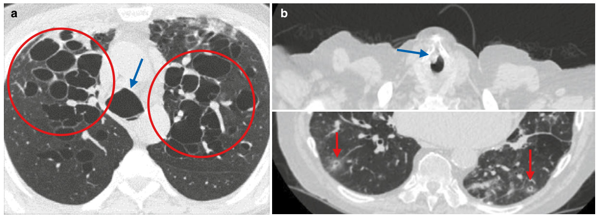
以气管和主支气管异常扩张为特征，常为先天性，但也可为获得性。与气管软化症类似，可见气管壁薄弱，致呼气时塌陷性增加。但气管支气管扩张症及其薄弱源于纵行弹力纤维和平滑肌细胞的萎缩或缺失，有时被认为具有遗传成分[8]。其放射学诊断简便，例如通过胸部 CT 扫描，当满足以下至少两项发现时即可确诊：气管直径 >3 cm、右主支气管直径 >2 cm、左主支气管直径 >1.8 cm。根据 Schwartz 分型，MKS 可分为三种放射学亚型：I 型，气管和主支气管相对轻微、对称性扩张；II 型，扩张更明显且形态偏心，并存在憩室；III 型，憩室或囊袋状改变延伸至远端支气管（图 1.1a）[9]。
1.1.1.5 气管腔内肿瘤与气管狭窄
气管内的异常细胞增生可形成外观差异显著的肿块，向气管腔内突出和/或浸润气管壁。这些肿瘤既可为良性（如乳头状瘤），也可为恶性（如淋巴瘤、黑色素瘤、癌或肉瘤），其中最常见的是鳞状细胞癌（占临床病例的 50%–60%）和腺样囊性癌（10%–15%）[10]。肿块过度生长最终可致气道狭窄或阻塞，引起
呼吸困难，且在肿瘤可切除时需行手术，或行放射治疗[10]。由于气管恶性肿瘤发病率低，且在 X 线胸片上表现隐匿，早期识别困难。多平面重建及三维重建 CT 可提高偶发病变诊断的准确率。气管狭窄常伴呼吸困难，严重时尤为明显，最常见于长期气管插管或气管切开术后（手术或机械通气），亦可继发于外伤、感染及韦格纳肉芽肿、结节病等自身免疫性疾病。
1.1.1.6 喉乳头状瘤病
喉上皮细胞反复感染人乳头瘤病毒（HPV）变种可导致细胞增殖，形成喉部良性乳头状瘤，并可扩展至气管和支气管。该病在儿童中的患病率为 4/10 万，在成人中为 2/10 万；如不治疗，良性肿瘤逐渐增大可引起气道阻塞和/或转化为喉鳞状细胞癌[11]。早期发现对及时启动治疗至关重要，通常采用喉显微外科手术（如 CO 激光切除），必要时辅以辅助治疗[11]。喉乳头状瘤病在 CT 上表现为受累呼吸道的多发结节样病变，随病情进展可由喉部蔓延至气管和支气管（图 1.1b）。累及支气管时可出现伴空洞的肺结节（图 1.1b）。
1.1.2 支气管病变
先天性支气管病变源于胎儿肺发育过程中的发育异常；而非先天性（获得性）支气管病变通常由炎症、感染或机械性损伤所致，可导致支气管壁增厚、扩张/支气管扩张或阻塞/狭窄 [12]。急性感染性支气管炎是最常见的支气管疾病，以支气管壁增厚为主要表现，仅依据患者病史可与慢性支气管炎相鉴别。该增厚通常由支气管黏膜的炎症和水肿引起，CT 上可清晰显示。此外，急性感染性支气管炎常伴有支气管周围浸润，并可出现树芽征，提示存在黏液填塞的细支气管。
1.1.2.1 Williams–Campbell 综合征与支气管软化
Williams–Campbell 综合征是一种罕见的先天性疾病，可能具有遗传成分，影响第 4～6 级支气管的软骨，导致支气管软化。原发性支气管软化被认为与遗传因素相关，也可能与先天性心脏病或早产有关；而继发性支气管软化可由胸部外伤、慢性支气管炎、肺气肿、长期机械通气、结核或肺部良性肿瘤等多种原因引起。其病理生理学机制为支气管壁内支撑软骨缺失，导致气道塌陷和支气管扩张。支气管软化的影像学特征包括静脉曲张型支气管扩张、空气潴留以及因支气管壁支撑软骨缺失所致的气道塌陷（图 1.2a）。CT 上主要表现为呼气相扫描时的空气潴留和囊状支气管扩张（见下一段），且病变主要局限于下叶，这些发现提示该病。
1.1.2.3 囊性纤维化
囊性纤维化（CF）是一种常染色体隐性遗传病，由囊性纤维化跨膜传导调节蛋白（CFTR）基因突变引起，该基因编码的氯离子通道参与机体多部位（包括气道上皮）的水盐稳态调节 [19]。基因突变所致的氯离子转运缺陷使气道分泌物变得黏稠，进而阻塞气道，促使炎症和反复细菌感染的发生 [19]。最终，支气管扩张形成，支气管侵蚀进展可导致呼吸衰竭。
1.1.2.2 支气管扩张（支气管异常增宽）
支气管异常增宽（支气管扩张）可由多种疾病引起，从慢性炎症和反复感染到先天性疾病，如囊性
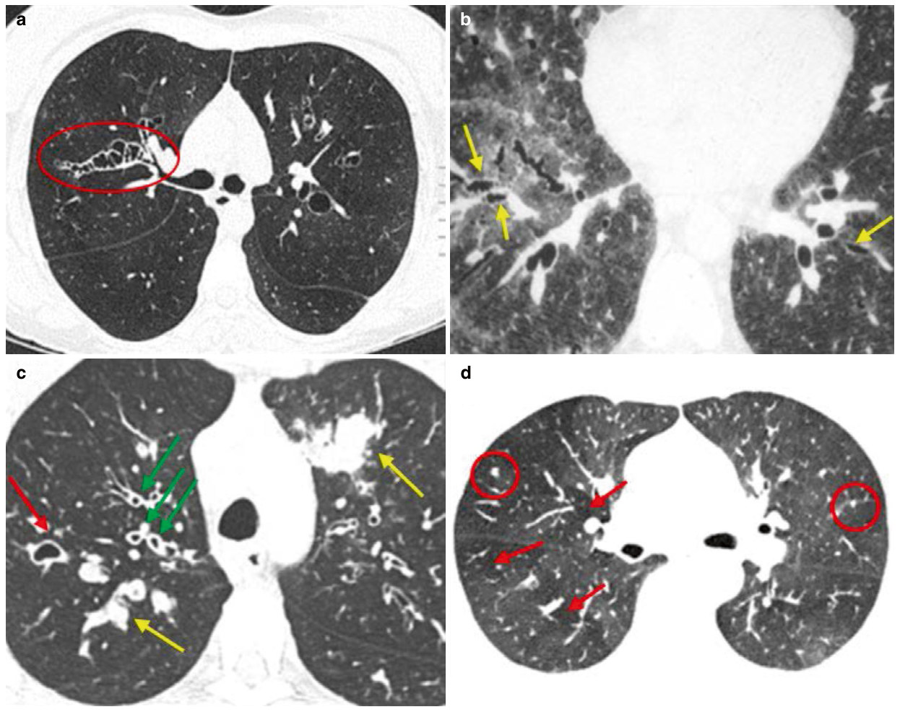
的纤维化组织牵拉所致
囊性纤维化的新生儿筛查开展相对较晚，对于出生于该筛查开展之前的患者，或当时无法进行该检查的患者，通常在反复感染和呼吸道症状出现后才得以症状性诊断。CT 影像显示弥漫性或局限性（取决于诊断时机的）直至重度支气管扩张，主要分布于上叶，并可见由黏液积聚所致的树芽征（图 1.2c）。此外，还可观察到包括过度充气、空气潴留及纤维化在内的肺实质异常[20]。
1.1.2.4 原发性纤毛运动障碍（PCD）
PCD 是一种罕见的遗传性疾病，由负责纤毛正常形成和功能的基因突变所致。在肺部，该病导致支气管扩张，其分布具有特征性，通常累及中下叶而上叶相对不受累。此外，CT 扫描可见黏液嵌顿，呈树芽征或分支结节样改变，黏液阻塞可导致肺组织塌陷（肺不张）[21]。由于这些影像学特征在多种疾病中同时存在，
疾病，PCD 的最终诊断不能仅依赖影像学，须结合其他诊断检查加以证实。
1.1.2.5 支气管内肿瘤
支气管内肿瘤发生于支气管气道管腔内，多为恶性，仅 2% 为良性。CT 上通常表现为轮廓清晰、球形或卵圆形肿块突向气道腔内，可引起支气管阻塞，导致远端肺不张或阻塞性肺炎。常可见强化表现，尤其是类癌肿瘤 [22]。
神经内分泌肿瘤 支气管内神经内分泌肿瘤是一类罕见的肺癌，起源于气道内的神经内分泌细胞。包括典型或非典型类癌，生长速度可慢可快，CT 上通常表现为位于中央气道内、轮廓清晰的圆形或卵圆形肿块 [23]。
弥漫性特发性肺神经内分泌细胞增生（DIPNECH） DIPNECH 是一种罕见的肺部疾病，其特征为支气管壁神经内分泌细胞弥漫性增生。影像学上，CT 表现为多发小结节、马赛克征及支气管壁增厚（图 1.2d） [24]。
| 细支气管炎类型 | 病因 | CT 特征 |
|---|---|---|
| 感染性 | 病毒（最常见为呼吸道合胞病毒）、结核 | 小叶中心结节、树芽征、磨玻璃影、 |
| 细支气管炎 | （支气管内播散）误吸 | 支气管壁增厚、斑片状实变区，尤以支气管中心性分布为著，空气潴留（图 1.3a） |
| 呼气相 | 主要由长期大量吸烟引起 | 小叶中心磨玻璃结节（3–5 mm） |
| 细支气管炎 | （图 1.3b）；支气管壁增厚；空气潴留；肺气肿 | |
| 滤泡性/ | 由支气管相关淋巴组织增生引起，由 | 小的小叶中心结节（通常直径 1–3 mm， |
| 淋巴细胞性 | 抗原刺激触发；与多种疾病相关（如 | 最大可达 12 mm）；支气管周围 |
| 细支气管炎 | 结缔组织疾病、免疫缺陷、自身免疫性疾病、感染及间质性肺疾病） | 结节；磨玻璃影区；可有轻度支气管扩张 |
| 弥漫性 | 罕见，炎症性起源；病因不明，存在遗传因素 | 弥漫性小叶中心结节、支气管壁 |
| 细支气管炎 | 被认为在其发病机制中起重要作用 | 增厚，以及提示感染支气管内播散的树芽征 |
| 闭塞性 | 主要由有毒化学物质暴露、肺损伤、 | 空气潴留；支气管壁增厚及 |
| 细支气管炎 | 呼吸道感染或移植后并发症，导致气道炎症及瘢痕形成（缩窄性细支气管炎）；细支气管内肉芽组织 | 支气管扩张；小叶中心性阴影；小气道纤维化 |
1.1.3 细支气管病变
细支气管炎由累及最小气道的感染性或炎症性病变引起，根据病因可分为感染性、感染后性、组织疾病相关性或药物诱导性细支气管炎。临床上细支气管炎可呈急性或慢性病程。HRCT 因具有足够分辨力以显示细支气管的形态学改变而成为首选检查方法 [25]。组织学上可区分细胞性（增殖型）和缩窄性（纤维化型）两种类型。增殖型细支气管炎的典型表现为斑片状双侧实变，常合并结节样异常、含气腔隙实变影，以及支气管壁增厚（当管壁存在炎症时）。而纤维化型细支气管炎则以管壁增厚和同心性纤维化所致的管腔狭窄为特征，CT 上常表现为马赛克样衰减，提示区域性通气不足伴呼气相 CT 图像上的气体潴留，以及灌注减低，最终导致细支气管阻塞，晚期可发生管腔闭塞（闭塞性细支气管炎）[26]。闭塞性细支气管炎的炎症和纤维化可源于既往感染、吸入性损伤、自身免疫性疾病，并可作为肺移植的并发症（慢性肺移植物功能障碍）。移植物抗宿主病（GVHD）是移植（异基因造血干细胞移植）的另一常见并发症。表 1.1 总结了某些特定类型细支气管炎及其在 CT 上的表现。
| 细支气管炎类型 | 病因 | CT 表现 |
|---|---|---|
| 感染性细支气管炎 | 病毒感染（最常见为呼吸道合胞病毒）、结核（支气管内播散）、误吸 | 小叶中心结节、树芽征、磨玻璃影、支气管壁增厚、以支气管为中心分布的斑片状实变影、空气潴留（图 1.3a） |
| 呼吸性细支气管炎 | 主要由重度吸烟引起 | 小叶中心磨玻璃结节（3～5 mm）（图 1.3b）；支气管壁增厚；空气潴留；肺气肿 |
| 滤泡性/淋巴细胞性细支气管炎 | 由支气管相关淋巴组织增生所致，由抗原刺激诱发；与多种疾病相关（如结缔组织病、免疫缺陷病、自身免疫性疾病、感染及间质性肺疾病） | 小的小叶中心结节（典型直径 1～3 mm，最大可达 12 mm）；支气管周围结节；磨玻璃影区域；可伴轻度支气管扩张 |
| 弥漫性泛细支气管炎 | 罕见，发病机制为炎症性；病因不明，强烈怀疑遗传因素参与其发病过程 | 弥漫性小叶中心结节、支气管壁增厚及树芽征，提示感染经支气管播散 |
| 闭塞性细支气管炎 | 主要由有毒化学物质暴露、呼吸道感染或移植并发症所致的肺部损伤引起，导致气道炎症与瘢痕形成（缩窄性细支气管炎）；细支气管内可见肉芽肿性组织 | 气体陷闭；支气管壁增厚及支气管扩张；小叶中心致密影；小气道纤维化 |
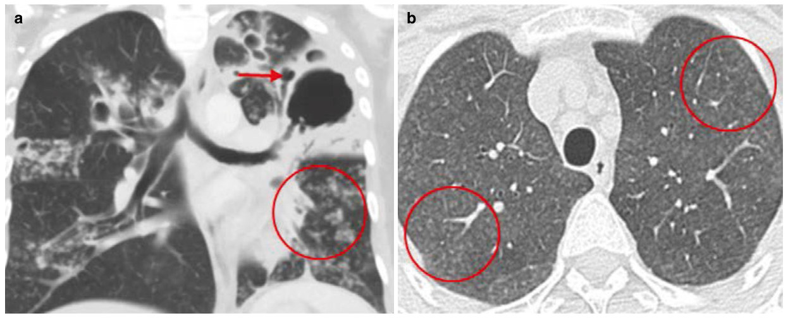
1.1.4 慢性呼吸系统疾病
1.1.4.1 慢性阻塞性肺疾病（COPD）和慢性支气管炎
长期接触有毒物质（最常见为香烟烟雾，也包括某些化学物质、空气污染物及其他颗粒和气体），或遗传性疾病如 α1-抗胰蛋白酶缺乏症，可导致慢性阻塞性肺疾病（COPD），即气道、肺实质及肺血管的慢性炎症状态。长期来看，慢性支气管炎伴支气管壁炎症、黏液腺增生及黏液分泌增加，加之肺气肿（无纤维化的肺泡壁破坏），最终导致气流受限和呼吸困难[27]。CT 影像可显示不同类型肺气肿的特征性表现：小叶中心型肺气肿表现为无可见壁的低衰减区，通常累及上叶；全小叶型肺气肿显示肺泡壁均匀破坏，导致弥漫性低衰减，多见于下叶；间隔旁型肺气肿以胸膜下低衰减区为特征，可见壁，常伴大疱形成。每种类型的肺气肿在 CT 上均具有独特表现，有助于鉴别和准确诊断。另一方面，慢性支气管炎无论是否合并 COPD，通常表现为双侧支气管壁均匀增厚、气道内黏液致密聚积（可形成特征性树芽征），呼气相扫描显示肺衰减的马赛克样改变，提示存在空气潴留区域[27, 28]。
1.1.4.2 Asthma
哮喘是一种广泛流行的异质性慢性呼吸系统疾病，常由过敏原、呼吸道感染、环境污染物及体力活动诱发。尽管不同患者潜在的发病机制各异，但其共同特征是气道慢性炎症，表现为肿胀、敏感性和反应性增高，导致喘息、气短、胸闷及咳嗽[29]。CT 扫描显示支气管壁显著增厚，气道内偶见黏液嵌顿，可导致受累区域的肺不张或肺组织塌陷。此外，常可见提示广泛空气潴留的马赛克衰减表现，其程度通常比 COPD 更为明显（图 1.4a）[29, 30]。
1.2 吸入性疾病
吸入性疾病涵盖因暴露于各种空气传播物质而引起的一系列肺部疾病。根据病因学因素（包括颗粒物、有毒气体、挥发性有机化合物及生物气溶胶）可对其进行分类。呼吸系统具有巨大的表面积，
aa11 aa22
轴位（a1）和矢状位（a2）CT 图像可见明显的支气管扩张区（红箭头）及实变影（红圈）。(b) 慢性过敏性肺炎。轴位 CT 图像显示慢性过敏性肺炎典型的"三密度征"，可见正常肺实质（绿圈）、气体潴留（红圈）以及 NSIP 纤维化型病变区域（黄圈）
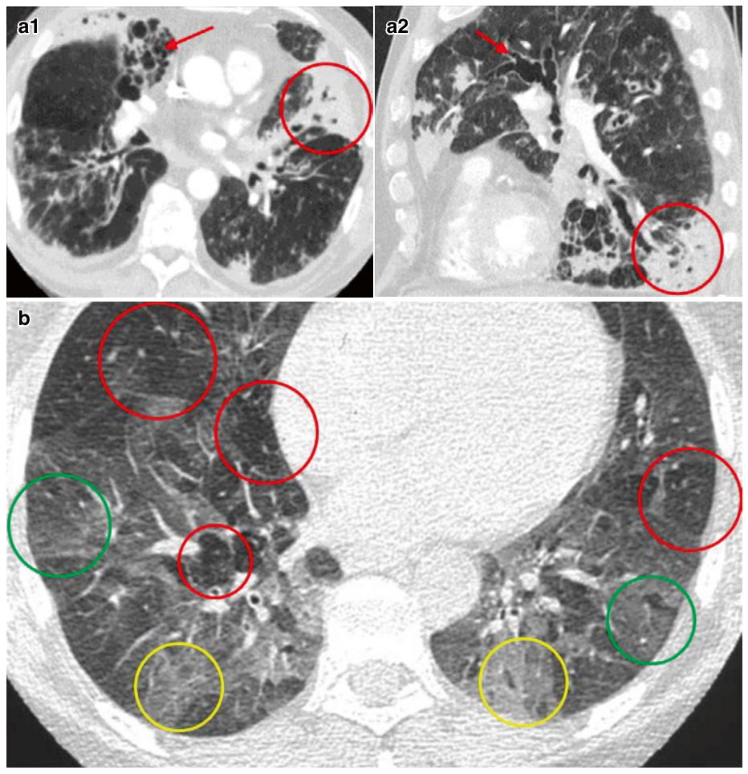
其精细而复杂的结构是机体与外界环境之间的主要界面，因而特别容易受到吸入性损害。吸入性疾病的病理生理涉及吸入物质与呼吸上皮之间复杂的相互作用，可引发一系列炎症反应并可能导致组织重塑。急性吸入性损伤可表现为支气管痉挛、肺水肿或 ARDS；长期暴露则可导致尘肺病、过敏性肺炎或职业性哮喘等疾病。这些疾病的临床表现和预后受多种因素影响，包括吸入物质的理化特性、暴露时间和强度，以及遗传易感性和既往呼吸系统疾病等宿主个体因素。CT 扫描能够显示肺结构的细微变化，包括磨玻璃影、实变影和间质性改变，这些表现通常与吸入性暴露相关。通过评估肺受累的范围和分布，可指导临床治疗决策，并对吸入性损伤或职业性肺疾病患者的疾病进展进行监测。
肺受累的范围和分布，指导吸入性损伤或职业性肺疾病患者的治疗决策并监测其疾病进展。
1.2.1 尘肺病
尘肺病是一组由吸入无机粉尘颗粒（主要为二氧化硅、石棉和煤尘）所引起的间质性肺疾病。这些疾病具有慢性炎症和肺纤维化的共同特征，但各自具有不同的病理学和影像学特点。矽肺由结晶型二氧化硅粉尘暴露引起，以矽结节和进行性纤维化为特征。石棉肺由石棉纤维吸入所致，累及肺实质和胸膜，表现为纤维性胸膜斑和肺实质纤维化。煤工尘肺（CWP）源于煤尘吸入，可导致巨噬细胞活化和纤维化 [31]。CT 影像在肺疾病诊断中
显示结节状阴影、胸膜斑块和纤维化团块等特征性表现，这取决于尘肺病的类型和分期 [32]。
1.2.2 过敏性肺炎
过敏性肺炎（HP）是肺泡对吸入的有机粉尘（如鸟粪、发霉干草及某些化学物质）产生的过敏反应。反复接触吸入性变应原可触发肺实质内的免疫介导炎症反应。根据暴露时长和症状严重程度，通常将其分为急性期、亚急性期和慢性期：急性期以高强度暴露后短时间内出现流感样症状为特征；亚急性期发生于长期或反复低水平暴露后；慢性期则以不可逆的肺损伤和纤维化为标志。急性期患者表现为流感样症状和呼吸困难，大多数 HP 患者在亚急性期接受扫描。影像学上，（急性期和）亚急性期表现为弥漫性或斑片状磨玻璃影、边界不清的小叶中心结节，以中上肺野分布为主。亚急性期和慢性期可见马赛克样衰减（提示小气道炎症/纤维化改变）于呼气相扫描上出现空气潴留、非干酪样肉芽肿及炎性浸润，而网格影和蜂窝肺则见于慢性期 [33]。慢性过敏性肺炎的典型特征为三密度征或称
1.2.3 吸烟相关间质性肺病
疾病
吸烟相关间质性肺病（SR-ILD）是一组与烟草使用直接相关的肺部疾病谱系，包括呼吸性细支气管炎伴间质性肺病（RB-ILD）、脱屑性间质性肺炎（DIP）及肺朗格汉斯细胞组织细胞增生症（PLCH）。这些疾病虽各具特征，但均与吸烟密切相关。SR-ILD 的 CT 表现多样，但常包括磨玻璃影、小叶中心结节和间质增厚。在 RB-ILD 中，这些改变通常较轻，主要累及上叶；呼气相成像上还可见轻度网格影和空气潴留区域，并伴有肺气肿样改变。晚期病例的 CT 扫描可显示偶发的牵拉性支气管扩张 [34]。
DIP 表现为更广泛的磨玻璃影和偶发囊肿，而 PLCH 以随时间演变的结节和囊性改变为特征（形态奇特、不均匀的囊肿），主要累及肺的上部，肋膈角区域不受累。高分辨率 CT（HRCT）在诊断和鉴别这些疾病中起关键作用。结合影像学模式、临床病史和肺功能检查，通常可在无需肺活检的情况下作出可靠的诊断 [34]。
1.3 诊断思路与注意事项
准确诊断气道疾病与吸入性疾病需要综合全面的方法，整合临床病史、职业暴露史及吸烟史。高分辨率 CT（HRCT）是详细评估间质性与气道疾病的首选影像学方法，呼气相扫描在评估空气潴留与小气道病变中起着关键作用。为提高诊断准确性，放射科医生应与病理科医生密切合作以进行活检相关性分析，并保持广泛的鉴别诊断思路。该思路应涵盖可模拟气道疾病与吸入性疾病的感染、恶性肿瘤及系统性疾病。通过采用这种多维度策略，临床医生能够确保对这些复杂呼吸系统疾病进行更为精准且全面的评估。
1.4 小结
CT 影像已成为评估气道疾病与吸入性疾病不可或缺的工具，可对其复杂的病理生理学提供无与伦比的深刻见解。作为专业放射科医生，对这些疾病相关的多样化影像学表现保持全面理解至关重要。病因、病理生理学与最终 CT 表现之间的复杂相互作用需要细致入微的判读，以确保准确诊断并指导最佳临床管理。CT 技术的最新进展（包括空间分辨率和时间分辨率的提升）进一步增强了检测细微气道异常和量化疾病进展的能力。通过利用这些前沿影像技术并保持对疾病过程的全面认识，
放射科医生能够显著提升诊断精度，为改善患者预后作出贡献。本综述深入概述了气道疾病与吸入性疾病的 CT 影像学特征、病因、病理生理学及病理学。随着该领域的不断发展，紧跟新兴 CT 技术及新型影像生物标志物的最新进展，对于在气道疾病与吸入性疾病领域提供最先进诊疗至关重要。
1. Valente T. Airway disease. In: Scaglione M, Linsenmaier U, Schueller G, Berger F, Wirth S, editors. Emergency radiology of the chest and cardiovascular system. Cham: Springer; 2017. p. 213–58.
2. Li T, Zhou HP, Zhou ZJ, Guo LQ, Zhou L. Computed tomography-identified phenotypes of small airway obstructions in chronic obstructive pulmonary disease. Chin Med J. 2021;134(17):2025–36.
3. Brixey AG, McCallum R. Imaging of large airway disorders. Clin Chest Med. 2024;45(2):489–503.
4. Doolittle AM, Mair EA. Tracheal bronchus: classification, endoscopic analysis, and airway management. Otolaryngol Head Neck Surg. 2002;126(3):240–3.
5. McGuinness G, Naidich DP, Garay SM, Davis AL, Boyd AD, Mizrachi HH. Accessory cardiac bronchus: CT features and clinical significance. Radiology. 1993;189(2):563–6.
6. Baroni RH, Feller-Kopman D, Nishino M, et al. Tracheobronchomalacia: comparison between end-expiratory and dynamic expiratory CT for evaluation of central airway collapse. Radiology. 2005;235(2):635–41.
7. Fernandez-Trujillo L, Sangiovanni S, Morales EI, Sua LF, Garcia CA. Thoracic computed tomography scan and bronchoscopy appearance of Mounier-Kuhn syndrome: a case report. J Investig Med High Impact Case Rep. 2020;8:2324709620947892.
8. Krustins E, Kravale Z, Buls A. Mounier-Kuhn syndrome or congenital tracheobronchomegaly: a literature review. Respir Med. 2013;107(12):1822–8.
9. Schwartz M, Rossoff L. Tracheobronchomegaly. Chest. 1994;106(5):1589–90.
10. Madariaga MLL, Gaissert HA. Overview of malignant tracheal tumors. Ann Cardiothorac Surg. 2018;7(2):244–54.
11. Solarz P, Mackiewicz-Nartowicz H, Sinkiewicz A, Burduk P. Results of CO2 laser surgery in laryngeal papillomatosis. Oral Oncol. 2024;158:107004.
12. Le L, Narula N, Zhou F, et al. Diseases involving the lung peribronchovascular region: a CT imaging pathologic classification. Chest. 2024;166:802.
13. Juliusson G, Gudmundsson G. Diagnostic imaging in adult non-cystic fibrosis bronchiectasis. Breathe (Sheff). 2019;15(3):190–7.
14. Kang EY, Miller RR, Muller NL. Bronchiectasis: comparison of preoperative thin-section CT and pathologic findings in resected specimens. Radiology. 1995;195(3):649–54.
15. Aliberti S, Goeminne PC, O'Donnell AE, et al. Criteria and definitions for the radiological and clinical diagnosis of bronchiectasis in adults for use in clinical trials: international consensus recommendations. Lancet Respir Med. 2022;10(3):298–306.
16. Ouellette H. The signet ring sign. Radiology. 1999;212(1):67–8.
17. Javidan-Nejad C, Bhalla S. Bronchiectasis. Radiol Clin North Am. 2009;47(2):289–306.
18. Shimon G, Yonit WW, Gabriel I, Naama BR, Nissim A. The “tree-in-bud” pattern on chest CT: radiologic and microbiologic correlation. Lung. 2015;193(5):823–9.
19. Mall MA, Burgel PR, Castellani C, Davies JC, Salathe M, Taylor-Cousar JL. Cystic fibrosis. Nat Rev Dis Primers. 2024;10(1):53.
20. Bugenhagen SM, Grant JCE, Rosenbluth DB, Bhalla S. Update on the role of chest imaging in cystic fibrosis. Radiographics. 2024;44(9):e240008.
21. Dettmer S, Ringshausen F, Vogel-Claussen J, et al. Computed tomography in adult patients with primary ciliary dyskinesia: typical imaging findings. PLoS One. 2018;13(2):e0191457.
22. Stevic R, Milenkovic B. Tracheobronchial tumors. J Thorac Dis. 2016;8(11):3401–13.
23. Chong S, Lee KS, Chung MJ, Han J, Kwon OJ, Kim TS. Neuroendocrine tumors of the lung: clinical, pathologic, and imaging findings. Radiographics. 2006;26(1):41–57; discussion 57−8.
24. Rossi G, Cavazza A, Spagnolo P, et al. Diffuse idiopathic pulmonary neuroendocrine cell hyperplasia syndrome. Eur Respir J. 2016;47(6):1829–41.
25. Hartman TE, Primack SL, Lee KS, Swensen SJ, Muller NL. CT of bronchial and bronchiolar diseases. Radiographics. 1994;14(5):991–1003.
26. Devakonda A, Raoof S, Sung A, Travis WD, Naidich D. Bronchiolar disorders: a clinical-radiological diagnostic algorithm. Chest. 2010;137(4):938–51.
27. Raoof S, Shah M, Make B, et al. Lung imaging in COPD part 1: clinical usefulness. Chest. 2023;164(1):69–84.
28. Pistenmaa CL, Washko GR. Chest imaging of COPD: bridging the COPD research gap with stop, look, and listen. Chest. 2023;164(1):8–10.
29. Silva CI, Colby TV, Muller NL. Asthma and associated conditions: high-resolution CT and pathologic findings. AJR Am J Roentgenol. 2004;183(3):817–24.
30. Choi S, Haghighi B, Choi J, et al. Differentiation of quantitative CT imaging phenotypes in asthma versus COPD. BMJ Open Respir Res. 2017;4(1):e000252.
31. DeLight N, Sachs H. Pneumoconiosis. In: StatPearls [Internet]. Treasure Island (FL): StatPearls Publishing; 2024.
32. Chong S, Lee KS, Chung MJ, Han J, Kwon OJ, Kim TS. Pneumoconiosis: comparison of imaging and pathologic findings. Radiographics. 2006;26(1):59–77.
33. Silva CI, Churg A, Muller NL. Hypersensitivity pneumonitis: spectrum of high-resolution CT and pathologic findings. AJR Am J Roentgenol. 2007;188(2):334–44.
34. Attili AK, Kazerooni EA, Gross BH, Flaherty KR, Myers JL, Martinez FJ. Smoking-related interstitial lung disease: radiologic-clinical-pathologic correlation. Radiographics. 2008;28(5):1383–96; discussion 96–8.
纵隔影像诊断要点：技巧、要诀与关键诊断
纵隔影像诊断要点：技巧、要诀与关键诊断
• 理解纵隔分区解剖：
学习运用 ITMIG 分区分类法定位纵隔与肺门病变，并优化鉴别诊断思路。
• 选择恰当的影像学方法：
深入了解 CT、MRI 和 PET/CT 在纵隔与肺门病变特征化评估中的最佳应用及其在指导临床决策中的作用。
• 识别关键影像学特征：
培养识别关键影像学表现（如钙化、坏死及强化方式）的能力，并将其与特定病理相对照，以辅助诊断、分期及治疗管理。
指导治疗并监测疗效。大多数纵隔肿瘤倾向于好发于特定分区，因此病变部位定位对临床诊断至关重要（表 2.1）。主要影像学方法包括计算机断层扫描（CT）、磁共振成像（MRI）、正电子发射断层扫描（PET）以及 PET/CT 和 PET/MRI 等组合方案，每种方法根据病变性质及所需临床信息各具独特优势。本章综述了八种最常见纵隔与肺门疾病的影像学特征，重点关注人口学、临床表现、合适的影像学方法，以及为外科医生、肿瘤科医生和转诊医生提供优化管理的关键信息。
2.2 纵隔及肺门 2.1 引言 淋巴结肿大
纵隔及肺门疾病涵盖一系列良性、恶性、炎症性及血管性病变。纵隔是位于双肺之间的复杂区域，其边界包括胸廓入口、膈肌、胸骨和脊柱。该区域容纳心脏、大血管、气管及淋巴结等关键结构，并可受来自邻近结构（如肺和胸壁）的病变累及。国际胸腺恶性肿瘤兴趣小组（ITMIG）更新的纵隔分区分类法是纵隔肿块定位的标准 [1, 2]，依据横断面影像解剖标志将纵隔分为三个分区——血管前区（前纵隔）、脏器区（中纵隔）和椎旁区（后纵隔）（表 2.1）。影像学检查通过精准定位病变、缩小鉴别诊断范围，在这些疾病的评估中起着至关重要的作用，
J. Goldin (*) 加州大学洛杉矶分校 David Geffen 医学院放射科，美国 洛杉矶 邮箱：JGoldin@mednet.ucla.edu
2.2.1 人口学与临床表现
纵隔及肺门淋巴结肿大常见于良性与恶性疾病。可由感染性病变（如结核病或真菌感染）、炎症性疾病（如结节病）或恶性肿瘤（如淋巴瘤及转移癌）所致。纵隔及肺门淋巴结肿大可见于各年龄段患者，其具体病因因人群而异。青年人，尤其是非裔美国人，更常罹患结节病；而淋巴瘤多见于青少年及青年；转移性疾病在老年人群中更为常见，结核病则在结核高发地区高发。临床上，纵隔淋巴结肿大可无症状，也可表现为非特异性症状，如咳嗽、呼吸困难、胸闷不适，或出现发热、体重下降等全身症状，尤其在恶性肿瘤病例中更为明显。
| 分区（病变占比） | 边界 | 目录 | 病理：脂肪衰减 | 囊性液体衰减 | 软组织衰减 |
|---|---|---|---|---|---|
| 前部 | 前部：胸骨 | 胸腺、脂肪、淋巴结 | (8.4%): | （24%）：心包 | 甲状腺肿、胸腺瘤 |
| 血管 | 后部：心包 | 淋巴结、左 | 胸腺脂肪瘤、 | 囊肿、囊性 | （30.8%）、胸腺癌 |
| (69.8%) | 上界：胸廓入口；下界：膈肌；外侧：纵隔胸膜 | 头臂静脉 | 脂肪瘤、脂肪肉瘤、心包脂肪垫、Morgagni 疝 | 胸腺瘤、淋巴管瘤、囊性畸胎瘤 | （7.5%）、淋巴瘤（14.4%）、成熟型畸胎瘤、胸腺增生、甲状旁腺腺瘤 |
| 中 | 前部：血管前间隙 | 心包 | 甲状腺肿（13%） | 淋巴结肿大/转移 | |
| （脏器） | 边界 | 气管、食管 | (16.8%): | （22.4%）、食管癌 | |
| (13.5%) | 后部：胸椎处的垂直线；上界：胸廓入口；下界：膈肌 | 淋巴结、心脏、上腔静脉、胸主动脉、胸导管、肺动脉 | 支气管囊肿 | ||
| 后部 | 前界：脏器 | 胸椎 | 髓外 | （13.9%）：侧位 | 神经源性肿瘤 |
| （椎旁） | 边界 | 椎旁软组织 | 造血 | 脑膜膨出 | (53.9%) |
| (5.4%) | 后外侧：胸壁缘；上界：胸廓入口；下界：膈肌 | 及神经 | 假性囊肿 | ||
| >1 个分区 | 脂肪肉瘤 | 淋巴管瘤 | 淋巴结肿大，肺癌 | ||
| (11.2%) | 脂肪过多症 | ||||
| 肺门 | 肺血管进入肺的区域 | 脂肪、淋巴结、肺血管、主支气管 | 脂肪肉瘤 脂肪过多症 | 肺动脉瘤 | 淋巴结肿大 |
2.2.2 影像学特征
由于淋巴结在不同部位的大小差异很大，单纯依据大小鉴别正常与病变淋巴结并不可靠。诊断应结合部位与形态学特征，或通过18F-氟脱氧葡萄糖评估代谢活性来综合判断 [4]。氟脱氧葡萄糖（FDG）-PET 在恶性或代谢活跃的淋巴结中显示高摄取，如淋巴瘤、转移性癌及活动性结节病所见。MRI 虽然不常规用于淋巴结肿大的评估，但在特定情况下有助于评估软组织特征，尤其在怀疑血管受累时 [5]（图 2.1）。
CT 是检出和评估纵隔淋巴结肿大的首选影像学方法，可提供淋巴结大小、形态及分布的高分辨率图像。淋巴结大小与良恶性病变可能性之间的关系已被广泛认识，但并非决定性 [3]。良性淋巴结肿大通常表现为 <1–1.5 cm 的淋巴结，常为感染或炎症的反应性改变。相反，恶性淋巴结肿大更常累及较大的淋巴结，伴形态不规则、脂肪门消失或坏死 [3]。然而也有例外，如结节病或结核等良性疾病也可引起显著增大，而较小淋巴结亦可能存在恶性病变。钙化、密度及强化方式等影像学特征可提供额外的诊断线索。CT 对于检出钙化尤具价值，钙化常见于结核或组织胞浆菌病等慢性炎症或感染性疾病，但也可见于骨肉瘤等转移性疾病。CT 密度增高（高于骨骼肌）的淋巴结可见于黑色素瘤、浆细胞瘤、Castleman 病、卡波西肉瘤以及甲状腺癌和肾细胞癌。
2.2.3 临床意义
对于外科医生或肿瘤科医生，影像学报告应明确淋巴结的大小、部位、代谢活性以及是否存在坏死或钙化。这些信息有助于鉴别良恶性病因，并指导活检决策及进一步治疗计划。临床上，良性病变可能需要随访或药物治疗，而恶性淋巴结肿大则要求精确
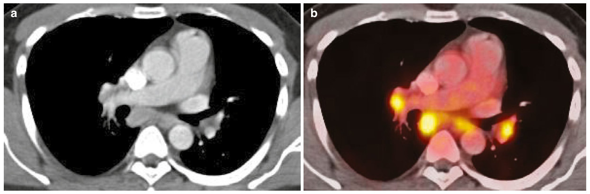
准确的临床分期以指导手术、化疗或放疗等治疗策略。结核病等感染性病因则需及时、合理的抗生素治疗以预防并发症。当怀疑恶性肿瘤时，通常需通过超声支气管镜（EBUS）或纵隔镜活检以最终确诊。
当软组织肿块表现为边缘不规则或呈分叶状，或因坏死、囊性变及内在钙化而出现密度不均匀时，应考虑侵袭性胸腺瘤[9, 10]。静脉注射对比剂有助于评估局部侵犯情况。CT 可显示纵隔脂肪浸润、血管结构受包绕或明显侵犯，以及胸膜或心包的侵犯。侵袭性肿瘤可伴胸膜种植（drop metastases），高度提示胸腺瘤。此时 MRI 具有独特价值，其软组织对比优于 CT，可用于评估局部侵犯，尤其是肿瘤累及心脏或大血管时。胸腺瘤通常不伴淋巴结肿大[11]。PET/CT 通过评估肿瘤代谢活性有助于鉴别胸腺瘤的良恶性。良性胸腺瘤通常表现为轻度 FDG 摄取，而恶性胸腺瘤则 FDG 摄取明显增高，提示更具侵袭性的生物学行为。然而，胸腺瘤及其他胸腺病变的 FDG 摄取存在变异性[12]。淋巴瘤或恶性巨细胞瘤等其他前纵隔肿物亦可呈 FDG 高摄取。因此，前纵隔肿物出现 FDG 摄取增高并不能将胸腺上皮源性肿瘤与该区域常见的其他肿瘤明确区分（图 2.2）[13]。
2.3 Thymoma
2.3.1 流行病学与临床表现
胸腺瘤是前纵隔最常见的原发肿瘤，好发于 40–60 岁成人，男女比例相当[6–8]。约 30%–50% 的胸腺瘤患者伴重症肌无力——一种以肌无力为特征的自身免疫性疾病。患者亦可表现为副肿瘤综合征，如纯红细胞再生障碍、低丙种球蛋白血症及结缔组织病。其他可能症状包括胸痛、咳嗽、呼吸困难、吞咽困难或因肿块效应/邻近结构侵犯所致的面部肿胀，但许多患者可无症状。
2.3.3 临床意义 2.3.2 影像学表现
外科医生或肿瘤内科医生借助影像学评估胸腺瘤的大小、范围及可切除性。影像报告中应包含的关键信息包括肿瘤是否侵犯邻近结构，如心包、胸膜或大血管。这些信息直接影响手术方案的制定及是否需行新辅助治疗。
CT 是诊断和分期胸腺瘤的首选影像学方法。胸腺瘤通常表现为前纵隔（前血管旁间隙）边界清楚的均匀或轻度不均匀肿块，多呈软组织密度。肿块内偶可见钙化，
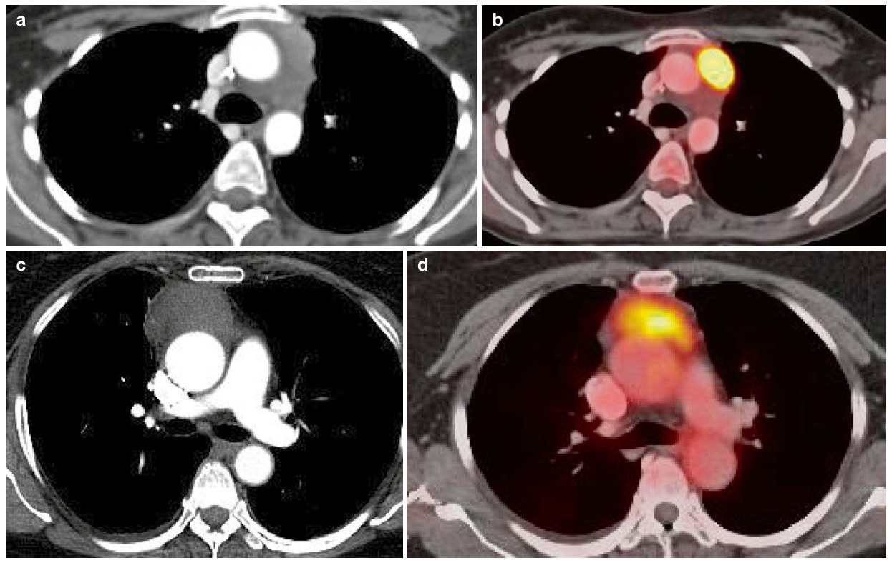
2.4 支气管囊肿
部分支气管囊肿可因囊内出血、蛋白含量较高或继发感染而出现内部密度不均。支气管囊肿常位于隆突附近，较少见于右侧气管旁区。这些囊肿通常不强化，有助于与其他纵隔肿块鉴别。但有时亦可呈强化或伴钙化。MRI 可提供额外的诊断信息，特别是在需将囊液成分与实性肿块进行鉴别时。支气管囊肿在 T2 加权序列上呈高信号；T1 加权像上信号多变，取决于囊内容物的出血性或蛋白性成分，钆对比剂不强化有助于确认其囊性特性[16, 17]。部分病例可因囊内出血、蛋白含量较高或继发感染而出现内部密度不均。当囊肿位置表浅时，可使用超声检查，但对于位置较深的病变，该方法价值有限（图 2.3）。
2.4.1 流行病学与临床表现
支气管囊肿是一种因胚胎发育期气管支气管树异常出芽所致的先天性畸形。最常见于中纵隔（内脏纵隔）或后纵隔（椎旁纵隔），通常在儿童或青年时期确诊。支气管囊肿占原发性纵隔肿块的 6%–15%[14]。多数支气管囊肿无症状，多为偶然发现；但体积较大者可引起呼吸困难、反复感染或压迫邻近结构（如气管）。
2.4.2 影像学特征
CT 能很好显示支气管囊肿的特征，通常表现为纵隔内边界清晰的液性密度（0–20 HU）肿块[15]。
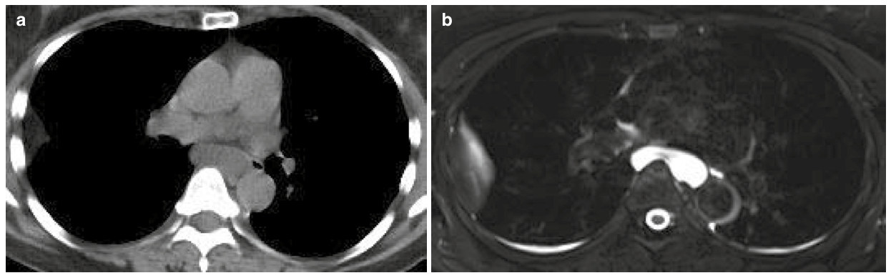
2.4.3 临床意义
外科医生必须了解囊肿的大小、位置及潜在的压迫效应。影像学应判断囊肿是否压迫气道或食管，因症状性病例或疑似感染时可能需手术切除。
2.5 神经源性肿瘤
2.5.1 流行病学与临床表现
神经源性肿瘤（包括神经鞘瘤和自主神经系统肿瘤）是椎旁区（后纵隔）最常见的肿瘤。成人中最常见的是神经鞘瘤（如施万细胞瘤和神经纤维瘤），而在儿童及青年中，神经节细胞瘤更为多见。临床上大多数患者无明显症状，仅少数因肿瘤压迫邻近结构或累及脊柱而出现疼痛和/或感觉异常。虽然多数神经源性肿瘤为良性，但在神经纤维瘤病患者中可发生恶性变。
2.5.2 影像学特征
由于 MRI 软组织对比优越，有助于区分囊性及实性成分，故成为评估神经源性肿瘤的首选影像学方法。周围神经鞘瘤多呈球形或哑铃状，而交感神经节细胞瘤则呈纵向延伸或柱状。神经源性肿瘤在 T2 加权 MRI 图像上通常呈等至高信号。增强扫描有助于明确肿瘤与
邻近结构（如脊髓和椎体）的关系。CT 常与 MRI 联合用于评估骨质受累情况，如椎体的侵蚀或膨胀改变 [18–20]。当怀疑恶性病变时，PET/CT 具有一定价值，因为恶性神经源性肿瘤的 FDG 摄取通常高于良性肿瘤。然而，良性施万细胞瘤体积较大时可表现为显著且不均匀的 FDG 摄取，可能与恶性病变相混淆。许多良性肿瘤的 FDG 摄取水平与恶性周围神经鞘瘤（MPNST）存在重叠。因此，解读 PET/CT 的临床医生应警惕这些高代谢的良性变体，并在必要时放宽活检指征（图 2.4）[21–23]。
2.5.3 临床意义
临床医生必须了解肿瘤的大小、位置以及与邻近神经或血管结构的关系。施万细胞瘤有时可生长巨大，侵蚀椎体或肋骨。应使用 MRI 评估椎管内延伸情况，以制定合理的手术方案 [24]。关键信息包括是否存在脊髓或神经根压迫，这可指导手术干预或活检的实施。当周围神经鞘瘤出现体积增大、内部不均匀、具有侵袭性以及 PET/CT 上 FDG 高摄取时，应怀疑恶性变。
2.6 甲状腺肿（胸骨后延伸）
2.6.1 流行病学与临床表现
纵隔甲状腺肿是血管前间隙最常见的病变之一（占 20%–40%，多见于 40 岁以上人群）。90% 位于右侧，这是因为锁骨下动脉及主动脉
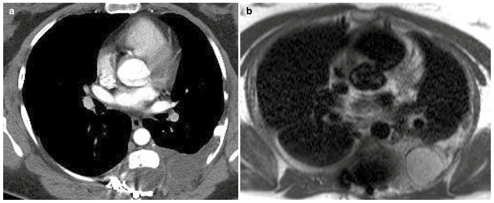
2.6.2 影像学特征
弓通常阻碍其向左扩展。约 10% 位于后纵隔 [25]。多结节性甲状腺肿经胸廓入口延伸至纵隔，或异位甲状腺组织直接位于纵隔内，定义为胸骨后甲状腺肿。但文献中对该定义尚无明确共识。甲状腺向纵隔的延伸可累及一侧或双侧叶。部分研究将任何部分甲状腺延伸至胸廓入口以下定义为胸骨后甲状腺肿，而另一些研究则将 50% 或以上的甲状腺位于胸廓入口以下定义为胸骨后甲状腺肿。这种定义的差异部分解释了不同研究结果之间的差异。胸骨后甲状腺肿在中老年人中更为常见，尤其是女性。由于气管或食管受压或移位，可出现呼吸困难、吞咽困难或声嘶等压迫症状。据报道，35%–73% 的病例存在气管受压 [26]。在 13.1% 和 28.8% 的胸骨后甲状腺肿中可出现甲状腺功能亢进，该疾病可属于从亚临床甲亢开始的连续谱系。患者在随访初期可无症状，随着结节自主性增加，甲状腺功能亢进可进展为明显的甲状腺毒症 [27]。然而，许多胸骨后甲状腺肿无症状，是通过影像学检查偶然发现的。
首选的影像学检查方法为胸部计算机断层扫描（CT）或磁共振成像（MRI）[28]。CT 可用于评估甲状腺肿块的大小、形态及特征。其影像学特征表现为不均匀的高密度（由于含碘，CT 值约为 70–85 HU）。通常可见囊性改变，也可伴有钙化。静脉注射对比剂后呈显著且持续强化（>2 分钟），且常与甲状腺相连 [29]。有时无法明确识别其与甲状腺的连接；但当其单独存在时，常表现出相似的影像学特征，从而可作出可靠诊断 [8]。CT 可精确评估与周围结构的解剖关系、气管移位情况以及气管受压程度。当气管径线 ≤10 mm 时需行外科干预。CT 还有助于评估食管及主要血管的受压和移位程度。CT 扫描所用的碘对比剂可诱发甲状腺功能亢进，并在体内碘负荷清除前不宜进行核医学甲状腺扫描。核医学甲状腺（碘或锝）扫描可显示胸腔内的甲状腺组织。其缺失
可能提示纵隔内为冷结节，但不能据此排除胸骨后甲状腺肿。当需要借助软组织对比来区分甲状腺与周围组织，特别是怀疑恶性时，可采用 MRI。若出现提示恶性的征象——纵隔筋膜界面消失或局部淋巴结肿大——应高度怀疑甲状腺癌[30, 31]。建议行甲状腺超声以评估胸骨后甲状腺肿的颈部成分；但甲状腺超声无法评估其胸腔内部分的范围及特征。
患者常表现为全身症状，即所谓的“B 症状”，包括发热、盗汗和体重减轻。纵隔受累多见于霍奇金淋巴瘤，但也可发生于非霍奇金淋巴瘤。累及纵隔的少见淋巴瘤类型包括原发纵隔（胸腺）B 细胞淋巴瘤、灰区淋巴瘤（GZL）、T 淋巴母细胞淋巴瘤（TCLL）、黏膜相关淋巴组织（MALT）淋巴瘤和外周 T 细胞淋巴瘤（PTCL）[34–36]。纵隔淋巴瘤多见于年轻成人，尤其是 20–30 岁人群。霍奇金淋巴瘤以男性略多见，且在较年轻群体中更常见；非霍奇金淋巴瘤则可累及青年和老年人。原发纵隔 B 细胞淋巴瘤（PMBCL）最常见于年轻女性，而 T 细胞淋巴瘤等其他类型可发生于不同年龄段的男女性患者。纵隔淋巴瘤患者常因邻近结构受压而出现胸痛、咳嗽和呼吸困难（气促）等表现。部分患者可因血管阻塞而发生上腔静脉综合征。在霍奇金淋巴瘤中，发热、盗汗和不明原因体重减轻等全身症状尤为常见。此外，患者还可表现为乏力或身体其他部位的淋巴结肿大。
2.6.3 临床意义
影像学检查对于评估胸骨后甲状腺肿至关重要，可明确其大小、范围及对邻近结构（包括气管、食管和大血管）的影响。影像学有助于评估甲状腺肿自胸廓入口向下延伸的程度，以及是否累及一侧或双侧甲状腺叶。显著的气管受压（<10 mm）或食管移位可能需要手术干预，明确血管受累情况对手术规划至关重要。此外，影像学可将占位效应与呼吸困难、吞咽困难和声音嘶哑等症状相关联，并有助于识别提示恶性的特征，如边缘不规则或组织侵犯。为术前规划，影像学对于明确甲状腺肿与周围结构的关系，以及与淋巴瘤、胸腺瘤等其他纵隔肿块的鉴别至关重要。增强 CT、MRI 和核医学甲状腺扫描等多种影像学方法，可提供关于甲状腺肿特征及周围解剖的重要信息。这有助于临床医师作出合理的手术决策，并监测潜在并发症；文献报道胸骨后甲状腺肿的恶性率为 3.7%–23.3%[27]。
2.7.2 影像学特征
影像学在纵隔淋巴瘤的诊断、分期和监测中起着关键作用。主要影像学技术包括计算机断层扫描（CT）和正电子发射断层扫描/计算机断层扫描（PET/CT）。PET/CT 被认为是淋巴瘤影像学检查的金标准，因其可提供来自 FDG 摄取的代谢信息和精细的解剖图像，从而精确定位代谢活跃的病变。PET/CT 在区分治疗后活动性病变与纤维化方面尤为有效，这对评估治疗反应至关重要。CT 扫描对于评估纵隔肿块的大小、范围和形态必不可少。淋巴瘤通常表现为较大的均匀软组织肿块，但也可出现坏死或囊性变，导致局部呈低密度区。在影像上，霍奇金淋巴瘤表现为实性分叶状病灶，无钙化。霍奇金淋巴瘤体积可很大，并可浸润邻近组织（肺、神经、血管）；病灶质地硬且呈分叶状，可见部分坏死灶。淋巴瘤在影像上的一个典型特征是出现血管包绕或移位但不直接侵犯血管，
2.7 淋巴瘤
2.7.1 流行病学与临床表现
淋巴瘤是最常见的前纵隔肿瘤，约占所有纵隔恶性肿瘤的 50%–60%。可分为霍奇金淋巴瘤和非霍奇金淋巴瘤 [1, 32, 33]。然而，原发性纵隔淋巴瘤（仅起源于纵隔）较为罕见，仅占所有淋巴瘤病例的约 1%。最常见的原发性及继发性纵隔淋巴瘤为弥漫性大 B 细胞淋巴瘤和霍奇金淋巴瘤。
有助于将淋巴瘤与其他纵隔恶性肿瘤相鉴别。此外，识别纵隔内肿大的淋巴结及胸腔外的淋巴结病变，可能提示系统性淋巴瘤的继发累及。磁共振成像（MRI）可在需要额外软组织对比时选择性地应用，尤其有助于鉴别淋巴瘤与其他纵隔肿块，或评估其对血管及心脏结构的累及情况。在原发性纵隔淋巴瘤中，影像学常表现为分叶状、均匀的肿块，有时伴坏死或囊性变区 [37, 38]。然而，将淋巴瘤与其他纵隔软组织肿块进行鉴别仍具有挑战性，通常需要活检来确诊 [32, 39, 40]。淋巴瘤的特征性表现是对血管的包绕或推压而无侵犯。当在年轻患者（尤其伴有 B 症状：发热、体重下降、盗汗）中观察到上述征象时，应怀疑纵隔淋巴瘤。此外，若多个纵隔淋巴结区域肿大并伴有胸腔外淋巴结病变，应考虑系统性淋巴瘤的继发累及 [1, 32]。CT 或 MRI 仍是评估纵隔肿块大小、范围及形态的关键手段（图 2.2）。
疗反应评估，并指导介入性操作。通过影像学了解纵隔淋巴瘤的特异性征象，有助于临床医师为每位患者制定最佳的个体化治疗方案。诊断原发性纵隔淋巴瘤时，必须累及纵隔淋巴结、胸腺或二者，且就诊时无纵隔以外其他淋巴结或器官的累及。在更常见的情况下，淋巴瘤作为系统性疾病的组成部分继发性累及纵隔，因此需要对颈部、腹部、盆腔及胸部进行全面影像学评估。PET/CT 对于初始分期及治疗过程中的随访监测至关重要，可有效检出脾脏、骨骼及胃肠道中的隐匿性病变。此外，FDG-PET/CT 有助于通过识别最具代谢活性的病灶来指导组织取材，从而最大程度地减少取材于坏死或未累及区域的风险。
2.8 畸胎瘤
2.8.1 流行病学
纵隔畸胎瘤属于生殖细胞肿瘤，好发于年轻个体，通常在生命的前三十年内确诊，男性略多见。这些肿瘤起源于前纵隔，占所有纵隔肿块的 10%–15%。在纵隔生殖细胞肿瘤中，畸胎瘤是最常见的组织学类型，占纵隔生殖细胞肿瘤的 50% [41]。尽管畸胎瘤可发生于任何年龄，但更常见于青年人，其中约 60% 为良性。恶性类型（如未成熟畸胎瘤或与其他生殖细胞恶性肿瘤合并存在者）相对少见。临床上，许多纵隔畸胎瘤无症状，常因其他原因行影像学检查时偶然发现。当出现症状时，通常由肿瘤对其邻近结构（如肺、气管或心脏）的占位效应所致。常见症状包括胸痛、咳嗽、呼吸困难（气促），少数情况下出现上腔静脉综合征。在某些病例中，畸胎瘤破裂可导致更急性的临床表现，如咯血或胸腔积液。畸胎瘤是最常见的纵隔生殖细胞肿瘤，起源于血管前纵隔——该部位是此类肿瘤最常见的性腺外发生部位。肿瘤内可包含来自三个原始胚层中一个以上胚层的组织：外胚层（如牙齿、皮肤和毛发）、中胚层（包括软骨和骨）以及内胚层（如支气管、肠管或胰腺组织）。这些肿瘤分为成熟性和未成熟性两类，前者更为多见。罕见情况下，畸
2.7.3 临床意义
影像学在纵隔淋巴瘤的诊断引导及治疗规划中至关重要。必须准确判断纵隔肿块的大小、形态及内部成分，包括均匀性、坏死及囊性区等方面。这些信息对于鉴别淋巴瘤与其他纵隔肿块（如胸腺瘤）至关重要，并对制定有效治疗方案必不可少。PET/CT 影像可使临床医师评估纵隔及全身累及的范围，对准确分期具有关键作用。识别胸腔外淋巴结、脾脏、骨骼或其他器官的累及，对制定治疗计划和预测患者预后极为重要。此外，关键在于评估淋巴瘤是否包绕或推移主要血管结构，因为这一鉴别有助于判断肿块性质，并对指导潜在的外科或治疗性干预至关重要。PET/CT 在指导组织取材方面尤为有用，可精准定位肿块内 FDG 摄取最高的区域，从而确保在活性部位取材，避免取材于坏死或未累及区域。总之，影像学对于准确诊断与分期、监测治
瘤内可含有癌或肉瘤的病灶，称为恶性畸胎瘤。畸胎瘤主要累及儿童及青年，且无明显性别倾向。
2.8.2 影像学表现
影像学对于纵隔畸胎瘤的诊断与特征评估至关重要。最常用的影像学方法为计算机断层扫描（CT）和磁共振成像（MRI），有助于将畸胎瘤与其他纵隔肿块相鉴别。CT 是评估纵隔畸胎瘤的主要影像学工具。此类肿瘤通常表现为前纵隔内边界清楚的混杂密度肿块。CT 上畸胎瘤的一个关键特征是含有脂肪、液体、软组织、钙化甚至牙样结构，这是成熟型畸胎瘤的典型表现。CT 对于评估肿瘤与邻近结构的关系，以及识别气管、肺、心脏或大血管是否存在受压或移位也至关重要。当需要进一步进行软组织特征分析时，可选择性应用 MRI。MRI 有助于区分肿瘤内的组织成分，如脂肪与液体，并评估肿瘤对邻近结构的潜在侵犯，尤其在怀疑恶性时。凭借其卓越的软组织对比度，MRI 是评价血管或心脏受累的极佳选择。在某些情况下，仅凭影像学可能无法明确地将畸胎瘤与其他纵隔肿块（如淋巴瘤）区分开来。在此情形下，可能需要进行活检以确诊。然而，将影像学表现与人口学及血清学资料相结合，有助于缩小鉴别诊断范围。
占位效应。准确的影像学评估有助于确定所需干预的紧迫性及类型。尽管大多数畸胎瘤为良性，影像学仍必须评估恶性征象，例如边缘不规则或邻近组织侵犯，其中 MRI 在评估软组织侵犯方面尤具价值。当怀疑恶性时，可能需要进一步采取活检等诊断步骤。对于需要手术切除的患者，影像学可为术前规划提供重要参考，详细显示肿瘤与周围结构的关系，以确保安全切除。对于较大或具有侵袭性的畸胎瘤，影像学有助于预见潜在的手术并发症。最后，在罕见的畸胎瘤破裂病例中，影像学对于诊断胸腔积液或气胸等并发症至关重要，可指导临床进行恰当处理并监测患者的治疗反应。
2.9 结节病
2.9.1 人口学与临床表现
结节病是一种系统性肉芽肿性疾病，主要累及肺与淋巴系统，尤其是肺门及纵隔淋巴结。该病常见于 20–40 岁的年轻人，在非裔美国人及北欧人群中患病率较高，女性略多见 [42]。多数患者无症状，常在影像学检查中偶然发现。出现症状时，结节病可表现为咳嗽、呼吸困难、胸痛等呼吸系统症状，以及疲劳、发热、体重下降等全身症状。部分患者可表现为 Löfgren 综合征，其特征为发热、结节性红斑、双侧肺门淋巴结肿大及关节疼痛。
2.8.3 临床意义 2.9.2 影像学表现
影像学对于纵隔畸胎瘤的临床管理具有重要的指导作用，可为临床医生提供关键信息。影像学通过详细描述肿瘤的大小、成分及边界来对其进行特征评估。CT 或 MRI 应能突出显示畸胎瘤的混杂特性，包括脂肪、钙化及囊性区等特征，有助于确诊并将其与胸腺瘤、淋巴瘤等其他纵隔肿块相鉴别。此外，评估占位效应及侵犯情况至关重要，因为临床医生需要判断畸胎瘤是否压迫或推移气管、肺、心脏或大血管等重要结构。此类信息对治疗规划，尤其是因占位效应而出现症状时的治疗规划，至关重要。
影像学对于结节病的诊断至关重要，尤其是在肺门及纵隔区域。CT 是显示双侧肺门淋巴结肿大（结节病的标志性表现）的主要影像学方法，常见纵隔淋巴结受累，尤其是右气管旁及主肺动脉窗淋巴结 [43]。高分辨率 CT（HRCT）可提供细致的影像，突出显示双侧肺门及纵隔淋巴结肿大，以及支气管血管束和小叶间隔内的小结节。在进展期病例中，CT 可显示上肺的纤维化改变，如网格影、支气管扩张及结构变形。
在结节病患者中，84–97% 在 CT 上可见纵隔及肺门淋巴结肿大 [43,44]。经典的三联征 Garland 三联征——双侧肺门及右侧气管旁淋巴结肿大——已广为人知 [30]。对称性肺门肿大提示结节病，而不对称性表现则可能提示淋巴瘤或结核（TB）。尽管结节病也可出现坏死，但其出现应警惕结核 [31]。44–53% 的结节病患者存在淋巴结钙化，一般为双侧局灶性钙化，与结核所见的完全性、不对称性钙化不同 [45]。正电子发射断层扫描（PET）可评估淋巴结的代谢活性，区分活动性炎症与慢性纤维化。PET 可评估淋巴结代谢活性，有助于鉴别活动性炎症与慢性（图 2.1）纤维化 [46]。
2.9.3 临床意义
影像学在肺门及纵隔结节病的诊断与管理中至关重要。通过识别特征性的双侧肺门及纵隔淋巴结肿大，结合临床及实验室结果以确诊。影像学在疾病分期中也发挥关键作用：I 期仅表现为淋巴结肿大而无肺部受累，II 期和 III 期肺部受累逐渐加重，IV 期则以纤维化为特征。该分期有助于治疗决策和预后判断。此外，影像学对于监测疾病活动度和进展至关重要。系列影像学检查可追踪结节病变化并评估治疗反应，对诊断不明确的病例，PET 检查有助于检出活动性炎症。影像学还有助于排除其他引起肺门及纵隔淋巴结肿大的病因，如淋巴瘤或结核。CT 表现，尤其是结节分布与形态，有助于鉴别结节病与上述疾病。CT 上对胸腔内淋巴结的准确定位有助于行超声内镜引导下活检，这是一种微创技术，可在疑难病例中提供明确诊断 [47]。
https://doi.org/10.21037/
1. Carter BW, Benveniste MF, Madam R, et al. ITMIG classification of mediastinal compartments and multidisciplinary approach to mediastinal masses. Radiographics. 2017;37:413–36.
2. Carter BW. Preface: modern imaging of the mediastinum. Radiol Clin North Am. 2021;59(2):xiii.
3. de Langen AJ, Raijmakers P, Riphagen I, Paul MA, Hoekstra OS. The size of mediastinal lymph nodes and its relation with metastatic involvement: a meta-analysis. Eur J Cardiothorac Surg. 2006;29(1):26–9. https://doi.org/10.1016/j.ejcts.2005.10.002. Epub 2005 Dec 6. PMID: 16337397.
4. Munden RF, Carter BW, Chiles C, et al. Managing incidental findings on thoracic CT: mediastinal and cardiovascular findings. A white paper of the ACR Incidental Findings Committee. J Am Coll Radiol. 2018;15(8):1087–96.
5. Sharma A, Fidias P, Hayman LA, Loomis SL, Taber KH, Aquino SL. Patterns of lymphadenopathy in thoracic malignancies. Radiographics. 2004;24(2):419–34.
6. Tomiyama N. Approach to the prevascular mass. Mediastinum. 2019;3:17 [PMC free article]. https://doi.org/10.21037/med.2019.04.05.
7. Carter BW, Lichtenberger JP 3rd, Benveniste MF. MR imaging of thymic epithelial neoplasms. Top Magn Reson Imaging. 2018;27:65–71.
8. Nakazono T, Yamaguchi K, Egashira R, Mizuguchi M, Irie H. Anterior mediastinal lesions: CT and MRI features and differential diagnosis. Jpn J Radiol. 2021;39:101–17. https://doi.org/10.1007/s11604-020-01031-2.
9. Lichtenberger JP 3rd, Carter BW, Fisher DA, Parker RF, Peterson PG. Thymic epithelial neoplasms: radiologic-pathologic correlation. Radiol Clin North Am. 2021;59:169–82. https://doi.org/10.1016/j.rcl.2020.11.005.
10. Benveniste MFK, Betancourt Cuellar SL, Carter BW, Strange CD, Marom EM. Thymic epithelial neoplasms: tumor-node-metastasis staging. Radiol Clin North Am. 2021;59:183–92. https://doi.org/10.1016/j.rcl.2020.11.006.
11. Priola AM, Priola SM, Di Franco M, Cataldi A, Durando S, Fava C. Computed tomography and thymoma: distinctive findings in invasive and noninvasive thymoma and predictive features of recurrence. Radiol Med. 2010;115:1–21. https://doi.org/10.1007/s11547-009-0478-3.
12. Benveniste MF, Korst RJ, Rajan A, Detterbeck FC, Marom EM, International Thymic Malignancy Interest Group. A Practical guide from the International Thymic Malignancy Interest Group (ITMIG) regarding the radiographic assessment of treatment response of thymic epithelial tumors using modified RECIST criteria. J Thorac Oncol. 2014;9(9 Suppl 2):S119–24.
13. Lococo F, Cesario A, Okami J, et al. Role of combined 18F-FDG-PET/CT for predicting the WHO malignancy grade of thymic epithelial tumors: a multicenter analysis. Lung Cancer. 2013;82(2):245–51. https://doi.org/10.1016/j.lungcan.2013.08.003.
14. Ribet ME, Copin MC, Gosselin B. Bronchogenic cysts of the mediastinum. J Thorac Cardiovasc Surg. 1995;109:1003–10. https://doi.org/10.1016/S0022-5223(95)70327-6.
15. Shah A, Rojas CA. Imaging modalities (MRI, CT, PET/CT), indications, differential diagnosis and imaging characteristics of cystic mediastinal masses: a review. Mediastinum. 2023;7:3. https://doi.org/10.21037/med-22-31.
16. Carter BW, Betancourt SL, Benveniste MF. MR imaging of mediastinal masses. Top Magn Reson Imaging. 2017;26:153–65. https://doi.org/10.1097/RMR.0000000000000134.
17. Ackman JB. MR imaging of mediastinal masses. Magn Reson Imaging Clin N Am. 2015;23:141–64.
18. Ozawa Y, Hiroshima M, Maki H, Hara M, Shibamoto Y. Imaging findings of lesions in the middle and posterior mediastinum. Jpn J Radiol. 2021;39:15–31. https://doi.org/10.1007/s11604-020-01025-0.
19. Carter BW, Lichtenberger JP 3rd. Imaging of the posterior/paravertebral mediastinum. Radiol Clin North Am. 2021;59:243–9. https://doi.org/10.1016/j.rcl.2020.11.010.
20. Rodriguez EF, Jones R, Miller D, Rodriguez FJ. Neurogenic tumors of the mediastinum. Semin Diagn Pathol. 2020;37:179–86. https://doi.org/10.1053/j.semdp.2020.04.004.
21. Raad RA, Lala S, Allen JC, et al. Comparison of hybrid 18F-fluorodeoxyglucose positron emission tomography/magnetic resonance imaging and positron emission tomography/computed tomography for evaluation of peripheral nerve sheath tumors in patients with neurofibromatosis type 1. World J Nucl Med. 2018;17(4):241–8. https://doi.org/10.4103/wjnm.WJNM_71_17.
22. Tovmassian D, Abdul Razak M, London K. The role of [18F] FDG-PET/CT in predicting malignant transformation of plexiform neurofibromas in neurofibromatosis-1. Int J Surg Oncol. 2016;2016:6162182. https://doi.org/10.1155/2016/6162182.
23. Monson K, Dewey B, Ugorowski M, Broski S. 18F-FDG PET/ CT imaging features of benign schwannomas. J Nucl Med. 2019;60(Suppl 1):2053.
24. Ratbi MB, Oueriachi El F, Arsalane A, et al. Surgery of benign neurogenic tumors in adults: single institution experience. Pan Afr Med J. 2014;19:288.
25. Chávez Tostado KV, Velázquez-Fernandez D, Chapa M, Pantoja Millán JP, Salazar MS, Herrera MF. Substernal goiter: correlation between grade and surgical approach. Am Surg. 2018;84(2):262–6.
26. Patel KN, Yip L, Lubitz CC, et al. The American Association of Endocrine Surgeons guidelines for the definitive surgical management of thyroid disease in adults. Ann Surg. 2020;271(3):e21–93.
27. Testini M, Gurrado A, Avenia N, et al. Does mediastinal extension of the goiter increase morbidity of total thyroidectomy? A multicenter study of 19,662 patients. Ann Surg Oncol. 2011;18:2251–9.
28. Can AS, Nagalli S. Substernal goiter [updated 2023 Jul 3]. In: StatPearls [Internet]. Treasure Island (FL): StatPearls Publishing; 2024. Available from: https://www.ncbi.nlm.nih.gov/books/ NBK557416/.
29. Shahrzad M, Le TSM, Silva M, Bankier AA, Eisenberg RL. Anterior mediastinal masses. Am J Roentgenol. 2014;203:W128–38. https://doi.org/10.2214/AJR.13.11998.
30. Garland LH. Pulmonary sarcoidosis; the early roentgen findings. Radiology. 1947;48:333–352, discussion 352–34.
31. Bhalla AS, Das A, Naranje P, Goyal A, Guleria R, Khilnani GC. Dilemma of diagnosing thoracic sarcoidosis in tuberculosis-endemic regions: an imaging-based approach. Part 2. Indian J Radiol Imaging. 2017;27:380–8.
32. Taka M, Kobayashi S, Mizutomi K, et al. Diagnostic approach for mediastinal masses with radiopathological correlation. Eur J Radiol. 2023;162:110767. https://doi.org/10.1016/j.ejrad.2023.110767.
33. Zhang ML, Sohani AR. Lymphomas of the mediastinum and their differential diagnosis. Semin Diagn Pathol. 2020;37:156–65. https://doi.org/10.1053/j.semdp.2020.04.005.
34. Yu Y, Dong X, Tu M, Wang H. Primary mediastinal large B cell lymphoma. Thorac Cancer. 2021;12:2831–7. https://doi.org/10.1111/1759-7714.14155.
35. Priola AM, Galetto G, Priola SM. Diagnostic and functional imaging of thymic and mediastinal involvement in lymphoproliferative disorders. Clin Imaging. 2014;38:771–84. https://doi.org/10.1016/j. clinimag.2014.05.012.
36. Pina-Oviedo S, Moran CA. Primary mediastinal nodal and extranodal non-Hodgkin lymphomas: current concepts, historical evolution, and useful diagnostic approach: part 1. Adv Anat Pathol. 2019;26:346–70. https://doi.org/10.1097/PAP.0000000000000249.
37. Zeman MN, Akin EA, Merryman RW, Jacene HA. Interim FDG-PET/CT for response assessment of lymphoma. Semin Nucl Med. 2023;53:371–88. https://doi.org/10.1053/j. semnuclmed.2022.10.004.
38. Zanoni L, Bezzi D, Nanni C, et al. PET/CT in non-Hodgkin lymphoma: an update. Semin Nucl Med. 2023;53:320–51. https://doi.org/10.1053/j.semnuclmed.2022.11.001.
39. Garrana SH, Rosado-de-Christenson ML. Imaging of the anterior/prevascular mediastinum. Radiol Clin North Am. 2021;59:155–68. https://doi.org/10.1016/j.rcl.2020.10.003.
40. Pfau D, Smith DA, Beck R, et al. Primary mediastinal large B-cell lymphoma: a review for radiologists. AJR Am J Roentgenol. 2019;213:W194–210. https://doi.org/10.2214/AJR.19.21225.
41. Kao C-S, Bangs CD, Aldrete G, et al. A clinicopathologic and molecular analysis of 34 mediastinal germ cell tumors suggesting different modes of teratoma development. Am J Surg Pathol. 2018;42:1662–73. https://doi.org/10.1097/ PAS.0000000000001164.
42. Bailey GL, Wells AU, Desai SR. Imaging of pulmonary sarcoidosis—a review. J Clin Med. 2024;13(3):822. https://doi.org/10.3390/jcm13030822.
43. Sider L, Horton ES. Hilar and mediastinal adenopathy in sarcoidosis as detected by computed tomography. J Thorac Imaging. 1990;5:77–80.
44. Trisolini R, Anevlavis S, Tinelli C, Orlandi P, Patelli M. CT pattern of lymphadenopathy in untreated patients undergoing bronchoscopy for suspected sarcoidosis. Respir Med. 2013;107:897–903.
45. Gawne-Cain ML, Hansell DM. The pattern and distribution of calcified mediastinal lymph nodes in sarcoidosis and tuberculosis: a CT study. Clin Radiol. 1996;51:263–7.
46. Koo HJ, Kim MY, Shin SY, et al. Evaluation of mediastinal lymph nodes in sarcoidosis, sarcoid reaction, and malignant lymph nodes using CT and FDG-PET/CT. Medicine. 2015;94(27):e1095. https://doi.org/10.1097/MD.0000000000001095.
47. Eckardt J, Olsen KE, Jørgensen OD, Licht PB. Minimally invasive diagnosis of sarcoidosis by EBUS when conventional diagnostics fail. Sarcoidosis Vasc Diffuse Lung Dis. 2010;27:43–8.
肺癌诊断与分期的当前概念
肺癌诊断与分期的当前概念
3.1 流行病学与危险因素
肺癌是全球最常见的非皮肤恶性肿瘤，至今仍是癌症相关死亡的首位原因。在美国，美国癌症协会估计2024年将有约235,000例新发肺癌病例（女性略多于男性），以及125,000例肺癌死亡（男女比例53/47%）[1]。肺癌诊断的平均年龄为70岁。幸运的是，随着吸烟率的下降，新发肺癌病例数已有所减少；同时由于检测手段的进步（尤其是CT肺癌筛查）和治疗方法的改善，肺癌死亡率也相应下降。在按年龄调整的基础上，从2013年至2022年的10年期间，新发病例以每年2.0%的速度下降，同期死亡率以每年4.1%的速度下降。肺癌的五年生存率已近乎翻倍，从1997年的14.5%上升至2016年的28%[2]。
J. Klein（*） 佛蒙特大学医学中心放射科，美国 佛蒙特州 伯灵顿 电子邮箱：jeffrey.klein@uvmhealth.org
- 肺癌的危险因素大多已得到充分认识，85%的病例归因于吸烟。其他危险因素包括二手烟、空气污染、职业暴露（石棉、六价铬化合物、二氧化硅、多环芳烃）以及电离辐射（包括治疗性和环境性辐射，尤其是氡）[3]。
发生肺癌的内在危险因素包括遗传因素（阳性家族史、Li–Fraumeni综合征、具有特定易感位点15q25、5p15和6p21的基因多态性）、慢性阻塞性肺疾病（COPD）、肺气肿以及间质性肺纤维化。
3.2 病理学
肺癌的诊断需通过细胞学或组织学分析所获取的活检标本进行病理确诊。2021年世界卫生组织（WHO）肺癌分类纳入了近年来在肺癌临床、放射学、组织学和遗传学方面的最新进展。传统上，根据光学显微镜下的形态学观察，肺癌被分为非小细胞肺癌和小细胞肺癌，但免疫组织化学和分子分析在诊断及指导靶向治疗方面的作用日益重要（表 3.1）[4]。
| 发病率（%） | |
|---|---|
| 上皮源性恶性肿瘤 | |
| 腺癌 | 50-55 |
| 鳞状细胞癌 | 30 |
| 唾液腺肿瘤 | <1 |
| 腺样囊性癌 | |
| 黏液表皮样癌 | |
| 神经内分泌恶性肿瘤 | 15-20 |
| 类癌 | 1-2 |
| 小细胞癌 | 10-15 |
| 大细胞神经内分泌癌 | 2-3 |
肺癌的临床表现。虽然肺癌患者常合并COPD并因基础疾病而出现呼吸困难，但在胸部X线片正常的情况下，由肺癌引起的呼吸困难极为少见；不过与肺癌相关的、可主要表现为呼吸困难的并发症包括恶性胸膜病变、肺栓塞、肿瘤的淋巴管播散、中心气道受压伴或不伴阻塞后肺炎或肺不张，以及少见的黏液性腺癌进展性实变。大多数肺癌患者存在全身症状，包括体重下降、食欲减退和乏力。约10%–15%的肺癌患者，尤其是小细胞癌患者，可出现副肿瘤综合征，如Lambert–Eaton综合征或恶性肿瘤相关高钙血症。小细胞肺癌是引起库欣综合征最常见的肿瘤。任何位于右侧纵隔的肿块压迫或闭塞上腔静脉或头臂静脉汇合处，均可引发上腔静脉综合征。虽然小细胞肺癌是与上腔静脉综合征关系最密切的肿瘤，但淋巴瘤、恶性胸腺和生殖细胞肿瘤、纤维性纵隔炎以及中心静脉置管所致的静脉血栓形成也是需要考虑的鉴别诊断。约四分之一的肺癌患者出现咯血，尽管在吸烟者中，咯血最常见的原因仍是支气管炎。位于主肺动脉窗内或沿左喉返神经走行紧邻左上纵隔边缘的肿块可侵犯或压迫该神经，导致左侧声带麻痹而出现声音嘶哑[11]。右喉返神经受累较少见，但在邻近右锁骨下动脉的右侧纵隔淋巴结肿大或肺上沟瘤延伸至锁骨上区的情况下也可发生。Horner综合征是由于支配眼部的交感神经中断所致，表现为Müller肌失神经支配引起的上睑下垂、瞳孔缩小（瞳孔收缩）以及半侧面部无汗。该综合征最常由交感神经链异常或沿颈动脉走行区域的病变引起。发生于肺上沟的肺癌（Pancoast瘤）是最常见的原因，但创伤、颈动脉瘤或夹层以及结核性颈部淋巴结肿大也是其他病因。不幸的是，部分肺癌患者可因转移性疾病而出现症状。在就诊时，20%–30%的肺癌患者已发生骨转移[12–14]。脑转移的症状包括头痛、呕吐和新发癫痫发作。肺癌相关的全身症状包括体重下降、食欲减退和乏力。
肺腺癌可以是癌前病变或非侵袭性病变（即原位腺癌，AIS），呈纯贴壁生长模式；或为微侵袭性非黏液性或黏液性腺癌（MIA）；或为侵袭性腺癌[6]。肺腺癌的免疫细胞化学分析显示甲状腺转录因子 1（TTF-1）阳性染色，有助于将原发性肺腺癌与乳腺或胃肠道来源的转移性腺癌相鉴别。鳞状细胞癌约占肺癌的 25%，典型表现为含有角化及细胞间桥的恶性细胞巢。此类肿瘤大多起源于段或亚段支气管内的实性肿块。神经内分泌肺癌包括典型与不典型类癌、小细胞癌及大细胞神经内分泌癌。小细胞肺癌（SCLC）是最常见的神经内分泌肿瘤，占全部肺癌的 15%–20%。其具有特征性的光学显微镜表现，包括胞质稀少的小圆形细胞，细胞核大，呈颗粒状“椒盐样”外观。可见坏死及大量核分裂象（每 2 mm2 >10 个）[7]。此类肿瘤多起源于中央型肿块，浸润支气管周围组织，常在诊断时已伴有区域淋巴结转移。大细胞神经内分泌癌约占肺癌的 3%，临床表现为高度侵袭性[8]。这些病变在免疫组织化学染色中显示神经内分泌标志物阳性[7]。
3.3 临床表现与体征
咳嗽见于 >50% 的肺癌患者，在鳞状细胞癌和小细胞肺癌中最为常见，这些癌肿通常表现为中央型气道肿块[9,10]。对具有肺癌危险因素的患者出现新发或加重的咳嗽时，最好行 CT 检查以排除中央型肿块性病变。呼吸困难虽然常见，
据估计，约四分之一的肺癌患者在诊断时无症状，其疾病是在因临床需要而进行的影像学检查中，或在对现在或既往吸烟者的低剂量肺癌筛查 CT 中偶然发现。少数情况下，存在使肺癌风险增加的既往疾病（如肺纤维化）的患者，会在其肺部疾病的常规 CT 随访中发现肺癌。
CT 上需重点分析的影像特征包括大小、密度、边缘、三维形态及生长速度。在 CT 上，肺癌可表现为纯磨玻璃密度、实性密度或混合密度（磨玻璃与实性并存）。AAH 与 AIS 表现为小的纯磨玻璃结节。MIA 通常为磨玻璃或混合密度。混合密度病灶的软组织成分可代表侵袭性成分和/或纤维化及肺泡塌陷。据报道，侵袭程度与 CT 上软组织成分的大小直接相关。与囊肿相关的肺癌（囊性病变伴厚壁（图 3.1），或囊内含有外生性或内生性结节，以及多房囊性病变）在 MDCT 检查中日益多见[15]。
3.4 肺癌的影像学表现（表 3.2）
3.4.1 孤立性肺结节或肿块 3.4.2 叶/段实变/
评估孤立性肺结节（SPN）或肿块时需重点关注的影像特征包括大小、大小和/或密度的增长、边缘以及脂肪或钙化的存在——后者为良性结节的典型表现。
肺不张
在成年患者中，检出叶或段的不透光影伴或不伴容积减少时，应始终引起警惕，因为在现代抗生素时代累及整个肺叶的肺炎已不常见，而肺癌可以此方式表现。不透光影的机制通常为阻塞后肺不张（图 3.2）或中央阻塞性肿块（最常见于鳞状细胞癌或小细胞癌）远端发生的内源性脂质性肺炎。少数情况下，黏液性腺癌可表现为段或叶的实变，常伴有边界不清的结节状不透光影。对于表现为叶或段不透光影的患者，缺乏空气支气管征、实变肺叶呈中央隆起（称为 Golden S 征，提示因相邻中央阻塞性肿块或区域淋巴结受累、由邻近含气肺勾勒出的不张肺叶）、以及在按哮喘治疗时影像学无改善，
| 肺癌亚型 | 影像学表现（X 线/CT） |
|---|---|
| 腺癌 | • 孤立性肺结节/肿块• 囊性肺病变• 肺门/纵隔肿块（少见）• 间质性疾病（淋巴管癌病）（罕见） |
| 鳞状细胞癌 | • 支气管内肿块• 肺门/纵隔淋巴结肿大• 肺门/纵隔肿块• 空洞性肺结节/肿块 |
| 小细胞癌 | • 肺门/纵隔淋巴结肿大• 肺门/纵隔肿块 |
| 类癌肿瘤 | • 支气管内肿块• 孤立性肺结节/肿块 |
| 大细胞神经内分泌癌 | • 肺肿块（较大、分叶状、伴坏死） |
| 涎腺肿瘤 | • 气管/支气管内结节/肿块 |
| 黏液表皮样癌 | |
| 腺样囊性癌 |
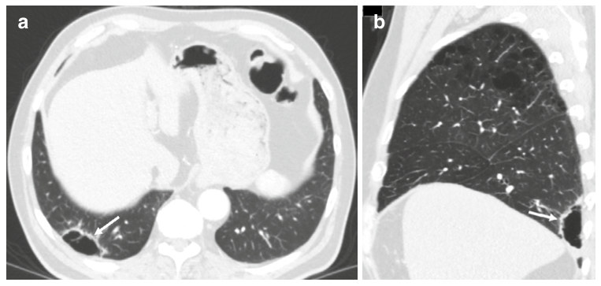
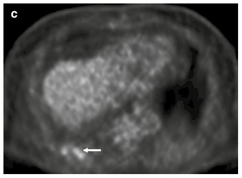
支气管炎或肺炎相关，或伴咯血或消瘦时，应及时行 CT 或支气管镜评估。在中央型阻塞性肺癌患者中，增强 CT 通常可将中心低密度肿块与阻塞后肺不张的均匀强化区分开来，并可评估气道受累情况。在阻塞性肺炎中，潴留的黏液积聚于远端气道并使其扩张，在实变区内表现为管状、分支状的低密度结构。在黏液腺癌患者中，恶性细胞产生的黏液样物质充填支气管及肺泡腔，形成可为结节样或融合样的致密影。
3.4.3 肺门/纵隔肿块
成人单侧肺门或中纵隔肿块最常见的原因为肺癌，肿块反映中央型肿瘤（图 3.2）和/或区域淋巴结增大。鳞癌和小细胞癌是最常表现为纵隔或肺门肿块的肺癌类型，但约 25% 的腺癌也可如此表现。虽不常见，但年轻患者出现中央型腔内肿块时应考虑唾液腺肿瘤，如黏液表皮样癌或类癌 [16]。当恶性淋巴结病变超出单个淋巴结包膜时，可形成更为融合的纵隔病变，可弥漫性浸润纵隔脂肪并侵犯纵隔结构，尤其是上腔静脉、中央气道、食管、肺动脉或肺静脉，或左心房。增强 CT 上中心坏死常见于鳞癌。偶尔，中央型肺癌侵犯膈神经，导致患侧膈肌麻痹升高，或累及喉返神经引起声音嘶哑。
囊性病变前壁可见摄取增高（箭头）。手术切除证实为腺癌
位于中央的肺癌可累及膈神经，引起患侧膈肌麻痹升高，或累及喉返神经，导致声音嘶哑。
3.4.4 胸壁和胸膜受累
周围型肺癌，尤其是发生于肺尖的腺癌和 Pancoast 瘤，可因局部胸壁侵犯而表现为胸壁肿块。周围型肺癌与胸膜表面及胸壁的关系在 CT 上显示最佳，但在特定情况下 MRI 也具有重要价值。提示但并非特异性的胸膜或胸壁侵犯征象包括：肿块与胸膜接触长度超过 3 cm、肿块与相邻胸膜面呈钝角、CT 上部分患者正常可见的胸膜外脂肪层消失、与肿块相关的胸膜增厚，以及动态呼气 CT 上肿块沿胸膜表面无移动 [17, 18]。胸壁侵犯的仅有特异性征象包括可见肿块穿过肋间隙累及肋间组织或皮下组织，或骨破坏。对于 Pancoast 瘤患者，锁骨下动脉或臂丛的局部侵犯在冠状位和矢状位重建 CT 图像上可清晰显示，但 MRI 在此评估中可能更有价值。在肺癌患者中，出现胸腔积液，尤其是 CT 上环绕肺周并累及纵隔胸膜反折的胸膜增厚及结节，应提示恶性胸膜病变，但也需考虑间皮瘤可能。
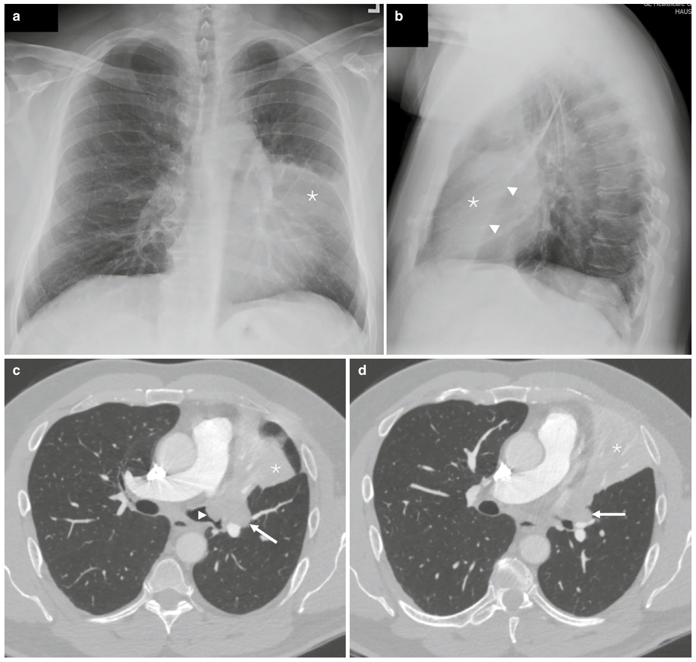
3.4.5 间质性肺阴影
中、下）区域出现，提示既往未怀疑的间质性肺疾病[19]。已有报道指出 CT 上存在 ILA 与肺癌相关[20]。众所周知，纤维化性间质性肺疾病患者，尤其是特发性肺纤维化患者，发生肺癌的风险更高，但病变可被广泛的实质阴影所遮蔽，且肿瘤难以与背景纤维化病变相鉴
肺癌患者在诊断时或治疗期间可出现间质性肺阴影。间质性肺异常（ILA）是指在 CT 上偶然发现的磨玻璃影或网格影、结构扭曲、牵拉性支气管扩张、蜂窝肺或非肺气肿性囊肿，且在上、中、下三个肺区中任一肺区的受累范围 >5%
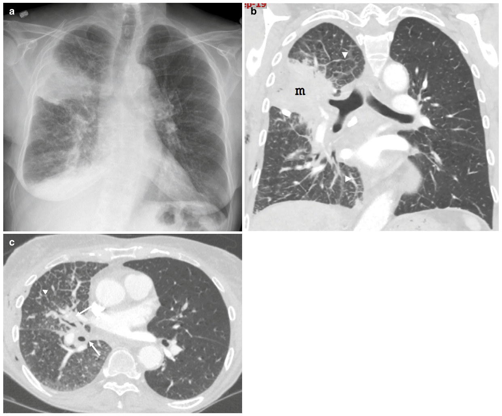
局灶性融合纤维化不易鉴别。少数局部进展期肺癌患者可表现为单侧线状间质影，反映肿瘤的淋巴管播散（癌性淋巴管炎）（图 3.3）。
3.4.6 胸外病变
如前所述，20%–30% 的肺癌患者在诊断时即已发生骨转移 [13,14]。X 线片对骨转移的检出敏感度低。目前 FDG PET-CT 已成为评估
确诊肺癌的患者，并已几乎取代放射性核素骨扫描用于转移性疾病的检测。
3.5 肺癌 TNM 分期（表 3.3）
明确肺癌患者病变范围（即分期）具有重要的预后和治疗意义。准确的疾病分期评估可为医护人员、患者及其家属提供关键的生存率估计，
| 类别 | 亚类 | 描述 |
|---|---|---|
| 肿瘤 | T1 T2 T3 T4 | • 肿瘤 ≤3 cm • 肿瘤 >3 cm 且 ≤5 cm • 主支气管受累 • 脏层胸膜侵犯 • 肺叶或全肺不张 • 肿瘤 >5 cm 且 ≤7 cm • 同肺叶内肿瘤结节 • 侵犯：— 壁层胸膜 — 胸壁 — 膈神经 — 心包 • 肿瘤 >7 cm • 同侧不同肺叶内肿瘤结节 • 侵犯：— 心脏 — 大血管 — 气管（含隆突） — 食管 — 喉返神经 — 椎体 — 膈肌 — 纵隔 |
| N（淋巴结） | N0 N1 N2 N3 | 无淋巴结转移 同侧肺内或肺门淋巴结转移 同侧纵隔或隆突下淋巴结转移 对侧肺门、纵隔或下颈/锁骨上淋巴结转移 |
| M（远处转移） | M0 M1 | 无远处转移 有远处转移 |
知情决策。除了指导治疗方案的选择外，分期还可为研究者提供关于治疗对不同患者群体影响的研究数据，从而更好地评估治疗疗效。肺癌的 TNM 分期基于原发肿瘤的大小及侵犯范围（T）、是否存在淋巴结受累（N）以及远处转移的证据（M）。依据该分期系统，肺癌被分为四期。
T2 包括累及主支气管以及伴全肺不张的肿瘤。T3 病变为直径 >5 cm，或侵犯壁层胸膜或心包、胸壁或膈神经，或同肺叶内存在多个结节（图 3.4）。T4 病变为 >7 cm，或侵犯不可切除的结构，或同侧不同肺叶内存在多个结节。肋骨破坏或胸壁外软组织肿块是常规 X 线片上提示胸壁侵犯的唯一特异性征象；邻近肺肿块的胸膜增厚为非特异性表现，不一定提示胸壁侵犯。CT 诊断胸壁侵犯可能较为困难；既往已描述过提示胸壁侵犯的征象 [17]。肿块向胸壁外延伸或肋骨破坏是 CT 诊断胸壁侵犯的特异性但不敏感的征象。肿瘤侵犯纵隔并累及心脏、大血管、气管、隆突、食管、膈肌或喉返神经（T4 肿瘤）则无法手术切除（图 3.5）。在常规 X 线片上，纵隔肿块、纵隔增宽或膈肌升高（由膈神经受累所致）提示存在侵犯。与胸壁侵犯类似，CT 显示肿瘤与纵隔胸膜相延续或纵隔胸膜增厚并不一定提示纵隔侵犯或不可切除。然而，纵隔内明显的肿块与肺部肿瘤相延续，并压迫纵隔血管或食管，或取代纵隔脂肪，则强烈提示纵隔侵犯。累及主支气管的肿瘤（T2 肿瘤）无论距隆突多远均可手术切除。由于 CT
3.5.1 原发肿瘤（T）状态
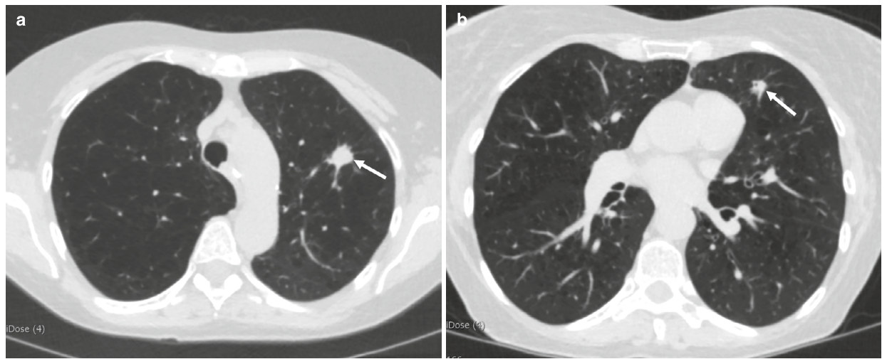
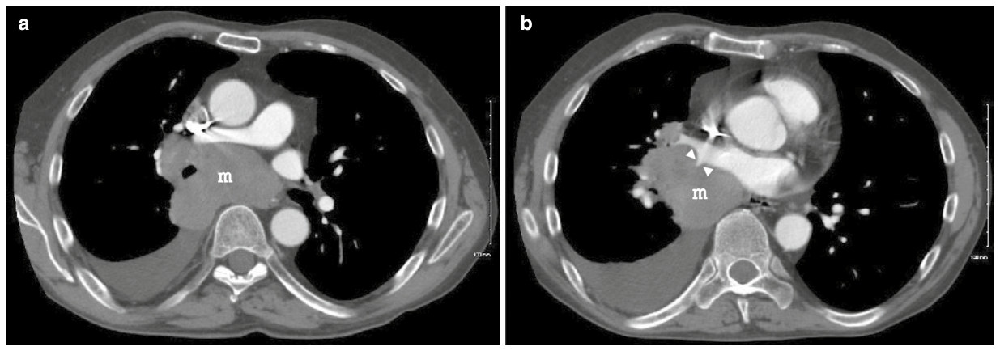
出现纵隔肿块、纵隔增宽或膈肌抬高（由膈神经受累所致）提示肿瘤侵犯。与胸壁侵犯相同，CT 显示肿瘤与纵隔胸膜相延续或纵隔胸膜增厚并不一定提示纵隔受侵或不可切除。然而，与肺癌相延续的显著纵隔肿块压迫纵隔血管或食管，或取代纵隔脂肪，则强烈提示纵隔侵犯。累及主支气管的肿瘤（T2 期肿瘤）无论距隆突多远均可切除。由于 CT
往往会低估支气管镜下所见的肿瘤黏膜或黏膜下侵犯范围，因此除 CT 显示明显的隆突或气管侵犯外，任何具有中央型病变的患者均应行支气管镜检查以确定肿瘤近端范围。恶性胸膜或心包增厚、结节影或积液属于 M1a 期病变，不可行根治性切除。肺癌患者出现胸腔积液可由多种原因引起，包括胸膜侵犯、阻塞性肺炎以及肿瘤所致的淋巴管或肺静脉回流受阻。尽管伴发胸腔积液的存在
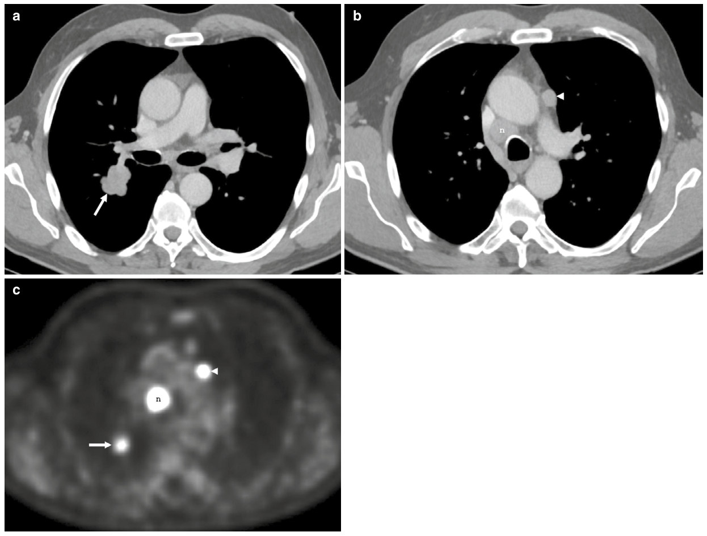
肺癌预后不良，仅胸腔积液中或胸膜活检发现肿瘤细胞的患者被视为不可切除。需行胸腔穿刺细胞学检查和/或胸膜活检以明确诊断胸膜恶性受累。CT 上胸膜增厚 >1 cm、呈分叶状胸膜增厚或累及纵隔胸膜高度提示胸膜受累 [22, 23]。
疗。对侧肺门/纵隔或锁骨上/颈部淋巴结（N3）病变不可切除（图 3.6）。CT 在判断肺癌患者淋巴结状态方面准确性相对有限。以短轴径 ≥1 cm 作为异常标准时，按患者统计其敏感度和特异性均约为 60–65%，若按单个淋巴结分区评估可能更低 [24, 25]。虽然 CT 不能足够准确地确定纵隔淋巴结是否受肿瘤累及，但可提供有价值的信息以指导侵入性分期操作，如支气管内超声引导下（EBUS）活检、纵隔镜检查、内镜超声（EUS）引导下活检以及经胸或开放活检。PET-CT 在肺癌淋巴结分期中具有更高的准确性（图 3.6）。
3.5.2 区域淋巴结（N）
N1 表示肿瘤累及肺内或肺门淋巴结。根据术前影像或淋巴结活检诊断为 N2（同侧纵隔）淋巴结病变的患者预后不良，通常给予新辅助治
3.5.3 转移性疾病（M）
纵隔镜及支气管内/内镜技术在肺癌淋巴结分期中与 CT 互为补充。大多数肺癌患者若 CT 上纵隔淋巴结 PET 阳性及/或肿大，且可经纵隔镜（即气管前、隆突前下区及右主支气管淋巴结）、EBUS（气管前、气管旁、隆突下、肺门及叶间淋巴结）或 EUS（隆突下、食管旁、下肺韧带）取材，应在术前进行淋巴结取样以完成分期。第九版肺癌 TNM 分期与第八版的不同之处在于：N2 纵隔淋巴结受累现细分为单分区纵隔淋巴结（N2a）和多分区纵隔淋巴结（N2b）病变，因为多分区纵隔淋巴结受累提示预后更差。值得庆幸的是，用于标定胸腔内淋巴结位置（编号 1–14）的淋巴结图谱保持不变 [21]。
每例确诊肺癌的患者均应仔细评估是否存在远处转移（M1）。明确存在转移的证据可避免不必要的开胸手术。肺癌患者胸外扩散的常见部位包括淋巴结、肝脏、肾上腺、骨和脑（图 3.7）。转移到对侧肺虽位于胸腔内，但也视为 M1 病变。上述部位的受累可能代表肿瘤自肺部的血源性播散。在最新发布的第九版 TNM 分期系统中，转移性疾病的命名进一步细分。无转移性疾病者记为 M0；恶性胸膜或心包病变或对侧肺转移记为 M1a；单个胸外转移灶记为 M1b；多发胸外转移（M1c 期病变）进一步分为单器官（M1c1）
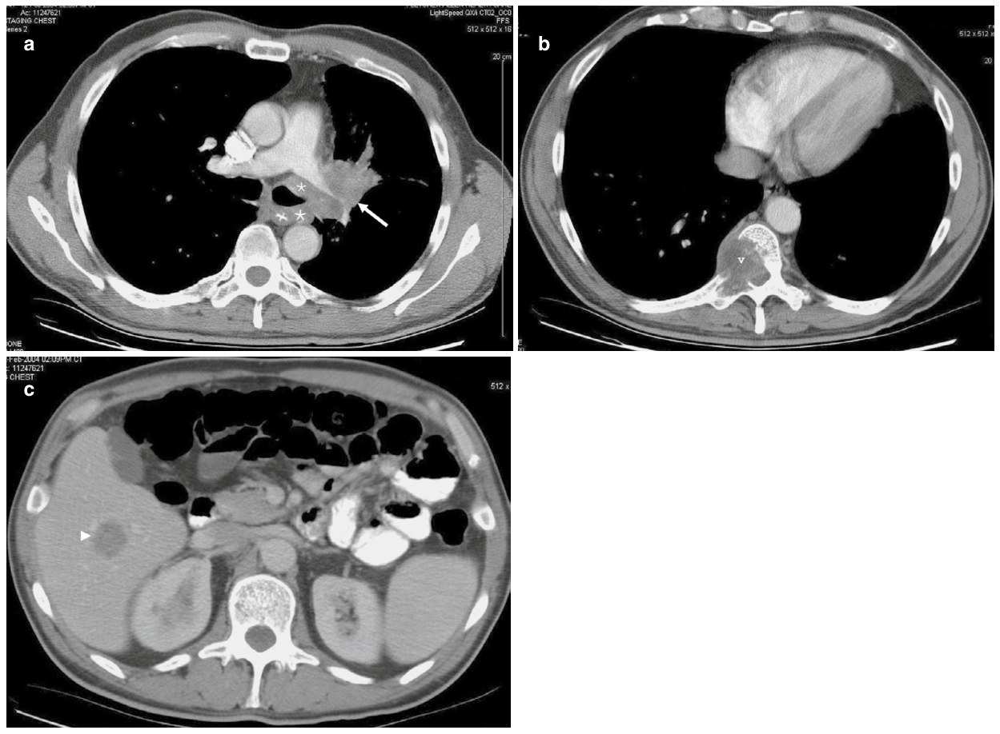
或多器官（M1c2）受累（图 3.7）[21]。
平扫与增强 CT 的比较。虽然 FDG-PET 对肾上腺转移的检出具有很高的敏感度（接近 100%），但腺瘤亦可呈 FDG 高摄取，导致假阳性结果。因此，在特定情况下，对孤立的 FDG 高摄取肾上腺病变，偶有需要通过组织活检进行最终定性。
3.6 肺癌分期（表 3.4）
肺癌，包括非小细胞癌和小细胞癌，均分为 0 至 Ⅳ 期，分期分组依据肿瘤、淋巴结侵犯及转移情况的解剖学（即 TNM）范围（表 3.4）[26,27]。根据定义，临床分期包括体格检查所见以及通过支气管内超声引导、内镜超声引导或纵隔镜淋巴结活检、影像引导活检或胸腔积液细胞学获得的影像学检查和活检结果。0 期反映无明显原发肿瘤的隐匿性恶性肿瘤（Tx）。Ⅰ 期肺癌包括表现为孤立性肺结节或小肿块（即最大径 ≤4 cm 的肿瘤，反映 T1 或 T2a 病变），且无淋巴结或转移证据者（图 3.1）。Ⅱ 期肺癌包括较大的原发肿瘤（T2b 或 T3 病变），或任何伴有 N1（同侧肺内或肺门）淋巴结侵犯的 T1 或 T2 病变。大多数 Ⅰ 或 Ⅱ 期肺癌患者可考虑行根治性手术切除，而非手术治疗的 Ⅰ 期肺癌则可考虑行根治性目的的立体定向体部放射治疗（SBRT）。Ⅲ 期肺癌包括一组异质性较大的患者，包括原发肿瘤非常大（>7 cm）或不可切除的侵袭性肿瘤，或与原发肿瘤同一肺叶内的独立肿瘤结节（定义为 T4 病变），或转移至同侧纵隔和/或隆突下淋巴结（N2 期），或对侧纵隔、肺门或下颈部、锁骨上淋巴结（N3 期）的患者（图 3.6）。这些患者通常被认为不可切除
实际上所有肺癌患者均应行增强头颅 MR 脑部成像以评估颅内转移，但 1A 期肺癌患者例外，特别是表现为反映非侵袭性癌的亚实性病变者。约 60–65% 的小细胞癌患者在确诊时已存在转移性疾病。由于小细胞癌患者在就诊时几乎均可能存在肉眼或镜下转移性疾病，这些患者通常不适合根治性手术切除。然而，对这些患者进行准确的胸外侵犯分期有助于判断预后，并可正确评估化疗反应。对小细胞癌进行胸外分期的另一个原因在于可针对局限性骨或软组织侵犯采用放疗或手术切除加以处理。约 10% 因肺癌而行 CT 检查的患者可发现肾上腺病变。然而，约 5% 的正常个体已知存在良性肾上腺皮质腺瘤。在部分患者中，肾上腺结节或肿块可能是唯一的胸外异常部位，因此准确诊断肾上腺病变对于准确分期和治疗至关重要。腺瘤通常可通过以下方法与恶性（原发性或转移性）肾上腺病变相鉴别
| 分期 | 肿瘤 | 淋巴结 | 转移 |
|---|---|---|---|
| 0 期 | TIS | N0 | M0 |
| Ⅰ 期 | T1a、T1b、T1c | N0 | M0 |
| Ⅱ 期 | T1a, b T2a T2b T3 | N1 N1 N0、N1 N0 | M0 M0 M0 M0 |
| Ⅲ 期 | T1、T2 T3 T4 T1–T4 | N2 N1、N2 N0、N1、N2 N3 | M0 M0 M0 M0 |
| 分期 | 任何 T | 任何 N | M1 |
TIS 原位癌；T1a 肿瘤结节 ≤1 cm；T1b 肿瘤结节 >1 cm 且 ≤2 cm；T1c 肿瘤结节 >2 cm 且 ≤3 cm
通常接受系统性铂类化疗，并在选择性病例中联合或不联合放疗给予免疫治疗，希望在治疗后实现降期，并未来考虑手术切除。Ⅳ 期肺癌反映存在胸内（M1a）或胸外（M1b 或 M1c）转移性疾病，尽管其预后最差，但仍常可通过放疗、化疗和免疫治疗的联合方案得到有效管理。
3.7 小结
放射科医师始终处于肺癌准确、及时诊断和分期的核心地位。胸部 CT 仍是显示胸部异常并指导适当诊断程序的核心手段。PET-CT 常规用于辅助肺癌分期，并在判断胸内淋巴结侵犯以及转移性疾病有无方面具有更高的准确性。诊断与分期的不断进步，以及筛查和治疗方案的改善，已使生存率得到提高、肺癌总死亡率有所下降。
1. American Cancer Society. Key statistics for lung cancer [cited 2024 Sep 25]. Available from: https://www.cancer.org/cancer/types/lung-cancer/about/key-statistics.html
2. National Cancer Institute Surveillance, Epidemiology and End Results Program. Cancer stat facts: lung and bronchus cancer [cited 2024 Sep 25]. Available from: https://seer.cancer.gov/statfacts/html/lungb.html
3. Malhotra J, Malvezzi M, Negri E, La Vecchia C, Boffetta P. Risk factors for lung cancer worldwide. Eur Respir J. 2016;48:889AG.
4. Nicholson AG, Tsao MS, Beasley MB, et al. The 2021 WHO classification of lung tumors: impact of advances since 2015. J Thorac Oncol. 2021;17(3):362–87.
5. Ganti AK, Klein AB, Cotarla I, Seal B, Chou E. Update of incidence, prevalence, survival and initial treatment in patients with non-small cell lung cancer in the US. JAMA Oncol. 2021;7(12):1824–32.
6. Travis WD, Brambilla E, Nicholson AG, et al. The 2015 World Health Organization classification of lung tumors. J Thorac Oncol. 2014;10:1243–60.
7. Travis WD. Pathology and diagnosis of neuroendocrine tumors: lung neuroendocrine. Thorac Surg Clin. 2014;24(3):257–66.
8. Andrini E, Marchese PV, De Biase DD, et al. Large cell neuroendocrine carcinoma of lung: current understanding and challenges. J Clin Med. 2022;11:1461.
9. Hyde L, Hyde C. Clinical manifestations of lung cancer. Chest. 1974;65:299–306.
10. Chute CG, Greenberg ER, Baron J, Korson R, Baker J, Yates J. Presenting conditions of 1539 population-based lung cancer patients by cell type and stage in New Hampshire and Vermont. Cancer. 1985;56:2107–11.
11. Song SW, Jun BC, Cho KJ, Lee S, Kin YJ, Park SH. CT evaluation of vocal cord paralysis due to thoracic diseases: a 10-year retrospective study. Yonsei Med J. 2011;52(5):831–7.
12. Toloza EM, Harpole L, McCrory DC. Noninvasive staging of non-small cell lung cancer: a review of the current evidence. Chest. 2003;123(1 Suppl):137S–46S.
13. Wang X, Wang Z, Pan J, et al. Patterns of extrathoracic metastases in different histologic types of lung cancer. Front Oncol. 2020;10:715.
14. Knapp BJ, Devarakonda S, Govindan R. Bone metastases in non-small cell lung cancer. J Thorac Dis. 2022;14(5):1696–712.
15. Mets OM, Schaefer CM, de Jong PA. Cyst-related primary lung malignancies: an important and relatively unknown imaging appearance of early lung cancer. Eur Respir Rev. 2018;27:180079.
16. Zhu F, Liu Z, Hou Y, et al. Primary salivary gland-type lung cancer. Clinicopathological analysis of 88 cases from China. J Thorac Oncol. 2013;8:1578–84.
17. Glazer HS, Duncan-Meyer J, Aronberg DJ, Moran JF, Levitt RG, Sagel SS. Pleural and chest wall invasion in bronchogenic carcinoma: CT evaluation. Radiology. 1985;157:191–4.
18. Murata K, Takahashi M, Mori M, et al. Chest wall and mediastinal invasion by lung cancer: evaluation with multisection expiratory dynamic CT. Radiology. 1994;191:251–5.
19. Hata A, Schiebler ML, Lynch DA, Hatabu H. Interstitial lung abnormalities: state of the art. Radiology. 2021;301:19–34.
20. Whitaker Brown S, Padilla M, Mhango G, et al. Interstitial lung abnormalities and lung cancer risk in the national lung screening trial. Chest. 2019;156(6):1195–203.
21. Detterbeck FC, Woodard GA, Bader AS, et al. The proposed 9th edition TNM classification of lung cancer. Chest. 2024;166(4):882–95. https://doi.org/10.1016/j.chest.2024.05.026.
22. Leung AN, Muller NL, Miller RR. CT in differential diagnosis of diffuse pleural disease. Am J Roentgenol. 1990;154(3):487–92.
23. Traill ZC, Davies RJO, Gleeson FV. Thoracic computed tomography in patients with suspected malignant pleural effusions. Clin Radiol. 2001;56(3):193–6.
24. McLoud TC, Bourgouin PM, Greenberg RW, et al. Bronchogenic carcinoma: analysis of staging in the mediastinum with CT by correlative lymph node mapping and sampling. Radiology. 1992;182:319–23.
25. Scott WJ, Gobar LS, Terry JD, Dewan NA, Sunderland JJ. Mediastinal lymph node staging of non-small cell lung cancer: a prospective comparison of computed tomography and positron emission tomography. J Thorac Cardiovasc Surg. 1996;111(3):642–8.
26. Archer JM, Truong MT, Shroff GS, Godoy MCB, Marom EM. Imaging of lung cancer screening. Semin Respir Crit Care Med. 2022;43:862–73.
27. Strange CD, Strange TA, Erasmus LT, et al. Imaging in Lung Cancer Staging. Clin Chest Med. 2024;45(2):295–305.
胸膜和胸壁疾病
胸膜和胸壁疾病
4.1 胸膜：什么是正常的？
正常胸膜由脏层胸膜和壁层胸膜两个表面构成，二者极薄，超出胸部 CT 的分辨能力。其间的间隙通常仅含极少量液体。紧邻胸膜下方为极薄的壁层胸膜外脂肪层，与胸膜一样，正常情况下在 CT 上难以显示。有时壁层胸膜外脂肪层可发生肥厚（常因慢性刺激），以致在 CT 上可见，但这本身并不代表有意义的异常。壁层胸膜外脂肪层外侧的组织层为胸内筋膜，在 CT 上无法与最内层的肋间肌区分；这两层合在一起通常表现为一条软组织密度线，即肋间条影。该条影在肋骨之间显示最清晰。肋间条影的肌肉层成分在脊柱附近通常缺如，因此该部位肋间线正常时不可见或几乎不可见 [1]。这些层次见图 4.1。CT 上若观察到胸膜线则为异常。可见胸膜线可由胸膜增厚或胸膜腔内液体略增多所致。胸膜增厚可表现为位于肋骨内侧并与之分开的细条软组织密度线，或位于肋间条影内侧并与之分开的细条。后方的肋下肌和前方的胸横肌为肌性结构，有时可被误认为增厚的胸膜，但这些肌肉通常双侧对称、特征性菲薄，且具有特征性的前方和后方位置。肺裂为脏层胸膜的凹入结构，划分肺叶，并允许呼吸时肺叶间的轻微移动与移位。除双侧主裂和右侧的次裂外，有时可见副裂，属于正常变异 [2]。最常见的副裂为左侧副水平裂，将舌叶与左肺上叶其余部分分隔开来。右肺上叶的奇静脉裂也较常见，可勾勒出奇静脉叶，其下缘可见奇静脉走行。下副裂有时见于下肺叶的尾侧部分。位于纵隔旁的肺下韧带并非肺裂，但确实包含脏层胸膜的反折，是肺与纵隔的附着部位。
D. M. Naeger (*) 放射科，达特茅斯医学院盖泽尔分校，美国 新罕布什尔州 汉诺威
放射科，达特茅斯医疗系统及达特茅斯希斯科克医疗中心与诊所，美国 新罕布什尔州 莱巴嫩 电子邮箱：d.naeger@outlook.com
胸腔积液略多于生理性胸液量时即存在胸腔积液。胸腔积液分为漏出性和渗出性。漏出性胸腔积液由跨胸膜的静水压与胶体渗透压失衡所致。简言之，胸液生成量超过吸收速率，导致胸腔内液体过多积聚。血管和膜的完整性得以保持，故漏出性积液蛋白含量低，CT 上通常呈水样密度。漏出
4.2 胸腔积液
胸腔积液是指胸腔内液体量超过生理性正常胸液量的情况。胸腔积液分为漏出性和渗出性两类。漏出性胸腔积液由跨胸膜的静水压与胶体渗透压失衡引起。简言之，胸液生成量超过吸收速率，导致过多胸腔积液积聚。血管和膜的完整性得以保持，故漏出性积液蛋白含量低，CT 上通常呈水样密度。漏出性
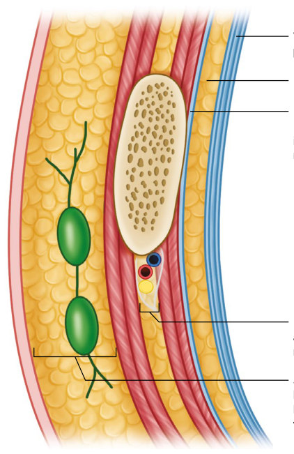
胸腔积液可与充血性心力衰竭、肝硬化、低白蛋白血症、肾功能衰竭、腹膜透析及其他改变流体静压与胶体渗透压的病变相关 [3]。由于漏出性积液通常由全身性异常引起，常为双侧。渗出性积液定义为蛋白含量较高，由胸膜血管通透性异常增加所致。关于送检胸腔积液实验室数值的判定标准已有发表，用以判断积液是否为渗出性 [4]。渗出性积液可继发于感染、肿瘤、自身免疫/结缔组织病、放射及其他影响膜通透性的病因 [3]。石棉暴露亦已知可引起渗出性积液。尽管蛋白含量较高，但需注意 CT 上积液的密度值并不能可靠地区分渗出性与漏出性积液 [5, 6]。乳糜胸定义为渗出性积液的一种，其液体由乳糜（如淋巴液）组成。胸导管于椎体前方穿过胸腔，将来自腹部的淋巴液向头侧输送至胸腔上部，并在此与左颈内静脉及头臂静脉汇合。该导管可因外伤或手术而破裂，导致乳糜在邻近胸膜腔内积聚。肿瘤亦可造成梗阻而产生相同结果。结核病虽罕见，但亦有报道可引起乳糜胸。尽管乳糜含有脂肪成分，但乳糜性积液的密度常与非乳糜性渗出性积液相似。
积液。在无相关提示病史的情况下，乳糜胸需通过送检液体分析方能确诊。血胸属于渗出性积液，更具体地说，是一种由血液构成的积液。血液可为唯一成分，于平扫 CT 上表现为高密度积液；或当血液与其他液体混合时，其积液密度可与单纯液体相近。含血积液相对偏高的密度在胸部 CT 上可被识别 [7]。血液进入胸膜腔常为医源性或创伤所致，但血管异常、肿瘤或胸膜子宫内膜异位症亦为已知病因。
4.2.1 胸腔积液的影像学表现
在立位正位胸片上，评估外侧肋膈角最易发现呈分层表现的胸腔积液。正常时肋膈角呈锐利的向下尖角并由含气肺组织填充；出现积液时该角变浅，即出现“钝化”。积液量越大，肋膈角钝化越明显，严重时肋膈角可完全消失（图 4.2a）。多数积液病例中肺缘会呈现模糊的边缘。积液量更大时，分层或模糊影可累及整个肺底 [1]。积液也可表现为肋骨与含气肺之间的软组织密度影。在侧位胸片上，积液将使后肋膈角变钝（图 4.2b）。侧位片对小量胸腔积液更为敏感。必须同时识别左右后肋膈角，以观察任一侧的变钝。胸部 X 线评估中一般不常规加摄卧位片，但有时会申请卧位片以判断积液是否可自由移动。位于下方的半胸内可自由移动的积液将沿侧胸壁下方呈分层分布（图 4.2c）。卧位片对小量胸腔积液较为敏感。在仰卧位 CT 图像上，呈分层表现的胸腔积液呈新月形，依赖于重力分布。大量积液将导致邻近肺组织出现不同程度的肺不张。小量胸腔积液与胸膜增厚在诊断上可能难以鉴别。床旁超声在急诊中的应用日益普遍，对检出胸腔积液及评估积液是否包裹分隔均较为敏感 [8]。
4.2.2 包裹性胸腔积液与感染
胸腔积液在胸膜腔内通常可自由移动；此种情况下液体随重力移动，或顺应胸壁与肺的曲度分布。
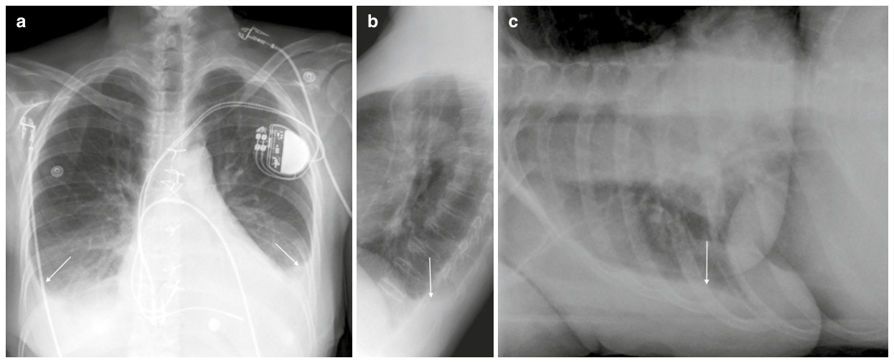
纤维条带可阻碍积液自由流动，形成包裹性积液腔。包裹通常呈透镜形，可位于胸膜的任何部位，包括叶间裂及非下垂部位。叶间裂内包裹的表现有时称为“假瘤”，因为积液可呈类圆形肿块样外观。出现包裹提示一定程度的炎症反应，因此观察到包裹提示其下方为渗出性积液。伴有胸膜增厚的胸腔积液（胸膜增厚详见下文），或伴有强化的胸膜增厚，提示为渗出性积液。然而，无胸膜增厚可见于渗出性和漏出性积液。内部分隔或无法融合的气泡提示为渗出性积液。积液的常见原因为感染。当感染位于肺内（即肺炎）时，积液可在相邻胸膜内积聚，称为肺炎旁积液。此类积液通常为渗出性，但不一定已感染。随着肺炎好转，此类积液可吸收。胸腔积液亦可藏匿感染。由感染病原体组成的渗出性积液称为脓胸。感染病原体可经肺、创伤、医源性因素或血行播散进入胸膜腔。单用抗生素治疗常不足以控制病情；因此，可能需要进行引流。
4.3 气胸
胸膜腔内的气体称为气胸。若胸膜腔内的气体并非由外伤或手术引起，则称为自发性气胸。教科书通常将自发性气胸的病因分为原发性和继发性两类：原发性气胸自发生于无基础肺部异常（或仅有轻微异常，如肺大疱）的情况；继发性自发性气胸则发生于存在基础肺部疾病的情况下。此类异常疾病种类繁多，包括 COPD、哮喘等导致阻塞性通气功能障碍的疾病，以及如纤维化性间质性肺疾病等降低肺顺应性的疾病。含气的局灶性实质异常，如囊性肺疾病中的囊肿、含空洞的结节和肿块（包括感染性栓子）以及肺脓肿等，破裂后可进入胸膜腔引起气胸。沿胸膜分布的子宫内膜异位组织也可导致气胸，称为月经性气胸，常与月经周期相关。气胸亦可由外伤引起，气体可经受损的肺、气道或胸壁进入胸膜腔。手术或其他医源性因素也可使气体进入胸膜腔引起气胸。尽管在这些情况下气胸的原因并不隐匿，但在此情形下通常仍需进行影像学检查以
在首次诊断创伤性气胸时，完整评估通常包括评估肺撕裂伤、肋骨骨折、血管损伤以及其他可能的相关征象。气胸可与胸腔积液同时存在，称为液气胸（尽管积液未必一定是“水样”漏出液）。有时可在伴有脏层胸膜或胸膜下增厚及纤维化包膜的肺叶旁发现气胸。这种所谓的“陷闭肺”由于纤维化而无法完全复张，气胸（或积液）的持续存在正是由于肺不能复张所致[9]。
（图 4.3c）。仰卧位 X 线片上的气胸还可因心外膜脂肪被气体勾勒而呈现心尖部凹凸不平的轮廓。在 CT 上，胸膜腔内气体一目了然。在许多情况下，CT 检查是为了明确 X 线片所发现气胸的病因。一旦气胸的病因明确，且患者情况稳定，X 线片通常是用于随访已知气胸大小的首选影像学检查。超声在急诊环境下作为一项快速且易获得的影像学检查应用日益增多；超声能够检出气胸，其征象详见其他文献[3]。准确估计气胸的大小，尤其是通过 X 线片进行估计，并非精确的方法；不同观察者之间在即使使用“轻度”、“中度”和“大量”等定性术语时也存在很大差异[10]。
4.3.1 气胸的影像学表现
高质量的立位 X 线片对检出气胸敏感。胸膜外的气体移向肺尖部非下垂区域，使胸膜与胸壁分离。其间的气体呈透亮影，深部含气的肺组织同样呈透亮影，从而形成可见的胸膜线。该线通常在肺尖外侧或沿肺外侧缘可见（图 4.3a）。胸膜线以外应无血管或肺实质纹理可见。胸膜线易与皮肤皱褶混淆。皮肤在探测器面板上受压折叠可形成界面；该界面并非两侧透亮度一致的线，而是高密度区与低密度区之间的分界（图 4.3b）。真性气胸应符合上叶的通常形态，也就是说胸膜线应可在肺尖上方或沿肺外侧向下追踪，直至脏层胸膜与壁层胸膜相接触。皮肤皱褶或其他伪影可延伸至肋骨轮廓之外，或可突然终止。在仰卧位 X 线片中，气体聚集于前方，不易显示，但气体可沿纵隔内侧或沿膈肌下方显示。在气胸情况下拍摄的仰卧位 X 线片也可出现“深沟征”，即气体较多地充填下方的肋膈角，
4.3.2 张力性生理改变
当气体在压力下进入胸膜腔，直至超过大气压力时，称为张力性气胸。张力性气胸会干扰正常的心肺功能，被视为临床急症。虽然影像医师被教导将纵隔移位作为诊断标准，但这并非真正张力的特异性征象。膈肌倒置可能是有帮助的征象，但最终，结合大量气胸背景下的循环衰竭临床表现来确诊张力性气胸[11]。张力性气胸需要迅速减压以防止心肺功能崩溃，因此当放射科医师发现可能为张力性气胸时，必须进行直接且迅速的沟通。
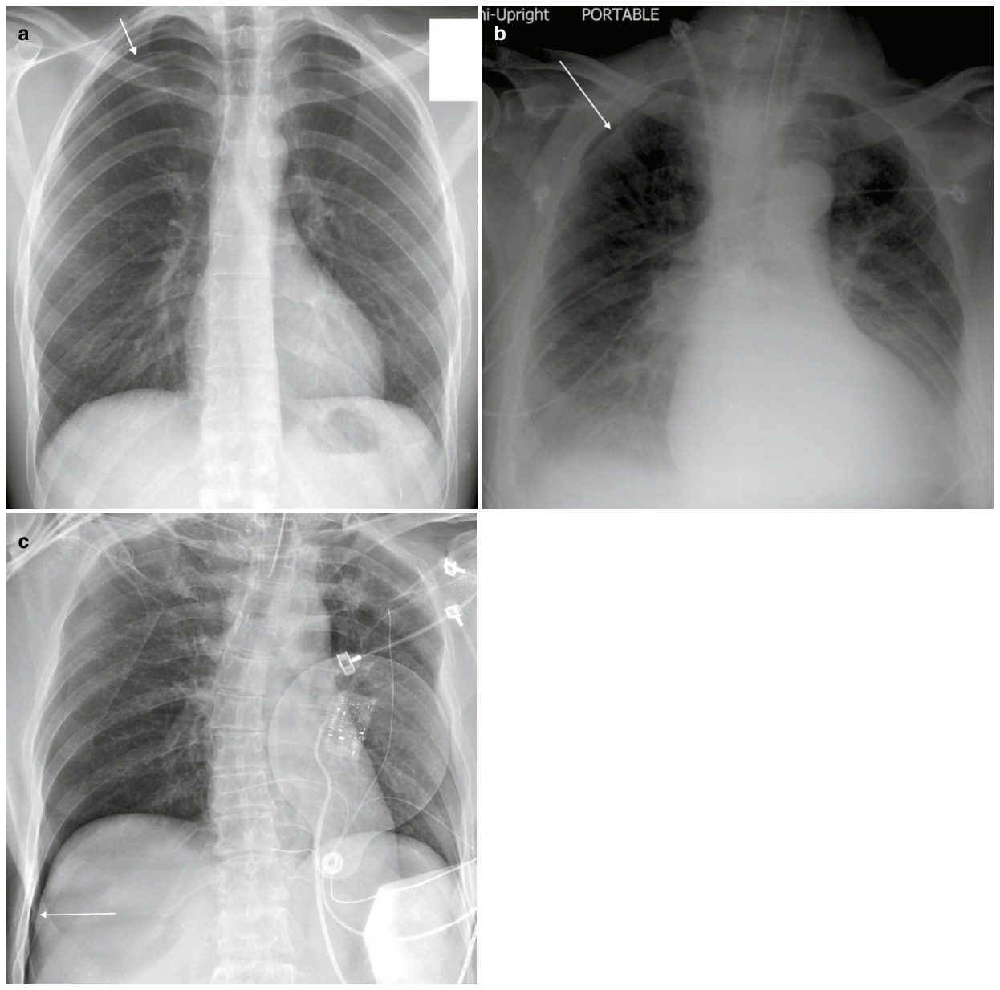
4.4 胸膜增厚
然而，可能会形成一部分不可逆的纤维化。这种类型的增厚称为"胸膜包壳"或"纤维胸"。只要存在胸膜纤维化，就可能出现一定程度的钙化。胸膜纤维化和钙化见于脓胸，尤其是结核性脓胸，以及既往血胸。有时胸膜包壳
胸膜在感染或炎症刺激下可出现明显增厚。在急性或亚急性反应消退后，增厚可以逆转。然而，若感染或炎症的程度足够严重或为慢性，则可形成不可逆的纤维化成分。此类增厚称为
内可形成液体，液体与胸膜增厚可在系列影像上保持慢性且无变化。若在无症状患者中无变化，伴有内部液体的慢性胸膜外壳可能不再代表活动性病变。在没有持续炎症和感染的情况下，胸膜增厚可以无症状，也可因邻近肺容积减少而产生症状。石棉接触如上所述是渗出性积液的潜在原因。吸入的石棉纤维经淋巴系统到达胸膜，引发免疫反应。该反应可导致胸膜增厚，表现为局灶性或弥漫性胸膜增厚，从几乎无法察觉到显著不等。石棉接触亦可导致胸膜斑块，即厚度在边缘处突然变化的局灶性增厚区（类似于平顶山或称方山）。斑块常部分或完全钙化；当呈双侧分布时，较为提示石棉接触 [12]。显著的胸膜增厚区可伴有邻近的局灶性肺塌陷，称为圆形肺不张。塌陷常呈圆形（名称已暗示）且紧邻增厚区。滑石粉胸膜固定术是一种治疗方法，将滑石粉引入胸膜腔以诱发炎症反应，使两层胸膜融合。该治疗方法用于某些顽固性胸腔积液和气胸 [13]。滑石粉本身及其诱发的炎症和纤维化反应均可导致胸膜增厚，并表现为高密度。在18F-FDG PET 显像中，炎症反应可导致长期 FDG 摄取增高，从而使评估其下方肿瘤变得困难。
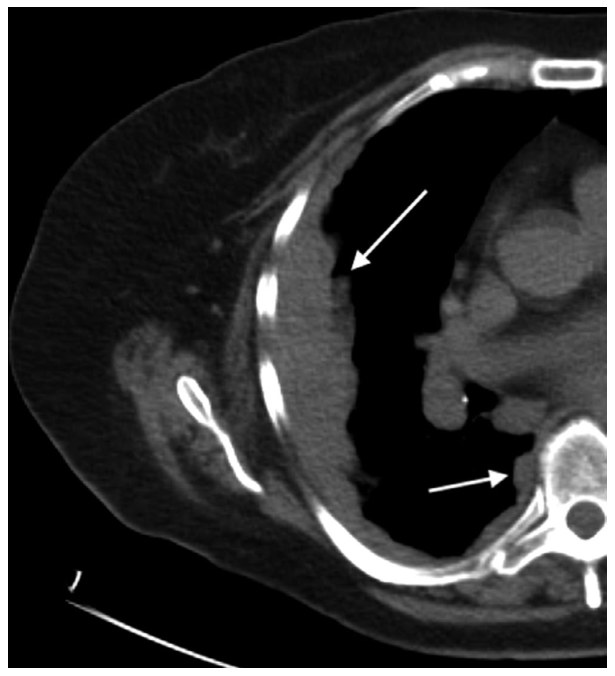
积液或血胸，但以软组织为主要表现。间皮瘤可分为多种组织学亚型，但所有类型预后均较差 [14]。胸膜孤立性纤维性肿瘤（SFT），亦称为局限性纤维瘤，是一种与间皮瘤明显不同的胸膜肿瘤；部分孤立性纤维性肿瘤为恶性，但大多数为良性。这些肿瘤通常呈均匀、边缘光滑的圆形或略呈分叶状，起源于胸膜。多起源于脏层胸膜，源自胸膜表面的间叶细胞。当有蒂时，可在系列影像上位置发生移动。SFT 通常在与肺交界处形成钝角，但随肿瘤增大夹角可变得更锐。该肿瘤经典的相关表现包括因胰岛素样生长因子 II 释放所致的低血糖及肥厚性肺性骨关节病。SFT 在就诊时常较大，且可起源于叶间裂。这些肿瘤的表现可多样；部分有囊性成分、钙化，部分可见供血动脉 [15]。其他原发于胸膜组织的肿瘤虽罕见但确有发生，包括原发性渗出性淋巴瘤，其表现较为非特异性，呈现为伴有积液的、无明显特征的胸膜增厚。
4.4.1 胸膜原发肿瘤
恶性胸膜间皮瘤是胸膜衬里的原发恶性肿瘤，常由石棉接触引起。如上所述，石棉接触本身可导致渗出性积液、胸膜增厚和胸膜斑块，但这些均不是石棉相关性间皮瘤形成的直接前驱病变（尽管它们均与石棉接触相关）。间皮瘤一旦形成，会沿胸膜扩散，就诊时可以是局灶性增厚的小病灶，也可以是累及整个一侧胸腔的环形数厘米厚软组织外壳（图 4.4）。间皮瘤为侵袭性、浸润性疾病；晚期可见胸壁结构、纵隔和肺的侵犯。间皮瘤可伴有
4.4.2 胸膜继发性肿瘤
由于胸膜具有丰富的血管和广泛的淋巴网络，胸膜常成为转移性沉积的部位。最常见的胸膜转移来源于肺癌——无论男性还是女性，肺癌都是致死率最高的恶性肿瘤。胸膜播散的机制包括肿瘤在胸膜表面的直接侵犯、血行播散以及经淋巴道播散。乳腺癌作为女性最常见的恶性肿瘤，也可转移至胸膜。转移灶通常表现为离散的胸膜结节或肿块，但也可呈局灶性或弥漫性增厚。胸膜外的淋巴瘤可播散至胸膜，此时胸膜受累更多表现为光滑增厚（与乳腺癌或肺癌转移常见的结节样改变不同）。侵袭性胸腺瘤可播散至胸膜。当转移来源于胸腺瘤时，这些转移被称为“种植转移”，提示该胸腺瘤确实存在一定程度的侵袭性（图 4.5）。在评估胸腺瘤患者的胸部 CT 时，
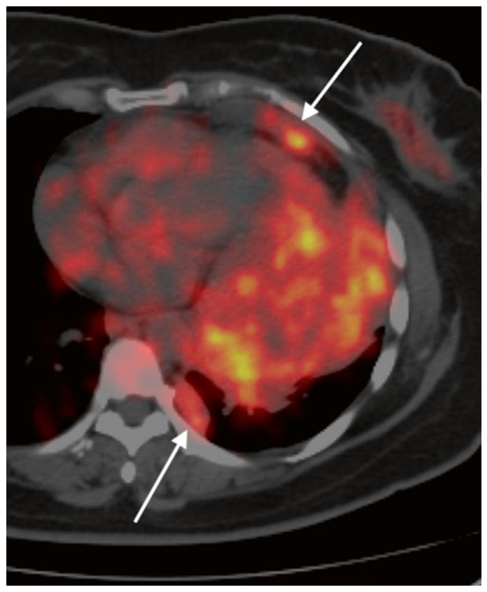
必须全面仔细地观察全部胸膜腔，包括胸膜最下方的反折部分；这些反折可向尾侧延伸至比含气肺最低缘更低的位置，因此小的沉积灶有时会被遗漏。胸腺癌同样会发生转移，但其特征更倾向于远处转移。
4.4.3 其他胸膜结节与肿块
位于胸膜腔内的脾组织称为胸腔脾种植症，由创伤同时导致膈肌与脾脏破裂、脾组织直接沉积于胸腔所致 [16]。这些沉积灶在影像学上往往在多年后随组织生长而显现为圆形胸膜结节。子宫内膜组织也可沉积于胸膜表面，形成一个或多个子宫内膜异位囊肿，其典型表现是患者在月经来潮后不久因出现气胸而就诊。胸膜子宫内膜异位症亦可导致血胸。在结节病中，胸部淋巴系统内可形成肉芽肿。虽然典型的淋巴结肿大及肺部阴影并非以胸膜病变为主，但结节也可沿胸膜形成。IgG4 相关性疾病是胸膜肿块样病变的一种罕见病因（但该病的病变可累及多器官，亦可侵犯纵隔及肺实质）。
4.4.4 胸膜增厚与胸膜肿瘤的影像学表现
在 X 线平片上，胸膜增厚仅在那些与 X 线束平行走行的胸膜表面（即肺与胸壁之间存在界面的区域）才能被观察到。肋骨与肺之间出现软组织密度影是其主要表现，与胸腔积液的征象相同。仅凭 X 线平片难以区分胸膜增厚与胸腔积液。在 CT 上，胸膜的显示本身即提示异常增厚。若增厚程度较轻，则可能难以与少量胸腔积液鉴别。一旦增厚较为明显，或合并明确的胸腔积液，即使不使用静脉对比剂，通常也能较为明确地诊断胸膜增厚。静脉使用对比剂可进一步鉴别胸膜增厚（可强化）与积液。由无细胞纤维化或钙化所致的胸膜增厚不会强化。
感染、炎症、早期淋巴瘤或某些类型的转移性疾病所引起的光滑增厚表现可彼此相似。临床背景、病程以及其他影像学表现有助于缩小光滑型胸膜增厚的鉴别诊断范围。结节样或肿块样胸膜增厚提示原发性或继发性胸膜肿瘤，或诸如胸腔脾种植症 [16]、子宫内膜异位症等罕见情形。胸膜转移性病变通常有强化。有时，当胸膜仅见单发结节或肿块时，难以判断病变位于胸膜还是肺实质。与肺实质结节相比，胸膜结节通常与相邻胸膜呈钝角，与肺实质分界相对清晰，并可推移肺实质内的血管。值得注意的是，早期的恶性胸腔积液可完全不伴胸膜增厚，因此对于已知或怀疑恶性肿瘤的患者出现新发或原因不明的胸腔积液时，需保持高度警惕。
4.5 胸壁疾病
4.5.1 胸壁的影像学检查
X 线平片对胸壁的评价价值有限，但钙化性病变易于识别并可部分定性。大多数胸壁病变的影像学评估依靠 CT 或 MRI。由于 CT 可及性好且检查便捷，通常作为评估胸壁各层结构及病变定性的首选检查。必要时可行增强 MRI 以更好地显示肿瘤侵犯情况及组织界面。MRI 还能在骨受累征象尚不明显时即检出肿瘤的骨质侵犯。对于可触及的病变，US 可作为首选影像学方法；在已确诊或疑似肿瘤的患者中，可考虑行 18F-FDG PET/CT 检查。胸壁病变的鉴别诊断可按病变的主要成分分类：脂肪密度、液体密度、钙化或软组织密度 [17]。
4.5.2 含脂肪成分的病变
脂肪瘤是最常见的含脂肪成分的胸壁病变，属完全良性。表现为小至大的脂肪密度病灶，常可见薄层纤维包膜。良性脂肪瘤内可见极细的钙化或厚度不超过 2 mm 的细小分隔。其他含脂肪成分的病变较为少见，其影像学表现相互重叠，包括梭形细胞脂肪瘤、棕色脂肪瘤及脂肪肉瘤。含脂肪成分并伴有软组织成分的病变常需进一步检查并行活检以除外恶性肿瘤。
4.5.3 软组织密度病变
背部弹力纤维瘤（elastofibroma dorsi）是非常常见的良性肿瘤，无需进一步检查，通常可以明确诊断。病灶呈较小的肿块，其内常夹杂脂肪，位于肩胛骨下角尖端深面、背阔肌深方，可对称或不对称分布。病灶内脂肪呈层状排列，称为"千层面征"，其 CT 质地与肌肉最为接近。该病变被认为是由于机械性摩擦所致，通常无症状，无需治疗 [18]。
淋巴瘤常累及胸壁淋巴结。胸壁肉瘤虽有可能发生，但相当罕见。韧带样纤维瘤（又称侵袭性纤维瘤病）也可发生于胸壁，表现为边界不清、体积较大的浸润性肿块。血管瘤为软组织肿块，其内可见静脉石及肉眼可见的脂肪。胸壁多发肿瘤的分布模式有时具有提示价值，例如神经纤维瘤病可见多发皮肤结节。
4.5.4 液体密度病变
胸壁良性液体密度病变包括血肿，可发生于外伤或抗凝治疗情况下。在特定的临床背景下，可发生局限性脓肿，并可能伴发邻近部位的骨髓炎。淋巴管畸形由扩张的淋巴管组成，多表现为囊性结构，呈浸润性生长，病变成分可跨越多个胸腔分区。淋巴管畸形多见于儿童及青年。术后血清肿亦表现为液体密度。
4.5.5 钙化或骨化性病变
肋骨与椎骨构成胸壁的骨性支架，与身体其他部位相同，可发生良、恶性骨肿瘤。常见的骨性病变包括纤维性骨营养不良、骨软骨瘤、动脉瘤样骨囊肿、软骨肉瘤、骨肉瘤及骨髓瘤。这些骨肿瘤的详细描述可见于其他专著 [20]。虽然并非起源于骨骼本身，但肿瘤样钙质沉着症可导致胸壁软组织钙化；外伤后肌肉组织也可出现骨化性肌炎。皮肌炎、多发性肌炎及硬皮病亦可出现软组织钙化。
4.6 同时累及胸壁与胸膜的病变
上述部分病变可同时累及胸膜腔与邻近胸壁。经典情况下，起始于胸膜的感染可向胸壁侵犯，称为"自溃性脓胸"，通常由结核、放线菌或诺卡菌感染所致 [1]。
肺癌是一种非常常见的恶性肿瘤，可起源于肺并向外侵袭至胸壁。值得注意的是，在最新版的肺癌分期系统中 [21]，自肺实质向外侵袭至胸壁被分期为 T3，可考虑手术切除；而肿瘤累及胸膜腔（但未延伸至胸壁）则为更高的 M1 期，因为无法通过手术控制。少见情况下，起源于胸壁的肿瘤（如上所述）可穿过肋间肌层和筋膜直接侵犯胸膜腔和肺实质。
4.7 小结
胸膜是一层重要的正常结构，但可受多种疾病状态影响。我们已综述了胸膜腔异常积聚液体、感染、乳糜液、血液和气体的情况。我们已综述提示渗出性 vs. 漏出性积液的影像学特征。我们讨论了胸膜增厚，其通常继发于感染或炎症。详细阐述了石棉暴露的众多潜在后遗症。最后，我们以描述几种原发性胸膜肿瘤（包括恶性胸膜间皮瘤和孤立性纤维瘤）以及胸膜转移瘤的各种表现形式作为胸膜部分的结尾。我们以综述胸壁病变作为本章的结尾，重点强调组织密度是帮助我们组织鉴别诊断的因素。鉴于脂肪瘤和背部弹力纤维瘤的常见性，我们对其进行了深入综述。
1. Webb WR, Higgins CB. Thoracic imaging: pulmonary and cardiovascular radiology. 3rd ed. Philadelphia: Wolters Kluwer; 2017.
2. Ariyurek OM, Gulsun M, Demirkazik FB. Accessory fissures of the lung: evaluation by high-resolution computed tomography. Eur Radiol. 2001;11(12):2449–53. https://doi.org/10.1007/s003300100852.
3. Yamada A, Taiji R, Nishimoto Y, et al. Pictorial review of pleural disease: multimodality imaging and differential diagnosis. Radiographics. 2024;44(4):e230079. https://doi.org/10.1148/rg.230079.
4. Romero-Candeira S, Hernandez L, Romero-Brufao S, Orts D, Fernandez C, Martin C. Is it meaningful to use biochemical parameters to discriminate between transudative and exudative pleural effusions? Chest. 2002;122(5):1524–9. https://doi.org/10.1378/chest.122.5.1524.
5. Yalcin-Safak K, Umarusman-Tanju N, Ayyildiz M, Yucel N, Baysal T. Efficacy of computed tomography (CT) attenuation values and CT findings in the differentiation of pleural effusion. Pol J Radiol. 2017;82:100–5. https://doi.org/10.12659/PJR.898963.
6. Abramowitz Y, Simanovsky N, Goldstein MS, Hiller N. Pleural effusion: characterization with CT attenuation values and CT appearance. AJR Am J Roentgenol. 2009;192(3):618–23. https://doi.org/10.2214/AJR.08.1286.
7. Romero M, Bachler P. Pseudo-hemothorax at computed tomography due to residual contrast media. Clin Imaging. 2014;38(3):333–5. https://doi.org/10.1016/j.clinimag.2014.01.004.
8. Shkolnik B, Judson MA, Austin A, et al. Diagnostic accuracy of thoracic ultrasonography to differentiate transudative from exudative pleural effusion. Chest. 2020;158(2):692–7. https://doi.org/10.1016/j.chest.2020.02.051.
9. Huggins JT, Sahn SA, Heidecker J, Ravenel JG, Doelken P. Characteristics of trapped lung: pleural fluid analysis, manometry, and air-contrast chest CT. Chest. 2007;131(1):206–13. https://doi.org/10.1378/chest.06-0430.
10. Engdahl O, Toft T, Boe J. Chest radiograph--a poor method for determining the size of a pneumothorax. Chest. 1993;103(1):26–9. https://doi.org/10.1378/chest.103.1.26.
11. Roberts DJ, Leigh-Smith S, Faris PD, et al. Clinical presentation of patients with tension pneumothorax: a systematic review. Ann Surg. 2015;261(6):1068–78. https://doi.org/10.1097/ SLA.0000000000001073.
12. Gevenois PA, de Maertelaer V, Madani A, Winant C, Sergent G, De Vuyst P. Asbestosis, pleural plaques and diffuse pleural thickening: three distinct benign responses to asbestos exposure. Eur Respir J. 1998;11(5):1021–7. https://doi.org/10.1183/09031936.98.11051
13. Mierzejewski M, Korczynski P, Krenke R, Janssen JP. Chemical pleurodesis - a review of mechanisms involved in pleural space obliteration. Respir Res. 2019;20(1):247. https://doi.org/10.1186/s12931-019-1204-x.
14. Beasley MB, Galateau-Salle F, Dacic S. Pleural mesothelioma classification update. Virchows Arch. 2021;478(1):59–72. https://doi.org/10.1007/s00428-021-03031-7.
15. Zhang J, Liu J, Zhang Z, Tian B. Solitary fibrous tumors of the chest: an analysis of fifty patients. Front Oncol. 2021;11:697156. https://doi.org/10.3389/fonc.2021.697156.
16. Singh P, Munn NJ, Patel HK. Thoracic splenosis. N Engl J Med. 1995;333(13):882. https://doi.org/10.1056/ NEJM199509283331318.
17. Mansour J, Raptis D, Bhalla S, et al. Diagnostic and imaging approaches to chest wall lesions. Radiographics. 2022;42(2):359–78. https://doi.org/10.1148/rg.210095.
18. Tsikkinis C, Balamoti S, Grigoropoulos P, et al. Elastofibroma dorsi. J BUON. 2014;19(2):573–6.
19. Koontz NA, Wiens AL, Agarwal A, Hingtgen CM, Emerson RE, Mosier KM. Schwannomatosis: the overlooked neurofibromatosis? AJR Am J Roentgenol. 2013;200(6):W646–53. https://doi.org/10.2214/AJR.12.8577.
20. Spicer PJ, Beaman F, Blomquist GA, Montgomery J, Maxwell ME. Musculoskeletal imaging: a core review. Core review series. 2nd ed. Philadelphia: Wolters Kluwer; 2021.
21. Asamura H, Nishimura KK, Giroux DJ, et al. IASLC lung cancer staging project: the new database to inform revisions in the ninth edition of the TNM classification of lung cancer. J Thorac Oncol. 2023;18(5):564–75. https://doi.org/10.1016/j.jtho.2023.01.088.
系统性疾病的肺部表现
系统性疾病的肺部表现
Cornelia Schaefer-Prokop 和 Esther Pompe
5.2 肺结节病 [1–6] 5.1 引言
系统性疾病的诊断涉及对其多器官系统特征性临床表现的分析。临床特征通常与血清学异常、影像学表现相结合，在某些情况下还需结合组织病理学。系统性疾病的影像学表现在不同疾病中差异显著。胸腔内多个不同的解剖间隔（如肺、胸膜、心包、淋巴结、血管和心脏）均可能受累。影像学在各种系统性疾病中的作用因具体疾病而异。以结节病为例，计算机断层扫描（CT）在适当的临床背景下可以确立诊断。另一方面，结缔组织病通常主要依靠临床和血清学发现诊断，CT 的作用是确定肺部受累的类型和程度。发现 NSIP 模式可触发对潜在系统性疾病的基础诊断性检查（
C. Schaefer-Prokop (*) 荷兰阿默斯福特 Meander 医疗中心放射科
E. Pompe 荷兰乌得勒支 UMC Utrecht 放射科
结节病是一种病因不明的炎症性、多系统性疾病，临床表现广泛。该病几乎可累及任何器官，最常累及肺和淋巴系统，也可累及眼、皮肤、心脏、腹部器官或神经系统。其组织学特征为非干酪样上皮样细胞肉芽肿。目前认为，针对某些环境抗原的免疫应答失调导致了持续的肉芽肿性炎症并无法清除致病抗原。触发抗原因种族、地理环境和个体遗传背景而异。发病率和死亡率与肺部表现密切相关，>90% 的患者存在肺部受累。肺结节病的 CT 表现差异很大，已知可模拟许多其他弥漫性浸润性肺疾病，反之，几种疾病也可表现为类似典型结节病。
5.2.1 诊断
该病可发生于任何年龄，但主要累及 20~40 岁人群，65 岁以上者罕见。预后大多良好，常在 2 年内自行缓解，病死率介于 1%~5%。
| 高度可能 | 评价 | 指标 | |
|---|---|---|---|
| 病史 | Löfgren 综合征 | Tr AV Sp w | 治疗反应良好的心肌病或无危险因素的自发性/可诱发室性心动过速 |
| 影像 | – 双侧肺门淋巴结肿大（CXR、CT 及 PET） – 沿淋巴管周围分布的结节（CT） | – – – – | 上叶或弥漫性浸润影（CXR、CT 及 PET） 支气管周围增厚（CT） 两处或以上胸腔外淋巴结肿大（CT、MRI 及 PET） 心脏炎症活动性增高（MRI、PET 及镓显像） |
| 其他检查 | 伴维生素 D 代谢异常的高钙血症或高钙尿症 | 血管紧张素转换酶浓度升高；BAL：淋巴细胞增多或 CD4:CD8 比值升高；碱性磷酸酶 > 正常上限 3 倍 | 心脏：伴有危险因素的左心室射血分数降低（超声及 MRI）；年轻或中年中新发的三度房室传导阻滞 |
AV 房室；AVNB 房室结传导阻滞；BAL 支气管肺泡灌洗；CD 分化群；CM 心肌病；CNS 中枢神经系统；CT 计算机断层扫描；CXR 胸部 X 线；LVEF 左心室射血分数；MRI 磁共振成像；PET 正电子发射断层扫描；VT 室性心动过速
美国胸科学会（ATS）于 2020 年发布了结节病诊断与检测的官方临床指南。该指南列出了诊断结节病“高度可能”与“可能”的临床及影像学特征（表 5.1，修改自 ATS 文档，重点关注肺与心脏）。对于临床高度怀疑的患者，不推荐通过支气管内超声引导（EBUS）经支气管活检获取组织学淋巴结标本。对于双侧肺门淋巴结肿大且无临床症状的患者，是否获取组织学标本由临床医师决定。
可呈蛋壳样或“糖霜”样钙化。高达 20–30% 的患者进展为不可逆性肺纤维化（IV 期），其特征包括结构扭曲、牵拉性支气管扩张、蜂窝影及上叶容积减少。肺门周围融合块影常提示纤维化区域。气道异常包括淋巴结肿大所致压迫、牵拉性支气管扩张及肉芽肿导致的支气管壁增厚，可累及大、小气道。小叶性空气潴留常见于呼气相 CT，由小气道受累所致。一项 Delphi 共识确定了七种 CT 表型，用于区分非纤维化型与可能为纤维化型亚型（表 5.2），但这些分类仍有待进一步研究验证。虽然结节病可呈现特征性 HRCT 表现而支持明确诊断，但其影像学亦可表现不典型，尤其在晚期纤维化阶段，难以与其他纤维化性疾病鉴别（表 5.3 和表 5.4）。
5.2.2 影像学
结节病的 CT 肺部表现包括边界清晰的小结节，呈特征性的“沿淋巴管周围分布”，常位于胸膜下、大裂隙、小叶间隔及血管附近。这些结节可分布于双肺，以上、中肺野为多，也可聚集于肺门周围及支气管血管束周围，而肺野外周相对稀疏。肉芽肿融合可形成较大结节（1–4 cm，“星系征”）或不规则模糊影（最大可达 10 cm，肺泡型结节病）（见
5.2.3 临床病程、预后与治疗
由于病程难以预测且治疗策略不确定，结节病的治疗颇具挑战。治疗决策基于器官衰竭风险及对患者生活质量的影响。许多病例可自行缓解，无需系统治疗。肉芽肿性炎症
淋巴结肿大常见于隆突下、右气管旁、主肺动脉窗及对称性肺门分布。晚期阶段淋巴结可出现钙化
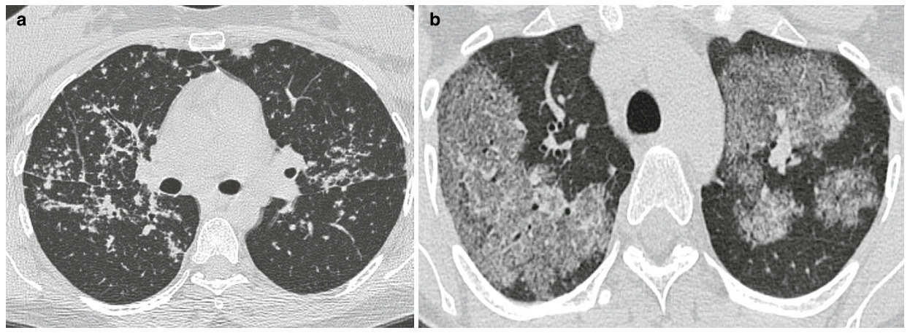
| 非纤维化亚型 | 可能为纤维化亚型 |
|---|---|
| 多发支气管血管周围、叶裂周围或胸膜下微结节 | 以支气管为中心的网格影伴或不伴致密实质混浊影，无空洞 |
| 多发较大的支气管血管周围结节 | 以支气管为中心的网格影及伴空洞的致密实质混浊影 |
| 散在分布的大结节 | 以支气管为中心的大肿块（PMF 样表现） |
| 以实变为主要或唯一异常表现 |
| 肺结节病在 HRCT 上的典型表现 | |
|---|---|
| 淋巴结肿大 | 肺门、纵隔、双侧对称、边界清晰 |
| 结节 | 微结节（2~4 mm），边界清晰，较大的融合性结节 |
| 淋巴管周围分布 | 胸膜下、小叶间隔、支气管血管周围 |
| 纤维化 | 网状密度影、结构扭曲、支气管扩张、肺容积减少 |
| 分布 | 以上叶及肺门周围区域为主 |
| 胸部高分辨率 CT 上肺结节病的非典型表现 | |
| 淋巴结肿大 | 单侧、孤立性，位于非典型纵隔部位 |
| 肺实变 | 融合性肿块、融合性肺泡影（肺泡型结节病） |
| 线状影 | 小叶间隔增厚 |
| 纤维囊性改变 | 囊泡、肺大疱、蜂窝肺，以上肺分布为主 |
| 气道受累 | 支气管壁增厚，呼气相空气潴留 |
| 胸膜病变 | 胸腔积液、气胸、胸膜斑 |
被认为是结节病发生纤维化的原因；“闷烧型结节病”指尽管无急性症状，仍存在持续性炎症并可能导致进一步纤维化。FDG-PET 有助于评估症状持续且无血清学炎症证据患者的肉芽肿活性，并可预测肺部病情恶化及监测治疗反应。通过饮食抑制
心肌 FDG 摄取有助于检出心脏结节病活动性。少数伴肺纤维化的结节病患者可表现为普通型间质性肺炎（UIP）组织学改变及进行性纤维化性间质性肺疾病（ILD）。抗纤维化治疗可能使 UIP 患者获益，但对于已接受充分抗肉芽肿治疗的结节病患者是否同样获益尚不明确。
| 鉴别诊断 | 表现重叠 | 提示结节病 |
|---|---|---|
| 淋巴管癌病 | • 小叶间隔不规则“串珠样”增厚 | • 上肺野为主• 无胸腔积液• 较少出现中心性支气管袖套征 |
| 矽肺/尘肺 | • 胸膜假斑块• 淋巴结蛋壳样钙化• 肺门周围纤维性肿块 | • 假斑块内无钙化• 假斑块由融合性结节构成• 肺门周围纤维性肿块自肺门结构直接延伸并向后移位（上肺野容积减少） |
| 纤维化性 HP 与 UIP/IPF | • 蜂窝肺• 牵拉性支气管扩张• 肺结构扭曲• 在闭塞性细支气管炎存在时，小叶范围内含空气潴留区与纤维化并存 | • UIP 模式主要分布于上肺野或肺门周围• 小叶间隔增厚• 淋巴结钙化• 纤维化及牵拉性支气管扩张倾向于自肺门结构以离心方式向背外侧蔓延 |
| 淋巴组织增生性疾病 | • 淋巴结肿大 | • 通常但并非一定对称• 存在典型实质影像学表现（注意：可能需要活检） |
| 慢性铍病 | • 结节型模式 | • 明显肺门淋巴结肿大• 无铍接触史• 其他器官受累 |
| 结核病 | • 结节型模式（通常为随机分布而非沿淋巴管分布的结节；不过结节病偶尔也可表现为随机分布） | • 蛋壳样或散在钙化，与结核病的粗糙钙化不同• 对称性钙化（结核病常为不对称）• 粟粒型结核病患者伴急性感染的临床症状 |
| 常见变异型免疫缺陷病（CVID） | • 结节呈淋巴管周围分布• 结节边界不清，以中下肺野为主 | • 不同的临床病史（CVID 表现为反复细菌感染）• 不同的组织学特征 |
| 不良反应 | 良好 | |
|---|---|---|
| 人口学特征 | 发病年龄 >40 岁，黑种人，女性 | |
| 肺部受累 | 无淋巴结肿大的实质改变和/或纤维化征象（Scadding III 和 IV 期）；严重呼吸困难和肺功能损害 | 伴或不伴实质改变的淋巴结肿大，无纤维化征象（Scadding I 和 II 期）；无症状 |
| BAL | 就诊时中性粒细胞升高 | 淋巴细胞增多但中性粒细胞或嗜酸性粒细胞不增多，CD4:CD8 比值升高 |
| 肺外受累 | 心脏、肝脏、脾脏、肾脏、中枢神经系统 | 急性炎症表现（Löfgren 综合征、结节性红斑、双侧淋巴结肿大） |
| 治疗指征 | 疾病进展和器官衰竭风险 | 无风险 |
BAL 支气管肺泡灌洗，CD 分化簇，CNS 中枢神经系统
并发症包括曲菌球和肺动脉高压。常见于 IV 期结节病的真菌球可引起危及生命的大咯血，需紧急处理。肺动脉高压见于晚期纤维化，也可由纵隔纤维化、淋巴结肿大或结节病性血管病引起。已提出一种综合临床-影像学分期方法，结合肺功能、纤维化范围及
肺动脉与主动脉直径比来预测预后。良好与不良预后因素见表 5.5。
肺部结节病要点
- 识别结节病的非典型影像表现至关重要，因其可与其他肺部疾病相似。某些影像特征，如不伴淋巴结肿大且伴有纤维化征象的孤立性实
质异常，提示预后更差并影响治疗决策。
与特发性间质性肺炎相似，并采用同一分类系统进行分类。已知 CTD 患者很少行肺活检，因此常采用高分辨率 CT 评估主要的损伤类型。该影像表现有助于指导治疗及判断预后，因为某些类型更常见于特定 CTD，但同一患者中也可存在多种类型。
5.3 结缔组织病 [7]
结缔组织病（CTD）主要依据临床症状及体格检查作出诊断，辅以特异性自身抗体的检出（表 5.6）。影像学在评估肺部受累方面具有重要作用，但由于各 CTD 表现相互重叠，对原发病诊断的价值有限。诊断通常需要多学科团队协作，包括呼吸科医师、风湿病学家、免疫学家、放射科医师，必要时还需病理科医师共同参与。肺部异常可早于其他临床症状出现，有时提前超过 5 年，即使临床标准尚未满足，影像学也可提示 CTD。CTD 可累及胸腔多个部位，包括肺、胸膜、心包、淋巴管、血管及心脏，且常多部位同时受累。呼吸系统受累常见，并导致显著的发病率与死亡率。CTD 的肺部表现常
5.3.1 类风湿关节炎（RA）[8–11]
RA 是最常见的结缔组织疾病，以侵蚀性、炎症性关节病为特征，主要累及远端关节。关节外表现包括皮下结节、皮肤溃疡、心包炎、脾大以及各种肺部病变。抗环瓜氨酸肽（CCP）抗体对 RA 具有特异性，且常与疾病严重程度相关。多达 80% 的 RA 患者在高分辨率胸部 CT 上可显示异常，且常无症状。肺部受累可累及多个间室，包括气道改变（支气管壁增厚、管腔扩张）、肺实质
| CTD | 血清学标志物 | 临床特征 | HRCT 表现 |
|---|---|---|---|
| RA | 抗 CCP 抗体、RF | 侵蚀性、对称性炎性关节病，皮下结节，皮肤溃疡。肺：活动后呼吸困难、干咳、双肺底吸气相湿啰音 | UIP、NSIP 表现；闭塞性及滤泡性细支气管炎等气道病变；类风湿结节；胸膜病变 |
| SSc | ACA、抗 Scl70、抗 RNA 聚合酶 III | 皮肤增厚、毛细血管扩张、指尖溃疡、胃肠疾病、心肌疾病。肺：活动后呼吸困难、干咳、乏力、“尼龙拉链样”湿啰音 | NSIP 征象；伴直边征和/或“四角征”的 UIP 征象；肺动脉高压 |
| IIM | CK 水平升高，MSA/MAA 阳性 | 肌无力、系统性受累及特异性皮肤表现。肺：(a) 进行性加重的呼吸困难和呼吸衰竭；(b) 隐匿起病的呼吸困难 | 呼吸肌受累所致的肺通气不足及呼吸衰竭；吸入性肺炎；NSIP 或 OP |
| SLE | ANA、抗 dsDNA 抗体；抗 Sm；狼疮抗凝物；Ro/SSA 抗体；低补体血症 | 风湿性、皮肤及肾脏异常。肺部：ALP 出血时表现为急性呼吸困难或呼吸衰竭；间质性肺炎时表现为呼吸困难及咳嗽 | 胸膜炎、胸腔积液、肺部感染；呈 NSIP 表现的慢性间质性肺疾病，少见 ALP、DAH |
| pSS | ANA、抗 Ro60kD；抗 Ro52kD；抗 La | 口干、眼干，局灶性淋巴细胞性涎腺炎。肺部：无症状，或有症状时表现为咳嗽和呼吸困难 | NSIP、LIP 伴弥漫性间质性或细支气管周淋巴浆细胞浸润；OP |
| MCTD | 抗 U1 RNP、抗 Ro52 抗体 | 常无症状。可见吞咽困难和雷诺现象、双手弥漫性水肿 | NSIP；UIP；OP/DAD |
ACA 抗着丝点抗体，IIM 特发性炎性肌病（包括多发性肌炎、皮肌炎、抗合成酶综合征），ANA 抗核抗体，MCTD 混合性结缔组织病，MAA 肌炎相关抗体（包括抗 Ro52kD、抗 Pm/Scl 100 和 75kD、抗 Ku、抗 RNP）；MSA 肌炎特异性抗体（包括抗合成酶抗体、抗 Mi2、抗 SAE、抗 MDA5），pSS 原发性干燥综合征，RA 类风湿关节炎，RF 类风湿因子，SLE 系统性红斑狼疮
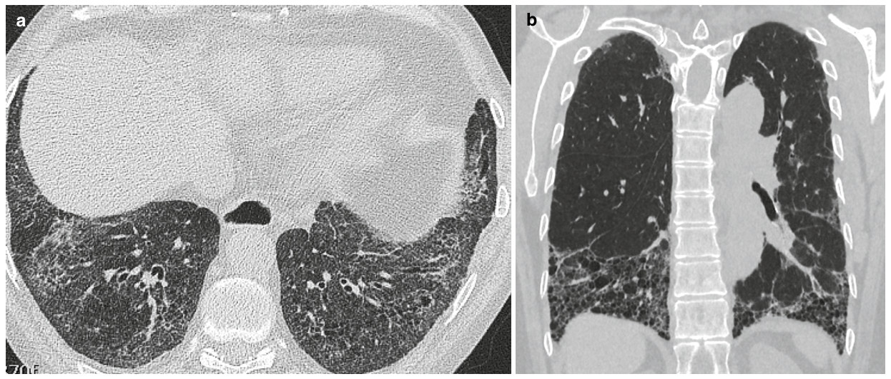
改变（网格影、磨玻璃影、蜂窝影）以及胸膜增厚/胸腔积液。气道病变通常是最早出现的肺部表现。支气管扩张、空气潴留和闭塞性细支气管炎常见，其中空气潴留在 CT 上表现为马赛克征。滤泡性细支气管炎是类风湿肺病中另一种可识别的小气道病变，表现为小叶中心结节和磨玻璃影。尽管 RA 在女性中更为多见，但肺纤维化（UIP 或 NSIP）在男性中更常见，其中 UIP 是最常见的表现类型。RA 相关间质性肺炎的 CT 表现可与特发性形式相似，但结节、动脉增粗或胸膜异常等线索有助于鉴别 RA。RA 中的 UIP 通常表现为胸膜下、双下肺分布，"前上叶"、"显著蜂窝影"和"直边"征提示 CTD 相关 UIP（图 5.2 中示一例）。RA-ILD 进展的危险因素包括病变范围与 UIP 表现、吸烟史、高龄和男性。抗纤维化治疗可能使部分进展性 RA-UIP 患者获益（INBUILD 试验）。RA 患者可出现可能发生空洞的大结节，继而可能引起气胸，须与恶性肿瘤相鉴别。胸膜增厚和胸腔积液常见，慢性增厚可导致肺陷闭。肺部问题可由 RA 本身或其治疗引起，例如免疫调节药物会增加感染和药物毒性的风险。一线治疗药物甲氨蝶呤与罕见的过敏性肺炎相关。生物制剂，特别是抗 TNFα 抗体，
显著增加结核病及其他感染的风险。RA 的并发症包括肺动脉高压（PH）、淋巴瘤和肺癌。
类风湿关节炎（RA）要点
- RA 的肺部表现，尤其是气道病变和间质纤维化（UIP、NSIP）较为常见且常无症状，其中 UIP 最为严重，是决定预后的主要因素。
5.3.2 系统性硬化症（SSc）[12–15]
系统性硬化症以成纤维细胞功能障碍和细胞外基质过度沉积为特征，导致微血管损伤及皮肤与器官的进行性纤维化。肺部受累在硬皮病患者中很常见。SSc 的 ACR-EULAR 分类标准包括肺动脉高压（PH）和间质性肺病（ILD），以及皮肤增厚、指尖病变、毛细血管扩张、甲襞毛细血管异常、雷诺现象和硬皮病相关抗体，如抗着丝点抗体（ACA）和抗 Scl-70 抗体。超过 80% 的尸检病例可见肺部异常，其中非特异性间质性肺炎（NSIP）为主要类型（>90%），且常可见 PH，尤其在局限型硬皮病（CREST 综合征）中。与胃食管反流相关的食管扩张见于 80% 的病例，并增加 ILD 的风险。CT 表现与 NSIP 组织学一致，细胞型 NSIP 表现为磨玻璃影，纤维化型 NSIP 则表现为不规则网格影和牵拉性支气管扩张（图 5.2）。胸膜下回避和有限的蜂窝肺是关键征象。
进展至"终末期肺病"以磨玻璃影被蜂窝影取代为标志。SSc 的特异性 CT 表现包括"直边征"，即纤维化区与未受累肺组织之间界限清晰（在 SSc 中比在类风湿关节炎[RA]中更常见），以及"四角落征"，提示中上叶前外侧区和下叶后上区出现肺实质改变。SSc 相关肺纤维化的预后通常优于特发性肺纤维化，纤维化改变有时可多年保持稳定。SSc 中的肺动脉高压（PAH）可导致肺动脉扩张，但肺动脉正常大小并不能排除该诊断。心包增厚或心包积液也是 PAH 的预测因素。CREST 患者可能因肺毛细血管瘤病（PCH）在无肺纤维化的情况下发生 PAH。硬皮病还增加肺癌风险，尤其是在伴有纤维化的患者中，恶性肿瘤风险为 1.8 至 6.5。
系统性硬化症（SSc）要点
- 系统性硬化症常累及肺部，以 NSIP 为主要类型。与特发性肺纤维化相比，SSc 相关肺纤维化通常预后较好，但肺动脉高压是一严重并发症。
5.3.3 系统性红斑狼疮（SLE）[16, 17]
SLE 可累及多个器官，包括关节、皮肤、肾脏、浆膜、血管及中枢神经系统，临床表现谱广泛，可出现风湿、皮肤、呼吸及肾脏相关症状。主要累及年轻女性。血清学标志物包括抗核抗体（ANA）、抗 dsDNA 抗体、低补体血症及抗 Ro/抗 SS-A 抗体。胸膜炎是最常见的胸膜肺表现，见于 40–60% 的病例，有时伴胸腔积液。纤维化性间质性肺疾病在 SLE 中较其他结缔组织病少见（1–15%）。肺部感染是最常见的肺部并发症，急性肺出血和急性狼疮性肺炎（ALP）也较为重要。ALP 可伴活动性狼疮性肾炎，特征为肺实变，可类似严重感染或 ARDS。其他肺部并发症包括膈肌功能障碍、肺动脉高压及血栓栓塞，膈肌功能障碍由肌病引起，导致
肺容积减小及伴盘状肺不张的“肺缩小”。
系统性红斑狼疮（SLE）要点
- 系统性红斑狼疮（SLE）常累及多器官，其中胸膜炎是最常见的胸肺表现，亦可出现急性狼疮性肺炎及肺出血等严重并发症。
5.3.4 多发性肌炎/皮肌炎（PM/DM）与抗合成酶综合征（ASSD）[18–20]
多发性肌炎和皮肌炎以近端肌无力、全身多器官受累及皮肤表现为特征，归类为特发性炎性肌病（IIMs），其中也包括抗合成酶综合征（ASSD）。诊断标准包括对称性肌无力、肌酶升高（如肌酸激酶（CK））以及肌炎和皮肤受累的征象。PM/DM 中的间质性肺病（ILD）与抗 Jo-1 抗体（抗组氨酰-tRNA 合成酶抗体）阳性密切相关。约 50–70% 的抗 Jo-1 抗体阳性患者合并 ILD，而抗体阴性者 ILD 发生率仅约 10%。在抗 Jo-1 抗体阳性患者中，ILD 可早于肌炎出现。临床病程差异显著，可从亚临床到快速进展。常见病理类型为非特异性间质性肺炎（NSIP）和机化性肺炎（OP），常合并存在。CT 表现为下肺斑片状磨玻璃影和实变影，并可见反映 NSIP 和 OP 的牵引性支气管扩张（图 5.3）。实变影常随治疗好转，而纤维化多持续存在。OP 可独立出现，且在 IIMs 中分布更广泛。还可发生弥漫性肺泡损伤，急性起病表现为对称性实变影。PM/DM 患者恶性肿瘤风险增加，尤其是乳腺、肺、卵巢和胃癌，约 20% 在 1 年内确诊。
多发性肌炎/皮肌炎（PM/DM）/抗合成酶综合征（ASSD）要点
- PM/DM 与 ASSD 具有共同的临床特征，用特发性炎性肌病（IIMs）这一术语概括更为恰当。最常见的肺部表现包括 NSIP 和 OP，或两者并存。血清学标志物抗 Jo-1 抗体（抗组氨酰-tRNA 合成酶抗体）是 ASSD 的标志性抗体。
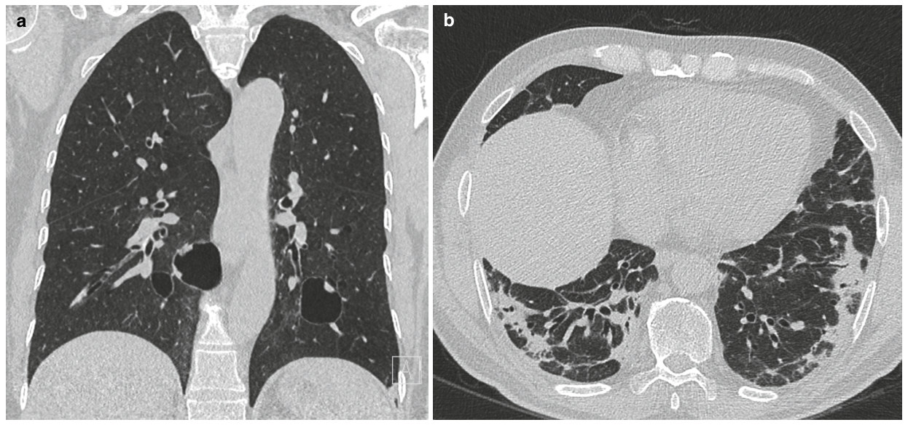
5.3.5 干燥综合征（SS）[21–23]
干燥综合征（SS），又称“干燥综合征”，是一种以侵犯外分泌腺体为特征的慢性自身免疫性疾病，可引起口干和眼干。根据是否合并其他结缔组织病（如 RA、SLE 和 SSc），SS 可分为原发性和继发性。诊断依据五项指标的加权评分，包括唾液腺活检、抗 Ro/SSA 抗体以及眼和唾液腺功能检测。根据 ACR-EULAR 2016 标准，评分 ≥4 分即可确诊。SS 的肺部受累分为气道异常、间质纤维化、肺动脉高压和淋巴细胞性间质性肺炎（LIP）。支气管壁增厚、支气管扩张和空气潴留等气道相关改变较为常见。NSIP（28–60%）是最常见的实质型肺疾病类型，其次是 LIP（最高达 20%），后者由淋巴细胞浸润引起，表现为磨玻璃影和囊肿。LIP 还可出现沿淋巴管分布或小叶中心结节，但囊肿的存在有助于与淋巴瘤鉴别。LIP 增加罹患 MALT 淋巴瘤的风险，如出现较大结节、实变或纵隔淋巴结肿大时应怀疑。与其他囊性肺疾病不同，LIP 相关囊肿数量较少，主要分布于支气管血管周围区域，以下肺分布为主（图 5.3）。
干燥综合征（SS）要点
- 干燥综合征（SS）是一种累及外分泌腺体的慢性自身免疫性疾病，常合并肺部并发症，如气道异常和间质性肺疾病（主要为 NSIP 和 LIP）。LIP 增加发生 MALT 淋巴瘤的风险，早期检出至关重要。
并发症，如气道异常和间质性肺疾病（主要为 NSIP 和 LIP）。LIP 增加发生 MALT 淋巴瘤的风险，因此早期发现至关重要。
5.3.6 混合性结缔组织病 [24, 25]
混合性结缔组织病（MCTD）是一种重叠综合征，其特征为同时存在或随病情演变出现的系统性红斑狼疮（SLE）、系统性硬化症（SSc）和多发性肌炎/皮肌炎（PM/DM）的表现。MCTD 的关键标志是存在抗可提取性核抗原（RNP）抗体。肺部受累常见，超过 60% 的患者可出现，但多数无明显症状。肺部异常类似于 SLE、SSc 和 PM/DM 中所见的改变，胸膜增厚、胸腔积液和磨玻璃影较常见。最常见的 CT 征象为 NSIP，而蜂窝肺和边界不清的结节相对少见。MCTD 的并发症包括肺动脉高压和食管动力异常，后者可导致反复误吸。抗 Ro52 抗体的存在与更严重的肺纤维化相关，类似于 SSc 相关间质性肺病的表现。虽然 MCTD 的肺部进展通常较为缓慢，但相关伴随疾病可随时间显著影响呼吸系统。
混合性结缔组织病（MCTD）要点
项目推动了新版（2022 年）ACR/EULAR 关于 GPA、MPA 和 EGPA 的分类标准。这些标准现强调 ANCA 特异性，从基于表型的方法转向基于血清学的方法。分类需达到加权阈值评分（GPA 5 分，MPA 5 分，EGPA 6 分）。肺部受累最常见于小血管炎（SVV），后者包括 ANCA 相关血管炎（AAV），如显微镜下多血管炎、肉芽肿性多血管炎（GPA）和嗜酸性肉芽肿性多血管炎（EGPA）。免疫复合物型小血管炎，如 Goodpasture 病，也会累及肺部。肺血管炎的症状和体征包括弥漫性肺泡出血（DAH）、肺结节和肺-肾综合征。继发性血管炎可继发于结缔组织病（如 RA、SLE 和系统性硬化症）以及结节病。随着药物诱导免疫复合物性血管炎等原因不断被发现，原发与继发性血管炎之间的界限正变得越来越模糊。DAH 是一种临床综合征，其特征为咯血、弥漫性浸润影和血细胞比容下降，可见于原发和继发性小血管炎，如 GPA、MPA、EGPA 及 Goodpasture 病。DAH 须与其他原因引起的肺出血相鉴别，包括凝血障碍、药物诱导性出血以及 ARDS 相关出血。
- MCTD 表现为 SLE、SSc 和 PM/DM 的重叠特征，常合并肺部异常，如磨玻璃密度影和 NSIP，并发症包括肺动脉高压和食管动力异常。
5.3.7 具有自身免疫特征的间质性肺炎（IPAF）[26, 27]
间质性肺疾病（ILD）患者中，那些表现出部分但并非全部结缔组织病（CTD）特征者，正日益受到关注。此前曾被称为未分化结缔组织病（UCTD）或以肺为主的结缔组织病，现已被接受的术语为具有自身免疫特征的间质性肺炎（IPAF）。该分类适用于 CT 或活检证实存在间质性肺炎、且已排除已知 ILD 病因，但尚不符合明确 CTD 诊断标准的患者。ERS/ATS 工作组提出了 IPAF 的诊断标准。患者必须在以下三个领域中具备其中两个领域的特征：（1）临床领域，表现为关节炎、雷诺现象或机械工手等肺外征象；（2）血清学领域，存在特异性自身抗体；（3）形态学领域，CT 或组织病理学特征提示 CTD。影像学表现包括 NSIP、机化性肺炎以及多部位受累，例如不明原因的胸腔或心包积液、小气道疾病或肺血管病变。
5.4.1 ANCA 相关性肉芽肿性多血管炎（GPA，既往称韦格纳病）
具有自身免疫特征的间质性肺炎要点
GPA 是最常见的 ANCA 相关性血管炎（AAV），主要累及鼻窦、肾脏和肺部，临床表现为三联征：上气道病变（鼻窦炎、中耳炎、声门下狭窄）、下呼吸道症状（咯血、胸痛、呼吸困难）和肾小球肾炎（血尿、氮质血症）。患者初期可仅表现为局限性症状，但随病程进展可累及任何器官。主要死因是肾功能衰竭。高达 80% 的患者 ANCA 阳性，多为 PR3-ANCA。组织学上，GPA 表现为小至中等血管的坏死性肉芽肿性血管炎。常见肺部表现包括大小不等的多发结节或肿块，可伴或不伴 CT 晕征，常位于胸膜下区。病灶可发生空洞，最大可达 10 cm，但通常较小。还可出现周围楔形实变、弥漫性磨玻璃影及纤维化改变。空洞性结节可继发感染，反晕征提示机化性肺炎。约 70% 的病例出现气管和支气管增厚，常累及声门下气管，并可因气道狭窄而导致肺不张。
特征（IPAF）
- IPAF 是指一类具有提示结缔组织病（CTD）的临床、影像学或血清学标志，但不符合特定 CTD 完整诊断标准的患者群体。最常见的影像学类型为 NSIP。诊断基于多领域综合评估方法，以便在未来为该患者群体的临床病程提供一致且有意义的数据。
5.4 肺血管炎/弥漫性肺泡出血[28–31]
血管炎是一种系统性炎症过程，可损伤血管并导致缺血性或出血性改变。2012 年 Chapel Hill 分类按受累血管大小对血管炎进行分类：大血管（主动脉及其分支）、中血管（主要内脏动脉）和小血管（毛细血管、小静脉、小动脉）。最近的血管炎诊断与分类标准（DCVAS）
GPA 的特征为结节和肺实质混浊影迅速进展。鉴别诊断包括肿瘤、感染及其他肉芽肿性或气道疾病，如淀粉样变和复发性多软骨炎。
GPA（既往称韦格纳病）要点
- GPA（既往称韦格纳病）是一种 ANCA 相关性血管炎，累及鼻窦、肾脏和肺部，常表现为结节、空洞形成及气道受累。
5.4.2 嗜酸性肉芽肿性多血管炎（EGPA；既往称 Churg Strauss）
EGPA 是一种小血管炎，主要累及哮喘患者，以明显的血清嗜酸性粒细胞增多为特征。它与 GPA 及嗜酸性肺炎具有相似的临床、影像学和组织病理学表现。可累及多个器官，包括心脏（47%）、皮肤（40%）、骨骼肌肉系统（50%）和外周神经（75%）。肾脏受累和肺出血相对少见。约 30% 的病例 ANCA 阳性，主要为 MPO-ANCA 或 c-ANCA，疾病活动期阳性率更高。若 ANCA 阴性且存在可及的病变，建议进行活检。组织学上表现为小血管炎、嗜酸性粒细胞浸润及肉芽肿。EGPA 通常经历三个阶段——哮喘期、嗜酸性粒细胞期和血管炎期，哮喘期通常早于血管炎期 8–10 年。70% 的病例出现肺部表现，表现为短暂性、多灶性实变或磨玻璃影，位于胸膜下时常类似嗜酸性肺炎。三分之一病例出现胸腔积液，与心肌病或胸膜炎相关，气道异常包括管壁增厚、管腔扩张及小叶中心结节。鉴别诊断包括嗜酸性肺炎、机化性肺炎及气道疾病如 MPA、SLE 和感染性细支气管炎。
嗜酸性肉芽肿性多血管炎（EGPA）要点
- EGPA 主要累及哮喘患者，表现为嗜酸性粒细胞增多和多系统受累，包括肺、心脏、皮肤和外周神经。常见肺部表现包括一过性实变、磨玻璃影及气道异常，其中哮喘在整个病程中为必备症状。
5.4.3 显微镜下多血管炎（MPA）
显微镜下多血管炎（MPA）是一种系统性坏死性小血管炎，无肉芽肿性炎症，常导致肺-肾综合征。约 90% 的病例可出现急进性肾小球肾炎，30%–50% 伴有肺部受累。超过 75% 的患者 ANCA 阳性，以 MPO-ANCA 为主（35%–65%）。MPA 的定义为肾小球肾炎合并弥漫性肺泡出血（DAH）。影像表现为斑片状、双侧或弥漫的气腔影，根据肺泡出血量的不同可呈实变或磨玻璃影。DAH 通常在肺门周围更为显著，肺尖和肋膈角相对不受累。实变或结节周围的晕征提示出血，吸收期可出现小叶间隔线（铺路石征）。MPA 较 GPA 更常见纤维化性间质性肺病，伴蜂窝肺和支气管扩张。
显微镜下多血管炎（MPA）要点
- MPA 是一种系统性小血管炎，常表现为急进性肾小球肾炎和弥漫性肺泡出血。肺部受累包括斑片状气腔影，部分病例可出现纤维化性间质性肺病，大多数患者 MPO-ANCA 阳性。
5.4.4 抗肾小球基底膜（抗 GBM）病
抗 GBM 病是一种免疫复合物型小血管炎（SVV），其特征为针对肾小球基底膜的自身抗体，导致坏死性肾小球肾炎和急性肾衰竭，通常通过肾活检确诊。40%–60% 的病例发生弥漫性肺泡出血（DAH），而单纯肺部受累少见。“Goodpasture 综合征”指肾小球肾炎合并肺出血，不论病因；“Goodpasture 病”则特指 DAH、肾小球肾炎和抗 GBM 抗体阳性。血清学检查显示 30% 的病例 c-ANCA 或 p-ANCA 阳性，超过 90% 抗 GBM 抗体阳性。年轻男性多见，老年女性也可发病。肺部受累常与肺损伤有关，如吸烟或药物使用。影像表现为 DAH 所致的弥漫或斑片状磨玻璃影或实变，通常在数日内吸收。反复发作可导致纤维化、牵拉性支气管扩张和蜂窝肺。
抗 GBM 病要点
- 抗 GBM 病导致坏死性肾小球肾炎和弥漫性肺泡出血，肺部受累常与既往肺损伤相关，反复发作可引起纤维化。
血管炎要点
- 肺部表现主要由小血管炎引起，如 GPA、EGPA 和 MPA。其标志性特征是与血清学标志物 ANCA 相关。影像表现大多缺乏特异性。所有类型均可出现弥漫性出血，其中以 MPA 最为多见。GPA 的特征为（空洞性结节）和气管支气管管壁增厚。
5.5 总结与要点
- 系统性疾病的肺部表现具有广泛的影像学表现谱。
- 结节病中，典型的 HRCT 表现（沿淋巴管分布的结节模式和/或对称性淋巴结增大）具有诊断价值；而结缔组织病的 CT 表现仅是多学科诊断工作中的一部分，诊断主要依据血清学标志物。同样，血管炎的诊断也主要基于血清学结果。
- 尽管如此，CT 对于评估肺部病变的范围和监测病情仍十分重要。这一点尤其关键，因为在许多疾病中，患者的预后取决于肺部受累情况。
结节病
结缔组织病
类风湿关节炎
系统性硬化症
混合性结缔组织病
红斑狼疮
具有自身免疫特征的间质性肺炎 皮肌炎/多发性肌炎
血管炎
干燥综合征
1. Criado E, Sanchez M, Ramirez J, et al. Pulmonary sarcoidosis: typical and atypical manifestations at high resolution CT with pathologic correlation. Radiographics. 2010;30:1567–86.
2. Spagnolo P, Sverzellati N, Well AU, Hansell DM. Imaging aspects of the diagnosis of sarcoidosis. Eur Radiol. 2014;24:807.
3. Walsh SLF, Wells AU, Sverzellati N, et al. An integrated clinicoradiological staging system for pulmonary sarcoidosis: a case cohort study. Lancet Respir Med. 2014;2:123–30.
4. Crouser ED, Maier LA, Wilson KC, et al. Diagnosis and detection of sarcoidosis. An official American Thoracic Society Clinical Practice Guideline. Am J Respir Crit Care Med. 2020;201(8):26.
5. Desai SR, Sivarasan N, Johannson KA, et al. High resolution CT phenotypes in pulmonary sarcoidosis: a multinational Delphi consensus Study. Lancet Respir Med. 2024;12(5):409–18.
6. Drenthe M, Crouser E, Grunewald J. Challenges of sarcoidosis and its management. NEJM. 2021;385:11. Connective Tissue Diseases
7. Palmucci S, Galioto F, Fazio G, et al. Clinical and radiological features of lung disorders related to connective-tissue diseases: a pictorial essay. Insights Imaging. 2022;13:108. Rheumatoid Arthritis
8. Rodriguez GC, Villaverde V. Interstitial lung disease in patients with rheumatoid arthritis: a narrative review. Explor Muskuloskeletal Dis. 2023;1:128–42.
9. Juge PA, Crestani B, Dieude P. Recent advances in rheumatoid arthritis-associated interstitial lung disease. Curr Opin Pulm Med. 2020;26:477–86.
10. Jacob J, Hirani N, van Moorsel CHM, et al. Predicting outcomes in rheumatoid arthritis related interstitial lung disease. Eur Resp J. 2019;53:1800869.
11. Gronder LK, Green DB, Weisman SV, et al. Thoracic manifestations of rheumatoid arthritis. Radiographics. 2021;41:32–55. Systemic Sclerosis
12. Goldin JG, Lynch DA, Strollo DC, et al. High-resolution CT scan findings in patients with symptomatic scleroderma-related interstitial lung disease. Chest. 2008;134:358–67.
13. Walkoff L, White DB, Chung JH, Asante D, Cox CW. The four corners sign: a specific imaging feature in differentiating systemic sclerosis related interstitial lung disease from idiopathic pulmonary fibrosis. J Thorac Imaging. 2018;33:197–203.
14. Goh NS, Desai SR, Veeraraghavan S, et al. Interstitial lung disease in systemic sclerosis: a simple staging system. Am J Res Crit Care Med. 2008;177:1248.
15. Distler O, Assassi S, Cottin V, et al. Predictors of progression in systemic sclerosis patients with interstitial lung disease. Eur Respir J. 2020;55:1902026. Lupus Erythematodes
16. Keane MP, Lynch JP. Pleuropulmonary manifestations of systemic lupus erythematodes. Thorax. 2000;55:159–66.
17. Swigris JJ, Fischer A, Gillis J, Meehan RT, Brown KK. Pulmonary and thrombotic manifestations of systemic lupus erythematosus. Chest. 2008;133:271–80. Dermatomyositis/Polymyositis
18. Fischer A, Swigris JJ, du Bois RM, et al. Anti-synthetase syndrome in ANA and anti-Jo-1 negative patients presenting with idiopathic interstitial pneumonia. Respir Med. 2009;103(11):1719–24.
19. Kalluri M, Oddis CV. Pulmonary manifestations of inflammatory myopathies. Clin Chest Med. 2010;31:501–12.
20. Long K, Danoff SK. Interstitial lung disease in polymyositis and dermatomyositis. Clin Chest Med. 2019;40:561–72. Sjögren Syndrome
21. Franquet T, Gimenez A, Monill JM, Diaz C, Geli C. Primary Sjogren’s syndrome and associated lung disease: CT findings in 50 patients. AJR Am J Roentgenol. 1997;169:655–8.
22. Jeong YJ, Lee KS, Chung MP, et al. Amyloidosis and lymphoproliferative disease in Sjogren syndrome: thin-section computed tomography findings and histopathologic comparisons. J Comput Assist Tomogr. 2004;28:776–81.
23. Ito I, Nagai S, Kitaichi M, et al. Pulmonary manifestations of primary Sjoegren’s syndrome: a clinical, radiologic and pathologic correlation study. Am J Res Crit Care Med. 2005;171:632. Mixed Connective Tissue Disease
24. Bodolay E, Szekanecz Z, Devenyi K, et al. Evaluation of interstitial lung disease in mixed connective tissue disease (MCTD). Rheumatology (Oxford). 2005;44:656–61.
25. Kozuka T, Johkoh T, Honda O, et al. Pulmonary involvement in mixed connective tissue disease: high-resolution CT findings in 41 patients. J Thorac Imaging. 2001;16:94–8. Interstitial Pneumonia with Autoimmune Features
26. Fischer A, du Bois R. Interstitial lung diseases in connective tissue disorders. Lancet. 2012;380:689.
27. Granay BA, Fischer A. Interstitial pneumonia with autoimmune features. Ann Am Thorac Soc. 2019;16(5):525. Vasculitis
28. Pyo JY, Lee LE, Park YB, Lee SW. Comparison of the 2022 ACR/ EULAR classification criteria for antineutrophil cytoplasmic antibody-associated vasculitis with previous criteria. Yonsei Med J. 2023;64(1):11–7.
29. Castaner E, Alguersuari A, Andreu M, et al. Imaging findings in pulmonary vasculitis. Semin Ultrasound CT MRI. 2013;33:567–79.
30. Feragalli B, Mantini C, Sperandeo M, et al. The lung in systemic vasculitis: radiological patterns and differential diagnosis (review article). Br J Radiol. 2016;89:20150992.
31. Mahmoud S, Ghosh S, Farver C, et al. Pulmonary vasculitis: Spectrum of imaging appearances. Radiol Clin North Am. 2016;54:1097–118.
成人先天性心脏病
成人先天性心脏病
Sanjeev Bhalla、Michael Beal 和 Noah Seymore
6.1 引言
随着外科手术、介入和药物治疗水平的进步，先天性心脏病（CHD）患者的寿命和生活质量不断提高。其结果是成人 CHD 患者数量已超过儿童 [1–3]！换言之，CHD 既是儿科疾病，也是成人疾病。更加复杂的是，许多 CHD 患者认为自己已被治愈，常多年不就诊。影像学的进步也使一些既往至成年期仍未诊断的疾病得以发现，包括更常见于成人的先天性病变，如二叶式主动脉瓣和间隔缺损。本章将复习成人中较常见的 CHD [3]。
6.2 既往未诊断的 CHD
虽然许多 CHD 在儿童期即被诊断，但部分病例至成年才被发现。一些病变可使患者出现症状（如呼吸困难），而另一些则完全隐匿。
S. Bhalla（*）·M. Beal · N. Seymore 圣路易斯华盛顿大学 Barnes Jewish 医院和圣路易斯儿童医院 Mallinckrodt 放射学研究所 儿科与胸部影像科，密苏里州圣路易斯，美国 电子邮件：sanjeevbhalla@wustl.edu；beal.a@wustl.edu；noaha@wustl.edu
6.2.1 二叶主动脉瓣（BAV）
成人最常见的先天性心脏病（CHD）为二叶主动脉瓣（BAV）[4]。该病常在对晕厥或心律失常患者进行检查时被偶然发现。BAV 可表现为主动脉瓣关闭不全或狭窄，但常未被检出。放射科医师的主要作用是寻找 BAV 的并发症，即主动脉扩张（图 6.1）。测量应垂直于主动脉长轴进行。近期指南建议，当主动脉测值（垂直于长轴）超过 5 cm 时，应在优秀中心考虑手术治疗 [5]。目的是将主动脉夹层风险降至最低，该风险随主动脉直径增大而增加。应尽可能报告主动脉瓣钙化及瓣膜形态，因其可能影响瓣膜病变的治疗。尽管超声心动图是评估瓣膜功能最常用的检查方法，CT 可作为评估瓣膜形态和钙化的有益补充。当超声心动图检查困难时，采用相位编码序列的 MRI 可用于帮助定量评估主动脉瓣狭窄及关闭不全。
6.2.2 间隔缺损
室间隔缺损（VSD）是儿童中最常见的间隔缺损 [6]。其中大多数为肌部间隔缺损，往往可自行闭合。膜部 VSD 是在成人中成像最常见的缺损类型。若缺损延伸至相邻肌肉，则称为膜周部 VSD。其他类型的 VSD 常与更复杂的心脏疾病相关，在未经治疗的成人中相对少见。房间隔缺损（ASD）在未经治疗的成人中更为常见 [6]。ASD 也根据部位分为不同亚型。最常见者为卵圆窝水平（图 6.2）。若该水平存在真性缺损，则称为继发孔型 ASD；若膜性结构可覆盖缺损，则称为卵圆孔未闭（PFO）。作为成人中最常见的偶然发现的间隔缺损，两者均可在反常栓塞的情况下被首次诊断。在卒中或肾梗死的诊治过程中可能发现既往未诊断的继发孔型 ASD 或 PFO。对其诊断的意义在于两者均可行经皮封堵治疗。静脉窦型 ASD 也可见于成人，可发生于上腔静脉与右心房交界附近（上腔型静脉窦 ASD）或下腔静脉附近（下腔型静脉窦 ASD）。静脉窦型 ASD 与部分性肺静脉异位引流（PAPVR）相关性极高（图 6.3）。这些病变可相当隐匿，常被漏诊。
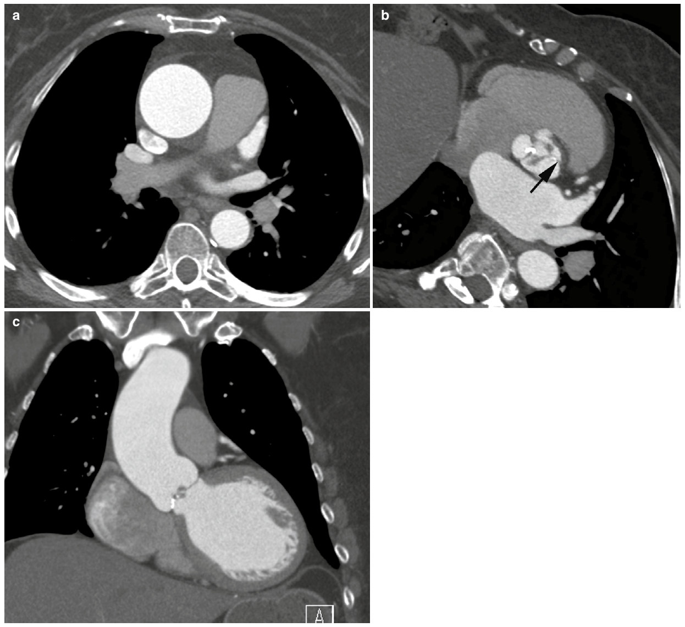
邻近肌肉处，称为膜周部室间隔缺损。其他类型的室间隔缺损常合并更复杂的心脏疾病，在既往未治疗的成人中极为罕见。房间隔缺损（ASD）在既往未治疗的成人中更为多见[6]。房间隔缺损根据位置也可分为不同亚型，最常见的是位于卵圆窝水平（图 6.2）。若该水平存在真正的缺损，则称为继发孔型房间隔缺损；若卵圆窝膜能够覆盖缺损，则称为卵圆孔未闭（PFO）。作为成人中最常见的偶发性间隔缺损，二者均可能
最初在矛盾性栓塞的情况下诊断。在卒中或肾梗死的检查中可能发现先前未诊断的继发孔型房间隔缺损或卵圆孔未闭症（PFO）。诊断它们的益处在于两者均可通过经皮封堵治疗。静脉窦型房间隔缺损也可见于成人，可发生于上腔静脉插入右心房处（上腔静脉窦型房间隔缺损）或下腔静脉插入处（下腔静脉窦型房间隔缺损）。静脉窦型房间隔缺损与部分性肺静脉异位引流（PAPVR）密切相关（图 6.3）。这些病变可能相当隐匿，常被漏诊。
缺损（图 a 箭头）。相比之下，1 例 20 岁男性肺动脉高压患者行 CT 检查（b），结果显示 PFO。可见仍存在膜性结构，但注射对比剂后（图 b 箭头）对比剂已经 PFO 穿过。
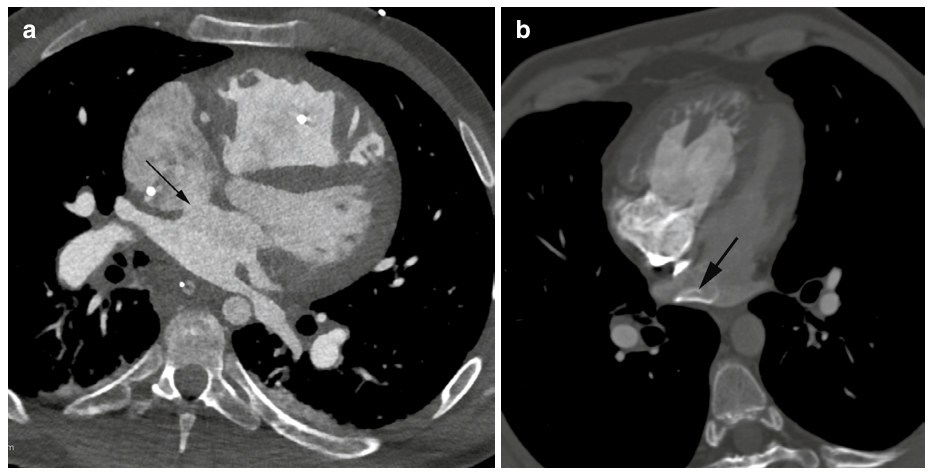
女性患者，因呼吸困难
显示一较高位置 ASD，符合
（箭头）。注意高密度静脉对比剂如何经缺损溢出至左心房。冠状面图像（b）显示两条异常静脉引流至上腔静脉（箭头）。
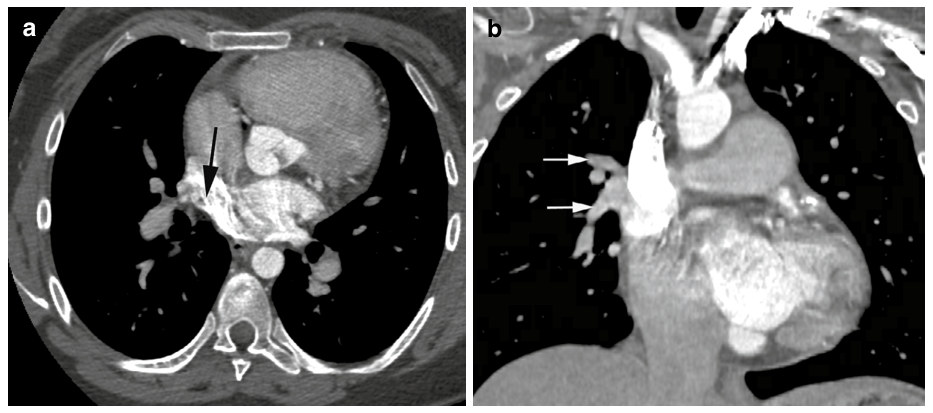
与继发孔型 ASD 和 PFO 不同，此类病变不适合经皮封堵治疗。原发孔型 ASD 是第三种房间隔缺损。该病变几乎均作为心内膜垫缺损的一部分出现，极少偶被发现。其他房间隔缺损等同病变如冠状静脉窦顶部缺失等不在本章讨论范围。
并无特异性，但当超声心动图提示右心扩大而未见 ASD 或 VSD 时应考虑本病。阅片放射科医师应尽量明确异常引流的肺段数目。有时整个左上肺引流入左头臂静脉，有时仅为两个非舌叶段异常引流。右上肺 PAPVR 约 50% 合并静脉窦型 ASD [7]。无 ASD 合并的病例因正常上肺静脉与上腔静脉紧邻而诊断困难。诊断关键常在于识别右心扩大。该征象应提示对肺静脉走行进行细致分析。我们发现无 ASD 合并的右上肺 PAPVR 是最常被漏诊的 PAPVR。右下肺 PAPVR 几乎均合并同侧肺发育较小及其他可能异常，包括体循环供血动脉、副膈及支气管变异。上述征象群称为肺静脉叶综合征或弯刀综合征（图 6.4）。后者命名源自
6.2.3 部分性肺静脉异位引流（PAPVR）
部分性肺静脉异位引流（PAPVR）可在成年期偶然发现，尤其当不合并 ASD 时 [7]。本病中肺静脉引流入体静脉，形成左向右分流。无其他合并畸形的 PAPVR 中，以左上肺 PAPVR 最为多见。临床表现通常
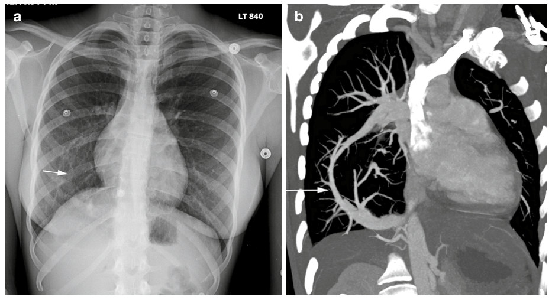
异常静脉，其形态类似土耳其弯刀，因此得名弯刀综合征。与所有 PAPVR 一样，分流量的大小取决于异常引流肺段的数量。左下肺异常肺静脉极为罕见，几乎均合并复杂的先天性心脏病。单纯性左上或右上 PAPVR 若分流量较小，可能无需手术修复。弯刀综合征及合并静脉窦型房间隔缺损的右上 PAPVR 则几乎均需手术矫正。
6.2.4 冠状动脉异常
本章不对冠状动脉异常进行详尽讨论，但该类异常亦可在成年患者中偶然发现。最常见者为回旋支冠状动脉走行于主动脉后方，无临床意义[8]。当冠状动脉起源于对侧窦并走行于主动脉与肺动脉之间时，可能伴发缺血（由受压或血管起源角度异常所致）。右冠状动脉起源于左冠窦的比例至少为左冠状动脉起源于右冠窦的五倍。该变异也并不总具有临床意义。遇到此类情况时，诊断评估应包括运动负荷试验或有创血流储备分数导管检查，以明确病变是否具有血流动力学意义。对异常冠状动脉的评估应包括判断是否存在壁内走行（即冠状动脉起源段走行于主动脉壁内，而非位于主动脉与肺动脉之间）。
动脉之间）。当冠状动脉在冠状位图像上呈椭圆形构型时，可提示存在壁内走行[8]。识别壁内走行将影响治疗决策，因其可行冠状动脉去顶手术并重新种植。左冠状动脉也可起源于右侧并走行于主动脉与肺动脉之间（图 6.5）。该情况更为罕见。因其与猝死高度相关，几乎均需手术矫正。例外情况为血管在两大血管之间穿行时呈经间隔走行（桥接），被认为具有保护作用。除冠状动脉起源异常外，还可能偶然发现冠状动脉瘘[9]。瘘可引流至肺动脉、冠状静脉，甚至直接引流至心腔。冠状动脉瘘属于左向右分流，单纯分流大小通常极少引起症状。症状多取决于瘘管能否将血液从正常冠状动脉及心肌分流走，导致局部相对缺血。体检可通过听诊发现杂音，或由超声心动图偶然检出。通常尝试经皮封堵治疗。更为罕见的异常为冠状动脉异常起源于肺动脉（ACAPA）[10]。该异常在生理学上类似于瘘管，因冠状动脉循环与肺动脉相通。在瘘管中，冠状动脉起源正常；而 ACAPA 中，一支正常冠状动脉起源缺失。ACAPA 多见于儿童，但偶有成年患者既往未曾诊断而就诊。此类病例通常表现为冠状动脉显著扩张伴大量侧支形成。
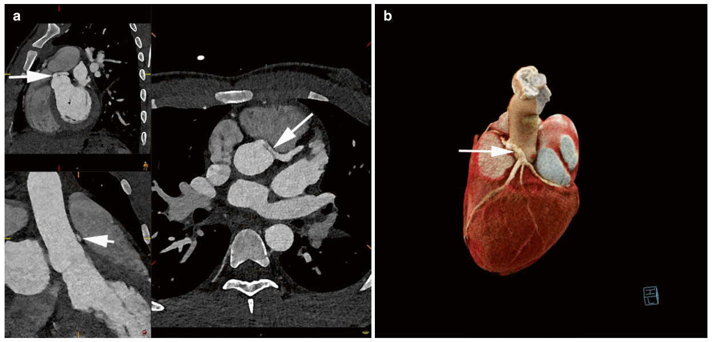
6.2.5 Ebstein 畸形（三尖瓣下移畸形）
偶有成人患者就诊时为未经纠治的 Ebstein 畸形。其诊断依据是三尖瓣隔叶向心尖方向移位及前叶呈帆状改变。当隔叶向心尖方向移位超过 8 mm/m2 时即可作出诊断 [11]。三尖瓣叶易发生反流，且可引起右心室流出道梗阻。反流可导致明显的右心房扩大。右心室流出道梗阻可引起肺血流减少，并经卵圆孔（PFO）出现右向左分流。
6.3 已纠治的先天性心脏病
6.3.1 法洛四联症（TOF）
法洛四联症（TOF）是最常见的经手术治疗的先天性心脏病之一 [1, 12]。TOF 由四个组成部分构成：（1）肺动脉瓣或瓣口附近的狭窄；（2）室间隔缺损（VSD）；（3）主动脉骑跨于
显示右心室扩大，符合肺动脉瓣反流病史。矢状斜位图像（b）证实 TOF 术后表现，包括钙化的室间隔补片（箭头）及主动脉骑跨
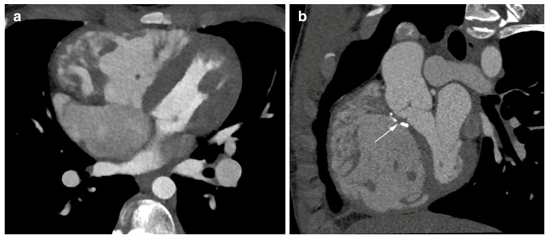
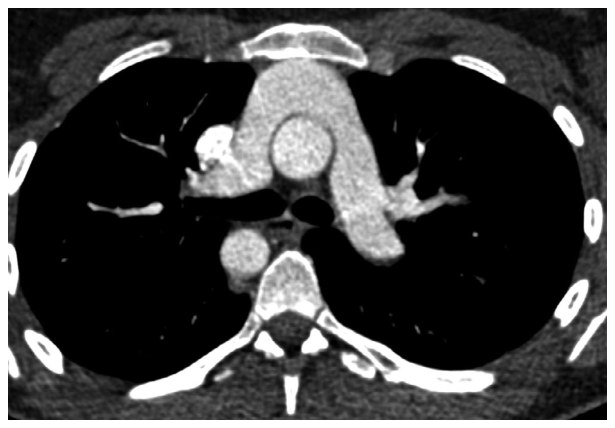
6.3.2 大动脉转位（TGA）
TGA 定义为右心室发出主动脉、左心室发出肺动脉。无论患者为 D-TGA 还是先天性矫正型 TGA，该定义均成立。差异在于心室的位置。D-TGA 中，右心室与右心房相连并发出主动脉。该病若不在出生时建立临时性房间隔缺损或进行血流改道，则无法存活。目前通过 Jatene 手术进行大动脉调转[15]。术后肺动脉在主动脉上方呈拱形排列（图 6.7）。任何 CT 阅片者均须注意主肺动脉的管径，因术后狭窄已有报道。1990 年代中期以前使用的旧术式为心室流入道调转[1, 16]。该术式将腔静脉血引流至左心室、肺静脉血引流至右心室，使血液得以混合，
并对 D-TGA 有效。该术式称为挡板（baffle）手术。挡板常发生狭窄（尤其上肢段），且易出现挡板漏。尽管挡板手术已不再施行，但既往接受该手术的患者仍可能因胸部影像检查而就诊（图 6.8）。若置入起搏器或中心静脉导管，当挡板完整时，导线将指向左心室。
6.3.3 单心室
单心室修复被用作多种疾病根治性治疗方案，其中心脏负责向主动脉泵血，并通过改良 Fontan 手术实现肺动脉被动充盈[1, 15]。改良 Fontan 手术包括将上腔静脉与肺动脉相连（双向 Glenn 分流），以及应用 Gore-Tex 人造血管连接肝段下腔静脉与肺动脉。该下腔静脉移植物通常位于心房侧方，因此属心外通道。该单心室修复常用于三尖瓣闭锁及双出口右心室合并远离大血管的室间隔缺损（非对位型）。
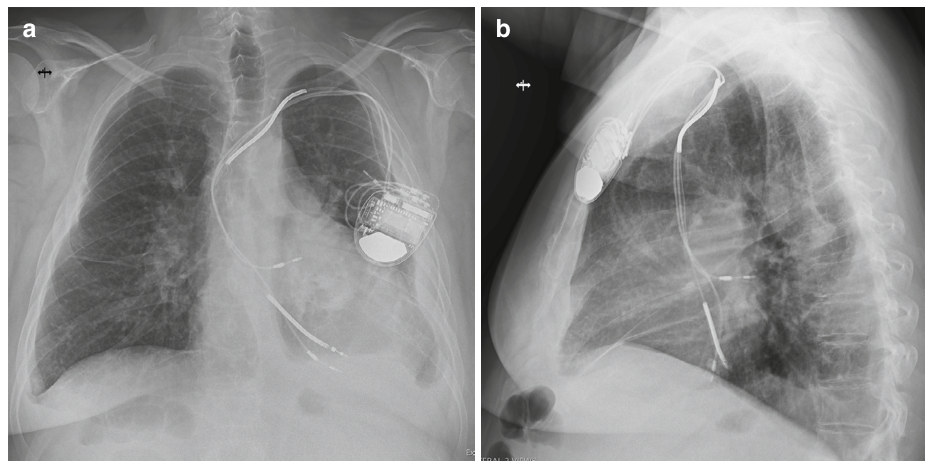
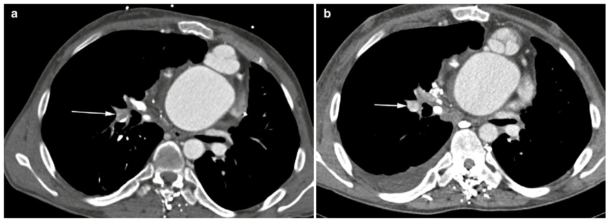
在左心发育不良中，将采用该方法并附加一系列步骤，旨在将右心室转变成体循环心室。左心发育不良时升主动脉往往较小，因此必须通过将主肺动脉与细小主动脉吻合来构建新主动脉。此手术称为 Damus-Kaye-Stansel（DKS），有时会与主动脉瘤混淆。无论是否采用 DKS，单心室修复术后患者在单期相 CT 血管成像上常易出现血流伪影 [1, 15]。这些患者常表现为呼吸困难，将接受 CT 检查以评估肺栓塞（图 6.9）。为确保诊断准确性，注射对比剂后至少应获取两个期相：第一期相在注射后 25 s，第二期相在注射后 70 s。这样可使两侧对比剂达到平衡，从而减轻血流伪影。单心室修复术后可并发肺动静脉畸形及侧支血管（包括纵隔和胸壁的静脉及动脉侧支）[1]。必须注意寻找这些血管。
静脉和动脉侧支（位于纵隔和胸壁）[1]。必须注意寻找这些血管。
6.4 结论
先天性心脏病出现在成年患者中的情况比以往任何时候都更为常见。有时基础病变已知，但很多时候并不明确。CT 在成人中的使用日益增多，意味着许多非心脏放射科医生最终可能会对这些患者的扫描进行判读。了解已治疗患者中一些较常见的并发症以及一些较常见的未诊断先天性病变，将有助于作出更有效的判读。
要点总结
- 室间隔缺损、二叶式主动脉瓣、部分性肺静脉异位回流、Ebstein 畸形及冠状动脉异常等疾病可能直至成年才被发现。
- 法洛四联症（TOF）是成年人中最常见的经手术矫正的先天性心脏病。经体表面积标化的右心室舒张末期容积有助于判断是否需要再次干预。
- 对于已修复的复杂先天性心脏病患者，CT 血管成像应强烈考虑采用两个期相采集。
1. Robb C, Rajput MZ, Raptis D, Bhalla S. Don’t skip a beat! Critical findings in imaging studies performed in adults with congenital heart disease. Curr Probl Diagn Radiol. 2024;53(2):297–307.
2. Egbe AC, Miranda WR, Jain CC, et al. Temporal changes in clinical characteristics and outcomes of adults with congenital heart disease. Am Heart J. 2023;264:1–9.
3. Agarwal A, Thombley R, Broberg CS, et al. Age- and lesion-related comorbidity burden among US adults with congenital heart disease: a population-based study. J Am Heart Assoc. 2019;8(20):e013450.
4. Thiene G, Rizzo S, Basso C. Bicuspid aortic valve: the most frequent and not so benign congenital heart disease. Cardiovasc Pathol. 2024;70:107604.
5. Writing Committee Members, Isselbacher EM, Preventza O, et al. 2022 ACC/AHA guideline for the diagnosis and management of aortic disease: a report of the American Heart Association/ American College of Cardiology Joint Committee on Clinical Practice Guidelines. Circulation. 2022;146(24):e334–482.
6. Prica M, Kamalathasan S, Gopaul K, Warriner D. Adult congenital heart disease: a review of the simple lesions. Br J Hosp Med (Lond). 2022;83(1):1–12.
7. Ho ML, Bhalla S, Bierhals A, Gutierrez F. MDCT of partial anomalous pulmonary venous return (PAPVR) in adults. J Thorac Imaging. 2009;24(2):89–95.
8. Agarwal PP, Dennie C, Pena E, et al. Anomalous coronary arteries that need intervention: review of pre- and postoperative imaging appearances. Radiographics. 2017;37(3):740–57.
9. Kumar R, Kumar J, O’Connor C, et al. Coronary artery fistula: a diagnostic dilemma. Interv Cardiol. 2023;18:e25. https://doi.org/10.15420/icr.2022.34.
10. Peña E, Nguyen ET, Merchant N, Dennie C. ALCAPA syndrome: not just a pediatric disease. Radiographics. 2009;29(2):553–65.
11. Oechslin E, Buchholz S, Jenni R. Ebstein’s anomaly in adults: Doppler-echocardiographic evaluation. Thorac Cardiovasc Surg. 2000;48(4):209–13.
12. Meng X, Song M, Zhang K, et al. Congenital heart disease: types, pathophysiology, diagnosis, and treatment options. MedComm (2020). 2024;5(7):e631.
13. Patel ND, Levi DS, Cheatham JP, Qureshi SA, Shahanavaz S, Zahn EM. Transcatheter pulmonary valve replacement: a review of current valve technologies. J Soc Cardiovasc Angiogr Interv. 2022;1(6):100452.
14. Norton KI, Tong C, Glass RB, Nielsen JC. Cardiac MR imaging assessment following tetralogy of Fallot repair. Radiographics. 2006;26(1):197–211.
15. Han BK, Lesser JR. CT imaging in congenital heart disease: an approach to imaging and interpreting complex lesions after surgical intervention for tetralogy of Fallot, transposition of the great arteries, and single ventricle heart disease. J Cardiovasc Comput Tomogr. 2013;7(6):338–53.
16. Gaur L, Cedars A, Diller GP, Kutty S, Orwat S. Management considerations in the adult with surgically modified d-transposition of the great arteries. Heart. 2021;107(20):1613–9. https://doi.org/10.1136/heartjnl-2020-318833.
17. Amaral F, Valente AM, Manso PH, et al. Congenitally corrected transposition of the great arteries in the adult. Braz J Cardiovasc Surg. 2022;37(4):534–45.
肺血管疾病
肺血管疾病
Kimberly Kallianos
7.1 肺栓塞
7.1.1 典型影像学特征
肺栓塞的诊断是胸部放射学实践中的基本内容。大的中心型肺栓塞很少构成诊断难题，而较小的肺栓塞则可能更难以准确诊断。肺栓塞的特征性影像表现为肺动脉分支内低密度的血管腔内充盈缺损（图 7.1）[1]。肺栓塞在 CT 上通常表现为多层受累的病变，即沿血管走行至少延伸数毫米。慢性肺栓塞的形态学表现与急性发作明显不同，包括偏心性肺动脉充盈缺损或与血管腔成钝角的充盈缺损、肺动脉壁增厚、血管迅速变细、血管腔内钙化以及肺动脉腔内纤细的线状网状或带状影（图 7.2）[1]。除慢性肺栓塞的血管腔内表现外，肺实质灌注不均的区域也可提示慢性肺栓塞的存在。本章后续涉及肺动脉高压的部分将进一步讨论这一问题。肺栓塞的密度应 <100 HU，急性肺栓塞的
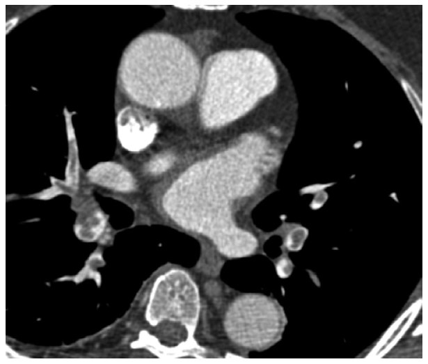
K. Kallianos (*) 加州大学旧金山分校，旧金山，加利福尼亚州，美国 电子信箱：kimberly.kallianos@ucsf.edu
在一项研究中，急性肺栓塞（PE）的 CT 值为 33 HU，慢性肺栓塞的平均 CT 值为 87 HU，这有助于将肺栓子与异质性对比剂混合等伪影区分开来 [2]。急性和慢性肺栓塞均可因右心室流出道梗阻而导致右心压力升高。在肺栓塞方案 CT（PE CT）上可观察到多种提示右心功能不全的征象，包括右心室扩张、室间隔向左凸出、对比剂反流至下腔静脉（IVC）以及上腔静脉（SVC）和奇静脉扩张。然而，在房室瓣层面测量的右心室与左心室舒张末期横径比值 >1 已被证明是急性肺栓塞患者不良预后的最强预测因子，其出现与全因患者死亡风险增加 2.5 倍相关（图 7.3）[3]。尽管有违直觉，但研
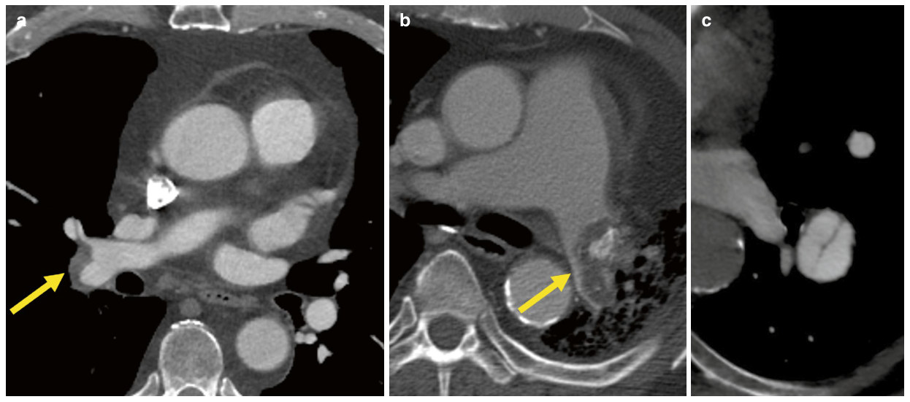
研究表明，血栓总负荷和中心位置血栓与患者总体死亡率之间无显著相关性 [3, 4]。除了对右心室功能的影响外，肺栓塞患者还可出现肺部实质表现，特别是远端肺梗死。肺梗死表现为外周磨玻璃影区域，有时带有外周实变带，位于闭塞的肺动脉分支远端，由缺血和肺部实质出血所致（图 7.4）[5]。肺梗死更常见于远端肺栓塞患者，而非中心充盈缺损患者，因为后者缺乏侧支血流。双能量 CT 已被建议作为辅助手段用于诊断肺栓塞，可同时显示肺动脉充盈缺损和肺部实质的灌注缺损 [6]。这些实质缺损可在 CT 碘图上迅速检出，该技术利用两种不同能谱的 X 线区分特定物质，从而选择性地显示组织内的碘含量（图 7.5）[7]。与标准多层螺旋 CT 相比，使用双能量 CT 已被证明可提高肺栓塞检测的诊断准确性，报道的诊断准确性为 95.6–97.6%，且观察者间和观察者内一致性良好 [8]。单能量图像
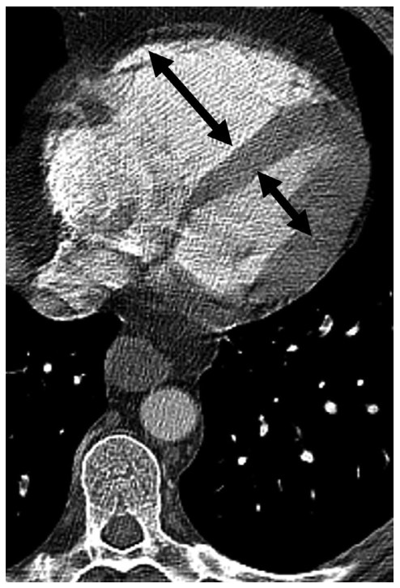
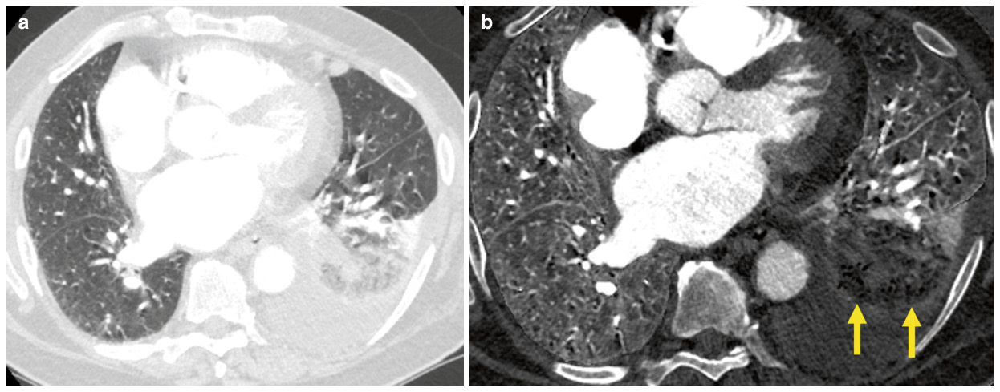
双能量 CT 生成的单能量重建还可增加血管强化程度，在低对比剂用量情况下有助于提高图像质量。双能量 CT 可能有助于评估肺灌注缺损，从而协助鉴别诊断慢性血栓栓塞性肺动脉高压（CTEPH）与其他原因所致的肺动脉高压 [9]。
殊重要，因为在屏气重复扫描时若患者再次施加类似的腹压增加，可产生同样的伪影。除对比剂时机的相关问题外，肺动脉内的对比剂混合不均亦可类似肺栓塞表现。这部分归因于现代扫描仪采集速度较快，可超过对比剂团注的推进速度，尤其是心功能减低患者，以及因肺部本身病变导致血流异常缓慢或经支气管动脉-肺动脉吻合形成的侧支血流（图 7.7）。上腔静脉内高密度对比剂及骨科植入物所致的条带状伪影亦可类似肺动脉充盈缺损。在部分机构为评估肺栓塞而较早触发扫描的 CTA 中，肺静脉内对比剂层流亦为肺栓塞的常见模拟表现（图 7.8）。最后，小气道黏液嵌塞乍看可疑似肺动脉充盈缺损，但通过仔细观察受累结构，可与真正的肺栓子相鉴别。
7.1.2 常见伪影
肺栓塞的诊断可能具有挑战性，因为图像伪影的发生率很高。这些伪影包括图像运动、对比剂混合以及类似肺动脉的结构，如气道和肺静脉。心脏和呼吸运动均会使肺栓塞的诊断变得复杂，并且这些效应在舌叶和左下叶具有协同作用[10]。当怀疑运动可能模拟肺栓塞时，关注肺窗有助于避免这一陷阱。对比剂时机的挑战是多因素的，因为在早期和晚期时间点采集扫描均可能导致肺动脉强化不足。作为参考，多项研究将充分的肺动脉强化定义为至少 200 或 250 HU[11,12]。肺栓塞诊断中一个独特的生理学挑战是对比剂瞬时中断现象[13]。该现象是腹腔内压力升高（例如 Valsalva 动作）所致，其导致经下腔静脉回流至右心的静脉血流增加，进而产生一股未强化的血液，该血液置换右心中已强化的血液，并导致肺动脉对比剂强化不良（图 7.6）。认识这种生理学现
7.1.3 特殊患者人群
7.1.3.1 妊娠期肺栓塞
孕产妇是一类特殊人群，由放射科医生负责排除是否存在肺栓塞。肺栓塞是妊娠相关死亡原因的 20%，最常发生于产后期[14]。疑似肺栓塞孕妇的诊断性检查特别具有挑战性，因为存在显著的
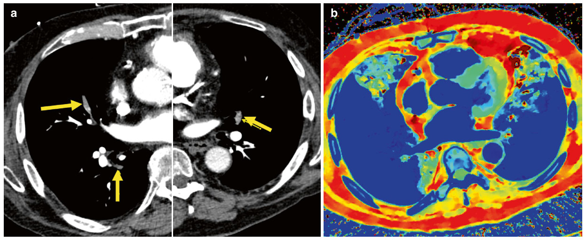
胸部胸壁和乳腺软组织的剂量。幸运的是，肺栓塞 CT 和通气灌注扫描的胎儿辐射剂量都非常低，远低于与胎儿致畸相关的阈值 [16]。然而，子宫内较大的胎儿辐射暴露（例如，来自妊娠患者的腹部和盆腔 CT）与儿童白血病风险可能增加 1.5 至 2.0 倍相关 [17]。已开发出多种 CT 技术以减少妊娠患者成像时的辐射暴露，包括减小 z 轴覆盖范围和基于器官的管电流调制。关于患者胎儿和性腺屏蔽的专家指南最近已更新，美国医学物理学家协会（AAPM）在 2019 年发布的更新中建议停止使用性腺和胎儿屏蔽，并辅以美国国家辐射防护委员会（NCRP）的指南 [18, 19]。历史上认为在使用电离辐射的成像检查中对患者进行屏蔽对患者安全至关重要；然而，随着系统在辐射递送方面变得更加精确，行业共识认为患者屏蔽通常会增加患者的辐射剂量。如果屏蔽遮挡了感兴趣的解剖结构，可能需要重复检查（图 7.10）。在具有自动曝光控制的系统中，如果屏蔽阻挡了部分应照射到探测器自动曝光控制单元的主射线束，系统可能会认为接收到的辐射不足，从而增加辐射输出。在肺栓塞方案 CT 的特定情况下，现代 CT 系统配备了 X 射线束准直，胎儿不在成像区域内。在这些情况下，胎儿的全部辐射剂量均来自散射
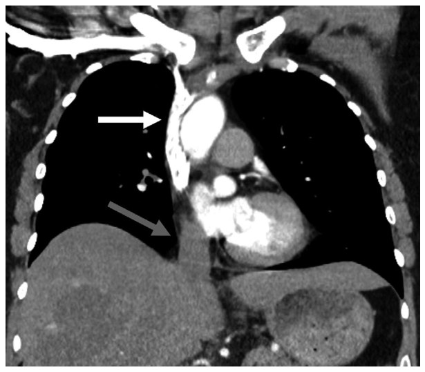
肺栓塞的症状与妊娠患者经历的多因素生理性呼吸困难之间存在重叠。美国胸科学会建议对疑似肺栓塞的妊娠患者进行序贯评估，重点是在优化诊断准确性的同时尽量减少电离辐射的使用（图 7.9）[15]。在妊娠患者中，患者和胎儿的辐射暴露都是选择最合适成像检查时的考虑因素。总体而言，妊娠患者的辐射剂量在 PE CT 时更大，尤其是
由于通气/血流匹配而出现致密纤维化区域的生理性血管收缩
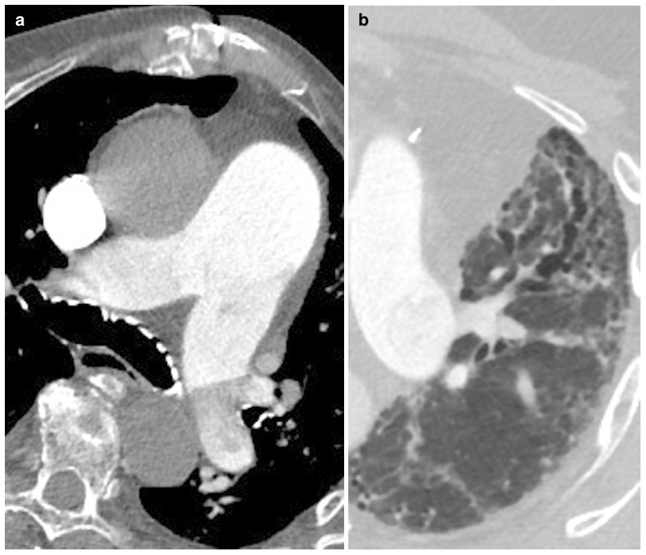
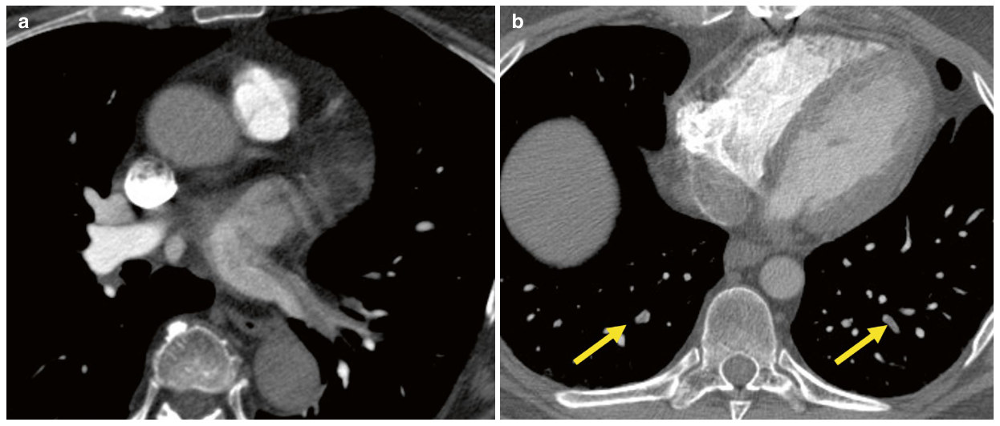
应用抗凝药物后出血并发症有所增加（增加 71%），但肺栓塞死亡率并未得到同等程度的改善（下降 3%）[21]。微小肺栓塞检出获益进一步受到质疑的原因在于，研究显示观察者间对微小和/或孤立性肺栓塞的存在与否存在显著分歧。某三级医疗中心对 1 年内完成的肺栓塞方案 CT 进行回顾性分析，结果显示观察者间不一致率为 25.9%，孤立性肺栓塞（46.2%）、段动脉（26.8%）或亚段动脉（59.4%）分支内的栓塞更为常见[21]。作者评估了导致不一致的最常见原因，发现运动伪影和射线束硬化伪影是最主要的两大因素。鉴于孤立性小肺栓塞的诊断存在争议，对其诊断后予以抗凝治疗的潜在获益也受到质疑。一项前瞻性观察性研究纳入了亚段肺栓塞且无深静脉血栓形成（DVT）的患者，后续未给予抗凝治疗并进行随访。该研究因未接受抗凝治疗的亚段肺栓塞患者静脉血栓栓塞复发率较高而提前终止，单发亚段肺栓塞复发率为 2.1%，多发亚段肺栓塞复发率为 5.7%[22]。这些结果支持对多发小肺栓塞患者给予抗凝治疗，并进一步凸显了放射科医师准确诊断的重要性。
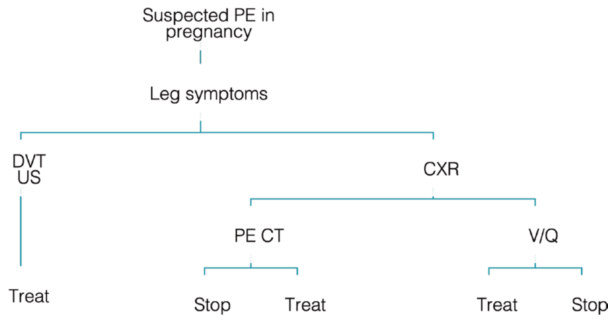
7.1.3.3 非血栓性肺栓塞
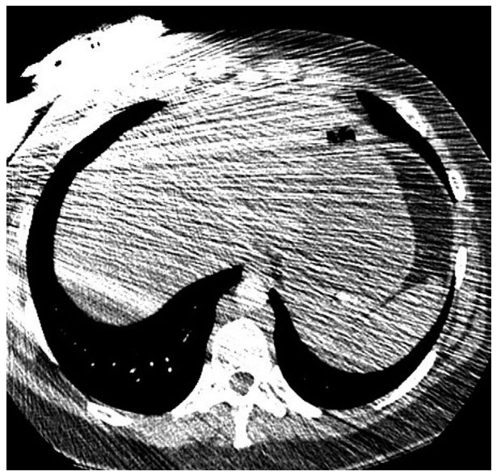
除血栓性肺栓塞外，其他物质也可栓塞于肺动脉系统内。肿瘤栓子可大体或显微镜下沉积于肺动脉系统[23]。大体肿瘤栓子通常表现为血管内充盈缺损，较易识别；而显微镜下肿瘤栓子则较难检出，可能仅在肺活检或尸检时得以诊断。提示肺肿瘤血栓性微血管病的征象包括肺动脉高压以及光滑或结节状支气管血管周围间质增厚和小叶间隔增厚[24]。肺动脉内膜肉瘤也可类似于血栓性肺栓塞；然而，若患者血流动力学良好代偿并出现大的肺动脉充盈缺损，常提示该诊断，提示其生长相对缓慢而非急性栓塞事件（图 7.11）。脂肪栓塞和羊水栓塞均发生于显微镜水平，无可见的肺动脉充盈缺损。显微镜下脂肪栓塞导致肺泡毛细血管床水平的内皮细胞损伤，并通常在外伤或长骨损伤后 1–3 天内出现肺水肿[25]。羊水栓塞的影像学特征同样表现为肺水肿，临床表现为产程中突然的心肺功能衰竭。最后，异物可在置入体内时或意外迁移后栓塞至肺动脉系统。虽然文献报道的可栓塞至肺动脉系统的器械种类繁多，但常见的罪魁祸首是骨科手术后出现的肺动脉骨水泥栓塞（图 7.12）。大块或中央型骨水泥栓塞可能需要手术取出；然而，较小
散射辐射分布于妊娠患者体内。这种散射辐射无法通过表面屏蔽消除或减少[20]。
7.1.3.2 孤立性亚段肺栓塞
在住院患者及伴发恶性肿瘤的患者中，偶发性小肺栓塞并非少见。关于孤立性小肺栓塞的治疗获益一直存在争议，文献中有过度诊断和过度治疗的观点。该观点的依据是，自 20 世纪 90 年代末多层螺旋 CT（MDCT）问世以来，美国肺栓塞的总体诊断率有所上升（增加 81%），同时出血并发
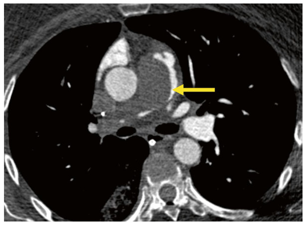
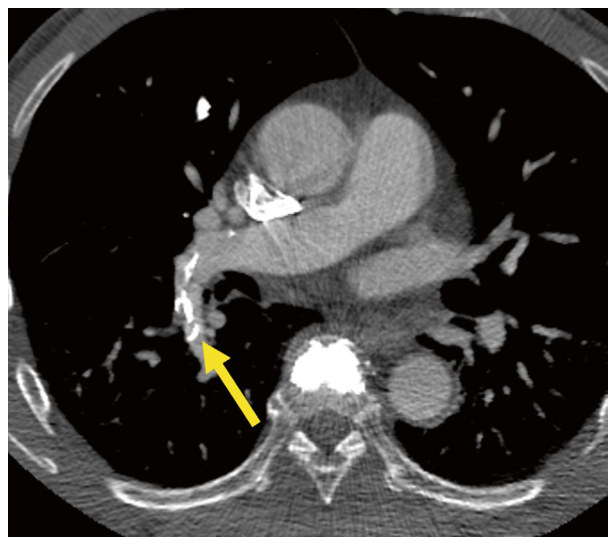
在上皮细胞水平造成损伤，并继发于创伤或长骨损伤后 1–3 天内出现肺水肿[25]。羊水栓塞的影像学特征同样表现为肺水肿，临床表现为产程中突发的心肺功能衰竭。最后，异物也可在置入体内时或意外迁移后栓塞至肺动脉系统。虽然文献报道的可栓塞至肺动脉系统的器械种类繁多，但一种常见的原因是骨科手术后出现的肺动脉骨水泥栓塞（图 7.12）。较大或中央型骨水泥栓塞可能需要手术取出；然而，较小
骨水泥栓塞的患者可选择随访观察，或考虑给予抗凝治疗，以避免骨水泥作为血栓形成的核心[26]。
7.2 肺动脉高压
7.2.1 经典影像学特征
肺动脉高压（PH）经典定义是指肺动脉压力升高，即静息状态下平均压 >25 mmHg 或运动时 >30 mmHg，但最新指南已将平均肺动脉压 >20 mmHg 的患者纳入其中[27]。判断主肺动脉增宽有多种阈值标准，放射科医师易于识别。然而研究表明，肺动脉与主动脉直径比值 >1（PA/Ao > 1）较单纯的肺动脉直径对肺动脉高压的预测价值更高，阳性预测值可达 92–95%[28,29]。但需注意，肺动脉直径正常并不能排除肺动脉高压的存在；此外，部分肺动脉高压患者的肺动脉会进行性增宽，且与肺动脉压力无关[30,31]。
7.2.2 肺动脉高压患者的分类
世界卫生组织（WHO）制定了肺动脉高压的分类方案，将其分为五组：（1）原发性肺动脉高压；（2）由左心疾病所致的肺动脉高压；（3）由肺部疾病所致的肺动脉高压；（4）慢性血栓栓塞性肺动脉高压；（5）由多因素机制所致的肺动脉高压[32]。
7.2.2.1 WHO 第 2 组与第 3 组
对于病因不明的肺动脉高压患者，一种评估思路是首先排除明显的心脏和肺部病变，这类患者将归入 WHO 第 2 组或第 3 组。第 2 组肺动脉高压患者包括收缩功能不全、舒张功能不全、瓣膜病及先天性心脏病。成年期才被发现的既往未诊断的先天性心脏病患者，常因长期严重的肺动脉高压而出现艾森曼格生理等并发症（图 7.13）。第 3 组肺动脉高压患者包括慢性阻塞性肺疾病（COPD）、间质性肺疾病（ILD）、睡眠呼吸暂停、肺泡通气不足、长期高海拔暴露及发育性肺疾病等。其中部分疾病在影像学上表现隐匿，但伴有显著肺实质异常（包括肺气肿和纤维化）的患者常因胸部影像学检查就诊，从而可被放射科医师识别。高达三分之二的 COPD 患者因低氧性肺血管收缩和血管重塑而存在不同程度的肺动脉高压，通常为轻度[33]。肺动脉高压亦常见于纤维化性间质性肺疾病，包括特发性肺纤维化及结缔组织病相关间质性肺疾病（图 7.14）。在重度间质性肺疾病患者中，肺动脉高压发生率很高，终末期特发性肺纤维化患者中肺动脉高压的患病率超过 60%[34]。然而，肺动脉高压的严重程度与纤维化程度之间相关性较差[35]。
灌注不均反映了因肺灌注改变所致的肺密度差异，其中透亮度较高的肺区域为异常，其原因可为肺血管病变所致的灌注直接减少，亦可为小气道病变（如缩窄性细支气管炎）所致的血流减少[38]。慢性血栓栓塞性肺动脉高压（CTEPH）是有肺动脉高压患者出现肺密度差异的最常见原因。一组病例研究显示，74% 的 CTEPH 患者存在灌注不均区域，而第 1 组或第 2 组肺动脉高压患者中仅占 8%。CTEPH 患者所见的灌注不均血管型表现为肺密度减低的段及亚段区域[39]（图 7.15）。CTEPH 所致灌注不均的另一支持征象是，肺实质密度较高区域内的肺动脉血管扩张，而透亮度较高区域内的肺动脉血管较小（图 7.16）。灌注不均合并如此显著的血管管径差异，对 CTEPH 的诊断具有很高的诊断效能，敏感度与特异度范围为 94% 至 100%[40]。通气/血流灌注（V/Q）扫描在慢性血栓栓塞性肺动脉高压的诊断中也具有重要作用。与 CT 相比，V/Q 扫描的敏感度更高（83–85% 对 CT 67%），但特异度较低（42–51% 对 CT 60%）[41]。在 CTEPH 筛查中，为避免漏诊，可首选 V/Q 扫描，并联合 V/Q 与 CT 以提高特异度。值得注意的是，其他病因所致的肺动脉高压患者 V/Q 扫描通常正常。但在肺动脉高压（10%）及肺静脉闭塞性疾病（7%）患者中亦可出现 V/Q 扫描假阳性（图 7.17），这两种疾病将在后文进一步讨论[42]。
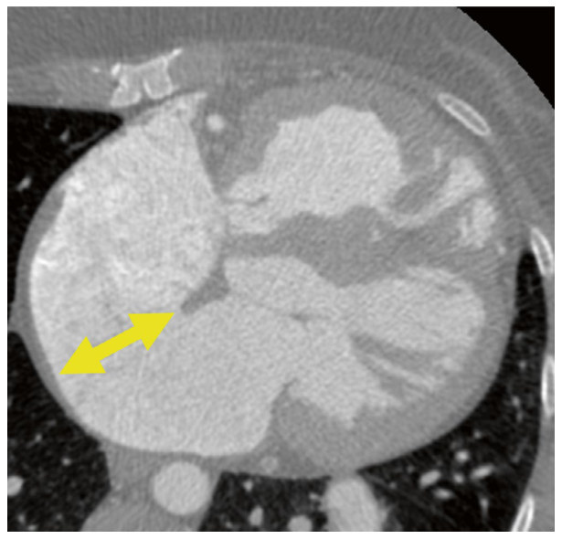
通气、长期高海拔暴露及发育性肺疾病。虽然部分疾病在影像学上表现隐匿，但伴有显著肺实质异常（包括肺气肿和纤维化）的患者常因胸部影像学检查就诊，从而可被放射科医师识别。高达三分之二的 COPD 患者因低氧性肺血管收缩和血管重塑而存在不同程度的肺动脉高压，通常为轻度[33]。肺动脉高压亦常见于纤维化性间质性肺疾病，包括特发性肺纤维化及结缔组织病相关间质性肺疾病（图 7.14）。在重度间质性肺疾病患者中，肺动脉高压发生率很高，终末期特发性肺纤维化患者中肺动脉高压的患病率超过 60%[34]。然而，肺动脉高压的严重程度与纤维化程度之间相关性较差[35]。
7.2.2.3 WHO 第 1 组
WHO 1 组肺动脉高压患者包括存在基础小动脉病变、可能对血管扩张剂治疗有反应的患者。其中包括特发性肺动脉高压（PAH）、遗传性肺动脉高压以及药物和毒素相关肺动脉高压等病因。磨玻璃影是肺动脉高压患者 CT 上常见的征象，可对应于肺水肿、胆固醇肉芽肿和/或丛状小动脉病变。丛状或丛源性小动脉病变是肺动脉高压患者的标志性特征，组织学上表现为肺毛细血管前小动脉壁内异常血管生成区域伴增生和血管肥厚。肺动脉高压患者的 CT 表现
7.2.2.2 慢性血栓栓塞性肺动脉高压
慢性血栓栓塞性肺动脉高压的影像学表现包括慢性 PE 的 CT 征象（如上节所述）以及支持性征象，例如扩张的支气管动脉（见于 73% 的 CTEPH 患者，而肺动脉高压患者仅 14%），以及肺实质改变如马赛克灌注和肺梗死 [36, 37]。马赛克衰减是用于描述肺密度不均区域的一般术语；然而，该术语并不能区分较透亮肺和较致密肺中哪一种为异常。马赛克
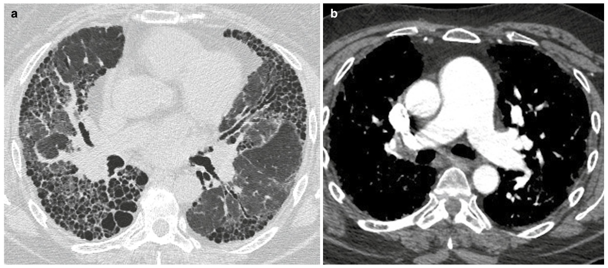
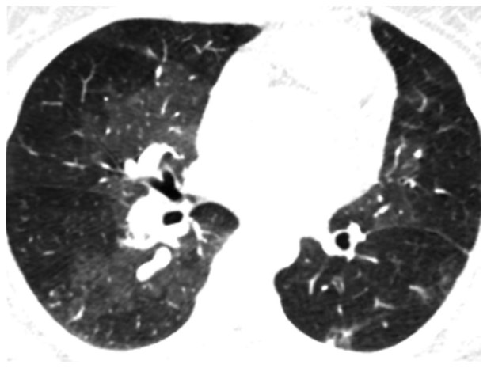
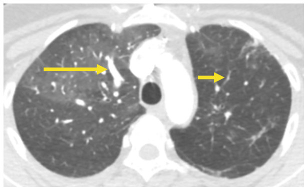
包括由于肺动脉分支周围灌注增加所致的局灶性血管周围高密度区（图 7.18）[43]。这与 CTEPH 患者可见的较大节段性肺密度不均区域不同。
7.2.2.4 WHO 第 1′ 组
肺静脉闭塞性疾病（PVOD）和肺毛细血管瘤病（PCH）是 WHO 第 1 组肺动脉高压患者亚群中的罕见疾病。PVOD 和 PCH 均表现为广泛的肺血管阻塞性病变，PVOD 患者阻塞位于肺小静脉水平，PCH 患者阻塞位于肺泡毛细血管水平 [44]。这些疾病的 CT 表现与心源性肺水肿相似，表现为光滑的小叶间隔及支气管血管周围间隔增厚（与 PVOD 关系密切）（图 7.19），以及以小叶中心分布的磨玻璃结节（与 PCH 关系更密切）（图 7.20）。两种疾病均可见淋巴结肿大，患者可同时出现 PVOD 和 PCH 的肺部实质影像学征象。在肺动脉高压患者中识别并提示 PVOD 和/或 PCH 的诊断特征非常重要，因为应用典型的肺动脉高压血管扩张剂
位于肺小静脉水平（PVOD 患者）及肺泡毛细血管水平（PCH 患者）[44]。这些疾病的 CT 表现与心源性肺水肿相似，表现为光滑的小叶间隔及支气管血管周围间隔增厚（与 PVOD 密切相关）（图 7.19），以及以小叶中心分布的磨玻璃结节（与 PCH 密切相关）（图 7.20）。两种疾病均可见淋巴结肿大，患者可同时出现 PVOD 和 PCH 的肺部实质影像学征象。在肺动脉高压患者中识别并提示 PVOD 和/或 PCH 的诊断特征非常重要，因为应用典型的肺动脉高压血管扩张剂
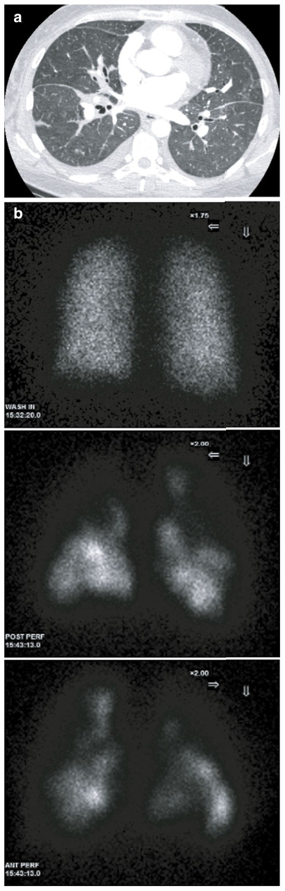
肺动脉高压，以及肺静脉闭塞性疾病/肺毛细血管瘤病是影像诊断放射科医师的重要任务，具有重要的治疗意义。影像学上肺实质的 PH 鉴别征象是心脏科医师所获得的肺动脉压力或右心功能测量的有益补充，也是肺科医师所获得的肺功能检查的有益补充，凸显了肺血管疾病诊断和治疗的多学科性质。
| PVOD（%） | PAH（%） | p | |
|---|---|---|---|
| 磨玻璃影 | 87 | 33 | * |
| 间隔线 | 93 | 13 | * |
| 胸腔积液 | 27 | 13 | 无显著差异 |
| 淋巴结 | 80 | 0 | * |
*表示具有统计学意义的 p 值
血管扩张剂治疗常导致 PVOD/PH 患者肺水肿加重及预后不良（表 7.1）[46, 47]。PVOD 和 PCH 患者常被误诊，可能直到肺移植时或尸检分析时才得以识别。
7.3 小结
熟悉肺血管疾病（包括肺栓塞和肺高血压）的 CT 特征对于确保诊断准确性至关重要。肺栓塞的药物治疗（抗凝治疗）会使患者面临出血并发症风险，这进一步凸显了将肺栓塞与常见影像学伪影区分开的重要性。孤立性小型肺栓塞患者以及疑似肺栓塞的妊娠患者是两个特殊亚群，对其影像伪影予以特别关注并选择最合适的影像学检查方式至关重要。虽然相对少见，肺高血压是另一种需准确解读 CT 影像特征以决定最合适治疗方案的疾病。区分由慢性肺栓塞、肺动脉
1. Wittram C. How I do it: CT pulmonary angiography. AJR Am J Roentgenol. 2007;188(5):1255–61.
2. Wittram C, Maher MM, Yoo AJ, Kalra MK, Shepard J-AO, McLoud TC. CT angiography of pulmonary embolism: diagnostic criteria and causes of misdiagnosis. Radiographics. 2004;24(5):1219–38.
3. Meinel FG, Nance JW, Schoepf UJ, et al. Predictive value of computed tomography in acute pulmonary embolism: systematic review and meta-analysis. Am J Med. 2015;128(7):747–59.e2.
4. Ghaye B, Ghuysen A, Willems V, et al. Severe pulmonary embolism: pulmonary artery clot load scores and cardiovascular parameters as predictors of mortality. Radiology. 2006;239(3):884–91.
5. Kaptein FHJ, Kroft LJM, Hammerschlag G, et al. Pulmonary infarction in acute pulmonary embolism. Thromb Res. 2021;202:162–9.
6. Hong YJ, Shim J, Lee SM, Im DJ, Hur J. Dual-energy CT for pulmonary embolism: current and evolving clinical applications. Korean J Radiol. 2021;22(9):1555–68.
7. Thieme SF, Johnson TRC, Lee C, et al. Dual-energy CT for the assessment of contrast material distribution in the pulmonary parenchyma. AJR Am J Roentgenol. 2009;193(1):144–9.
8. Okada M, Kunihiro Y, Nakashima Y, et al. Added value of lung perfused blood volume images using dual-energy CT for assessment of acute pulmonary embolism. Eur J Radiol. 2015;84(1):172–7.
9. Giordano J, Khung S, Duhamel A, et al. Lung perfusion characteristics in pulmonary arterial hypertension (PAH) and peripheral forms of chronic thromboembolic pulmonary hypertension (pCTEPH): dual-energy CT experience in 31 patients. Eur Radiol. 2017;27(4):1631–9.
10. Jones SE, Wittram C. The indeterminate CT pulmonary angiogram: imaging characteristics and patient clinical outcome. Radiology. 2005;237(1):329–37.
11. Raczeck P, Minko P, Graeber S, et al. Influence of respiratory position on contrast attenuation in pulmonary CT angiography: a prospective randomized clinical trial. AJR Am J Roentgenol. 2016;206(3):481–6.
12. Bae KT, Tao C, Gürel S, et al. Effect of patient weight and scanning duration on contrast enhancement during pulmonary multidetector CT angiography. Radiology. 2007;242(2):582–9.
13. Wittram C, Yoo AJ. Transient interruption of contrast on CT pulmonary angiography: proof of mechanism. J Thorac Imaging. 2007;22(2):125–9.
14. Heit JA, Kobbervig CE, James AH, Petterson TM, Bailey KR, Melton LJ. Trends in the incidence of venous thromboembolism during pregnancy or postpartum: a 30-year population-based study. Ann Intern Med. 2005;143(10):697–706.
15. Leung AN, Bull TM, Jaeschke R, et al. An official American Thoracic Society/Society of Thoracic Radiology clinical practice guideline: evaluation of suspected pulmonary embolism in pregnancy. Am J Respir Crit Care Med. 2011;184(10):1200–8.
16. Pahade JK, Litmanovich D, Pedrosa I, Romero J, Bankier AA, Boiselle PM. Quality initiatives: imaging pregnant patients with suspected pulmonary embolism: what the radiologist needs to know. Radiographics. 2009;29(3):639–54.
17. Goldberg-Stein SA, Liu B, Hahn PF, Lee SI. Radiation dose management: part 2, estimating fetal radiation risk from CT during pregnancy. AJR Am J Roentgenol. 2012;198(4):W352–6.
18. American Association of Physicists in Medicine. AAPM position statement on the use of patient gonadal and fetal shielding [Internet]. 2019 [cited 2024 Oct 6]. Available from: https://www. aapm.org/org/policies/details.asp?id=468
19. National Council on Radiation Protection and Measurements. NCRP recommendations for ending routine gonadal shielding during abdominal and pelvic radiography [Internet]. 2021 [cited 2024 Oct 6]. Available from: https://ncrponline.org/wp-content/themes/ncrp/PDFs/Statement13.pdf
20. American Association of Physicists in Medicine. Patient gonadal and fetal shielding in diagnostic imaging: frequently asked questions [Internet]. [cited 2024 Oct 7]. Available from: https://www.aapm.org/org/policies/documents/CARES_FAQs_Patient_ Shielding.pdf
21. Wiener RS, Schwartz LM, Woloshin S. Time trends in pulmonary embolism in the United States: evidence of overdiagnosis. Arch Intern Med. 2011;171(9):831–7.
22. Le Gal G, Kovacs MJ, Bertoletti L, et al. Risk for recurrent venous thromboembolism in patients with subsegmental pulmonary embolism managed without anticoagulation: a multicenter prospective cohort study. Ann Intern Med. 2022;175(1):29–35.
23. Unal E, Balci S, Atceken Z, Akpinar E, Ariyurek OM. Nonthrombotic pulmonary artery embolism: imaging findings and review of the literature. AJR Am J Roentgenol. 2017;208(3):505–16.
24. Kumar N, Price LC, Montero MA, Dimopoulos K, Wells AU, Wort SJ. Pulmonary tumour thrombotic microangiopathy: unclassifiable pulmonary hypertension? Eur Respir J. 2015;46(4):1214–7.
25. Newbigin K, Souza CA, Armstrong M, et al. Fat embolism syndrome: do the CT findings correlate with clinical course and severity of symptoms? A clinical-radiological study. Eur J Radiol. 2016;85(2):422–7.
26. Krueger A, Bliemel C, Zettl R, Ruchholtz S. Management of pulmonary cement embolism after percutaneous vertebroplasty and kyphoplasty: a systematic review of the literature. Eur Spine J. 2009;18(9):1257–65.
27. Maron BA. Revised definition of pulmonary hypertension and approach to management: a clinical primer. J Am Heart Assoc. 2023;12(8):e029024.
28. Peña E, Dennie C, Veinot J, Muñiz SH. Pulmonary hypertension: how the radiologist can help. Radiographics. 2012;32(1):9–32.
29. Murray TI, Boxt LM, Katz J, Reagan K, Barst RJ. Estimation of pulmonary artery pressure in patients with primary pulmonary hypertension by quantitative analysis of magnetic resonance images. J Thorac Imaging. 1994;9(3):198–204.
30. Boerrigter B, Mauritz G-J, Marcus JT, et al. Progressive dilatation of the main pulmonary artery is a characteristic of pulmonary arterial hypertension and is not related to changes in pressure. Chest. 2010;138(6):1395–401.
31. Remy-Jardin M, Ryerson CJ, Schiebler ML, et al. Imaging of pulmonary hypertension in adults: a position paper from the Fleischner Society. Radiology. 2021;298(3):531–49.
32. Simonneau G, Gatzoulis MA, Adatia I, et al. Updated clinical classification of pulmonary hypertension. J Am Coll Cardiol. 2013;62(25 Suppl):D34–41.
33. Klinger JR. Group III pulmonary hypertension: pulmonary hypertension associated with lung disease: epidemiology, pathophysiology, and treatments. Cardiol Clin. 2016;34(3):413–33.
34. Caminati A, Cassandro R, Harari S. Pulmonary hypertension in chronic interstitial lung diseases. Eur Respir Rev. 2013;22(129):292–301.
35. Shorr AF, Wainright JL, Cors CS, Lettieri CJ, Nathan SD. Pulmonary hypertension in patients with pulmonary fibrosis awaiting lung transplant. Eur Respir J. 2007;30(4):715–21.
36. Remy-Jardin M, Duhamel A, Deken V, Bouaziz N, Dumont P, Remy J. Systemic collateral supply in patients with chronic thromboembolic and primary pulmonary hypertension: assessment with multi-detector row helical CT angiography. Radiology. 2005;235(1):274–81.
37. Aluja Jaramillo F, Gutierrez FR, Díaz Telli FG, Yevenes Aravena S, Javidan-Nejad C, Bhalla S. Approach to pulmonary hypertension: from CT to clinical diagnosis. Radiographics. 2018;38(2):357–73.
38. Bankier AA, MacMahon H, Colby T, et al. Fleischner Society: glossary of terms for thoracic imaging. Radiology. 2024;310(2):e232558.
39. Ussavarungsi K, Lee AS, Burger CD. Mosaic pattern of lung attenuation on chest CT in patients with pulmonary hypertension. Diseases. 2015;3(3):205–12.
40. Bergin CJ, Rios G, King MA, Belezzuoli E, Luna J, Auger WR. Accuracy of high-resolution CT in identifying chronic pulmonary thromboembolic disease. AJR Am J Roentgenol. 1996;166(6):1371–7.
41. Wang M, Wu D, Ma R, et al. Comparison of V/Q SPECT and CT angiography for the diagnosis of chronic thromboembolic pulmonary hypertension. Radiology. 2020;296(2):420–9.
42. Seferian A, Helal B, Jaïs X, et al. Ventilation/perfusion lung scan in pulmonary veno-occlusive disease. Eur Respir J. 2012;40(1):75–83.
43. Grosse C, Grosse A. CT findings in diseases associated with pulmonary hypertension: a current review. Radiographics. 2010;30(7):1753–77.
44. Frazier AA, Franks TJ, Mohammed T-LH, Ozbudak IH, Galvin JR. From the Archives of the AFIP: pulmonary veno-occlusive disease and pulmonary capillary hemangiomatosis. Radiographics. 2007;27(3):867–82.
45. Resten A, Maitre S, Humbert M, et al. Pulmonary hypertension: CT of the chest in pulmonary venoocclusive disease. AJR Am J Roentgenol. 2004;183(1):65–70.
46. Montani D, Lau EM, Dorfmüller P, et al. Pulmonary veno-occlusive disease. Eur Respir J. 2016;47(5):1518–34.
47. Günther S, Jaïs X, Maitre S, et al. Computed tomography findings of pulmonary venoocclusive disease in scleroderma patients presenting with precapillary pulmonary hypertension. Arthritis Rheum. 2012;64(9):2995–3005.
纤维化性间质性肺疾病
纤维化性间质性肺疾病
Lukas Ebner、Helmut Prosch 和 Justus E. Roos
8.1 引言
间质性肺疾病（ILD）是一组高度异质性的疾病，包含超过 200 种不同疾病 [1]。其中部分疾病可能为局限性或可逆性的，例如当能够明确导致 ILD 的病理机制并进行相应治疗时即是如此。在该谱系另一端，则存在一些表现为进展性纤维化行为并导致严重不良预后的 ILD [2]。预后良好的 ILD 例子有：伴随某些药物可能出现的药物毒性反应；或在过敏性肺炎中接触特定病原体后继发的肺部受累。若去除致病因素并应用糖皮质激素，过敏性肺炎病例（在非纤维化阶段）可完全恢复，或（在病程较晚发现时）残留瘢痕组织。预后差的 ILD 通常以广泛的组织损伤和纤维化为特征，其中特发性肺纤维化最为常见。近年来人们已认识到，许多纤维化性 ILD，尽管病因不同，但可能表现为进展性表型 [3]。
L. Ebner Luzern Kantonsspital 胸部放射科，瑞士伯尔尼
H. Prosch (*) 奥地利维也纳 电子邮箱：helmut.prosch@meduniwien.ac.at
J. E. Roos 瑞士卢塞恩 电子邮箱：justus.roos@luks.ch
8.2 肺纤维化的系统化分析方法
由细支气管上皮衬覆的多发小囊状气腔构成。这些气腔直径通常为 3–10 mm，常充满黏液或炎性细胞。它们位于胸膜下区，常呈层状堆叠，形成“蜂窝”表现；这一征象可在 CT 上识别。囊状气腔周围区域可见致密纤维组织。该纤维化取代正常肺实质，并常与相对保留的肺组织区域交替存在，致影像表现呈异质性。虽然蜂窝征并非特异，但成纤维细胞灶——成纤维细胞和肌成纤维细胞活跃增殖的簇状区域——是组织病理学 UIP 型的关键特征。这些病灶被视为活动性纤维重塑部位，常出现于致密纤维化和蜂窝旁区域。蜂窝囊肿周围的间质通常表现为慢性炎性浸润，包括淋巴细胞、浆细胞，偶见嗜酸性粒细胞。这种炎症在病程早期或纤维化较轻的区域可更为显著。由于实质重塑，正常肺泡结构丧失，被增厚的间质组织、纤维化及囊状气腔的形成所取代[9, 10]。肺结构的破坏和重塑导致临床上所见的限制性肺疾病模式。影像学上，蜂窝征的识别具有挑战性，因为不同观察者之间存在较大的评判差异[11]。牵拉性支气管扩张是一类因周围纤维组织对气道的机械牵拉力而产生的支气管扩张（图 8.4）。它是提示纤维化存在和疾病严重程度的重要指标。一般而言，牵拉性支气管扩张反映了显著的
8.2.1 肺纤维化的征象
在评估疑似潜在纤维化性 ILD 的 CT 图像时，首要且最关键的步骤是确定是否存在真正的纤维化。这看似简单，但有时颇具挑战。为评估纤维化，我们在 CT 影像上识别纤维化的直接征象和间接征象。纤维化的直接征象主要包括蜂窝、牵拉性支气管扩张以及导致结构扭曲的容积丧失（图 8.1）。网格影在 CT 图像上表现为细线状网络（或网状样）（图 8.2）。网格影由小叶间隔和小叶内线的增厚引起，源于间质性病变。若代表纤维化，则通常伴有继发性纤维化征象。重要的是，网格影也可由液体（如心力衰竭、Kerley 线）或细胞（淋巴管癌病、感染）的间质积聚所致。然而，若网格影与牵拉性支气管扩张和/或结构扭曲同时出现，则很可能提示纤维化性肺疾病[8]。蜂窝被视为晚期纤维化的标志，特征为成簇的囊状气腔（直径通常 3–10 mm），囊壁清晰[8]。常见于肺的胸膜下和周围区域，尤其以肺底为著。然而，根据纤维化原因的不同，某些病例中亦可在全肺观察到蜂窝或局灶性蜂窝聚集（图 8.3）。组织病理学上，蜂窝
下叶。围绕支气管扩张的磨玻璃影和网格影代表纤维化。（d）肺纤维化导致结构扭曲；一个有用的提示是叶间裂的移位，有时在多平面重建图像上显示最佳（箭头）
结构扭曲和肺实质因纤维化而重塑。牵拉性支气管扩张的存在提示纤维化已进展到牵拉并扭曲气道的程度，提示更为严重的肺组织损伤。研究表明，牵拉性支气管扩张与肺纤维化患者的不良预后相关 [12,13]。在系列影像随访中牵拉性支气管扩张的出现和加重提示进行性纤维化。当牵拉性支气管扩张与蜂窝影等其他 CT 征象合并出现时，提示疾病已进展至终末期肺纤维化。当与蜂窝影、网格影及病灶周围磨玻璃影等其他征象共同出现时，提示纤维化处于更晚期阶段，肺顺应性下降，气体交换受损。重要的是，牵拉性支气管扩张可导致并发症增多，例如因气道扭曲所致的反复感染
及扩张的气道。肺结构的改变和黏液纤毛清除功能的受损增加了细菌定植和感染的风险，进一步使纤维化性间质性肺病（ILD）的管理变得复杂，并使患者预后变差。肺纤维化最终导致受累肺实质出现可识别的容积减小（通过肺功能检查中肺总量减少得以反映）。在 CT 上，容积减小和结构扭曲表现为叶间裂的移位，呈不规则移位或向容积减小区域回缩（图 8.5）。例如，水平裂或斜裂可能表现为向背侧或内侧移位。因此，容积减小一侧的半膈可能抬高。相应的肺门可向容积减小或纤维化部位移位。由于胸腔容积减小，肺容积减小一侧的肋骨间距可能变窄。受累肺内血管与支气管因肺容积减小而相互靠近。根据严重程度不同，相邻肺实质可出现代偿性过度充气[14]。磨玻璃影也可由肺纤维化引起。重要的是，磨玻璃本身并无特异性。根据定义，磨玻璃是指不能掩盖其下方支气管结构或肺血管的肺密度增高区。在扫描图像上表现为模糊或轻微不透明的区域，背景肺结构仍可见，可与实变（肺纹理被掩盖）相鉴别。其基础病变可为间质性或肺泡内过程，例如炎症或感染、心源性淤血等液体积聚，或细胞成分（如腺癌中的癌细胞）。仅凭影像本身，需结合临床信息及辅助征象进行综合分析，才能缩小鉴别诊断范围。例如，伴感染征象且 CRP 升高的患者出现局灶性小叶性、单侧磨玻璃影，最可能由感染所致。然而，双肺对称性磨玻璃影（GGO）伴小叶间隔增厚及胸膜
肺容积减小使血管与支气管相互靠近。根据严重程度不同，相邻肺实质可出现代偿性过度充气[14]。磨玻璃影也可由肺纤维化引起。重要的是，磨玻璃本身并无特异性。根据定义，磨玻璃是指不能掩盖其下方支气管结构或肺血管的肺密度增高区。在扫描图像上表现为模糊或轻微不透明的区域，背景肺结构仍可见，可与肺纹理被掩盖的实变相鉴别。基础病
变可为间质性或肺泡内过程，例如炎症或感染、心源性淤血等液体积聚，或细胞成分（如腺癌中的癌细胞）。仅凭影像本身，需结合临床信息及辅助征象进行综合分析，才能缩小鉴别诊断范围。例如，伴感染征象且 CRP 升高的患者出现局灶性小叶性、单侧磨玻璃影，最可能由感染所致。然而，双肺对称性磨玻璃影（GGO）伴小叶间隔增厚及胸膜
纤维化导致叶间裂
移位（箭头所示），
这是结构失真的一种征象。(b) 依据纤维化程度不同，肺实质失真可更为隐匿（虚线）
心衰患者的胸腔积液通常对应肺水肿。在肺纤维化的背景下，GGO 可反映轻微的肺纤维化，特别是出现在其他纤维化模式区域时（图 8.6）。与蜂窝肺和牵拉性支气管扩张相邻的 GGO 区域最可能代表纤维化。这些 GGO 可能反映了在现有 CT 机器分辨率之外的纤维化。然而，如果 GGO 与纤维化肺实质不相连，则原因可能为细胞浸润；可能由活动性疾病或感染所致。同样，临床信息对于作出可靠的鉴别诊断至关重要 [15, 16]。
8.3 征象分析
一旦确认为纤维化性肺疾病，建议进行系统的影像模式分析（这一原则基本上适用于胸部放射学的所有内容）。除了识别纤维化模式（如上所述），病变在肺内的分布也至关重要。有关胸部 CT 基本解读方法的详细综述可参见其他文献，超出本章范围[17]。简而言之，除主要模式外，次级肺小叶层面的分布以及全肺范围（上叶与下叶、外周与中央）的分布是鉴别不同病理实体的重要依据。如前所述，ILD 是一组异质性极大的疾病，其中部分可进展至纤维化。在这些疾病中，最常见的 ILD 包括 IPF、NSIP、自身免疫性 ILD（IPAF、系统性硬化症和类风湿关节炎）、HP、结节病以及药物/职业相关性肺病。这些疾病在整体罕见的 ILD 中相当常见，并且可进展为纤维化。当然，还有其他更多的纤维化性 ILD，但其中许多极为罕见，超出本章所能涵盖的范围。从临床视角来看，详细阐述
8.4 常见纤维化性 ILD
8.4.1 普通型间质性肺炎（UIP）
UIP 模式是终末期纤维化的经典表现（图 8.7）。值得注意的是，在特发性肺纤维化（IPF）患者中，高达 60% 可出现 UIP 模式。IPF 的诊断需排除任何其他导致纤维化性 ILD 的原因。因此，IPF 本身并非影像学诊断，而是一种排除性诊断（即排除其他病因，如暴露相关性纤维化或结缔组织病）。在 CT 影像上，UIP 模式结合相应的临床背景（即排除其他纤维化原因）与 IPF 相符[18]。其他可出现蜂窝肺的疾病包括类风湿关节炎、系统性硬化症以及石棉暴露和慢性过敏性肺炎等职业暴露[19]。
在最显著的表现中，UIP 模式涵盖了纤维化的所有经典特征，即不同程度地出现蜂窝肺、网格影、牵引性支气管扩张及磨玻璃影。正是这些模式的组合及各模式的分布使放射科医师能够将纤维化性肺病归类为 UIP。然而，经典的 UIP 表现常常并非全部出现。因此，UIP 模式分类还包括
在描述可能的 UIP 模式时，务必遵循表 8.1 中详述的特定术语和 CT 分类，这对患者管理具有重要意义。在相应临床背景下，CT 上表现为典型及可疑 UIP 模式的患者无需进一步组织取样，可按 IPF 进行治疗[20]。相反，表现为未定型或可能为其他诊断的患者则需进一步检查，如经支气管（冷冻）活检或诊断性楔形切除术。重要的是，肺纤维化并非静止过程，纵向随访影像可显示影像模式的演变（图 8.8）。
| 典型 UIP 模式 | 可疑 UIP 模式 | CT 表现不具有 UIP 特征性 | CT 特征最符合非 IPF 诊断 | |
|---|---|---|---|---|
| 分布 | • 基底分布（偶为弥漫性）• 胸膜下为主• 分布通常不均匀 | • 基底及胸膜下为主• 分布常不均匀 | • 多变或弥漫 | • 上肺或中野为主的纤维化• 支气管血管周围为主伴胸膜下保留 |
| 特征 | • 蜂窝肺• 网状影伴周围性牵拉性支气管扩张/细支气管扩张 a • 无提示其他诊断的特征 | • 网状影伴周围性牵拉性支气管扩张/细支气管扩张 a • 无蜂窝肺 | • 有纤维化证据，并伴有一些不明显的、提示非 UIP 型表现a | 符合以下任意一项：• 以实变为主 • 广泛的磨玻璃影（无急性加重）• 广泛的马赛克样衰减伴呼气相广泛边界清晰的小叶空气潴留 • 弥漫性结节或囊肿 |
8.4.2 非特异性间质性肺炎（NSIP）
NSIP 型可见于多种不同疾病，如结缔组织病、药物性肺病、外源性过敏性肺泡炎、IgG4 相关性疾病或移植物抗宿主病等。若无法明确致病机制，则使用特发性 NSIP 这一术语。最终诊断基于由呼吸科和风湿科医生参与的多学科讨论。NSIP 的 CT 表现为磨玻璃影合并牵拉性支气管/细支气管扩张，以双下肺叶胸膜下及外周分布为主（图 8.9）。此外还可观察到不同程度的胸膜下回避区及支气管血管周围纤维化[21]。组织病理学上的标志性表现是间质性肺疾病在空间和时间上的均一性（与表现异质的 UIP 形成对比）。其中炎症和纤维化程度各异（图 8.10）。
- NSIP 型在多种结缔组织病相关间质性肺病（CTD-ILD）中非常常见。
- 与 UIP 鉴别的一个重要征象是存在磨玻璃影及支气管血管周围分布。
- 终末期纤维化型 NSIP 也可出现蜂窝肺，使鉴别诊断更加困难。
8.4.3 结节病
结节病是一种多系统性疾病，可累及肺、淋巴系统、皮肤及心脏等多个器官。结节病的患病率存在地域差异，约为每 10 万人口 10–20 例。结节病的初发年龄通常在 40 岁左右。初始症状因受累器官不同而缺乏特异性。最多达三分之一的患者可表现为典型的关节痛、结节性红斑和发热三联征（Löfgren 综合征）。总体预后良好，约三分之二的患者可自行缓解。病死率通常较低（约 5%）。结节病的发病机制尚未完全阐明，但已知由自身免疫反应触发并导致肉芽肿形成。值得注意的是，肺和淋巴结受累非常常见，可见于多达 90% 的患者[22]。结节病并非必然进展为肺纤维化。主要影像学征象为淋巴管周围微小结节和淋巴结肿大。在纤维化型病例中，影像表现具有高度提示性：双肺上叶为主的纤维化伴牵拉性支气管扩张及结构扭曲。上叶纤维化可使隆突下角扩大，形成“肺门抬高”征（图 8.11）[23]。
8.4.4 过敏性肺炎（HP）
避免接触抗原及使用糖皮质激素通常可使病变恢复。然而，许多病例确诊时已处于疾病晚期。这是因为症状缺乏特异性，且存在相当长的亚临床期。在纤维化阶段，HP 可导致肺部纤维化改变。对于纤维化型 ILD，主要的鉴别问题之一是将慢性 HP 与 UIP 区分开来，因为二者的临床管理存在本质差异。更复杂的是，纤维化型 HP（fHP）与 UIP/IPF 具有多项重叠的影像学特征[25]。慢性 HP 的影像学表现包括磨玻璃影、网格影、蜂窝肺、支气管扩张、马赛克样密度减低及小叶中心结节。其典型分布以中上肺野为主；尽管 fHP 也可呈现较为弥漫的肺实质受累。这种分布是与以下肺野为主的 UIP 和 NSIP 鉴别的重要依据。
过敏性肺炎是因吸入各种抗原所致的肺部过敏反应。根据抗原来源的不同，相应疾病也以该来源命名。例如，由污染水中滋生的鸟分枝杆菌引起的热水浴肺。其他形象化的名称还包括养鸽者肺（来源于鸟类粪便和粉尘中的禽类抗原）、农民肺（来源于发霉干草中的寻常嗜热放线菌）等 [24]。在影像学上无法对此加以区分；但 HP 的影像学表现包含一些非常特征性的征象。在急性期，HP 的特征性表现为小叶中心型磨玻璃结节，有时可见地图样磨玻璃影。此外，在呼气相扫描中可观察到空气潴留（图 8.12）。若在急性或亚急性期得到诊断，这些表现是可逆的。
cHP 另一个标志性表现是所谓的三密度征或称
8.5 结论
间质性肺疾病（ILD）是一大类异质性疾病，其中部分可进展为纤维化性 ILD，常严重影响患者预后。正确识别肺纤维化并进一步采用基于影像模式的分析，对于提供可靠的鉴别诊断至关重要。如上所述，可表现为 ILD 并潜在进展为肺纤维化的疾病种类繁多。尤其在报告 ILD 病例时，需要结合临床背景资料和病史信息来对影像学表现进行分类。目前，包括放射科医师、呼吸科医师、病理科医师和风湿科医师在内的多学科诊疗模式已被广泛接受，作为 ILD 患者管理的参考标准。
间质性肺异常与全因死亡率增加相关
1. Wijsenbeek M, et al. Interstitial lung diseases. Lancet. 2022;400(10354):769–86.
2. Khor YH, Farooqi M, Hambly N, Kolb M, Ryerson CJ, Austin ILD Registry and CARE-PF Investigators. Patient characteristics and survival for progressive pulmonary fibrosis using different definitions. Am J Respir Crit Care Med. 2023;207(1):102–5. https://doi.org/10.1164/rccm.202205-0910LE. PMID: 35943331; PMCID: PMC9952865
3. Cottin V, Wollin L, Fischer A, Quaresma M, Stowasser S, Harari S. Fibrosing interstitial lung diseases: knowns and unknowns. Eur Respir Rev. 2019;28:180100. https://doi.org/10.1183/16000617.0100-2018.
4. Wijsenbeek M, Cottin V. Spectrum of fibrotic lung diseases. N Engl J Med. 2020;383:958–68. https://doi.org/10.1056/NEJMra2005230.
5. Lederer DJ, Martinez FJ. Idiopathic pulmonary fibrosis. N Engl J Med. 2018;378(19):1811–23. https://doi.org/10.1056/ NEJMra1705751. PMID: 29742380
6. Hovinga M, Sprengers R, Kauczor HU, Schaefer-Prokop C. CT imaging of interstitial lung diseases. Multidetector-row CT of the thorax; 2016. p. 105–30. https://doi.org/10.1007/978-3-319-30355-0_7. PMCID: PMC7120362
7. Chae KJ, Hwang HJ, Achcar RD, Cooley JC, Humphries SM, Kligerman S, Lynch DA. Central role of CT in management of pulmonary fibrosis. Radiographics. 2024;44:6.
8. Bankier AA, MacMahon H, Colby T, Gevenois PA, Goo JM, Leung ANC, Lynch DA, Schaefer-Prokop CM, Tomiyama N, Travis WD, Verschakelen JA, White CS, Nadich DP. Fleischner society: glossary of terms for thoracic imaging. Radiology. 2024;310(2):232558. https://doi.org/10.1148/radiol.232558.
9. Smith ML. The histologic diagnosis of usual interstitial pneumonia of idiopathic pulmonary fibrosis. Where we are and where we need to go. Mod Pathol. 2022;35(Suppl 1):8–14. https://doi.org/10.1038/s41379-021-00889-5.
10. Mukhopadhyay S. Usual interstitial pneumonia (UIP): a clinically significant pathologic diagnosis. Mod Pathol. 2022;35(5):580–8.
11. Watadani T, Sakai F, Johkoh T, Noma S, Akira M, Fujimoto K, Bankier AA, Lee KS, Müller NL, Song J-W, Park J-S, Lynch DA, Hansell DM, Remy-Jardin M, Franquet T, Sugiyama Y. Interobserver variability in the CT assessment of honeycombing in the lungs. Radiology. 2013;266(3):936–44.
12. Hata A, Hino T, Putman RK, Yanagawa M, Hida T, Menon AA, Honda O, Yamada Y, Nishino M, Araki T, Valtchinov VI, Jinzaki M, Honda H, Ishigami K, Johkoh T, Tomiyama N, Christiani DC, Lynch DA, Estépar RSJ, Washko GR, Cho MH, Silverman EK, Hunninghake GM, Hatabu H, for the COPDGene Investigators. Traction bronchiectasis/bronchiolectasis on CT scans in relationship to clinical outcomes and mortality: the COPDGene study. Radiology. 2022;304(3):694–701.
13. Hino T, Hida T, Nishino M, Lu J, Putman RK, Gudmundsson EF, Hata A, Araki T, Valtchinov VI, Honda O, Yanagawa M, Yamada Y, Kamitani T, Jinzaki M, Tomiyama N, Ishigami K, Honda H, San Jose Estepar R, Washko GR, Johkoh T, Christiani DC, Lynch DA, Gudnason V, Gudmundsson G, Hunninghake GM, Hatabu H. Progression of traction bronchiectasis/bronchiolectasis in interstitial lung abnormalities is associated with increased all-cause mortality: age gene/environment susceptibility-Reykjavik study. Eur J Radiol Open. 2021;8:100334. https://doi.org/10.1016/j. ejro.2021.100334. PMID: 33748349; PMCID: PMC7960545
14. https://medically.roche.com/content/dam/pdmahub/non-restricted/respiratory/idiopathic-pulmonary-fibrosis/ipfzone-migration/ HRCTpage.pdf
15. Miller WT Jr, Shah RM. Isolated diffuse ground-glass opacity in thoracic CT: causes and clinical presentations. AJR. 2005;184:613–22. https://doi.org/10.2214/ajr.184.2.01840613.
16. Infante M, Lutman RF, Imparato S, Di Rocco M, Ceresoli GL, Torri V, Morenghi E, Minuti F, Cavuto S, Bottoni E, Inzirillo F, Cariboni U, Errico V, Incarbone MA, Ferraroli G, Brambilla G, Alloisio M, Ravasi G. Differential diagnosis and management of focal ground-glass opacities. Eur Respir J. 2009;33:821–7. https://doi.org/10.1183/09031936.00047908.
17. Computed tomography of the lung: a pattern approach. Radiology. 2008;249(3):777–8.
18. Hobbs S, Chung JH, Leb J, Kaproth-Joslin K, David A. Lynch practical imaging interpretation in patients suspected of having idiopathic pulmonary fibrosis: official recommendations from the radiology working group of the pulmonary fibrosis foundation. Radiol Cardiothorac Imaging. 2021:3, 1.
19. Lynch DA, Sverzellati N, Travis WD, Brown KK, Colby TV, Galvin JR, Goldin JG, Hansell DM, Inoue Y, Johkoh T, Nicholson AG, Knight SL, Raoof S, Richeldi L, Ryerson CJ, Ryu JH, Wells AU. Diagnostic criteria for idiopathic pulmonary fibrosis: a fleischner society white paper. Lancet Respir Med. 2018;6(2):138–53. https://doi.org/10.1016/S2213-2600(17)30433-2. Epub 2017 Nov 15. PMID: 29154106
20. Funke-Chambour M, Guler SA, Geiser T, et al. New radiological diagnostic criteria—impact on idiopathic pulmonary fibrosis diagnosis. Eur Respir J. 2019;54(5):1900905. https://doi.org/10.1183/13993003.00905-2019.
21. Ebner L, Christodoulidis S, Stathopoulou T, Geiser T, Stalder O, Limacher A, Heverhagen J, Mougiakakou S, Christe A. Meta-analysis of the radiological and clinical features of Usual Interstitial Pneumonia (UIP) and Nonspecific Interstitial Pneumonia (NSIP). PLoS One. 2020;15(1):e0226084. Public Library of Science. https://doi.org/10.1371/journal.pone.0226084.
22. Graf L, et al. Swiss Med Forum. 2018;18(35):695–701.
23. Criado E, Sánchez M, Ramírez J, Arguis P, de Caralt TM, Perea RJ, Xaubet A. Pulmonary sarcoidosis: typical and atypical manifestations at high-resolution CT with pathologic correlation. Radiographics. 2010;30(6):1567–86.
24. Riario Sforza GG, Marinou A. Hypersensitivity pneumonitis: a complex lung disease. Clin Mol Allergy. 2017;15:6. https://doi.org/10.1186/s12948-017-0062-7. PMID: 28286422; PMCID: PMC5339989
25. Guler SA, Wohlfarth E, Berezowska S, Geiser TK, Ebner L, Funke-Chambour M. Performance of a diagnostic algorithm for fibrotic hypersensitivity pneumonitis. A case-control study. Respir Res. 2021;22(1):120. https://doi.org/10.1186/s12931-021-01727-7. PMID: 33892724; PMCID: PMC8063331
26. Silva CI, et al. Chronic hypersensitivity pneumonitis: differentiation from idiopathic pulmonary fibrosis and nonspecific interstitial pneumonia by using thin-section CT. Radiology. 2008;246:288–97. L. Ebner et al.
非纤维化性间质性肺疾病患者的影像学检查
非纤维化性间质性肺疾病患者的影像学检查
Helmut Prosch、Justus E. Roos 和 Lukas Ebner
9.2 疑似 ILD 患者 CT 检查方案 9.1 引言
间质性肺疾病（ILD）涵盖 200 余种弥漫性累及肺实质的疾病。由于在许多此类疾病中肺间质往往仅为继发性受累，部分学者更倾向于使用
H. Prosch (*) 奥地利维也纳 电子邮箱：helmut.prosch@meduniwien.ac.at
J. E. Roos 瑞士卢塞恩 电子邮箱：justus.roos@luks.ch
L. Ebner Luzern Kantonsspital 胸部放射科，瑞士伯尔尼
疑似 ILD 的患者应在仰卧位下行非增强、薄层（≤1.5 mm）深吸气相 CT 扫描，覆盖全肺，有效辐射剂量控制在 1~3 mSv 之间 [1]。对初始评估疑似小气道疾病（如过敏性肺炎、类风湿关节炎相关 ILD、结节病等）的患者，可考虑加做低剂量呼气相扫描，但在随访中应酌情选用。当背侧肺不张与 ILD 难以鉴别时，可加做低剂量俯卧位 CT 扫描 [1]。吸气相扫描应进行三个平面重建，并辅以最小密度投影，以便在囊性肺疾病或鉴别支气管扩张与蜂窝肺等特定情况下提供帮助。
9.3 疑似 ILD 患者 CT 影像的系统评估
对疑似 ILD 患者的 CT 图像进行系统评估需要采用三步法。首先，应描述实质异常（即所谓的 CT 征象）。随后，评估重点转向胸膜与纵隔等肺外结构。最后，鉴别诊断主要基于这些病变的分布。实质异常分为两大类：肺密度减低（如肺气肿、囊肿、空洞、空气潴留和低灌注）和肺密度增高（包括磨玻璃影、实变、肺不张
微小结节和网格影）。为保证解读的一致性和准确性，应依据 Fleischner 学会术语词汇表对这些征象进行描述 [2]。肺外征象包括累及气道（如牵引性支气管扩张）、胸膜（如胸腔积液或胸膜斑）和纵隔（如淋巴结肿大）的疾病相关异常。此外，还可能出现肝脏（如肝肿大或肝脏局灶性病变）、脾脏（如脾肿大）或肾脏（如肾肿瘤）等胸腔外部位的表现。鉴别诊断的主要基础在于病变的分布，因其在许多疾病中具有重要的诊断意义。例如，作为常见囊性肺疾病的朗格汉斯细胞组织细胞增生症通常累及上叶，而淋巴管肌瘤病则呈现更为弥漫的囊肿分布。除区段性分布外，次级肺小叶内的分布亦提供关键的诊断信息。这在小结节型疾病中尤为相关，识别结节为小叶中心型、淋巴管周围型或随机分布有助于缩小鉴别诊断范围。
9.5 过敏性肺炎（HP） 9.4 常见非纤维化性 ILD 的影像学表现
深入理解组织病理学改变与 CT 表现之间的关系，以及常见 ILD 的典型影像表现，对临床实践具有重要价值。以下章节简要概述几种常见 ILD 的高分辨率 CT（HRCT）特征。
9.4.1 结节病
结节病是一种常见的病因不明的系统性肉芽肿性疾病，超过 90% 的病例累及胸部器官 [3]。结节病的发病率为每 10 万人 1 至 35.5 例 [4]。女性多于男性，发病年龄通常在 25 至 45 岁之间 [4]。
HP 是对吸入有机颗粒的过度免疫反应 [6, 7]。已知有超过 200 种抗原可在易感个体中引起 HP [6, 7]。常见抗原包括农业霉菌抗原（农民肺）或鸟类相关抗原（养鸟者肺）[8]。值得注意的是，高达 60% 的 HP 患者致病抗原不明。临床上，HP 分为非纤维化型和纤维化型，其中 40%–50% 为纤维化型 [9]。影像学在疑似 HP 患者的诊治中起核心作用，因为 CT 诊断的信心度显著影响诊断流程 [10]。HP 的炎症期以累及小气道壁并延伸至肺实质的炎症为特征。因此，炎症型 HP 患者的典型 CT 表现包括小气道疾病的征象，如小叶中心性磨玻璃结节、马赛克征、小叶空气潴留以及磨玻璃影 [11]。HP 在 CT 上最具特异性的征象是所谓的"三密度（或三衰减）征"
其特征为正常、增高（即磨玻璃）及减低衰减区清晰分界的组合 [2, 12]。在纤维化型 HP 中，还可观察到纤维化的其他征象，如牵引性支气管扩张、肺容积丢失、肺结构失真，可伴有或不伴蜂窝样改变。根据现行指南，非纤维化型 HP 被分为典型的非纤维化型 HP 或符合非纤维化型 HP [10]。在无提示其他诊断的征象时，对以下患者应诊断为典型非纤维化型 HP：肺内弥漫分布、边界模糊的小叶中心性磨玻璃结节或累及所有肺区的磨玻璃影患者；吸气相马赛克衰减伴三密度征的患者；以及吸气相马赛克衰减伴空气潴留并伴小叶中心性结节者（图 9.2）[10]。
在无提示其他诊断的征象时，以下 CT 表现应诊断为
9.6 脱屑性间质性肺炎（DIP）
DIP 的特征为肺泡腔内色素沉着巨噬细胞的积聚，最常见于长期吸入香烟烟雾 [13]。除吸烟外，其他致病因素还包括职业暴露、药物反应、自身免疫性疾病，甚至被动吸烟暴露 [13]。DIP 极少为特发性。CT 上，DIP 通常表现为以肺底分布为主的磨玻璃影，常伴细网格影（图 9.3）[13]。由于这些特征，主要鉴别
CT 上的鉴别诊断主要为非特异性间质性肺炎（NSIP）。文献报道的其他表现还包括囊肿和纤维化改变，如牵拉性支气管扩张、结构扭曲和蜂窝肺 [13]。
9.7 朗格汉斯细胞组织细胞增生症（LCH）
LCH 是一种具有炎症特性的髓系肿瘤，至少 50% 的患者中可检测到 BRAF 突变 [14]。LCH 可发生于儿童和成人，表现为单灶性疾病、多灶性单系统受累、肺部受累或多系统疾病 [15]。在成人中，肺 LCH（pLCH）常为唯一表现，但也可能作为多系统疾病的一部分出现 [15]。超过 90% 的 pLCH 成人患者为吸烟者。CT 上，早期 pLCH 表现为边界不清的 1–10 mm 细支气管中心性结节，主要累及上叶，相对较少累及肋膈角 [16]。随病情进展，这些结节发生空洞化，形成壁薄和壁厚的形态奇特、不规则的囊肿（即非圆形或卵圆形，而是高度不规则）（图 9.4）[16]。在病程晚期，囊肿壁变得极薄。由于 pLCH
突变见于至少 50% 的
与吸烟相关的疾病，因此 pLCH 患者常合并其他吸烟相关疾病，如肺气肿、呼吸性细支气管炎、脱屑性间质性肺炎或肺癌 [16]
9.8 淋巴管肌瘤病（LAM）
的需要 [17]。因此，对囊性肺疾病提示 LAM 的患者，肾脏成像至关重要，尤其是当胸部检查未完整包括肾脏时。同样，肺部出现 LAM 典型囊肿，同时伴结节性硬化症（TSC）的临床特征、淋巴管肌瘤瘤、乳糜性积液或血液 VEGF-D 水平大于 800 pg/mL，即视为 LAM 的诊断依据 [17]。
LAM 是一种罕见的系统性肿瘤性疾病，主要累及育龄期女性 [17]。病理学上，其特征为淋巴管壁平滑肌细胞（LAM 细胞）的克隆性增生，可播散至肺、淋巴系统和肾脏 [17]。LAM 可散发，或与结节性硬化症（TSC）相关。在肺部，LAM 表现为随机分布的圆形或类圆形薄壁囊肿（图 9.5）[16]。肺部广泛受累时，患者可出现呼吸困难、胸痛或反复气胸。随着病程进展，肺功能可进行性下降，严重者需行肺移植。除肺部外，LAM 还可表现为乳糜胸、肾或肝的血管平滑肌脂肪瘤、淋巴管肌瘤瘤或结节，以及（TSC-LAM 中的）巨细胞星形细胞瘤 [17]。肺部典型囊性改变合并肾脏血管平滑肌脂肪瘤是 LAM 的特征性诊断依据，可避免
9.9 Birt-Hogg-Dubé（BHD）综合征
建议行肾脏超声监测肾细胞癌 [18]。
BHD 是一种罕见的遗传性疾病，可增加肾细胞癌、面部纤维毛囊瘤及肺囊肿的发病风险 [18]。CT 上，肺囊肿呈薄壁、圆形至梭形，主要位于肺底部，常与胸膜或肺血管相邻（图 9.6）[16]。大多数情况下，BHD 为偶然发现或以气胸为首发表现 [16]。因此，对于囊肿主要位于肺底部的患者应考虑 BHD，因为原发性自发性气胸的囊肿或肺大疱通常位于肺尖 [18]。早期发现至关重要，应每年进行 MRI 或
9.10 淋巴细胞性间质性肺炎（LIP）
LIP 是一种良性淋巴增殖性疾病，其特征为淋巴细胞和浆细胞弥漫浸润肺间质及支气管壁。LIP 很少为特发性，通常与干燥综合征、类风湿关节炎、系统性红斑狼疮或艾滋病等相关 [19]。重要的是，LIP 可能是潜在疾病的首发表现 [20]。关键在于，LIP 可作为潜在疾病的初始提示 [20]。LIP 的典型影像学特征包括磨玻璃影、小叶中心性结节及肺囊肿 [19, 20]。观察到的肺囊肿
LIP 的囊肿通常为薄壁，并以基底分布为主（图 9.7），可伴有偏心性血管影及内部分隔。这些征象不应与小叶中心型肺气肿中所见到的小叶中央动脉相混淆。
9.11 机化性肺炎（OP）
结合间隔旁线可形成一种“地图样”表现，即严重受累的肺组织区域与受累轻微或正常的肺实质区域直接相邻[21]。典型情况下，这些征象呈轻度下肺分布为主[23]。在随访 CT 上，实变常与肺实质异常的部分或完全吸收相关，而网状影往往持续存在甚至随时间进展[23]。
OP 是继发于结缔组织疾病、感染、药物或特发性（隐源性 OP，COP）的肺损伤的非特异性反应[21]。组织病理学上，OP 的定义为散在的疏松结缔组织栓子充填肺泡和小气道[22]。在 CT 上，OP 表现多样。大多数 OP 患者表现为肺结节、实变或局灶性磨玻璃影[21]。这些局灶性 OP 通常以支气管为中心，伴有（多为可逆的）支气管扩张或结构扭曲[21]。OP 的常见征象为“反晕征”，表现为中央磨玻璃影被周围的实变环包绕，但该征象并无特异性。弥漫性 OP 的特征为双侧周围型及/或支气管周围实变（图 9.8）[21]。胸膜下区域未受累，
9.12 结论
影像学检查在间质性肺病（ILD）患者的评估中至关重要。在某些情况下，影像学仅能缩小鉴别诊断范围；而在另一些情况下，当影像学结合临床信息后，可提供足够依据以作出明确诊断，从而避免活检及其相关风险。因此，仅当影像学无法得出结论，或影像学结果与临床表现不一致时，才需对患者进行活检。
1. Larici AR, Biederer J, Cicchetti G, Franquet Casas T, Screaton N, Remy-Jardin M, et al. ESR Essentials: imaging in fibrotic lung diseases-practice recommendations by the European Society of Thoracic Imaging. Eur Radiol. 2024; https://doi.org/10.1007/s00330-024-11054-2.
2. Bankier AA, MacMahon H, Colby T, Gevenois PA, Goo JM, ANC L, et al. Fleischner society: glossary of terms for thoracic imaging. Radiology. 2024;310(2):e232558.
3. Drent M, Crouser ED, Grunewald J. Challenges of sarcoidosis and its management. N Engl J Med. 2021;385(11):1018–32.
4. Valeyre D, Prasse A, Nunes H, Uzunhan Y, Brillet PY, Muller-Quernheim J. Sarcoidosis. Lancet. 2014;383(9923):1155–67.
5. Desai SR, Sivarasan N, Johannson KA, George PM, Culver DA, Devaraj A, et al. High-resolution CT phenotypes in pulmonary sarcoidosis: a multinational Delphi consensus study. Lancet Respir Med. 2024;12(5):409–18.
6. Selman M, Pardo A, King TE Jr. Hypersensitivity pneumonitis: insights in diagnosis and pathobiology. Am J Respir Crit Care Med. 2012;186(4):314–24.
7. Hamblin M, Prosch H, Vašáková M. Diagnosis, course and management of hypersensitivity pneumonitis. Eur Respir Rev. 2022;31(163):210169.
8. Elicker BM, Jones KD, Henry TS, Collard HR. Multidisciplinary approach to hypersensitivity pneumonitis. J Thorac Imaging. 2016;31(2):92–103.
9. Costabel U, Miyazaki Y, Pardo A, Koschel D, Bonella F, Spagnolo P, et al. Hypersensitivity pneumonitis. Nat Rev Dis Primers. 2020;6(1):65.
10. Fernández Pérez ER, Travis WD, Lynch DA, Brown KK, Johannson KA, Selman M, et al. Executive summary diagnosis and evaluation of hypersensitivity pneumonitis: CHEST guideline and expert panel report. Chest. 2021;160(2):595–615.
11. Fernandez Perez ER, Koelsch TL, Leone PM, Groshong SD, Lynch DA, Brown KK. Clinical decision-making in hypersensitivity pneumonitis: diagnosis and management. Semin Respir Crit Care Med. 2020;41(2):214–28.
12. Barnett J, Molyneaux PL, Rawal B, Abdullah R, Hare SS, Vancheeswaran R, et al. Variable utility of mosaic attenuation to distinguish fibrotic hypersensitivity pneumonitis from idiopathic pulmonary fibrosis. Eur Respir J. 2019;54(1):1900531.
13. Hellemons ME, Moor CC, von der Thüsen J, Rossius M, Odink A, Thorgersen LH, et al. Desquamative interstitial pneumonia: a systematic review of its features and outcomes. Eur Respir Rev. 2020;29(156):190181.
14. Vassallo R, Harari S, Tazi A. Current understanding and management of pulmonary Langerhans cell histiocytosis. Thorax. 2017;72(10):937–45.
15. Goyal G, Tazi A, Go RS, Rech KL, Picarsic JL, Vassallo R, et al. International expert consensus recommendations for the diagnosis and treatment of Langerhans cell histiocytosis in adults. Blood. 2022;139(17):2601–21. H. Prosch et al.
16. Obaidat B, Yazdani D, Wikenheiser-Brokamp KA, Gupta N. Diffuse cystic lung diseases. Respir Care. 2020;65(1):111–26.
17. Gupta N, Finlay GA, Kotloff RM, Strange C, Wilson KC, Young LR, et al. Lymphangioleiomyomatosis diagnosis and management: high-resolution chest computed tomography, transbronchial lung biopsy, and pleural disease management. An Official American Thoracic Society/Japanese Respiratory Society Clinical Practice Guideline. Am J Respir Crit Care Med. 2017;196(10):1337–48.
18. Menko FH, van Steensel MA, Giraud S, Friis-Hansen L, Richard S, Ungari S, et al. Birt-Hogg-Dubé syndrome: diagnosis and management. Lancet Oncol. 2009;10(12):1199–206.
19. Gupta N, Vassallo R, Wikenheiser-Brokamp KA, McCormack FX. Diffuse cystic lung disease. Part II. Am J Respir Crit Care Med. 2015;192(1):17–29.
20. Franciosi AN, Gupta N, Murphy DJ, Wikenheiser-Brokamp KA, McCarthy C. Diffuse cystic lung disease: a clinical guide to recognition and management. Chest. 2024; https://doi.org/10.1016/j. chest.2024.08.008.
21. Kligerman SJ, Franks TJ, Galvin JR. From the radiologic pathology archives: organization and fibrosis as a response to lung injury in diffuse alveolar damage, organizing pneumonia, and acute fibrinous and organizing pneumonia. Radiographics. 2013;33(7):1951–75.
22. Cherian SV, Patel D, Machnicki S, Naidich D, Stover D, Travis WD, et al. Algorithmic approach to the diagnosis of organizing pneumonia. Chest. 2022;162(1):156–78.
23. King TE Jr, Lee JS. Cryptogenic organizing pneumonia. N Engl J Med. 2022;386(11):1058–69.
胸部创伤影像学
胸部创伤影像学
Thi Dan Linh Nguyen-Kim
• 掌握关键影像学技术：了解
多层螺旋 CT（MDCT）、CT 血管成像（CTA）以及超声在胸部创伤诊断与处理中的作用，包括急性创伤性主动脉损伤（ATAI）。
• 识别关键影像学征象：识别
内膜撕裂、气胸、血胸及膈肌破裂等诊断标志，以指导及时有效的治疗。
• 鉴别损伤机制：区分
钝性伤与穿透伤及其累及血管、骨骼和软组织的典型损伤模式。
10.1.1 损伤机制
ATAI 主要由高能量钝性伤引起，作用于主动脉（尤其是其固定解剖点）的强大剪切力是其成因。主动脉峡部位于左锁骨下动脉开口以远，延伸至动脉导管韧带约 2 cm，是最常见的损伤部位。该区域特别易受损，因为相对活动的升主动脉与固定的降主动脉之间在此处骤然过渡。目前已提出多种机制来解释 ATAI，包括：
- 剪切力：高速碰撞中的快速减速在峡部产生拉伸应力（图 10.1）。
• 影像与治疗相结合：理解 • 水压急剧升高：胸部突然受压
影像学征象如何影响胸部创伤治疗中的外科、血管腔内及保守治疗策略。
• 预防与处理并发症：学会识别与处理
器官疝出、张力性气胸及血管破裂等并发症，以改善患者预后。
10.1 急性创伤性主动脉损伤（ATAI）
急性创伤性主动脉损伤（ATAI）是胸部创伤中最严重、最危及生命的结局之一，常与高速机动车碰撞、高空坠落或严重钝性胸部外伤相关。令人警醒的是，高达 70%–90% 的患者在到达医院前即已死亡[1]。对于存活至接受医疗救治的患者而言，快速而准确的诊断至关重要，因为及时干预可挽救生命[2]。
T. D. L. Nguyen-Kim（*）苏黎世市立医院诊断与介入放射科，瑞士苏黎世 电子信箱：thidanlinh.nguyen-kim@stadtspital.ch
可引起血管腔内压力急剧升高。
- 骨性夹击：在严重的正面撞击中，主动脉被前胸壁和脊柱之间挤压 [3]。
尽管穿透性创伤（如枪伤或刺伤）较为少见，但仍构成急性创伤性主动脉损伤（ATAI）中一个独特的亚类。这类损伤常伴有广泛出血，需要立即外科手术干预 [4]。
10.1.2 影像学评估
10.1.2.1 胸部 X 线摄影
胸部 X 线摄影（CXR）在创伤情境中仍是一项重要的初始影像学检查方法。其关键影像学征象包括纵隔增宽、左侧肺尖帽征（提示纵隔出血）、气管或鼻胃管向右偏移以及主动脉结轮廓消失 [1]。尽管其敏感度相对较低，但规范操作的 CXR 可指导进一步影像学检查。当结果正常时，其阴性预测值较高（93%~98%），但容易
因旋转、肥胖或血管走行异常等因素导致假阳性。
值，在无纵隔血肿或主动脉异常的情况下，CTA 可进行多平面重建，提升诊断精度，因此在创伤救治中不可或缺（图 10.1）。
10.1.2.2 CT 血管成像（CTA） 10.1.2.3 经食管超声心动图
CTA 是诊断急性创伤性主动脉损伤（ATAI）的金标准，这得益于现代多层螺旋 CT（MDCT）所提供的卓越空间分辨率。CTA 可对主动脉及周围结构进行细致评估。诊断征象包括：内膜瓣或假性动脉瘤（提示部分层厚损伤）、多局限于纵隔的主动脉周围血肿，以及作为活动性出血标志的对比剂外渗 [5]。在纵隔血肿或主动脉
(TEE)
当 CT 为禁忌或不可用时，TEE 可作为替代诊断工具。其特别适用于血流动力学不稳定的患者或术中需要评估的情况。然而，TEE 依赖于操作者，且对评估整条胸主动脉的能力有限，限制了其更广泛的应用。
10.1.3 分级与管理
策略
ATAI 根据主动脉壁受累的深度和范围进行分级：
1. Ⅰ级：内膜撕裂（图 10.1） 2. Ⅱ级：壁间血肿或内膜瓣 3. Ⅲ级：假性动脉瘤 4. Ⅳ级：完全断裂（图 10.1）
内膜撕裂是主动脉内膜的局部破坏，常为初始损伤，可保持稳定或进展。内膜瓣是指内膜与中膜分离，在管腔内形成一个可移动的突出节段，常见于主动脉夹层。内膜撕裂为局限性缺损，而内膜瓣提示损伤更为严重，出现假性动脉瘤、栓塞或破裂等并发症的风险更高。管理策略依据此分级及患者的血流动力学稳定性来制定：
- Ⅰ级和Ⅱ级损伤：通常采用非手术治疗，严格控制血压以减轻主动脉壁应力。常使用 β 受体阻滞剂将收缩压维持在 120 mmHg 以下、心率维持在 80 次/分以下 [5]。
- Ⅲ级和Ⅳ级损伤：通常需要干预，可通过胸主动脉腔内修复术（TEVAR）或开放手术实现。TEVAR 因其较低的并发症发生率和死亡率，已基本取代开放手术，截瘫发生率已降至 2% 以下（图 10.1）[1]。
10.1.4 预后与并发症
ATAI 的预后取决于损伤的严重程度以及干预的及时性。历史上，其结局较差，围手术期死亡率和截瘫发生率均较高。然而，TEVAR 的引入显著提高了生存率，许多中心的住院死亡率现已低于 10% [6]。通过先进影像学实现的早期诊断以及血管腔内技术的持续革新已被证明具有变革性意义，为初始创伤后存活的患者带来了新的希望。
• 突出危及生命的特征：识别活动性
出血、破裂或纵隔张力征象。
10.2 大血管及主动脉弓上分支损伤
大血管及主动脉弓上分支损伤是胸部创伤中极为危急但又罕见的亚类。此类损伤通常与高能量撞击相关，如机动车碰撞或穿透性创伤，其特征在于因大量出血和血流动力学不稳定而具有灾难性结局的潜在风险。此类损伤的高致死率凸显了及时识别与尽早干预对提高生存率的重要性。
10.2.1 损伤机制
导致大血管损伤的潜在机制因创伤为钝性还是穿透性而显著不同。在钝性创伤病例中，血管壁承受强烈的剪切力，尤其在解剖固定点，如头臂动脉起始部或动脉韧带附近。此类损伤常合并其他胸部创伤，包括肋骨骨折或胸骨脱位，使临床表现更为复杂[3]。穿透性创伤则引入另一种动力学机制，投射物（无论是子弹还是刺器）的轨迹在损伤的范围和严重程度中起决定性作用。纵隔穿透伤可直接累及主动脉、腔静脉或肺血管。在患者血流动力学稳定的情况下，详尽的影像学检查对于评估损伤范围至关重要，因为仅凭临床查体可能无法全面反映损伤的实际情况[4]。
10.2.2 影像学评估
10.2.2.1 胸部 X 线摄影
胸部 X 线摄影仍是胸部创伤评估中重要的初步影像学检查工具。可能提示大血管损伤的征象包括纵隔增宽、血胸或纵隔结构移位。然而，胸部 X 线的敏感度有限，尤其在合并胸部其他损伤掩盖关键征象时。通常需要进一步影像学检查以明确诊断[1]。
10.2.2.2 计算机断层扫描
多层螺旋 CT 血管成像（MDCTA）已成为评估大血管损伤的金标准。它具有极高的敏感度与特异度，能够详细显示血管结构。MDCTA 上的关键诊断征象包括：
- 内膜瓣或假性动脉瘤，提示血管壁部分破裂。
- 对比剂活动性外渗征象，是持续性出血的特征性表现。
- 血管管径不对称或突然截断，提示血栓形成或闭塞。
在穿透性创伤中，MDCTA 还可显示投射物的走行轨迹及其与重要结构的毗邻关系，为外科或介入治疗方案的制定提供重要依据[5]。
10.2.2.3 导管血管造影
随着 CT 技术的进步，导管血管造影的应用虽有所减少，但在特定情况下仍具有重要作用，尤其是当考虑进行血管腔内介入治疗时。该方法不仅可精确确诊，还可同时实施治疗操作，如支架置入或栓塞术。
10.2.3 处理策略
大血管损伤的处理方式取决于创伤类型及患者的血流动力学状态。
10.2.3.1 钝性创伤
在钝性创伤中，大血管损伤的处理往往取决于损伤程度。小的内膜撕裂通常可采用降压治疗以减轻血管壁张力，进行保守治疗。相比之下，较大的血管破裂、假性动脉瘤或活动性出血一般需要外科手术或血管腔内修复[2]。
10.2.3.2 穿透性创伤
大血管穿透性创伤通常属于外科急症，尤其是血流动力学不稳定的患者。在血流动力学稳定的病例中，MDCTA 在指导治疗方案选择中起关键作用。血管腔内技术（如支架置入）为动静脉瘘或假性动脉瘤等损伤提供了一种微创解决方案，减少了开放手术的需求及相关风险。
10.2.4 预后与并发症
大血管损伤的预后与干预的时效性和有效性密切相关。延迟诊断或治疗会显著增加病残率和病死率。常见的并发症包括：
- 需要持续干预的
- 由栓塞或脊髓缺血所致的神经功能缺损。
- 血管内支架感染或血栓形成。
尽管影像学与微创技术已有进展，但对于损伤广泛或就诊较晚的患者，预后仍不容乐观 [7]。
• 识别并评估血管损伤：寻找提示血管破裂或血栓形成的
内膜瓣、假性动脉瘤、活动性对比剂外溢或血管突然截断等征象。
• 评估创伤机制与表现：区分
钝性伤与穿透伤，并注意纵隔增宽、血胸或弹道轨迹等相关表现。
• 优选影像学方法：以 MDCT 血管成像（MDCTA）作为详细评估血管损伤
及其与重要结构关系的金标准。若表现不清晰，建议进一步检查。
- 并发症：识别潜在的并发症，如持续性假性动脉瘤、神经功能缺损或支架相关问题（血栓形成或感染）。
- 临床意义：对损伤的严重程度及其对外科或血管内介入治疗的影响进行简明总结。
10.3 心脏损伤
心脏损伤是胸部创伤中虽相对少见但极为严重的后果，若未能及时识别和处理，可能造成灾难性结局。虽然心脏受到胸骨、胸廓、心包及周围纵隔结构的良好保护，但仍可因钝性伤和穿透伤而受损。这些损伤机制各异，临床表现与治疗挑战也不相同，需要高度的临床警觉以及迅速、协调的救治 [5, 8]。
10.3.1 心脏损伤机制 10.3.2 影像学评估
心脏损伤由不同的外力和动力学机制所致，钝性创伤与穿透性创伤之间存在显著差异。理解这些机制对于准确诊断和有效处理至关重要。
10.3.1.1 钝性心脏损伤
钝性心脏损伤通常发生于高能量事件中，如机动车碰撞、坠落或胸部直接撞击。这些外力可产生强烈的剪切应力，导致多种心脏病理改变 [8] 。
- 心肌挫伤：钝性心脏创伤最常见的形式为局部心肌纤维损伤。挫伤可引起心肌坏死、心律失常或瘢痕形成，由于右心室在解剖上位于前部靠近胸壁，因而尤其易受累及。
- 瓣膜损伤：此类损伤相对少见，主要累及左侧心脏瓣膜，可能与收缩期跨瓣压力较高有关。瓣膜功能障碍可损害心输出量，常需手术矫正 [5] 。
- 心腔破裂：作为钝性创伤最严重的后果之一，心腔破裂常导致入院前快速死亡。存活者若出现心包积血和心脏压塞，需紧急干预以处理危及生命的血流动力学不稳定 [8] 。
准确且及时的影像学检查对于诊断心脏损伤和制定合理的治疗方案至关重要。
10.3.2.1 胸部 X 线摄影
胸部 X 线摄影仍是评估心脏创伤的重要初始影像学手段。虽然其对诊断心脏损伤并无决定性意义，但可显示间接征象，如心影增大提示心包积血，或纵隔增宽提示合并血管损伤。肋骨或胸骨骨折常与高能量创伤相关，也可在 X 线片上观察到。在穿透性损伤中，X 线片有助于评估异物走行并发现合并的骨骼损伤 [5] 。
10.3.2.2 计算机断层扫描
增强 CT 是评估胸部创伤的核心影像学方法。它能够详细显示心脏及合并伤，尤其适用于复杂的穿透性创伤病例。CT 上的关键诊断征象包括：
- 心包积血：表现为心包腔内高密度液体，常提示心脏压塞。
- 心肌破裂：通过对比剂外溢或心腔壁可见的变形加以识别。
- 心包积气：提示同时存在气道或食管损伤。
CT 对于明确损伤模式和指导外科干预具有不可替代的价值 [8] 。
10.3.1.2 穿透性心脏创伤 10.3.2.3 超声心动图
穿透性心脏损伤由枪伤、刺伤或穿刺伤引起，损伤范围通常较为局限但往往具有灾难性。所谓“心脏危险区”（cardiac box）由锁骨、剑突和锁骨中线围成，该区域为最易发生此类损伤的部位。
- 右侧心腔损伤：右心房和右心室位置偏前，因此在穿透性创伤中最常受累。
- 多心腔损伤：多由枪伤所致，由于心肌及瓣膜结构广泛破坏，致死率极高。影像学技术的进步提高了诊断精度，便于术前规划，从而改善了患者生存结局 [5] 。
超声心动图在评估心脏功能和检出心包积液方面起核心作用。经胸超声心动图（TTE）因其便捷易行而成为首选方法，而经食管超声心动图（TEE）可更好地显示心脏后部结构。TEE 在血流动力学不稳定或声窗有限的患者中尤具价值 [5] 。
10.3.2.4 心脏 MRI
心脏 MRI 通常不用于急性创伤场景，但在亚急性或慢性期对心肌损伤进行详细评估时效果显著。它能够精确表征心肌损伤，包括纤维化和瘢痕，为患者的长期管理提供重要信息。
10.3.3 治疗策略
心脏创伤的处理取决于损伤的类型和严重程度，重点在于快速稳定病情并进行确定性修复。
• 轻度损伤（如挫伤）：通常仅需
密切监测有无心律失常或血流动力学不稳定。必要时使用抗心律失常药物或临时起搏器。
- 心包压塞：外科急症，需立即行心包穿刺术以减压，随后行确定性外科修复以处理出血来源 [8] 。
- 心腔破裂：此类损伤需行紧急外科修复，预后与损伤程度及干预速度密切相关。
- 穿透性损伤：病情不稳定的患者常需立即开胸手术，病情稳定者则可受益于影像学指导下的手术规划 [5] 。
10.3.4 预后与并发症
心脏损伤的预后差异很大。轻度挫伤经保守治疗一般预后良好。然而，诸如心腔破裂或多心腔创伤等严重损伤即使在最佳救治下仍具有很高的致死率。影像学技术与多学科创伤管理的进步显著提高了钝性及穿透性心脏损伤患者的生存率 [8] 。
10.4 纵隔气肿
纵隔气肿定义为纵隔内异常存在气体，在胸部创伤背景下虽不常见却具有重要意义。它常作为重要的诊断线索，提示肺、气道或周围胸廓结构受损。在钝性胸部创伤病例中，约 10% 的患者发生纵隔气肿，且通常与 Macklin 效应相关——这是一种特殊机制，气体沿支气管血管鞘进入纵隔 [9]。尽管其少见，但充分理解其病理生理学、临床表现及处理方式对于及时有效的治疗至关重要。
10.4.1 病理生理学与机制
纵隔气肿的发生机制
纵隔气肿通过多种机制发生，每种机制均反映特定的病理过程。理解这些机制对于明确漏气来源和制定个体化处理策略至关重要。
10.4.1.1 Macklin 效应
Macklin 效应是钝性胸部创伤中纵隔气肿最常见的原因。其涉及一系列由胸内压升高引起的肺泡破裂事件。这种压力升高通常由突然减速或胸部直接撞击所致，导致外周肺泡过度膨胀和破裂。随后气体沿支气管血管鞘剥离，进入纵隔，形成纵隔气肿的特征性表现 [9]。
10.4.1.2 气道或食管损伤
气管、支气管或食管的直接损伤是纵隔气肿的另一主要原因，尤其多见于穿透性创伤或高能量钝性撞击。气管支气管破裂可导致大量气体泄漏进入纵隔。食管穿孔尤为令人担忧，因其存在纵隔炎的风险——纵隔炎是一种因胃或食管内容物污染纵隔腔所引发的严重且可能致命的感染。
10.4.1.3 邻近间隙蔓延
气体可经筋膜平面从相邻解剖区域（如腹膜后或皮下组织）侵入纵隔。该机制常见于气压伤或颈部损伤病例，凸显了人体筋膜间隙之间的相互连通性 [7]。
气体可经筋膜平面从相邻解剖区域（如腹膜后或皮下组织）侵入纵隔。该机制常见于气压伤或颈部损伤病例，凸显了人体筋膜间隙之间的相互连通性 [7]。
10.4.2 影像学评估
影像学对于确诊纵隔气肿并与其他胸部病变（如气胸或心包积气）相鉴别至关重要。不同影像学检查方法可提供各自独特的诊断信息。
性心包积气的鉴别，后者气体局限于心包腔内，以及与气胸的鉴别，后者气体沿胸膜线聚集于纵隔外侧（图 10.2）。
10.4.3 处理策略
纵隔气肿的处理高度依赖于基础病因及相关损伤的严重程度。
10.4.3.1 观察与支持治疗
对于轻度、孤立的纵隔气肿，无进行性气体蓄积或结构性损伤证据者，保守治疗即可。需监测张力性纵隔气肿或气胸等并发症，多数病例可自行缓解。
10.4.2.1 胸部 X 线摄影 10.4.3.2 重症或进展性病例
胸部 X 线因其快速可及性通常作为首选影像学检查方法。其特征性表现可为纵隔气体的存在提供有价值的线索，包括：
- 动脉周围环征：气体环绕右肺动脉。
- 连续膈肌征：心脏下方可见由纵隔气体勾勒出的膈肌轮廓。
- 双支气管壁征：气体勾勒出大支气管两侧壁 [10]。
尽管胸部 X 线有助于检出纵隔气肿，但其敏感度有限，尤其对于少量或早期积气者。
10.4.2.2 计算机断层扫描（CT）
CT 是诊断纵隔气肿的金标准，具有无可比拟的敏感度，并能发现隐匿性或微细改变。CT 上的关键诊断征象包括：
- Macklin 效应三联征：肺泡破裂、气体沿支气管血管鞘剥离、纵隔积气。
- 其他征象：皮下气肿、气胸，或气体剥离进入腹膜后或颈部间隙（图 10.2）。
CT 还有助于将纵隔气肿与类似病变相鉴别，如局限
张力性纵隔气肿虽少见，但需立即通过胸腔造口术或手术干预进行减压，以解除压迫并恢复血流动力学稳定 [10]。
10.4.4 预后与并发症
纵隔气肿的临床转归与相关损伤的严重程度密切相关。孤立性病例通常可自行缓解而无并发症。严重病例（如食管穿孔）需紧急手术修补缺损以防纵隔炎发生。气道损伤可能需借助支气管镜评估损伤程度并指导手术修复 [10, 11]。
10.5 食管损伤
食管损伤虽然罕见，却是胸部创伤中最严重的并发症之一，若未能及时诊断和处理，会带来显著的病残率和死亡率。这些损伤可导致灾难性后果，如纵隔炎、脓毒症和多器官衰竭。虽然穿透伤占食管损伤的大多数，但钝性机制虽然不常见，也可导致食管损伤。早期识别和及时干预对于预防未经治疗的食管创伤的严重后果至关重要[11].
10.5.1 损伤机制
理解食管创伤的病因和病理生理机制对于有效的诊断和处理至关重要。
10.5.1.1 穿透伤
穿透伤由刺伤、枪伤或类似机制引起，是食管创伤的主要原因。损伤的范围和位置主要取决于武器或投射物的轨迹。
• 颈段和胸段食管：颈段食管常
累及于刺伤，而胸段食管更常见于枪伤。
- 组织空腔效应：高速投射物（如子弹）通过空腔效应造成广泛的组织破坏，
产生较大的损伤区域。相比之下，刺伤通常导致较为局限的裂伤[12]。
10.5.1.2 钝性伤
虽然钝性伤不常见，但可通过快速减速或压迫力等机制导致食管损伤。
- 腔内压力：腔内压力突然升高，由食管受暴力压迫抵向脊柱所致，可导致食管壁破裂或撕裂。
- 合并损伤：此类病例常合并邻近结构（如气管、纵隔或椎骨）的损伤，使临床表现复杂化[13]。
10.5.1.3 医源性和继发性原因
食管损伤也可作为医疗操作的并发症或继发于其他损伤而发生。
- 操作性损伤：鼻胃管或胸腔引流管放置不当可能意外穿破食管。
- 膈肌损伤：创伤性膈肌破裂可能改变胸腔与腹腔内容物的解剖关系，从而使食管易于受损。
10.5.2 影像学评估
全面的影像学检查对于诊断食管损伤至关重要，尤其在血流动力学稳定的患者中，
细微的影像学征象可指导处理策略。
10.5.2.1 胸部 X 线摄影
胸部 X 线可提供初步评估，并可显示食管损伤的间接征象。这些征象包括纵隔气肿（是关键征象）、胸腔积液（尤其位于左侧，提示胸下段食管损伤）以及皮下气肿（提示软组织内积气）[3]。然而，胸部 X 线片敏感度有限，通常需要联合使用更高级的影像学检查。
10.5.2.2 计算机断层扫描（CT）
增强 CT 食管造影是诊断食管损伤的首选影像学方法，因其敏感度高并能够检出细微征象。其特征性表现包括腔外积气、对比剂外漏、纵隔内液体积聚以及食管壁增厚[11]。在穿透伤中，CT 还可进行轨迹分析，明确投射物或刀具的路径以识别可能的损伤。这使 CT 成为全面损伤评估和手术规划不可或缺的工具。
10.5.2.3 透视下食管造影
使用水溶性对比剂（如 Gastrografin）进行透视检查对于识别穿孔非常有效。与钡剂相比，该技术降低了纵隔污染的风险，在 CT 检查结果不明确时尤为实用[12]。然而，在血流动力学显著不稳定或合并严重损伤的患者中其应用可能受限。
10.5.2.4 内镜检查
软性食管镜可直接观察黏膜损伤，能够确认裂伤或穿孔。尽管敏感度高，但内镜检查一般不用于血流动力学不稳定的患者，因为有加重原有损伤或引起进一步并发症的风险[13]。
10.5.3 处理策略
食管损伤的治疗高度个体化，取决于损伤的严重程度、部位及合并的并发症。
10.5.3.1 初步复苏
稳定血流动力学不稳定的患者是首要任务，包括：
- 液体复苏：积极补液以恢复组织灌注。
- 抗生素：经验性应用针对革兰阴性菌和厌氧菌的广谱抗生素以预防纵隔炎[13]。
10.5.3.2 非手术治疗
保守治疗适用于小的、局限性的且污染较少的穿孔。
• 禁食和营养支持：通过肠外营养
实现食管休息。
- 监测：连续影像学检查确保愈合并发现任何病情进展。
- 该方法通常更适用于颈段食管损伤。
10.5.3.3 手术干预
较大的穿孔、显著的污染或持续性渗漏需手术治疗。
- 一期缝合：直接修复食管，常以肌瓣或胸膜瓣加固。
- 引流与清创：清除坏死组织并引流感染性积液。
- 切除与转流：在严重或延迟病例中，可能需要食管切除与转流。
10.5.3.4 内镜技术
微创方法（如内镜下支架置入或夹闭）越来越多地用于选择性损伤，可促进愈合并避免开胸手术的病残率[11]。
10.5.4 预后与并发症
食管损伤的预后与诊断和干预的时机密切相关。延迟诊断会显著增加并发症的风险，包括：
- 纵隔炎：纵隔的严重感染，需早期引流并使用抗生素。
- 瘘管形成：可发生气管食管瘘或食管胸膜瘘，需长期治疗。
- 狭窄：慢性食管狭窄可影响吞咽功能，常需扩张或手术矫正。
10.6 气道损伤
气道损伤是胸部创伤中一类严重且危及生命的亚型。虽然相对罕见，仅发生于约 1%–3% 的钝性胸部损伤患者，但其潜在的灾难性后果需要高度的临床警惕。这些损伤可累及气管、主支气管或更远端的气道结构，由于气道在维持呼吸功能中的关键作用而尤为危险。及时识别和早期干预对于预防严重的并发症和死亡至关重要。气道损伤常与其他胸部创伤并存，如肋骨骨折、肺挫伤或纵隔损伤，这使诊断和处理更加复杂。多学科协作对于获得最佳预后至关重要，需整合创伤外科、呼吸科和放射科的专业知识[14]。
10.6.1 损伤机制
气道损伤的病因是多方面的，包括钝性损伤、穿透性损伤和医源性原因。每种机制均施加独特的生物力学作用，从而影响损伤的位置和程度。
10.6.1.1 钝性损伤
钝性胸部创伤是气道损伤的主要原因，常与机动车碰撞、高处坠落或挤压伤等高能量机制相关。这些事件产生的极端外力作用于气道的固定解剖点，包括气管隆嵴和环状软骨。这些部位的刚性使其特别容易发生撕裂、破裂或完全离断。创伤过程中快速减速或压迫力产生的剪切力破坏了气道的完整性。值得注意的是，由于支气管树在气管隆嵴处牢固附着，在受到冲击时会显著放大机械应力，因此损伤常发生于距气管隆嵴 2 cm 以内[15]。
10.6.1.2 穿透性损伤
由穿透性创伤引起的气道损伤（如刺伤或枪伤）导致局部破坏，其严重程度取决于穿透的能量、轨迹和深度。食管、大血管和肺实质常同时受累，使临床表现更加复杂。穿透性损伤通常需要立即手术干预以控制出血、清除污染并修复组织。与钝性损伤可能表现为弥漫性损害不同，穿透性机制通常造成高度局限但同样严重的破坏[16]。
10.6.1.3 医源性损伤
气道创伤也可由医疗操作引起，包括气管插管、气管切开术或支气管镜检查。这些损伤更常发生于气道解剖困难或存在基础病变的患者中，尤其是在紧急或高压力的情境下。虽然医源性损伤通常不如创伤性损伤严重，但仍需立即关注，以防止气道损害及相关并发症的进一步加重。
10.6.2 影像学评估
准确的影像学检查对于诊断气道损伤、确定其严重程度以及规划治疗策略不可或缺。
10.6.2.1 胸部 X 线摄影
胸部 X 线检查通常是创伤评估中首选的影像学方法，对气道损伤的敏感度有限，但可显示持续性气胸、纵隔气肿或纵隔移位等间接征象。在支气管破裂的情况下，"肺坠落征"是一个高度提示性的影像学表现，凸显了损伤的严重程度[14]。
10.6.2.2 计算机断层扫描（CT）
多层螺旋 CT（MDCT）联合薄层重建已成为评估气道损伤的金标准。该方法可清晰显示气道连续性中断、管腔外气体或对比剂泄漏以及血肿。此外，CT 能有效勾勒出相关的胸部损伤，如肋骨骨折或肺挫伤，对后续干预的指导至关重要。对于穿透性创伤引起的损伤，CT 重建有助于描绘异物轨迹，进一步明确损伤的范围[15]。
10.6.3 处理与策略
气道损伤的处理是多方面的，需要根据创伤的性质和严重程度采取个体化方案。
10.6.3.1 初步稳定
气道创伤的首要任务是确保气道通畅，以防止呼吸功能恶化。气管插管（最好在纤维支气管镜引导下进行）是一线干预措施。在气道完全阻塞的情况下，可能需要气管切开术或环甲膜切开术等急救操作以恢复通气。
10.6.3.2 非手术治疗
部分轻微气道损伤病例，其特征为小的、孤立的损伤且无明显通气功能障碍，可采取保守治疗。该方案包括密切监测、吸氧以及支气管镜下气道支架置入，以促进愈合并预防进一步并发症。
10.6.3.3 支气管镜检查
柔性支气管镜是气道损伤诊断与治疗的核心工具。它能够直接观察黏膜撕裂、裂伤及阻塞。还可在操作中实施气道支架置入等治疗措施，以稳定损伤并促进恢复。
10.6.3.4 外科修复
严重的气道破裂通常需要外科干预。局限性裂伤可行一期缝合修复，而累及肺实质或主支气管的复杂损伤可能需行肺叶切除术或全肺切除术。隆突附近损伤的处理常面临重大挑战，通常需开胸手术以进行妥善修复。先进的外科技术与精细的术后护理对获得良好预后至关重要 [16]。
10.6.4 预后与并发症
气道损伤的预后取决于诊断的及时性与治疗的充分性。延迟诊断显著增加并发症的发生概率，包括支气管胸膜瘘形成、气道狭窄及慢性呼吸功能不全。持续性支气管胸膜瘘的特征为支气管树与胸膜腔之间持续相通，可导致反复气胸及慢性漏气。损伤部位的瘢痕组织形成可造成气管或支气管狭窄，常需外科或内镜下介入
治疗。在严重病例中，大范围的肺实质损伤可最终引发急性呼吸窘迫综合征（ARDS）或长期呼吸衰竭。
10.7 肺挫伤
肺挫伤是钝性胸部创伤常见且重要的损伤，在此类患者中发病率为 30%–70%。作为胸部创伤后致病的主要原因之一，肺挫伤直接损害呼吸功能及气体交换。该损伤以肺泡-毛细血管屏障破坏为特征，可导致肺泡出血、间质水肿及氧合障碍。当合并肋骨骨折或气胸等其他胸部损伤时，肺挫伤可迅速进展为严重低氧血症及呼吸窘迫，因此必须及时识别与处理 [17]。
10.7.1 病理生理学与损伤机制
肺挫伤由机械外力引起，导致肺实质局部损伤。这些外力破坏脆弱的肺泡-毛细血管界面，使血液、蛋白质及炎症介质渗入肺泡腔内。此过程可引发一系列级联反应，包括通气-血流比例失调、分流及低氧血症。肺挫伤的主要机制包括：
- 直接挤压：钝性外力将肺组织挤压于肋骨或脊柱等坚硬结构上，造成局限性肺实质损伤（图 10.3）。
- 剪切力：机动车碰撞时高速减速产生的差速运动
发生于可移动肺泡与固定支气管血管束之间，导致撕裂与挫伤 [17]。
- 冲击波：爆炸性外力产生急剧的压力变化，导致广泛的肺泡破裂。
肺挫伤的范围取决于上述外力的强度与持续时间。这些损伤在影像学上通常表现为无通气肺组织区域，影像学改变多在伤后数小时内出现。
CT 表现包括磨玻璃影（图 10.3）、实变以及胸膜下区域不受累。该检查方式对于鉴别肺挫伤与其他病变（如吸入性肺炎或肺不张）尤为有价值 [17] 。
10.7.2.3 胸部超声
胸部超声是急诊环境中有价值的床旁工具，可识别提示肺挫伤的低回声实质改变 [18] 。
10.7.2 影像学评估 10.7.3 治疗策略
肺挫伤的诊断依赖于临床评估与影像学检查相结合。影像学在评估损伤范围方面起着关键作用。
10.7.2.1 胸部 X 线摄影
伤后即刻拍摄的初始 X 线片可能仅显示轻微异常或无异常。然而，特征性表现如斑片状、非节段性且跨越解剖边界的高密度影通常在 6～24 h 内出现。X 线改变一般在 24～72 h 达到高峰，若无并发症则在 7～10 天内吸收消散 [3] 。
10.7.2.2 计算机断层扫描（CT）
CT 是诊断肺挫伤的金标准，对检出出血和水肿区域具有更高的敏感度。
肺挫伤的治疗主要为支持治疗，旨在优化氧合、预防并发症并处理合并伤。治疗方案取决于挫伤严重程度及患者的整体临床状况。
10.7.4 预后与并发症
肺挫伤的预后取决于损伤严重程度及合并症情况。虽然多数挫伤可完全吸收而不遗留长期后果，但仍可能出现以下并发症：
• 急性呼吸窘迫综合征（ARDS）：重症
病例可进展为 ARDS，表现为顽固性低氧血症及弥漫性肺泡损伤 [3]。
- 继发感染：受挫伤的肺组织特别易发生肺炎和脓肿形成。
• 慢性呼吸功能不全：持续的纤维化或
瘢痕形成可导致长期呼吸功能损害。
早期识别并及时干预对减轻上述并发症、改善患者预后至关重要。
10.8 肺撕裂伤与创伤性肺囊肿
肺撕裂伤是一种严重而复杂的肺损伤，常与肺挫伤合并存在。这些损伤累及肺实质的完整性，形成含气腔隙（肺大疱）（图 10.5）、含血腔隙（血肿）或气液混合性聚集。尽管肺撕裂伤较肺挫伤少见，但其并发症风险显著更高，包括气胸、持续性漏气及感染。早期识别并深入理解此类损伤的机制、临床特征及影像学表现，对于有效治疗至关重要 [13, 17]。
10.8.1 病理生理学与损伤机制
肺撕裂伤可产生一系列病理改变，各有其独特的临床和影像学意义：
- 肺大疱：当气体从受损肺泡逸入裂伤部位时，形成薄壁含气囊肿。这些结构通常为一过性，但在正压通气下可扩张，
或在某些情况下持续存在（图 10.4 和图 10.5）。
- 血肿：血液进入撕裂的肺组织内形成含血腔隙。这些血肿可压迫邻近肺实质，影响气体交换，并在部分病例中继发感染或随时间发生液化 [3]。
- 混合性病变：当气体和血液同时积聚于同一腔隙内时，影像上可见气-液平面，提示肺大疱与血肿并存（图 10.5）。
- 并发症：持续漏气可导致支气管胸膜瘘，而感染的血肿可进一步演变为肺脓肿，使临床处理更为棘手。
肺撕裂伤通常由高能量创伤引起，可为钝性或穿入性。以下若干不同的机制参与了此类损伤的形成：
- 压迫与剪切：胸部在撞击瞬间受压可撕裂肺泡及周围气道。肺组织的弹性回缩常使这些缺损扩大，形成囊性结构 [18]。
- 直接外伤：穿入性损伤（如肋骨骨折或刺伤）可直接破坏肺组织，形成线状或不规则撕裂。
- 粘连相关性撕裂：在既往存在胸膜粘连的患者中，外伤时肺与胸壁之间的相对移动可导致粘连部位撕裂。
上述损伤模式因创伤类型和机制不同而各异。例如，高速减速伤常导致肺底附近的撕裂，而穿入性创伤则沿穿入物路径造成线状断裂 [17]。
10.8.2 诊断评估
肺撕裂伤的诊断依赖于临床评估与影像学检查相结合，其中影像学在识别和定性损伤方面起关键作用。
10.8.2.1 胸部 X 线摄影
胸部 X 线可能仅显示非特异性表现，如相互重叠的挫伤或血肿，可掩盖肺撕裂伤的存在。含气撕裂表现为边界清晰的透亮影，而血肿则呈致密的圆形阴影。混合性病变以其特征性的气-液平面加以鉴别。但
破裂及小气囊形成。(d) 可见少量纵隔气肿及支气管周围少量气体。(a, b) 左侧另见气胸伴胸管留置，伴左侧胸壁积气
胸部 X 线摄影的敏感度通常有限，尤其在急性期 [3]。
10.8.2.2 计算机断层扫描（CT）
CT 由于具有卓越的敏感度和特异度，是诊断肺撕裂伤的金标准。它能够清晰显示含气、含液或气液混合的卵圆形或不规则腔隙，对细小或隐匿性撕裂的检出尤为有效。CT 还有助于将撕裂伤与其他胸部损伤（如挫伤）进行鉴别，并为治疗方案的制定提供重要参考 [17]。
10.8.2.3 超声
胸部超声虽然特异性不如 CT，但可提供肺裂伤的间接征象，如伴发气胸或血胸。在急诊情况下，它是一种有价值的床旁工具，便于血流动力学不稳定患者的快速评估。
10.8.3 处理与策略
肺裂伤的处理取决于损伤的严重程度、伴发并发症以及患者的整体临床状况。治疗策略包括：
- 支持治疗：氧疗和有效的镇痛是治疗的基石。疼痛管理（如肋间神经阻滞）有助于保证充分通气并防止肺不张。
- 气体泄漏的处理：持续性气体泄漏可能需放置胸腔引流管以排出气胸或血胸，并促进肺复张与愈合[18]。
- 感染控制：在继发感染（如肺脓肿形成）的情况下，需使用广谱抗生素。
- 外科干预：极少需要手术，但对于大量气体泄漏、持续性出血或保守治疗失败者可能必要。手术方式包括肺叶切除、楔形切除或肺切开术。
- 支气管胸膜瘘：支气管树与胸膜腔之间持续相通，常需手术闭合[13]。
- 肺脓肿：血肿或肺气囊继发感染，需延长抗生素疗程或引流。
- 慢性囊肿：在少数情况下，残余的肺气囊或血肿可持续存在，导致反复感染或呼吸道症状。
早期诊断和个体化治疗方案对于减少并发症和确保最佳恢复至关重要。
10.9 血胸
血胸是指血液在胸膜腔内的病理性积聚，是胸部创伤常见且可能危及生命的并发症。在严重胸部损伤患者中，其发生率估计高达 50%。血胸的临床谱系从可自行吸收的少量积血到大量危及生命的积血不等，后者可引发严重的呼吸和循环损害。深入理解其病理生理机制、诊断方法和治疗干预措施对降低病残率和改善预后至关重要[13]。
10.9.1 病理生理与损伤机制 10.8.4 预后与并发症
肺裂伤经保守治疗总体预后良好，但仍可出现以下并发症：
血胸的发病机制涉及受损胸腔结构向胸膜腔内出血。导致该状况的机制可分为钝性创伤、穿透性创伤和医源性损伤：
- 钝性创伤：钝性创伤是血胸最常见的原因，常由机动车碰撞、坠落或挤压伤所致。肋骨骨折是最常见的病因，尤其是骨折的肋骨刺破肋间动脉或内乳动脉时。胸膜腔内积血量与创伤能量及由此产生的血管损伤程度直接相关[7]。
- 穿透性创伤：穿透伤（如刺伤或枪伤）常直接损伤肺实质、肋间血管或胸主动脉。此类损伤常伴快速失血，并易合并气胸或内脏损伤[4]。
- 医源性原因：医源性血胸可由医疗操作引起，包括中心静脉置管、胸腔穿刺或手术中的意外损伤。在严重腹部创伤情况下，血液也可经膈肌破裂处或腹腔内出血进入胸膜腔。
大量血胸定义为胸膜腔内失血超过 1500 mL 或失血量超过患者循环总血量的 20%，属外科急症。若不及时处理，可显著增加循环衰竭的风险。
10.9.2 诊断评估
准确的影像学检查对于确诊血胸、评估其严重程度以及识别伴发损伤至关重要。
10.9.2.1 胸部 X 线摄影
胸部 X 线可为血胸的初步诊断提供线索。立位片常显示典型的“弧形征”，即血液沿胸壁积聚形成斜形液平。仰卧位时，血胸可表现为患侧半胸弥漫性密度增高，掩盖其下结构。然而，胸部 X 线对小量血胸的敏感度有限，对不明确者通常需进一步影像学检查[19]。
10.9.2.2 计算机断层扫描（CT）
CT 凭借其卓越的敏感度和特异度，是诊断血胸的金标准。它可根据衰减值（35–70 HU）将血液与其他积液区分开来，并通过增强技术识别活动性外渗。此外，CT 可对伴发损伤进行全面评估，包括
肺挫伤、肋骨骨折和血管损伤，有助于制定详细的处理方案[20]。
10.9.2.3 超声（E-FAST）
创伤超声扩展聚焦评估（E-FAST）是一项重要的床旁检查工具，尤其适用于血流动力学不稳定的患者。超声可快速检出胸腔积血，胸膜腔内的血液表现为不均匀或高回声液体。该方法在急诊场景中尤具价值，有助于迅速决策与及时处理 [18] 。
10.9.3 处理策略
胸腔积血的治疗策略取决于失血严重程度及患者的血流动力学状态。
- 初步复苏：稳定措施始于补充氧气和静脉补液以恢复循环血容量。通常需要输血以应对严重出血并维持氧供。
- 胸腔闭式引流术：置入大口径胸管（28–36 Fr）是胸腔积血治疗的基石，可促进血液排出、实现肺复张并监测持续性出血。若初始引流量超过 1500 mL 或持续出血速率超过 200 mL/h，则需行手术探查 [13] 。
- 手术干预：电视辅助胸腔镜手术（VATS）用于血流动力学稳定患者，可清除残留血凝块、明确出血来源并控制出血。
- 开胸术：适用于大量血胸或血流动力学不稳定的患者，可对致命性出血进行确定性控制。
- 保守治疗：少量且无进展的血胸可采取保守治疗，予以系列影像学检查及临床观察。
10.9.4 预后与并发症
胸腔积血的预后在很大程度上取决于诊断的及时性和治疗是否充分。影像学技术的进步、微创外科技术以及多学科创伤救治的发展已提高了存活率并减少了并发症。若处理及时，大多数患者可完全康复，无远期后遗症；然而，延误或治疗不充分可能导致显著的
发病率，包括慢性肺功能障碍或脓胸 [7] 。若治疗不当，血胸可引发严重并发症，包括：
- 残留血胸：凝固的血液易诱发感染，导致脓胸或纤维胸，限制肺膨胀并损害肺功能。
- 感染：脓胸的发生需抗生素治疗，必要时进行引流。
- 纤维胸：慢性瘢痕形成和纤维化可导致限制性肺疾病，严重者需行手术剥除胸膜纤维板（胸膜剥脱术）。
10.10 气胸
气胸是指胸膜腔内出现气体，是胸部创伤常见且可能危及生命的并发症。其发生源于胸膜腔完整性破坏，打破了维持肺膨胀所必需的负压。小量气胸可无症状且具有自限性，而大量气胸或张力性气胸则可导致严重的呼吸和循环功能障碍。及时诊断、合理治疗以及严密监测并发症对优化预后至关重要。
10.10.1 病理生理学与损伤机制
气胸的发病机制涉及气体进入胸膜腔，导致肺塌陷和气体交换受损。根据创伤类型的不同，该病可由多种机制引起。
10.10.1.1 钝性伤
胸部受撞击时快速压缩与回弹可造成肺泡破裂，使气体逸入胸膜腔。肋骨骨折是主要原因之一，尖锐的骨折碎片可刺破脏层胸膜 [7] 。其他机制还包括高能量撞击（如机动车碰撞或高处坠落）所致的气管支气管断裂或肺实质撕裂。
10.10.1.2 穿透伤
刺伤、枪伤或其他穿透机制直接破坏胸膜腔的完整性，使大气或气管支气管树内的气体进入。当血管结构同时受损时，常合并血胸，形成血气胸 [4] 。
10.10.1.3 张力性气胸
由单向活瓣机制引起的危急状况：吸气时气体进入胸膜腔而无法排出。导致胸腔内压力进行性升高，压迫肺组织、推移纵隔结构并阻碍静脉回流，最终引发循环衰竭 [9] 。
10.10.2 诊断评估
影像学检查对于气胸的诊断和严重程度评估至关重要，在创伤救治中尤为关键，要求及时而准确的评价。
10.10.2.1 胸部 X 线检查
胸部 X 线通常是检出气胸的首选影像学方法。其典型影像学特征为可见的胸膜线及其外侧肺血管纹理消失，提示肺塌陷。在仰卧位患者中，气胸表现可能较为隐匿，可出现诸如“深沟征”等征象，其特征为肋膈角处透亮度增高 [19] 。尽管平片对较大气胸的检出效果良好，但对较小或隐匿性气胸的敏感度有限。
10.10.2.2 计算机断层扫描（CT）
CT 因其相较于胸部 X 线摄影具有更高的敏感度和特异度，是诊断气胸的金标准。CT 对于检出少量或隐匿性气胸、定量评估积气量，以及识别肋骨骨折或肺挫伤等相关损伤具有重要价值[20]。CT 在复杂病例或考虑外科干预时亦发挥关键作用，可提供损伤模式的精细可视化。
10.10.2.3 超声
床旁超声（POCUS）已纳入创伤扩展聚焦超声评估（E-FAST）方案，在急诊和创伤场景中的应用日益增多。超声的关键诊断征象包括胸膜滑动消失、彗星尾伪影缺失，以及识别标志充气与未充气胸膜交界处的“肺点”征[9]。对于血流动力学不稳定的患者，超声特别有利于快速床旁评估。
10.10.3 处理策略
气胸的治疗方案取决于积气量的大小、临床严重程度以及合并伤情况。
- 观察：对于血流动力学稳定且无症状的少量气胸（肺尖部 <1–2 cm），通常可自行吸收。此类病例通过密切临床观察和连续影像学复查进行管理。
- 针刺减压：对于张力性气胸，针刺减压是一项挽救生命的紧急措施。于锁骨中线第二肋间穿刺置入大口径穿刺针，将张力性气胸转为单纯性气胸，从而缓解纵隔的急性压迫[19]。
- 胸腔闭式引流术：于腋中线第五肋间置入胸腔引流管（24–36 Fr）是处理症状性或较大气胸的基石性治疗。对于肺复张不全的病例，可加用负压吸引以确保肺完全复张。
- 外科干预：持续漏气超过 48 h 或合并气管支气管撕裂等复杂损伤时，可能需要进行外科修补。电视辅助胸腔镜手术（VATS）因其微创特性及对持续性气胸的良好疗效而被首选。
10.10.4 预后与并发症
当及时诊断并妥善处理时，创伤性气胸通常预后良好。影像学技术和微创外科干预的进步已显著降低了该病的病残率和死亡率。然而，张力性气胸仍是可预防的创伤相关死亡的主要原因之一，故早期识别与及时处置至关重要[20]。
未经治疗或处理不当的气胸可引发严重并发症：
- 复发性气胸：存在基础肺部疾病或复张不全的患者复发风险较高，可能需要进行胸膜固定术等预防性干预。
- 张力性气胸：此严重并发症在接受正压通气的患者中尤为突出，需立即处置以防止呼吸和循环衰竭。
- 感染及脓胸：继发感染在合并血胸的情况下可进展为脓胸，需积极的抗生素治疗和引流。
10.11 创伤性膈肌损伤
创伤性膈肌损伤（TDI）是胸部和腹部创伤的一种重要但常被漏诊的后果。此类损伤涵盖膈肌的撕裂、破裂或中断，可由钝性伤和穿透伤引起。TDI 常合并严重的多系统创伤，其临床意义在于可能发生器官疝入胸腔或呼吸功能损害等危及生命的并发症。早期识别和及时外科干预对降低病残率和死亡率至关重要[7, 11]。
10.11.1 损伤机制
TDI 的病理生理学因损伤源于钝性伤或穿透伤而各异，二者机制和挑战各不相同。
10.11.1.1 钝性伤 10.11.2.3 超声与 MRI
钝性伤占膈肌损伤的大多数，达 75–90%。此类损伤通常发生于机动车碰撞或高处坠落等高能量事件中，由腹内压骤然剧烈升高所致[7, 11]。突发的压力冲击超过膈肌的结构强度，从而导致撕裂或破裂。由于肝脏在右侧提供保护性缓冲作用，左侧损伤更为多见（图 10.6）[7, 21]。这些裂口通常较大，可超过 10 cm；而右侧损伤更为隐匿，更难发现，增加了诊断复杂性[7, 21]。
床旁超声（POCUS）有助于评估血流动力学不稳定的患者，可协助识别膈肌连续性中断或疝形成[11, 18]。MRI 虽在急性创伤中极少使用，但对评估慢性损伤或 CT 结果不明确者具有重要价值[21, 22]。
10.11.3 处理策略
外科干预仍是 TDI 治疗的基石。其具体方式取决于诊断时机和合并伤的性质。
10.11.1.2 穿透伤 10.11.3.1 外科修补
穿透性损伤，包括刺伤、枪伤或弹片伤，可导致膈肌局部缺损[22]。这些损伤初期可无明显症状，但存在显著迟发性并发症风险，如腹部内容物疝出或绞窄。对于胸腹联合损伤患者，必须保持高度警惕，因为膈肌受累的明显临床体征可能缺如[11, 22]。
10.11.2 诊断评估
由于临床体征常不足以确诊创伤性膈肌损伤（TDI），影像学检查至关重要。
10.11.2.1 胸部 X 线摄影
胸部 X 线可提供膈肌损伤的间接征象，例如单侧膈肌抬高或轮廓异常，或胸腔内可见腹部脏器影。在部分病例中，若鼻胃管末端位于胸腔内，则提示膈肌破裂[11]。然而，X 线摄影的敏感度有限，若不进行随访影像检查，隐匿性损伤可能被遗漏[11, 21]。
10.11.2.2 计算机断层扫描（CT）
CT（尤其是结合薄层多平面重建）是诊断膈肌损伤的金标准，具有更高的敏感度和特异度[11, 22]。CT 的关键征象包括膈肌局部连续性中断、腹腔脏器疝出（图 10.6）以及具有诊断价值的特征性征象，如
所有膈肌损伤均需手术修复，以防止内脏疝出或绞窄等严重并发症[7, 11]。手术入路的选择取决于损伤的类型与部位。钝性伤尤其在合并腹部脏器损伤时，首选剖腹手术[7, 21]。对于慢性病例伴致密粘连或经腹部难以显露的损伤，可能需要开胸手术[7, 11]。对于病情稳定的患者，微创技术（包括腹腔镜或胸腔镜）正越来越多地用于诊断和治疗[21, 22]。
10.11.3.2 非手术治疗
非手术治疗很少适用，因为漏诊的损伤常导致严重的并发症。仅在影像学明确排除膈肌损伤时，方可考虑观察处理[7, 11]。
10.11.4 预后与并发症
TDI 的预后很大程度上取决于诊断时机及处理的有效性[11, 21]。早期手术修复可显著降低并发症风险并改善预后[7, 22]。反之，诊断延迟（尤其是穿透性创伤）与较高的病残率和死亡率相关，其原因在于疝出和绞窄等并发症[21, 22]。影像学技术和微创手术方法的进展改善了诊断和治疗格局，强调了及时干预的重要性。未诊断或未治疗的 TDI 可导致严重并发症，对患者预后产生重大影响。
- 内脏疝入：胃、肠或肝等腹部器官可经膈肌缺损疝入胸腔，导致呼吸功能受损或肠梗阻，须紧急处理。
- 绞窄：疝入的肠襻可发生绞窄，引起缺血或穿孔。此为外科急症，若未及时处理死亡率极高。
- 慢性呼吸系统问题：长期存在的膈肌缺损可因持续或反复的器官疝入而导致限制性肺病。
- 影像学检查（尤其是结合多平面重建的 CT）对准确诊断至关重要，其中
- 所有病例均需手术修复，这凸显了早期发现和及时干预对于预防致命性并发症的重要性[21, 22]。
10.12 胸部创伤的损伤机制
创伤性膈肌损伤（TDI）是胸腹联合创伤的严重后果，由于其初期表现隐匿常被忽视。这些损伤由钝性或穿透性创伤所致，破坏膈肌的结构完整性，常导致腹部脏器疝入胸腔等严重并发症。鉴于膈肌解剖结构复杂以及创伤过程中各种应力的相互作用，了解其潜在损伤机制对于及时诊断和合理治疗至关重要[7, 11]。
10.12.1 影像学评估
影像学检查在 TDI 诊断中起着关键作用，可提供损伤位置、严重程度及潜在并发症的重要信息。以计算机断层扫描（CT）为代表的先进影像学技术对于准确评估和处理不可或缺。
10.12.1.1 胸部 X 线摄影
胸部 X 线片因其快速且易获取的特点，通常是疑似膈肌损伤的一线影像学检查。常见表现包括一侧膈肌升高、膈肌轮廓不规则或腹部内容物疝入胸腔 [7, 11]。胸腔内出现肠袢或鼻胃管末端位于胸腔内等典型征象强烈提示膈疝。然而，胸部 X 线片的敏感度有限，尤其是右侧损伤易被肝脏遮挡，或因血胸、肺挫伤等合并病变而掩盖细微的膈肌缺损。
10.12.1.2 计算机断层扫描（CT）钝性创伤的病理生理学
钝性创伤仍然是外伤性膈肌损伤（ TDI）的主要原因，占病例的 90%。机动车碰撞、坠落伤或挤压伤等高能量机制使膈肌承受强烈的压迫力和剪切力 [7, 11]。当腹腔脏器被强力挤压冲击膈肌时，腹内压迅速升高，超过膈肌的抗拉伸能力。减速过程中的剪切力进一步造成撕裂，尤其发生在肌层较薄、更易破裂的后外侧膈肌。由于右侧肝脏对膈肌的保护性缓冲作用，左侧损伤更为多见。此类损伤通常范围较大，可超过 10 cm，并常伴有邻近胸腹部结构的合并损伤 [21, 22]。
穿透伤的特征
穿透性膈肌损伤（PDI）由刺伤、枪伤或手术干预等局部穿透性损伤所致 [4]。穿透物体的严重程度和穿入路径决定了损伤的范围。此类损伤常形成较小的局灶性缺损，通常仅几厘米，但在无即刻并发症的情况下初期可能不易被发现 [11, 22]。由于解剖位置因素以及右利手袭击者多见，左侧损伤更为常见。随着时间推移，即使很小的缺损也可能导致器官疝入和绞窄等延迟性并发症，因此需要高度临床警惕并仔细随访 [11, 22]。
多层重建 CT 是诊断外伤性膈肌损伤的金标准，可提供无与伦比的敏感度和特异度。CT 对于识别细微缺损和描绘复杂损伤模式尤具价值，尤其在穿透性损伤中，胸腹部损伤常合并存在 [21, 23]。
10.12.1.3 腹腔镜或胸腔镜
对于影像学表现不明确且病情稳定的患者，腹腔镜或胸腔镜可提供确定性诊断，同时进行相应治疗。这些方法对于在标准影像学检查中可能漏诊的较小或难以判断的损伤尤为有效 [7, 21]。
10.12.2 处理策略
急性损伤，特别是伴有器官疝入等并发症时，必须立即手术修补 [11, 22]。出现梗阻或绞窄等并发症的延迟病例则需急诊手术干预 [7, 21]。
- 由于肝脏对右侧膈肌的保护作用，左侧损伤更常见，也更易于发现 [11, 21]。
- 常合并的胸腹部损伤往往掩盖膈肌损伤的诊断，因此强调先进影像学检查和高指数怀疑的重要性 [18, 22]。
- 早期识别和手术干预对于预防疝入和绞窄等危及生命的并发症至关重要 [7, 11]。
10.13 胸廓骨骼或胸壁创伤
胸廓骨骼或胸壁创伤涵盖范围广泛的损伤，从单纯的肋骨骨折到连枷胸、肩胛胸廓分离等复杂情况。虽然这些损伤主要影响胸壁的结构完整性，但常产生深远的生理后果，包括呼吸功能受损以及对肺、心脏和大血管等重要深层结构的损伤 [7, 24]。准确诊断和及时处理对于降低病残率、优化患者预后至关重要。
肋骨骨折
肋骨骨折是钝性胸部创伤中最常见的骨骼损伤，发生率高达 60% [7]。此类骨折由直接撞击或压迫力所致，由于老年人骨骼弹性降低，其发生率随年龄增长而升高。累及上肋骨（第 1～3 肋）的骨折提示高能量创伤，常伴有大血管或气管支气管树的严重损伤 [14]。相比之下，下肋骨骨折常与脾、肝等腹腔脏器损伤相关。单发肋骨骨折通常为良性，但多发骨折或连枷胸可显著影响通气功能，并增加肺挫伤和血胸等并发症的风险 [13]。
连枷胸
连枷胸是肋骨骨折的严重表现形式，指三根或以上相邻肋骨在多处发生骨折，导致胸壁节段失稳。该病由于胸壁的矛盾运动——患处节段在吸气时内陷、呼气时外突——严重干扰通气功能。连枷胸患者中高达 75% 合并肺挫伤，进一步加重呼吸窘迫 [17]。可能需要机械通气或手术肋骨固定来恢复胸壁稳定性并优化肺力学 [25]。
10.13.1 影像学评估
影像学在胸部骨骼创伤的诊断及与合并伤的鉴别中起着关键作用。先进的影像学检查方法，尤其是计算机断层扫描（CT），对于详细评估和指导管理策略至关重要。
10.13.1.1 胸部 X 线摄影
胸部 X 线片是胸部创伤评估的首选影像学检查方法。肋骨骨折可表现为线状中断，而血胸或气胸等并发症可从继发性影像学征象中推断出来。然而，胸部 X 线片的敏感度有限，尤其是对于隐匿性或重叠性损伤，在许多情况下需行进一步影像学检查 [3]。
10.13.1.2 计算机断层扫描（CT）
CT 由于其优越的敏感度和特异度，是评估胸部骨骼损伤的金标准 [11]。其主要诊断特征包括：
- 肋骨骨折：CT 可详细显示骨折线及其对邻近结构的影响 [7]。
- 胸骨骨折：CT 能精确识别移位或非移位性骨折，尤其是通过矢状位重建 [24]。
肩胛骨骨折与分离：CT 可清晰显示
复杂的骨性及软组织损伤，这对手术规划至关重要 [26]。
- 胸椎骨折：CT 可识别楔形压缩性骨折或爆裂骨折，并评估可能存在的椎管受累 [27]。
此外，CT 影像在识别合并损伤（如肺挫伤、血胸或胸膜外血肿）方面不可或缺，可进一步指导适当的临床干预 [13]。
10.13.1.3 磁共振成像（MRI）
尽管在急性创伤情况下并不常规应用，但 MRI 在评估软组织及神经损伤方面具有重要价值，尤其对于胸椎创伤。其出色的组织对比度使其成为评估其他影像学检查难以显示的复杂性或慢性损伤的重要工具 [28]。
10.13.2 管理策略
胸部骨骼损伤常表现为胸痛、呼吸困难和呼吸窘迫。涉及连枷胸、肩胛胸分离或显著脊
髓受累的严重病例可能需要立即稳定病情并进行多学科协作治疗。对于轻度损伤，保守治疗（包括镇痛和呼吸支持）即可满足需求 [25]。而对于不稳定骨折、持续性出血或神经功能受损，则需进行外科干预 [24]。
10.14 胸部创伤总结
胸部创伤仍是导致发病率与死亡率的主要原因，包括钝性伤和穿透伤。尽管影像学和临床管理已取得重大进展，但这些损伤的复杂性和多样性仍持续挑战着医务人员。在现代技术和专业知识支撑下，采用多学科诊疗模式对于优化患者预后至关重要 [3, 26]。
10.14.1 影像学在胸部创伤中的作用
现代影像学彻底改变了胸部创伤的诊断和治疗，其中多层螺旋 CT（MDCT）因其能够快速获取详细的、多平面重建图像而成为金标准 [5]。
• 历史与现代的发展
传统上，胸部 X 线摄影是胸部创伤的主要影像学检查方法，但其敏感度有限，往往无法发现隐匿性损伤，如少量气胸或肋骨骨折 [7]。多层螺旋 CT 的出现
弥补了上述局限，可对软组织、血管和骨骼结构进行全面评估，确保早期发现那些可能被忽视的损伤 [26]。
• CT 血管成像（CTA）
CTA 已成为评估血管损伤（如急性创伤性主动脉损伤（ATAI）或大血管损伤）不可或缺的手段。其高精度有助于手术规划，并支持微创介入治疗（如血管腔内支架置入术）[1]。
• 超声
扩展创伤重点超声评估（E-FAST）是识别气胸、血胸和心包填塞等危及生命情况的重要床旁工具。尽管其图像细节不如 CT，但其快速可及性使其在紧急情况下具有极高价值 [18]。
10.14.2 胸部创伤诊治进展
胸部创伤的诊治不断发展，其重点在于通过创新技术和协作医疗来降低操作相关并发症并促进康复。
胸部创伤的管理已逐步演进，重点在于通过创新技术和协作医疗降低操作相关并发症并促进康复。
• 非手术治疗
影像学的高精度促进了选择性损伤（如稳定的肺挫伤或轻度 ATAI）的保守治疗。这种方法在获得良好预后的同时，可最大限度地降低侵入性操作所带来的风险 [28]。
• 血管腔内技术
以 ATAI 支架置入术为代表的微创介入治疗已在很大程度上取代了传统的开放性外科修复。这些技术在显著降低并发症发生率和缩短恢复时间的同时，可实现快速稳定病情 [6]。
• 多学科协作
有效的创伤救治需要放射科、外科、重症医学科和介入放射科医师之间的紧密协作。这种团队合作可确保及时诊断、合理分配资源，并为每位患者制定个体化的治疗方案 [26]。
10.14.3 挑战与注意事项
尽管技术不断进步，胸部创伤依然存在持续性挑战，要求临床给予细致关注并具备相应专业能力。
• 诊断方面的挑战
膈肌撕裂等隐匿性损伤，以及将真正的血管损伤与影像伪影区分开来，仍十分困难。此类病例需要高质量影像和专家判读[21]。
• 复杂的损伤模式
胸部创伤常累及多个系统，包括骨骼、肺、血管及心脏结构。理解这些损伤之间的相互影响，对预防并发症和确保全面救治至关重要[11]。
• 资源限制
在资源受限的环境中，先进影像和介入技术的可及性可能有限，更需倚重临床判断和传统诊断及治疗方法的合理运用[9]。
精确诊断与有效处置（包括镇痛和手术固定）对维持呼吸功能和促进康复至关重要[25]。
• 膈肌损伤
先进影像（尤其是 CT）对发现穿透性创伤中细微的膈肌撕裂至关重要。及时手术修补可防止脏器疝出和呼吸衰竭等严重并发症[11]。
10.14.5 未来发展方向
胸部创伤救治的未来在于充分利用技术进步、优化临床流程，并确保最先进资源的公平可及。
• 影像技术创新 • 持续的培训需求
对放射科医师和创伤团队持续开展教育与培训，对维持高水平的救治质量和优化先进技术的使用至关重要[27]。
10.14.4 特定损伤类型的关键认识
• 急性创伤性主动脉损伤（ATAI）
早期发现和及时处理（包括 CTA 和血管腔内支架置入）对提高生存率至关重要。准确的影像判读对于区分真正的损伤与伪影尤为关键[1]。
• 心脏损伤
多模态影像（包括超声心动图和 CT）对识别诸如心包填塞或心脏破裂等致命性病变不可或缺。成功的预后通常依赖于外科干预与重症监护相结合[8]。
• 肺挫伤和肺撕裂伤
影像学在监测挫伤进展、指导通气策略以及预防急性呼吸窘迫综合征（ARDS）等并发症方面起着关键作用[17]。
• 骨骼与胸壁损伤
双能 CT 和功能成像等新兴技术有望提升对血管灌注和组织活力的评估。人工智能（AI）和机器学习将有望革新损伤检测、分诊及临床决策[28]。
• 微创技术
微创外科和介入放射学技术的持续发展将进一步降低手术风险并加速康复[6]。
• 全球可及性与培训
在医疗资源不足地区扩大先进影像和介入治疗的可及性，对解决创伤救治的不公平问题至关重要。加强培训项目将确保全球范围内最佳实践的一致应用[27]。
10.15 结论
胸部创伤凸显了快速诊断、创新技术与临床专业能力之间的精细平衡。影像学模式和微创技术的进展已改变救治格局，使个体化、以患者为中心的方案成为可能。然而，挑战依然存在，尤其在资源有限的场景和复杂病例中。继续开展研究、加强协作并整合前沿技术，将是克服这些困难的关键，最终改善患者预后，并为胸部创伤救治树立新的标杆。
16. Scaglione M, Romano S, Pinto A, Sparano A, Scialpi M, Rotondo
1. Steenburg SD, Ravenel JG, Ikonomidis JS, Schonholz C, Reeves S. Acute traumatic aortic injury: imaging evaluation and management. Radiology. 2008;248(3):748–62. https://doi.org/10.1148/radiol.2483071416.
2. Raptis CA, Hammer MM, Raman KG, Mellnick VM, Bhalla S. Acute traumatic aortic injury: practical considerations for the diagnostic radiologist. J Thorac Imaging. 2015;30(3):202–13. https://doi.org/10.1097/RTI.0000000000000149.
3. Mayberry JC. Imaging in thoracic trauma: the trauma surgeon's perspective. J Thorac Imaging. 2000;15(2):76–86. https://doi.org/10.1097/00005382-200004000-00002.
4. Durso AM, Caban K, Munera F. Penetrating thoracic injury. Radiol Clin North Am. 2015;53(4):675–93, vii–viii. https://doi.org/10.1016/j.rcl.2015.02.010.
5. Morgan TA, Steenburg SD, Siegel EL, Mirvis SE. Acute traumatic aortic injuries: posttherapy multidetector CT findings. Radiographics. 2010;30(4):851–67. https://doi.org/10.1148/rg.303105009.
6. Harris DG, Rabin J, Starnes BW, Khoynezhad A, Conway RG, Taylor BS, et al. Evolution of lesion-specific management of blunt thoracic aortic injury. J Vasc Surg. 2016;64(2):500–5. https://doi.org/10.1016/j.jvs.2015.12.066.
7. Collins J. Chest wall trauma. J Thorac Imaging. 2000;15(2):112–9. https://doi.org/10.1097/00005382-200004000-00006.
8. Restrepo CS, Gutierrez FR, Marmol-Velez JA, Ocazionez D, Martinez-Jimenez S. Imaging patients with cardiac trauma. Radiographics. 2012;32(3):633–49. https://doi.org/10.1148/rg.323115123.
9. Wintermark M, Schnyder P. The Macklin effect: a frequent etiology for pneumomediastinum in severe blunt chest trauma. Chest. 2001;120(2):543–7. https://doi.org/10.1378/chest.120.2.543.
10. Zylak CM, Standen JR, Barnes GR, Zylak CJ. Pneumomediastinum revisited. Radiographics. 2000;20(4):1043–57. https://doi.org/10.1148/radiographics.20.4.g00jl131043.
11. Iochum S, Ludig T, Walter F, Sebbag H, Grosdidier G, Blum AG. Imaging of diaphragmatic injury: a diagnostic challenge? Radiographics. 2002;22 Spec No:S103–16; discussion S116–108. https://doi.org/10.1148/radiographics.22.suppl_1.g02oc14s103.
12. Conradie WJ, Gebremariam FA. Can computed tomography esophagography reliably diagnose traumatic penetrating upper digestive tract injuries? Clin Imaging. 2015;39(6):1039–45. https://doi.org/10.1016/j.clinimag.2015.07.021.
13. Miller LA. Chest wall, lung, and pleural space trauma. Radiol Clin North Am. 2006;44(2):213–24, viii. https://doi.org/10.1016/j. rcl.2005.10.006.
14. Cassada DC, Munyikwa MP, Moniz MP, Dieter RA Jr, Schuchmann GF, Enderson BL. Acute injuries of the trachea and major bronchi: importance of early diagnosis. Ann Thorac Surg. 2000;69(5):1563–7. https://doi.org/10.1016/s0003-4975(00)01077-8.
15. Kunisch-Hoppe M, Hoppe M, Rauber K, Popella C, Rau WS. Tracheal rupture caused by blunt chest trauma: radiological and clinical features. Eur Radiol. 2000;10(3):480–3. https://doi.org/10.1007/s003300050080.
16. Scaglione M, Romano S, Pinto A, Sparano A, Scialpi M, Rotondo A. Acute tracheobronchial injuries: impact of imaging on diagnosis and management implications. Eur J Radiol. 2006;59(3):336–43. https://doi.org/10.1016/j.ejrad.2006.04.026.
17. Rodriguez RM, Friedman B, Langdorf MI, Baumann BM, Nishijima DK, Hendey GW, et al. Pulmonary contusion in the pan-scan era. Injury. 2016;47(5):1031–4. https://doi.org/10.1016/j. injury.2015.11.043.
18. Schellenberg M, Inaba K, Bardes JM, Orozco N, Chen J, Park C, et al. The combined utility of extended focused assessment with sonography for trauma and chest x-ray in blunt thoracic trauma. J Trauma Acute Care Surg. 2018;85(1):113–7. https://doi.org/10.1097/TA.0000000000001868.
19. Moore FO, Goslar PW, Coimbra R, Velmahos G, Brown CV, Coopwood TB Jr, et al. Blunt traumatic occult pneumothorax: is observation safe?—results of a prospective, AAST multicenter study. J Trauma. 2011;70(5):1019–23.; discussion 1023–1015,. https://doi.org/10.1097/TA.0b013e318213f727.
20. Chung JH, Carr RB, Stern EJ. Extrapleural hematomas: imaging appearance, classification, and clinical significance. J Thorac Imaging. 2011;26(3):218–23. https://doi.org/10.1097/ RTI.0b013e3181ebeaba.
21. Nchimi A, Szapiro D, Ghaye B, Willems V, Khamis J, Haquet L, et al. Helical CT of blunt diaphragmatic rupture. AJR Am J Roentgenol. 2005;184(1):24–30. https://doi.org/10.2214/ajr.184.1.01840024.
22. Dreizin D, Bergquist PJ, Taner AT, Bodanapally UK, Tirada N, Munera F. Evolving concepts in MDCT diagnosis of penetrating diaphragmatic injury. Emerg Radiol. 2015;22(2):149–56. https://doi.org/10.1007/s10140-014-1257-6.
23. Strumwasser A, Chong V, Chu E, Victorino GP. Thoracic computed tomography is an effective screening modality in patients with penetrating injuries to the chest. Injury. 2016;47(9):2000–5. https://doi.org/10.1016/j.injury.2016.05.040.
24. von Garrel T, Ince A, Junge A, Schnabel M, Bahrs C. The sternal fracture: radiographic analysis of 200 fractures with special reference to concomitant injuries. J Trauma. 2004;57(4):837–44. https://doi.org/10.1097/01.ta.0000091112.02703.d8.
25. Kasotakis G, Hasenboehler EA, Streib EW, Patel N, Patel MB, Alarcon L, et al. Operative fixation of rib fractures after blunt trauma: a practice management guideline from the Eastern Association for the Surgery of Trauma. J Trauma Acute Care Surg. 2017;82(3):618–26. https://doi.org/10.1097/TA.0000000000001350.
26. Costantino M, Gosselin MV, Primack SL. The ABC's of thoracic trauma imaging. Semin Roentgenol. 2006;41(3):209–25. https://doi.org/10.1053/j.ro.2006.05.005.
27. Hodler J, Kubik-Huch RA, von Schulthess GK. In: Hodler J, Kubik-Huch RA, von Schulthess GK, editors. Diseases of the chest, breast, heart and vessels 2019–2022: diagnostic and interventional imaging. Cham: IDKD Springer Series; 2019.
28. Hammer MM, Raptis DA, Cummings KW, Mellnick VM, Bhalla S, Schuerer DJ, et al. Imaging in blunt cardiac injury: computed tomographic findings in cardiac contusion and associated injuries. Injury. 2016;47(5):1025–30. https://doi.org/10.1016/j. injury.2015.11.008.
胸部肿瘤影像判读的挑战
胸部肿瘤影像判读的挑战
11.1 引言
在美国，肺癌的发病概率预计约为 6%（男性约 1/16，女性约 1/17）[1]。据估计，2024 年肺及支气管癌将成为新发癌症的第二大常见原因（在男性和女性中分别位列前列腺癌和乳腺癌之后），并仍居美国癌症死亡原因之首[1]。肺癌的 5 年相对生存率为 25%，早期惰性与晚期转移性这两个极端情形显著影响预后[1]。本部分将介绍胸部恶性肿瘤筛查与分期的现行规范化流程，阐述胸部恶性肿瘤诊断与随访中常见的难题，并阐明有助于区分胸部恶性肿瘤与良性病变的影像特征。
11.2 肺癌的现状分期与筛查诊断
肺癌分期的最新规范化流程包括第九版肺癌 TNM 分期[2]，肺癌筛查则采用 2022 版 Lung-RADS[3]。
L. Azour (*) 加州大学洛杉矶分校 David Geffen 医学院，心胸影像科，洛杉矶，加利福尼亚州，美国
11.2.1 现行肺癌分期
命名约定：TNM-9
1943 年提出了针对实体器官恶性肿瘤的 TNM 分期系统，国际抗癌联盟（UICC）于 1968 年首次发布了 TNM 分类，其中包括肺癌的临床分期[4]。最新版本为 2025 年 1 月生效的第九版肺癌 TNM 分类[2]，其前身为 2017 年发布的第八版肺癌分期分类（TNM-8）[5]。肺癌 TNM 分期分类仅适用于特定的胸部肿瘤组织病理学类型：小细胞肺癌、非小细胞肺癌以及支气管肺类癌[2]，不包括胸部肉瘤和淋巴瘤[2]。恶性胸膜间皮瘤有其独立的 TNM 分类[6]。在 TNM-9（表 11.1）中，肿瘤（T）分期相较于 TNM-8 保持不变。除肿瘤大小外，气道、胸膜或同侧肺叶受累等特征也可定义 T 分期。就气道而言，最靠中央的 T1 期病变仅可累及肺叶支气管，T2 期病变累及主支气管，而累及隆突或气管则定义为 T4 期[2, 5]。病变范围的界定可能具有挑战性；静脉注射对比剂有助于区分壁层或纵隔胸膜受累情况及与血管的关系。PET/CT 和 MRI 有助于明确胸膜和胸壁受累情况，后者还可提供动态胸壁/膈肌评估，以判断紧邻胸膜的病灶是固定的还是可活动的，从而为治疗方案的选择提供参考。就胸膜/胸壁侵犯而言，仅累及脏层胸膜为 T2 期，累及壁层胸膜或胸壁为 T3 期，而侵犯膈肌、骨骼及胸外神经则为 T4 期[2, 5]。心包受累为 T3 期，与壁层胸膜为 T3 期相一致。肿瘤进一步突破心包累及胸腺、食管、心脏、大血管或喉返神经，则为 T4 期[2, 5]。TNM-9 中的肿瘤大小截断值较 TNM-8 保持不变，大小以任意平面上的最大径为准。对于亚实性病灶，T 分期仅依据实性成分的大小，而非磨玻璃成分。T1 期肿瘤最大可达 3 cm，其中 T1a、T1b 和 T1c 分别对应每增加 1 cm[2]。T2 期进一步分为 T2a（最大达 4 cm）和 T2b（最大达 5 cm）。T3 期肿瘤最大可达 7 cm，T4 期肿瘤大于 7 cm。T0 表示无原发肿瘤证据——这是一个具有挑战性的情形。淋巴结（N）病变定位基于国际肺癌研究协会（IASLC）淋巴结图谱[7]。相较于 TNM-8，TNM-9 的 N 分期引入了新的 N2a 和 N2b 类别，以区分同侧纵隔/隆突下淋巴结是位于单一站区（N2a）还是多个站区（N2b）[2]。
| 特征 | T 分期 | ||||
|---|---|---|---|---|---|
| T 分期 | T0 | T1 | T2 | T3 | T4 |
| 直接胸膜-肺实质受累/侵犯范围 | 无原发肿瘤证据 | • 叶支气管 | • 主支气管 • 脏层胸膜 • 相邻肺叶 • 肺不张/阻塞性肺炎延伸至肺门 | • 壁层胸膜、胸壁、胸神经根 • 心包、膈神经、奇静脉 | • 隆突、气管 • 膈肌、骨、臂丛、颈神经 • 胸腺、喉返神经、食管、心脏、大血管 |
| 附加实质病变 | • 同叶独立肿瘤 | • 同侧不同叶独立肿瘤 | |||
| 最大径尺寸 | T1a：≤1 cm；T1b：≤2 cm；T1c：≤3 cm | T2a：≤4 cm；T2b：≤5 cm | ≤7 cm | >7 cm | |
| 分期 | N0 | N1 | N2 | N3 | |
| 区域淋巴结 | 无 | • 同侧肺门或肺内 | • 同侧纵隔/隆突下 | • 锁骨上 • 前斜角肌 • 对侧纵隔或肺门 | |
| N2a 单个站点 | N2b 多站点 | ||||
| 分期 | M0 | M1 | |||
| 远处转移 | 无 | M1a | • 恶性胸腔/心包积液或结节 • 对侧肺叶独立肿瘤 | ||
| M1b | • 单个胸外转移 | ||||
| M1c | • 多发胸外转移 | ||||
| M1c1 个器官 | M1c2 个器官 |
肿瘤侵犯超出心包，累及胸腺、食管、心脏、大血管或喉返神经即为 T4 期病变 [2, 5]。相较于 TNM-8，新版 TNM-9 中肿瘤大小截断值未作更改，大小以任意平面上的最大径为准。对于亚实性病灶，T 分期仅依据实性成分的大小，不考虑磨玻璃成分。T1 期肿瘤大小可达 3 cm，其中 T1a、T1b、T1c 分别对应每增加 1 cm 的递增 [2]。T2 期进一步分为 T2a（≤4 cm）和 T2b（≤5 cm）。T3 期肿瘤 ≤7 cm，T4 期肿瘤 >7 cm。T0 表示无原发肿瘤证据——这是一种具有挑战性的情形。淋巴结（N）疾病的定位基于国际肺癌研究协会（IASLC）淋巴结图谱 [7]。相较于 TNM-8，TNM-9 的 N 分期引入了新的 N2a 和 N2b 类别，以区分同侧纵隔/隆突下淋巴结是位于单一站区（N2a）还是多个站区（N2b）[2]。
这一区分非常重要，因为当前更新的 TNM-9 将 T1N2aM0 归为 IIB 期，而在此之前则属于 IIIA 期 [2]。隆突下淋巴结是指上界为气管隆突、下界为左下叶支气管或中间段支气管下缘之间的淋巴结 [7]。N1 类别（同侧肺内或肺门淋巴结）和 N3 类别（锁骨上、斜角肌或对侧纵隔/肺门淋巴结）与 TNM-8 相比未作更改。转移（M）定义中胸腔内疾病包括恶性胸腔或心包积液、恶性胸膜或心包结节，以及/或对侧肺实质内的病变 [2]。在 TNM-9 中，M1c1 和 M1c2 为新增类别，现用以区分多处转移是累及单一器官系统还是多个器官系统 [2]。在肿瘤影像学中，2000 年引入的实体瘤疗效评价标准（RECIST）[8] 以及 2009 年更新的 RECIST 1.1 [9]，为适当靶病灶的选择及疾病进展的判定提供了指导。
11.2.2 当前肺癌筛查指南：Lung-RADS v2022
Lung-RADS 分类系统依据若干病变特征来分配不同的恶性可疑度。这些特征包括病变大小、衰减、慢性程度与生长速度，以及复杂或可疑的特征。2022 年 11 月发布的 Lung-RADS v2022 反映了自 2014 年 Lung-RADS 1.0 版[10]和 2019 年 Lung-RADS 1.1 版[11]发布以来不断更新的认识。Lung-RADS 1.1 版新增了胸膜裂周结节分类（小于 10 mm 归为 Lung-RADS 2 类），将大磨玻璃结节“良性表现”2 类的尺寸上限由 20 mm 提高到 30 mm，修订了结节平均直径取整的指导原则，由取整为整数改为保留一位小数，增加了体积测量阈值，并取消了 C（既往患癌）修饰符。结节增长的定义为在 12 个月内任一维度增加 > 1.5 mm[11]。Lung-RADS v2022 引入了若干更新与说明[3,12]（表 11.2）。其中包括对胸膜旁结节的指导、按部位和
| 影像表现 | 分类标准 |
|---|---|
| 炎症性或感染性 | • Lung-RADS 0：感染不确定或肺实质显示不清 – 节段性或大叶性实变；短期内新发 >6 个较大实性结节 |
| • Lung-RADS 2：表现不提示肿瘤可能（如树芽征结节） | |
| 胸膜旁结节 | • Lung-RADS 2 • 必备特征：– 紧邻胸膜（叶间、肋骨、纵隔或膈肌胸膜）– 大小 ≤10 mm – 边缘光滑 – 三角形、卵圆形或梭形 |
| 气道结节 | • Lung-RADS 2：亚段水平或良性特征 • Lung-RADS 4A：实性；节段或更近端水平 • Lung-RADS 4B：持续存在的 4A 病变，现需进一步检查（稳定性不再具有参考意义） |
| 非典型肺囊肿a | • Lung-RADS 3：厚壁（≥2 mm）囊肿中囊性成分增大 • Lung-RADS 4A：多房或厚壁；新出现多房，即使壁薄 • Lung-RADS 4B：壁厚度、多房（若为多房）平均大小、分房数、囊周结节或磨玻璃影增多 |
改编自参考文献 [3,12,13]。单房薄壁囊肿未纳入 Lung-RADS v2022；含结节的囊肿按最可疑成分分类；空洞性结节若壁厚大于囊性成分，则按实性结节路径进行分类
性、多房性、囊肿大小或任何混浊影）将把非典型肺囊肿升级为“高度可疑”4B 类[12]。肺癌的某些非典型表现，例如以淋巴结为首发（图 11.1），在 Lung-RADS v2022 中未作明确规定。对于无法定性的实变，Lung-RADS v2022 现将其归为 0 类，建议 1–3 个月内复查[3]。鉴于不同病变和患者之间的差异，以及非典型肺囊肿信息有限，Lung-RADS v2022 不再按类别提示相应的恶性概率，但仍然提供了估计的人群患病率[3,12]。
11.3 胸部恶性肿瘤诊断与随访的挑战
原发性肺癌的诊断与随访存在若干挑战，包括病灶生长速度的差异、不常见的影像表现（如实变、囊性病变、瘢痕癌）、胸部恶性肿瘤种类繁多且表现相互重叠（如原发性肺癌、转移瘤、淋巴瘤、肉瘤），多种共存的病理改变或肿瘤同时存在，以及疾病范围的准确界定。
11.3.1 病灶增大的不同速度与表现形式
影像上提示恶性或疾病进展时，需报告病灶的增大情况，可通过病灶（平均或最大横径）直径或体积来衡量。然而，鉴于以下三方面的主要原因，体积大小仅是评估标准之一：
1. 无论手动还是半自动测量，读者之间和读者内部在尺寸测量上均存在可变性。2. 进展期病变可呈现不同的生长模式和非线性生长速率，包括体积缩小。3. 进展期病变可能在密度、质量和复杂性上出现
毛刺征/形态不规则。需要指出的是，即便是较大的纯磨玻璃结节（包括厘米级）也可能是浸润性的 [29–34]。其他因素可能加速恶性病变的生长，例如免疫抑制患者的癌进展可能更快，或取决于更具侵袭性的基础组织病理学。
为应对大小评估中的变异性，英国胸科学会 [15] 和 Fleischner 学会 [16] 将生长定义为增加 ≥2 mm，Lung-RADS 则将生长定义为增加 >1.5 mm [3]。专家指南建议评估系列检查，包括将最近一次检查与基线检查进行比较，因为这有助于明确不同检查间变化不定的生长轨迹，揭示系列检查中累积的微小增大，并提高测量精度 [15,17,18]。成像技术，尤其是层厚，会影响结节测量 [18]，尤其是评估受容积平均效应影响的实性成分时；呼吸程度亦有影响。进展期病变可呈现多变且非线性的生长模式。一项对 18 例肺癌为期 5 年的研究显示了不同的生长曲线，其中 11/18 的癌症在随访过程中曾出现体积缩小 [19]。病变也可能因类固醇或抗生素治疗而体积减小 [20,21]，这可能归因于治疗后肿瘤内炎性成分的减少。同样，病变可因内部纤维化
11.3.2 肺癌的不常见表现：实变、透亮区与瘢痕
虽然 Lung-RADS、Fleischner 和 BTS 指南对结节以恶性可疑度进行评估，但肺癌也可表现为实变、伴有透亮区或呈瘢痕样外观。表现为实变的肺癌可为区域性或多灶性，与肺炎相似。当临床情况不相符或异常未能吸收时，应怀疑恶性。坏死性浸润性肿块可能与坏死性肺炎相混淆。若伴随淋巴管性网状结节改变或气道受累伴软组织密度凸起等伴随征象，应怀疑肿瘤性病变。此外，还应排除潜在转移或胸壁侵犯，例如，当实变紧邻胸膜时，必须排除直接侵犯及胸膜/骨质的受累（图 11.2a）。表现为非吸收性实变的较常见病变包括肺腺癌，尤其是黏液腺癌（图 11.2b），以及淋巴瘤（图 11.2c）。肺炎型腺癌（如黏液腺癌）在肺内可呈单灶或多灶表现（图 11.3）。在多灶型中，多个病灶的组织病理学相同，因此遵循 TNM 分期，即同侧另一肺叶或对侧肺受累分别为 T4 或 M1a 病变 [2]。伴有透亮区的肺癌可包括囊性肺癌、空洞性恶性肿瘤和大疱性肺癌 [35]（图 11.4）。Nelson 试验中，由囊肿发生的肺癌是最常见的漏诊恶性肿瘤 [36, 37]。组织病理学上，大多数为腺癌 [35, 38]。提示囊性肺癌进展的特征包括囊腔数目增多、囊周磨玻璃影或实性壁结节，正如 Lung-RADS v2022 所述 [3]。囊性肺癌的发生率因队列不同而估计为 5%–15%，其中三分之二发生于肺周围部 [35]。关于囊性肺癌的演变有多种学说 [35, 36]。一种假说认为，磨玻璃灶可演变为薄壁囊肿，进而增大并出现增厚/实性成分，随后结节生长速度加快 [35]。对于大疱性或泡状病变认识有限，其可类似肺气肿，也可源于获得性肺气肿性大疱或囊肿。虽然较获得性囊性病变少见，但先天性肺气道畸形也与肿瘤相关，特别是黏液腺癌 [36]。瘢痕与惰性癌可相互模仿，较少见的病变为“瘢痕癌”。应在多平面评估纤维化区域，以排除任何结节样凸起或非典型特征，如局部扭曲或缺乏瘢痕形成的原因（例如无骨赘时出现的椎旁骨膜“纤维化”）[21]。对于有放疗史的患者，例如乳腺癌患者，肿瘤可发生于放射野内。
呼吸困难，伴多灶性混合密度影，
结节影，如 Lung-RADS v2022 [3] 所述。囊性肺癌的发病率根据队列不同估计为 5–15%，其中三分之二发生于肺周围部 [35]。关于囊性肺癌的演变有多种学说 [35, 36]。一种假说认为磨玻璃灶可演变为薄壁囊肿，随后增大并出现壁增厚/实变成分，此后结节生长速率加快 [35]。关于大泡样或气泡样病变，目前认识有限，其可类似肺气肿，但也可起源于获得性肺气肿性大泡或囊肿。虽然较获得性
囊性异常少见，先天性肺气道畸形也与肿瘤相关，特别是黏液型腺癌 [36]。瘢痕与惰性癌可相互模仿，较少见的为“瘢痕癌”这一类型。应在多平面评估纤维化区域，以排除任何结节样凸起或非典型特征，如局部变形或缺乏瘢痕形成的病因（例如，无骨赘情况下的椎旁骨赘“纤维化”）[21]。对于有放射治疗史的患者，例如乳腺癌患者，肿瘤可发生于放射野内。
表现为非实性密度影。
(a) 一位 51 岁男性患者，
混合密度影伴空气支气管征。组织病理学符合原发性黏液型肺腺癌。(b) 一位 44 岁男性患者，表现为单灶不典型肺囊肿，囊壁增厚伴囊周磨玻璃影。组织病理学证实为原发性黏液型肺腺癌
可伴透亮影。
结节。在连续年度
随访检查中，该结节总体囊性成分、磨玻璃影增大，最终出现实性壁内/囊周结节
11.3.3 胸腔内多灶性肿瘤
患者可存在多灶性肺内肺癌和/或多发肺部恶性肿瘤（图 11.5）。多灶性肺内肺癌存在多种疾病模式，包括不相关的原发肿瘤、伴肺内转移的肺癌、肺炎型腺癌以及多灶性腺癌谱系病变 [2]。多发持续性亚实性结节更常为同时性或异时性原发性肺癌，而非
常对其他病灶进行取样，尤其是当其在形态、行为或功能上表现不同时。虽然多发的同步肺原发癌可各自按其生长速度进展，但其他病灶如淋巴瘤则预计会同步进展 [21]。
11.4 胸部恶性肿瘤与良性病变的鉴别
多种因素可影响胸部检查的感知和判读，包括与技术相关的因素以及局部肺环境的特征。与其他器官相比，胸部更易受运动影响，包括呼吸运动和心脏运动。通常胸部 CT 于深吸气末采集。吸气容积的减低可导致病灶大小和/或衰减的表现变化，并掩盖病灶，尤其在肺实质异常区域 [42]。局部肺环境的潜在病变（如间质性纤维化）会降低结节检出敏感度，尤其是亚实性结节。鉴于恶性肿瘤更易发生于纤维化区域内或邻近区域 [43]（图 11.6），这一点尤需关注；同时还需结合对肺气肿、纤维化或免疫抑制（如移植后）等基础疾病患者恶性肿瘤风险增加的认识。肺部恶性肿瘤的若干潜在征象
因多种疾病在影像学表现上与良性病变存在重叠，可能对诊断构成挑战。
11.4.1 胸膜下结节
胸膜旁结节（包括裂周结节）在满足上述特征时被认为是良性的，包括大小＜10 mm、边缘光滑以及呈圆形、椭圆形或三角形。任何不一致的特征，如毛刺，则提示恶性肿瘤或感染/炎症，而非肺内淋巴结。
11.4.2 钙化结节
多种组织病理学改变可导致钙化结节或结节内钙化，最常见者为感染后/炎性肉芽肿（如真菌、分枝杆菌或水痘感染后遗症）。其他导致多发钙化结节的病因包括尘肺及肺泡微结石症。代谢性转移性肺钙化常呈簇状分布，密度从磨玻璃样至钙化样。错构瘤、软骨瘤、原发性神经内分泌肿瘤以及多种转移瘤（骨肉瘤、软骨肉瘤、乳头状癌等）可出现钙化。在原发性肺癌中，钙化可为营养不良性钙化或无定形钙化[44]。
11.4.3 含透亮影的结节
可呈空洞表现的良性结节包括感染性结节（真菌、脓毒性栓子）、炎性坏死性结节（类风湿）、肺朗格汉斯细胞组织细胞增生症、淀粉样变及血管炎[44]。囊性结节依据其分隔情况及既往影像以揭示演变过程，可酷似或发生于肺气肿区域。
11.4.4 亚实性结节
亚实性结节多为短暂性，并具有广泛的良性与肿瘤性鉴别诊断范围。良性鉴别诊断包括一过性感染/炎症/药物反应、局灶性纤维化、机化性/嗜酸性肺炎、结节病、血管炎及脑膜上皮样结节[21]。最常见的肿瘤性鉴别诊断包括原发性肺腺癌谱系病变。非原发性肺腺癌的恶性肿瘤包括淋巴增殖性病变及转移瘤。
11.4.5 簇状结节与实变
初次发现簇状结节时，常面临鉴别感染/炎症性与潜在肿瘤性的诊断难题。例如，淋巴瘤或黏液性与非黏液性肺腺癌的混合密度持续性混浊影可酷似机化性肺炎。支气管内转移瘤可酷似树芽征结节，且基于单一时间点常难以区分肿瘤性与感染性结节，例如通过 CT 或 PET 鉴别缝线周围肿瘤性结节与肉芽肿性结节。
11.5 结论
胸部肿瘤影像学涵盖多种病理类型与影像表现，需整合形态学、组织病理学及临床转归的相关知识。关注技术因素、感知因素、肺部特征及病变特征对于准确判读和随访影像表现、并作出正确诊断至关重要。
1. Siegel RL, Giaquinto AN, Ahmedin J, Siegel RL. Cancer statistics, 2024. CA Cancer J Clin. 2024;74:12–49.
2. Detterbeck FC, Woodard GA, Bader AS, Dacic S, Grant MJ, Park HS, Tanoue LT. The proposed 9th edition TNM classification of lung cancer. Chest. 2024;166(4):882–95. https://doi.org/10.1016/j. chest.2024.05.026.
3. American College of Radiology. Lung-RADS v2022. 2022.
4. Goldstraw P. New TNM classification: achievements and hurdles. Transl Lung Cancer Res. 2013;2:264.
5. Detterbeck FC, Boffa DJ, Kim AW, Tanoue LT. The eighth edition lung cancer stage classification. Chest. 2017;151:193–203.
6. Wolf AS, Eisele M, Giroux DJ, et al. The international association for the study of lung cancer pleural mesothelioma staging project: expanded database to inform revisions in the ninth edition of the TNM classification of pleural mesothelioma. J Thorac Oncol. 2024;19:1242–52.
7. Rusch VW, Asamura H, Watanabe H, Giroux DJ, Rami-Porta R, Goldstraw P. The IASLC lung cancer staging project: a proposal for a new international lymph node map in the forthcoming seventh edition of the TNM classification for lung cancer. J Thorac Oncol. 2009;4:568–77.
8. Therasse P, Arbuck SG, Eisenhauer EA, et al. New guidelines to evaluate the response to treatment in solid tumors. European Organization for Research and Treatment of Cancer, National Cancer Institute of the United States, National Cancer Institute of Canada. J Natl Cancer Inst. 2000;92:205–16.
9. Eisenhauer EA, Therasse P, Bogaerts J, et al. New response evaluation criteria in solid tumours: revised RECIST guideline (version 1.1). Eur J Cancer. 2009;45:228–47.
10. American College of Radiology. Lung-RADS version 1.0. 2014.
11. American College of Radiology. Lung-RADS version 1.1. 2019.
12. American College of Radiology. Lung-RADS v2022: summary of changes and updates. 2022.
13. Christensen J, Prosper AE, Wu CC, et al. ACR lung-RADS v2022: assessment categories and management recommendations. J Am Coll Radiol. 2024;21:473–88.
14. Zhu Y, Yip R, You N, Henschke CI, Yankelevitz DF. Management of nodules attached to the costal pleura at low-dose CT screening for lung cancer. Radiology. 2020;297:710–8.
15. Callister MEJ, Baldwin DR, Akram AR, et al. British thoracic society guidelines for the investigation and management of pulmonary nodules. Thorax. 2015;70:ii1–ii54.
16. Bankier AA, MacMahon H, Goo JM, Rubin GD, Schaefer-Prokop CM, Naidich DP. Recommendations for measuring pulmonary nodules at CT: a statement from the Fleischner society. Radiology. 2017;285:584–600.
17. Ko JP, Berman EJ, Kaur M, Babb JS, Bomsztyk E, Greenberg AK, Naidich DP, Rusinek H. Pulmonary nodules: growth rate assessment in patients by using serial CT and three-dimensional volumetry. Radiology. 2012;262:662–71.
18. Macmahon H, Naidich DP, Goo JM, et al. Guidelines for management of incidental pulmonary nodules detected on CT images: from the Fleischner Society 2017. Radiology. 2017;284:228–43.
19. Lindell RM, Hartman TE, Swensen SJ, Jett JR, Midthun DE, Mandrekar JN. 5-year lung cancer screening experience: growth curves of 18 lung cancers compared to histologic type, CT attenuation, stage, survival, and size. Chest. 2009;136:1586–95.
20. Rampinelli C, Calloni SF, Minotti M, Bellomi M. Spectrum of early lung cancer presentation in low-dose screening CT: a pictorial review. Insights Imaging. 2016;7:449–59.
21. Azour L, Ko J, Naidich D, Moore W. Shades of gray: subsolid nodule considerations and management. Chest. 2021;159(5):2072–89. https://doi.org/10.1016/j.chest.2020.09.252.
22. Kakinuma R, Ohmatsu H, Kaneko M, et al. Progression of focal pure ground-glass opacity detected by low-dose helical computed tomography screening for lung cancer. J Comput Assist Tomogr. 2004;28:17–23.
23. Jennings SG, Winer-Muram HT, Tann M, Ying J, Dowdeswell I. Distribution of stage I lung cancer growth rates determined with serial volumetric CT measurements. Radiology. 2006;241:554–63.
24. Takashima S, Maruyama Y, Hasegawa M, Yamanda T, Honda T, Kadoya M, Sone S. CT findings and progression of small peripheral lung neoplasms having a replacement growth pattern. AJR Am J Roentgenol. 2003;180:817–26.
25. Henschke CI, Yankelevitz DF, Mirtcheva R, McGuinness G, McCauley D, Miettinen OS. CT screening for lung cancer: frequency and significance of part-solid and nonsolid nodules. Am J Roentgenol. 2002;178:1053–7.
26. Song YS, Park CM, Park SJ, Lee SM, Jeon YK, Goo JM. Volume and mass doubling times of persistent pulmonary subsolid nodules detected in patients without known malignancy. Radiology. 2014;273:276–84.
27. Travis WD, Asamura H, Bankier AA, et al. The IASLC lung cancer staging project: proposals for coding t categories for subsolid nodules and assessment of tumor size in part-solid tumors in the forthcoming eighth edition of the TNM classification of lung cancer. J Thorac Oncol. 2016;11:1204–23.
28. Kamiya S, Iwano S, Umakoshi H, Ito R, Shimamoto H, Nakamura S, Naganawa S. Computer-aided volumetry of part-solid lung cancers by using CT: solid component size predicts prognosis. Radiology. 2018;287(3):1030–40.
29. Lim H, Ahn S, Lee KS, Han J, Shim YM, Woo S, Kim J-H, Yie M, Lee HY, Yi CA. Persistent pure ground-glass opacity lung nodules ≥10 mm in diameter at CT scan. Chest. 2013;144:1291–9.
30. Liu Y, Sun H, Zhou F, Su C, Gao G, Ren S, Zhou C, Zhang Z, Shi J. Imaging features of TSCT predict the classification of pulmonary preinvasive lesion, minimally and invasive adenocarcinoma presented as ground glass nodules. Lung Cancer. 2017;108:192–7.
31. Jin X, Zhao SH, Gao J, Wang DJ, Wu J, Wu CC, Chang RP, Ju HY. CT characteristics and pathological implications of early stage (T1N0M0) lung adenocarcinoma with pure ground-glass opacity. Eur Radiol. 2015;25:2532–40.
32. Liu LH, Liu M, Wei R, Jin EH, Liu YH, Xu L, Li WW, Huang Y. CT findings of persistent pure ground glass opacity: can we predict the invasiveness? Asian Pac J Cancer Prev. 2015;16:1925–8.
33. Yang Y, Li K, Sun D, Yu J, Cai Z, Cao Y, Wu J. Invasive pulmonary adenocarcinomas versus preinvasive lesions appearing as pure ground-glass nodules: differentiation using enhanced dual-source dual-energy CT. AJR Am J Roentgenol. 2019;213:W114–22.
34. Lee GD, Park CH, Park HS, Byun MK, Lee IJ, Kim TH, Lee S. Lung adenocarcinoma invasiveness risk in pure ground-glass opacity lung nodules smaller than 2 cm. Thorac Cardiovasc Surg. 2019;67:321–8.
35. Detterbeck FC, Kumbasar U, Li AX, et al. Lung cancer with air lucency: a systematic review and clinical management guide. J Thorac Dis. 2023;15:731–46.
36. Sheard S, Moser J, Sayer C, Stefanidis K, Devaraj A, Vlahos I. Lung cancers associated with cystic airspaces: underrecognized features of early disease. Radiographics. 2018;38:704–17. https://doi.org/10.1148/rg.2018170099.
37. Scholten ET, Horeweg N, de Koning HJ, Vliegenthart R, Oudkerk M, Mali WPTM, de Jong PA. Computed tomographic characteristics of interval and post screen carcinomas in lung cancer screening. Eur Radiol. 2015;25:81–8.
38. Farooqi AO, Cham M, Zhang L, et al. Lung cancer associated with cystic airspaces. Am J Roentgenol. 2012;199:781–6.
39. Chung JH, Choe G, Jheon S, Sung SW, Kim TJ, Lee KW, Lee JH, Lee CT. Epidermal growth factor receptor mutation and pathologic-radiologic correlation between multiple lung nodules with ground-glass opacity differentiates multicentric origin from intrapulmonary spread. J Thorac Oncol. 2009;4:1490–5.
40. Girard N, Deshpande C, Lau C, Finley D, Rusch V, Pao W, Travis WD. Comprehensive histologic assessment helps to differentiate multiple lung primary nonsmall cell carcinomas from metastases. Am J Surg Pathol. 2009;33:1752–64.
41. Detterbeck FC, Marom EM, Arenberg DA, et al. The IASLC lung cancer staging project: background data and proposals for the application of TNM staging rules to lung cancer presenting as multiple nodules with ground glass or lepidic features or a pneumonic type of involvement in the forthcoming eighth edition of the TNM classification. J Thorac Oncol. 2016;11:666–80.
42. Azour L, Oh AS, Prosper AE, Toussie D, Villasana-Gomez G, Pourzand L. Subsolid nodules: significance and current understanding. Clin Chest Med. 2024;45:263–77.
43. Naccache JM, Gibiot Q, Monnet I, Antoine M, Wislez M, Chouaid C, Cadranel J. Lung cancer and interstitial lung disease: a literature review. J Thorac Dis. 2018;10:3829–44.
44. Azour L, Ko JP, Washer SL, Lanier A, Brusca-Augello G, Alpert JB, Moore WH. Incidental lung nodules on cross-sectional imaging: current reporting and management. Radiol Clin North Am. 2021;59:535–49.
局灶性肺疾病的诊断
局灶性肺疾病的诊断
| I. 新 | 生物性 |
| (a) | 原发性 |
| 良性：错构瘤、软骨瘤及硬化性肺泡细胞瘤 | |
| 恶性：非小细胞肺癌、小细胞癌及淋巴瘤 | |
| (b) | 继发性：孤立性转移 |
| II. 感 | 染性 |
| (a) | 肉芽肿性：分枝杆菌属、区域性真菌病及机会性真菌感染 |
| (b) | 细菌性：「圆形」肺炎及脓肿 |
| (c) | 寄生虫性：并殖吸虫病、弓蛔虫病及血吸虫病 |
| III. 发 | 炎性/非感染性 |
| (a) | 自身免疫性：类风湿结节、结节病及肉芽肿性多血管炎 |
| (b) | 机化性肺炎，特发性或已知病因者 |
| IV. 血 | 管性 |
| (a) | 动静脉畸形 |
| (b) | 梗死/血肿 |
| (c) | 假性动脉瘤 |
- 根据 CT 影像学表现，细化局灶性肺疾病的诊断思路。
- 复习三类最常见局灶性肺疾病中部分重要病变的影像学表现。
局灶性病变按定义局限于肺内某一明确区域，其诊断是胸部影像学检查中最常见的临床情境之一[1]。在某些临床情况下，例如患者急性发热伴咳脓痰时，诊断较为容易；但在其他临床表现缺乏特异性时，影像学检查通常用于提供按可能性排序的鉴别诊断，以支持经验性治疗的启动，或指导选择更具针对性的进一步检查。本章将讨论一种基于计算机断层扫描（CT）影像学表现的实用化局灶性肺疾病诊断方法。
12.1 诊断思路
在横断面影像上，诊断局灶性肺疾病的第一步是确定主要受累部位：气道、血管、实质或胸膜。大多数情况下，这一判断相对直接。但需注意两个常见陷阱：(a) 肺内异常的分叉结构应向近端仔细追溯，以确定其为气道或血管来源；(b) 较大的胸膜下实质肿块若未与胸壁形成锐角，则可能被误认为胸膜病变。
A. Leung (*) 斯坦福大学医学中心 胸部影像科，斯坦福，加利福尼亚州，美国 电子邮箱：aleung@stanford.edu
起源于胸膜。在后一种情况下，仔细观察邻近肺实质是否存在占位效应（胸膜病变所预期出现）有助于鉴别。CT 上局限于实质的局灶性病变的鉴别诊断，主要依据其主要形态学表现进行分组：结节／肿块（表 12.1）、肺密度异常（磨玻璃影、实变或低密度区包括囊性病变）（表 12.2）及线性影（间隔线与非间隔线）[1]。随后，可通过按顺序评估进一步甄别并优化鉴别诊断：首先评估受累部位，以确定可能的鉴别特征，例如病变位置、边缘、密度以及是否存在邻近伴随征象如小叶中心结节；在完成此局部分析后，需继续完成“搜索满足”检查，通览全部影像以记录其他发现。
12.2 鉴别诊断：疾病分类
| 感染性 | |
|---|---|
| (a) | 细菌性 |
| (b) | 病毒性 |
| (c) | 真菌性：地方性真菌病或机会性感染 |
| (d) | 寄生虫性 |
| II. 炎症性/非感染性 | |
| (a) | 肺炎：吸入性及药物相关性 |
| (b) | 机化性肺炎，特发性或已知病因 |
| (c) | 结节病 |
| (d) | 脂质性肺炎 |
| III. 出血 | |
| (a) | 梗死 |
| (b) | 挫伤 |
| (c) | 血管炎继发出血 |
| IV. 肿瘤性 | |
| (a) | 原发性：腺癌或淋巴瘤 |
| (b) | 转移性疾病 |
疾病
由于在 CT 上具有特征性表现的局灶性肺疾病极少，放射科医师几乎总是需要根据影像表现列出诊断可能性清单。理想情况下，该清单应简短但足够全面，以涵盖正确诊断。为最大限度降低与启发式失败及认知偏差相关的诊断失误风险 [3]，放射科医师应按疾病类别构建鉴别诊断框架（见表 12.1 和表 12.2），审慎选择并优先考虑前三类疾病以及每个类别中最可能的 2~3 个疾病。在评估具体疾病的可能性时，记住一句古老但实用的放射学格言会有所帮助：“罕见疾病的典型表现，其可能性仍低于常见疾病的不典型表现。”基于上述推荐的分类框架，本章后续内容将重点回顾以局灶性肺疾病为表现的三类最常见疾病类别中部分常见且重要的疾病。鉴于篇幅限制，本回顾并非穷尽性论述，而将聚焦于诊断思路或特征性影像表现中的重要概念，以助于疾病间的鉴别。
重要阳性或阴性表现，如淋巴结肿大或胸外受累，提示病变播散更为广泛。如有既往影像学资料，进行对比有助于判断病变的时间演变；积极获取既往资料往往是判断偶发结节意义的最具成本效益的方法。最后，综合分析患者个体的人口学信息（如性别、年龄）以及已知既往病史（如肿瘤病史或潜在免疫抑制状态），对于形成准确且相关的鉴别诊断至关重要。在许多情况下，单次 CT 难以作出诊断，尤其对于无症状的偶发肺结节患者。若需进一步检查且无创实验室检查同样未能确诊，可选择的诊断手段包括 CT 随访、PET/CT 及活检。过去十年间，随着设备技术的不断改进，导航支气管镜（NB）作为活检首选技术日益普及。一项近期纳入 95 项研究、共 10,381 例患者的荟萃分析显示，NB 对 <20 mm 和 ≥20 mm 结节的平均诊断率分别为 72% 和 70%[2]；采用锥形束 CT 等新技术后诊断率可提高至 78%[2]。与 CT 引导下经皮穿刺活检相比，NB 的主要优势在于不良事件发生率较低（如气胸发生率 <3%），且可同时对胸腔内淋巴结进行取样以完成分期。
12.3 感染性疾病
肺部感染最常见的征象为肺实质密度增高区，可从磨玻璃影到实变影不等。在成人社区获得性肺炎中，球形肺炎虽在儿科人群常见，却较为罕见；据报道，引起这种不典型肺部感染表现的病原体包括肺炎链球菌、贝纳柯克斯体和 SARS-CoV2[4]。
在感染可能性较高的患者中，出现结节状或肿块样实变区，应怀疑肺脓肿或由分枝杆菌属（典型与非典型）、地域性真菌及免疫抑制患者的机会性真菌等病原体引起的肉芽肿性感染。在原发性肺结核及急性地域性真菌病中（图 12.1），可伴发胸腔内淋巴结肿大、呈小叶中心性"树芽征"结节的卫星灶以及胸腔积液；随着感染进展，可出现空洞性病变。单纯气道受累表现为支气管壁增厚及狭窄±腔内内容物，可能罕见地成为肉芽肿性感染的唯一表现[5]。鉴于其传染性，放射科医师熟悉肺结核的影像学表现十分重要。在原发型中，肺实质阴影可为实变样或结节/肿块样，可发生于任一肺叶（图 12.2）。伴发的纵隔淋巴结炎虽在儿童中常见，但在成人中较少见[6]；存在时，增强 CT 上受累淋巴结中心呈特征性低密度，反映其下方的干酪样坏死。在继发性或复发性肺结核中，常为空洞性的肺实质异常通常累及上叶尖后段及下叶背段。小叶中心性"树芽征"结节是常见的伴随征象，提示存在支气管内播散。在使用经验性抗生素治疗后未能退热的免疫抑制患者中，出现局限性肺病表现为实变影或结节/肿块，应考虑机会性真菌
曲霉感染是最可能的病原体 [7]。血管侵袭性曲霉感染的 CT 表现因感染阶段不同而异。在感染早期，CT 可见晕轮征（结节或肿块周围的磨玻璃影环）（图 12.3），与治疗反应较好和生存率改善相关 [7]。血管侵袭性真菌感染的晚期阶段可表现为坏死性或空洞性结节/肿块，有时可见空气新月征，即新月形气体将空洞壁与内部结节/肿块分隔开来。CT 反晕征或称环礁征（实变环包绕中央磨玻璃影区）是免疫抑制人群侵袭性真菌感染的另一强提示征象，可见于曲霉和接合菌（根霉与毛霉）感染。侵袭性真菌感染较少见的表现为以气道受累为主，CT 可见支气管壁增厚、小叶中心结节和支气管周围实变 [8]。除侵袭性形式外，曲霉病还可导致其他肺部感染综合征 [9]，影响特定的易感人群。变应性支气管肺曲霉病（ABPA）由吸入曲霉分生孢子引起的超敏反应所致，发生于哮喘和囊性纤维化患者。CT 上 ABPA 表现为支气管扩张的中央气道内黏液栓（图 12.4），部分呈特征性高密度；常同时存在哮喘的其他表现，如支气管壁增厚、小叶中心结节以及与气体潴留相关的马赛克灌注改变。曲霉球为在原有肺空洞内生长的真菌球（图 12.5）；CT 上表现为空洞内结节或肿块（空气新月征），可移动，并可
位置发生改变。慢性肺曲霉病（CPA）发生于有肺部基础结构异常或轻度免疫缺陷的患者，如糖尿病、营养不良或基础肿瘤患者。慢性肺曲霉病最常见的两种形式为亚急性侵袭型（既往称为慢性坏死型）和慢性空洞型曲霉病；两种类型的影像学表现相似，均为多发空洞，可伴或不伴曲霉球，二者依据进展速度进行鉴别，亚急性型进展更快[10]。吸入性肺炎约占全部肺炎的 5–15%[11]。在社区获得性病例中，最常见的致病菌为肺炎链球菌、金黄色葡萄球菌和流感嗜血杆菌；而在院内获得性病例中，最常见的为革兰阴性
包括铜绿假单胞菌在内的杆菌在医院获得性病例中最为常见。肺实质阴影从磨玻璃影到实变影，是最常见的 CT 表现。肺实质异常的分布具有特征性，即在误吸发生时累及肺的坠积部位。在直立位患者中，异常通常累及中叶及双肺下叶基底段；而在仰卧位患者中，上叶后段和下叶上段为易受累部位。
12.4 肿瘤性
肺部肿瘤性疾病可主要累及肺实质、气管支气管和血管。原发性肺肿瘤可表现为结节/肿块、密度增高区（范围从磨玻璃影到实变影）、肺密度减低区（非典型囊肿）以及支气管黏液栓（管状或分支状 Y 形或 V 形结构）。当在单次 CT 扫描中遇到轮廓清晰的非钙化性、通常呈圆形或卵圆形的肺部阴影时，可根据多种形态学因素和患者人口学特征来评估其为恶性的可能性；体积较大、边缘呈毛刺状或不规则、质地为非实性或亚实性、位于上叶、伴有基础肺气肿或纤维化性肺病、年龄较大以及吸烟史（包年）较高，均为
所有增加恶性肿瘤可能性的因素。Brock 大学肺结节恶性肿瘤风险计算器（https://www.uptodate.com/contents/calculator-solitary-pulmonary-nodule-malignancy-risk-in-adults-brock-university-cancer-prediction-equation）是一个实用的在线工具，整合了上述多项风险特征；将患者个体数据输入模型即可快速获得原发性肺癌的可能性评估 [12]。该模型基于高危吸烟人群开发并最适用于该人群 [12]。CT 上局灶性孤立或混合性磨玻璃影及实变影偶尔可为原发性肺腺癌（图 12.6）和淋巴瘤（图 12.7）的首发表现。新发识别这些肿瘤的恶性性质，并将其与更常见的病变相鉴别十分困难
常见病变如感染，由于这些病变过程可能具有相似的影像学特征，如基础网状影（铺路石征）、小叶中心结节、小叶间隔增厚、空洞区、淋巴结病变、占位效应（叶裂膨隆征）以及病灶内血管强化（CT 血管造影征），因此鉴别诊断较为困难。表现为囊性病灶的原发性肺癌约占新发癌症诊断的 1%[13]。良性囊肿可凭借其单房性质易于鉴别
囊壁均匀光滑、薄（厚度 <2 mm）而易于鉴别。需要随访或诊断的非典型囊肿（图 12.8）可具有以下任一特征：囊壁不规则、结节状或增厚（>2 mm）；多房伴内部分隔；相邻的磨玻璃或实性成分；以及外生性、壁结节或内结节 [13]。以局灶性肺病表现、主要累及气道的原发性肺癌可表现为支气管黏液栓或远端肺不张，具体表现取决于受累气道的大小及侧支通气的有无。与恶性支气管黏液栓最相关的组织学类型
为鳞状细胞癌、小细胞癌和类癌（图 12.9）。恶性气道阻塞更常表现为阻塞性肺不张模式，塌陷的肺组织特征性地无空气支气管征。当阻塞的实变肺因漏出液取代了已吸收的空气而仅表现为极轻度或无容积减小时，称为“溺肺征”。在许多情况下，单次 CT 扫描不足以鉴别良、恶性局灶性肺病。通过与既往或随访 CT 扫描比较评估病变的时间演变非常有帮助，因为生长是恶性肿瘤的强有力标志 [14]。Fleischner 学会 2017 年结节指南 [15] 和美国放射学会 Lung-RADS 系统分别对偶发性和筛查检出的结节的随访 CT 时间与持续时间提出了建议 [13]。FDG PET/CT 是诊断实性/实变成分 ≥8 mm 局灶性肺病的另一种选择；然而，由于其价值受假阳
性（肉芽肿性感染和炎症性疾病）和假阴性（亚实性腺癌、黏液癌、类癌等）的限制，FDG PET/CT 更常用于分期和治疗反应评估。肺转移瘤的 CT 表现可与前述原发性肺癌完全相同。虽然多灶性受累是转移性疾病的特征，但在早期阶段也可见到孤立的肺部受累。Quint 等 [16] 回顾性分析了 149 例肺外恶性肿瘤伴孤立性肺结节的患者，发现
在黑色素瘤、肉瘤和睾丸癌等侵袭性原发肿瘤患者中，单发结节更可能为转移瘤；而对于其他大多数原发肿瘤类型，单发转移瘤的可能性相似或低于新发原发性肺癌，尤其在有吸烟史的患者中。肺转移瘤最常见的形式为结节和肿块，密度多样，从磨玻璃到实性密度不等，有时伴钙化。最常出现磨玻璃密度肺转移的原发肿瘤包括胃肠道腺癌和肺腺癌；然而，任何肿瘤的转移瘤均可能出现此表现（图 12.10）。钙化性转移瘤常见于骨源性原发肿瘤，如骨肉瘤或软骨肉瘤。空洞性和囊性转移瘤多见于肉瘤、鳞状细胞癌及治疗后的转移瘤。支气管内转移瘤罕见，最常见于乳腺癌、结直肠癌和肾癌转移[17]。与原发性肺肿瘤不同，继发性肿瘤也可主要累及肺淋巴管和小动脉。淋巴管癌病（LC）是一种以肿瘤细胞浸润肺淋巴系统为特征的转移性肺疾病。CT 上表现为小叶间隔和胸膜面光滑或结节状增厚，在较融合区域形成多边形弓形结构。可见伴发的磨玻璃影，代表局灶性水肿。瘤栓是一种少见的转移状态，肿瘤细胞团块栓塞于肺动脉系统，可导致肺血管阻力升高并引起肺动脉高压。CT 上可见周围肺动脉扩张并呈串珠样改变，并可见周围楔形影，提示远端梗死（图 12.11）[18]。
12.5 非感染性炎症性疾病
此类非感染性炎症性疾病涵盖一组异质性疾病，其中最大一类为自身免疫性疾病。尽管下文所列疾病在 CT 上多呈多灶性分布，但也可呈局灶性受累，且一旦出现局灶性病变，常构成诊断挑战。结节病是一种以非干酪样肉芽肿为特征的多系统特发性疾病，最常累及胸部。其主要实质表现包括结节、肿块及从磨玻璃到实变的肺实质影。与恶性或感染性结节相比，仔细评估较大（≥1 cm）的结节病结节的形态可发现其内部由许多更小的小结节组成，小结节之间由小片低密度区相隔，称为“星系征”（galaxy sign）[19]。结节状支气管血管束周围、小叶间隔及胸膜增厚可作为伴随表现，反映结节病肉芽肿沿淋巴管周围分布的特点。大多数患者可见双侧肺门和纵隔淋巴结肿大。免疫球蛋白 G4 相关性疾病（IgG4 RD）是一种免疫介导的多器官慢性炎症性疾病，最常累及眼眶、泪腺和涎腺、肺、胰腺、胆管、肾脏及腹膜后。肺部实质表现与结节病大致重叠，表现为结节、肿块及从磨玻璃到实变的肺实质影，以及支气管血管束周围异常，最常见为支气管壁增厚（图 12.12）[20]。胸部淋巴结肿大亦是相似的表现，不同系列报道其发生率介于 30% 至 70% 之间。少数患者可表现为间质性肺疾病模式，即磨玻璃影和网格影伴蜂窝肺。诊断此罕见疾病的有用线索是影像学上发现其他肺外部位（如主动脉、胰腺、肾脏和腹膜后）受累的证据。肉芽肿性多血管炎（GPA，既称韦格纳肉芽肿）是一种抗中性粒细胞胞质抗体（ANCA）相关性血管炎，主要累及小动脉，以上下呼吸道和肾脏为最常见受累部位。实性结节通常大小为 2–4 cm。
是最常见的表现，见于 40%–70% 的患者（图 12.13）[21]。结节通常为多发、双侧分布，可出现空洞。亦有文献报道呈小叶中心型分布，易误诊为感染或过敏性肺炎。约 30% 活动期 GPA 患者以磨玻璃影和实变影为主要 CT 表现，代表肺出血；其分布可为任意模式，包括表现为局灶性肺病变。据报道，已知类风湿关节炎患者中类风湿肺结节的发生率可达 30%。结节通常为多发、质地均匀、边缘光滑，平均大小 2.4 cm
，位于胸膜下肺区[22]。约 40% 的病例可出现空洞。在 PET/CT 上，类风湿结节呈低代谢（平均 SUV 1.8）[22]。淀粉样变性是一类用于描述高度有序的淀粉样纤维在全身多部位细胞外组织沉积，从而导致进行性器官损害的统称。肺淀粉样变性通常为轻链型（AL 型淀粉样蛋白），可为局限性或合并全身多系统受累。在 CT 上，淀粉样结节通常为多发、质地均匀，大小 1–3 cm，可含钙化或形成空洞（图 12.14）[23]。在 PET/CT 上，淀粉样结节呈低摄取（SUV 1.3）[23]。
机化性肺炎（OP）是一种亚急性肺损伤模式，可为特发性（隐源性机化性肺炎）或作为对特定损伤（如病毒感染、药物毒性、放射等）的反应而发生[24]。OP的CT表现通常为双侧弥漫性，但很少表现为局灶性病变。表现形式多样，包括从亚实性到实性密度的结节和肿块，以及肺实质磨玻璃影和实变影，常呈胸膜下和支气管血管周围分布，有时呈游走性。OP的特征性CT表现包括由磨玻璃中心及实变边缘包绕构成的结节或肿块（CT环礁征）（图12.15）以及小叶周围阴影。脂质性肺炎是由于脂质物质在外源性或内源性病因作用下在肺泡内积聚所致。慢性外源性脂质性肺炎通常发生于长期使用含脂质产品（如泻药或滴鼻剂）的个体。内源性脂质性肺炎发生于
阻塞性肺炎、化脓性肺部感染、肺泡蛋白沉积症以及如尼曼-匹克病等脂质贮积病[25]。CT 上，脂质性肺炎表现为累及一个或多个肺段的磨玻璃影或实变影，通常沿支气管血管束分布，以肺底为主。可伴发小叶中心结节和小叶间隔增厚。在磨玻璃密度区域内可见其下方的网格影（铺路石征）。在实变区内发现脂肪密度灶即可确诊本病（图 12.16）。
12.6 结论
对 CT 上局灶性肺疾病的评估采用系统化思路，对于得出简洁、相关且准确的鉴别诊断至关重要。
1. Bankier AA, MacMahon H, Colby T, et al. Glossary of terms for thoracic imaging. Radiology. 2024;310(2):e232558.
2. Kops SEP, Heus P, Korevaar DA, Damen JAA, et al. Diagnostic yield and safety of navigation bronchoscopy: a systematic review and meta-analysis. Lung Cancer. 2023;180:107196.
3. Yoon SY, Lee KS, Bezuidenhout AF, Kruskal JB. Spectrum of cognitive biases in diagnostic radiology. Radiographics. 2024;44(7):e230059.
4. Antón E. A frequent error in etiology of round pneumonia. Chest. 2004;125(4):1592–3.
5. Choi MJ, Kang H. CT findings of central airway lesions causing airway stenosis-visualization and quantification: a pictorial essay. Taehan Yongsang Uihakhoe Chi. 2021;82(6):1441–76.
6. Leung AN. Pulmonary tuberculosis: the essentials. Radiology. 1999;210(2):307–22.
微结节性肺病
微结节性肺病
James F. Gruden、Sharon Steinberger 和 Daniel B. Green
J. F. Gruden (*) 北卡罗来纳大学，心胸影像科，美国 北卡罗来纳州 教堂山 电子邮箱：james_gruden@med.unc.edu
S. Steinberger · D. B. Green 威尔康奈尔医学院，心胸影像科，美国 纽约州 纽约 电子邮箱：srs9034@med.cornell.edu；dag2017@med.cornell.edu
13.1 解剖学概述
13.1.1 次级肺小叶（SPL）
次级肺小叶是 CT 可见的最小肺功能单位[4,5]。每个次级肺小叶由大约 3–10 个腺泡组成（腺泡定义为单一终末细支气管所供应的肺组织）。每个腺泡形似“一串葡萄”（“acinus”在拉丁语中意为“浆果”），腺泡的终末细支气管发出呼吸性细支气管（气体交换在此开始）以及肺泡管和肺泡囊。每个呼吸性细支气管供应一个初级肺小叶，因此后者小于腺泡。单个腺泡直径为 3–6 mm，而较大的次级肺小叶为 10–25 mm。尽管次级肺小叶分布于全肺，但在周围肺实质（包括邻近胸膜裂处）最为发达且最易在 CT 上显示。每支细支气管与肺动脉分支一同进入次级肺小叶的中心，因此细支气管和动脉属于“小叶中心”结构。小叶间隔位于每个次级肺小叶的周围，形成分隔相邻小叶的“小叶周围”区域。肺静脉和淋巴管走行于小叶间隔内，肺裂和脏层胸膜表面同样属于“小叶周围”结构，具体取决于次级肺小叶在肺内的位置[6]。在目前的 CT 准直和 0.5–1 mm 空间分辨率下，如果小叶间隔增厚，多面体状的次级肺小叶可以显示；而在正常状态下，由于小叶间隔宽度仅为 0.1 mm，几乎或完全不可见。当小叶中心动脉（直径约 1 mm）以横断面成像并进入某一次级肺小叶的中心时通常可见，但其伴行的终末细支气管（直径同样为 1 mm，但内含气体）在正常情况下不可见。终末细支气管仅在异常时（管壁增厚、扩张或嵌塞）才能在 CT 上显示。
外周间质作为小叶间隔或胸膜/叶间裂表面围绕整个结构构成其边界。通过主茎横切小叶的横断面示意图（b）对应于 CT 图像。可见进入小叶中央区域的终末细支气管（黑色圆圈）和动脉分支（红色），周围为轴位（中央）间质（绿色）。在小叶下缘为
临床问题的解答，并可指导合理的随访或诊断性操作[9]。
13.1.2 肺间质与淋巴管
肺淋巴管位于间质腔隙内，具有三个相互延续的组成部分，病理过程可单独或联合累及这些区域。小叶间隔及胸膜下/胸膜裂周区域构成周围间质。轴位（或中央）间质围绕自肺门发出的支气管血管束，并向外周延伸，分别包绕进入次级肺小叶中心的细支气管和小动脉，继而沿腺泡细支气管及小动脉走行[7]。最后，实质（或中部）间质围绕腺泡内的终末细支气管和呼吸性细支气管，以及各腺泡之间形成欠佳的间隔[8]。由于实质间质极其细小，CT 解读主要聚焦于周围间质和轴位（中央）间质（图 13.1）。13.2.1 小叶水平
13.2 微小结节的解剖学定位
微小结节的精确解剖分布有助于缩小鉴别诊断范围，在合适的临床背景下甚至可作为特定疾病的诊断依据。即使不能确诊，CT 表现也常常引导进一步有针对性的
在次级肺小叶（SPL）层面，微小结节可为：(a) 小叶中心型（与胸膜或叶间裂表面相距数毫米，远离小叶间隔）或 (b) 小叶周围型（主要累及小叶间隔以及每个 SPL 边缘的胸膜和叶间裂表面）[10]。当各 SPL 清晰可辨时，该方法较为实用；同时疾病在整个肺内的整体分布（局灶性/斑片状、对称性或弥漫性）也十分重要。
13.2.2 全肺层面：一种简易算法
1999 年提出的微小结节定位简易算法将关注点从单个 SPL 转向全肺整体 [11]。该算法假定可区分四种不同类型的微小结节：血行播散性（随机分布）、淋巴管周围型（间质型）、小叶中心型以及与小气道病变相关的结节（SAD，为小叶中心型结节的亚型）。算法的第一步是评估胸膜和叶间裂表面（矢状位重组图像通常有助于评估）。若这些表面存在微小结节（不仅仅是一两个），则提示随机分布或淋巴管周围型模式 [12]。在此背景下，呈弥漫性（通常以基底部为主）的分布提示血行播散性（随机分布）微小结节；而局灶性或斑片状分布则符合淋巴管周围型（间质型）病变 [13]（图 13.2）。
弥漫性（通常以基底部为主）的分布提示血行播散性（随机分布）微小结节；而局灶性或斑片状分布则符合淋巴管周围型（间质型）病变 [13]（图 13.2）。
若胸膜和叶间裂表面光滑且正常，则鉴别诊断应考虑小叶中心型或 SAD 微小结节（后者同样位于小叶中心，但具有特征性的分支状形态）[14,15]。若分布弥漫或对称，特别是当微小结节为磨玻璃密度时，多提示小叶中心型病变；若呈多灶性或斑片状分布，特别是伴有受累细支气管的特征性分支状外观（树芽征）时，则提示 SAD 微小结节（通常由感染或误吸引起）（图 13.3）[16–18]。既往文献显示，该算法在观察者间一致性及结节定位与明确诊断方面均表现优异，但仍存在若干陷阱与局限性（详见下文）[11]。
13.2.3 定位的局限性
将这些淋巴管周围疾病的患者归为 SAD 微结节，因其斑片状分布及支气管血管周围微结节病变的“分支状”形态。仅累及中央（轴位）间质的孤立性改变可见于淋巴管周围疾病，包括结节病（图 13.4）。此外，并非所有分支状小叶中心结节均由感染（细支气管炎）或吸入所致。分支状小叶中心结节亦可见于其他多种疾病（见下文）（图 13.5）。因此，“SAD 结节”这一术语并非总是准确的描述。反之，也并非所有导致
诊断思路
在最初的算法分析中，特定的疾病实体相对较少，其局限性之一是：仅累及支气管血管束周围的轴心（中央）间质而不累及外周胸膜下和裂隙周围间质的淋巴管周围（间质性）微结节，由于缺乏裂隙周围/胸膜表面结节性，可能被错误分类[11]。这些表面未受累将导致误分类
请注意本图像与图 13.3c、d 的相似之处
感染性细支气管炎、肺炎或误吸可导致小气道内充填物聚集，呈现树芽征形态。感染或误吸还可引起簇状结节，常为磨玻璃密度，沿小叶中心分布，其中部分可融合成较大结节。
步骤 1. 分析胸膜表面和叶裂。胸膜和/或叶裂表面的斑片状受累提示淋巴管周围（间质性）分布。若为弥漫性，尤其是以下肺为主，则为随机分布（或当结节≤3 mm 时为粟粒状分布）。需注意，偶尔淋巴管周围疾病也可表现为随机或粟粒样外观（尤其是结节病）。因此，“血行性”这一术语并非随机或粟粒状结节的恰当同义词（图 13.6）。若胸膜和叶裂表面未受累，则进入下一步。
步骤 2. 在无胸膜或叶裂受累的情况下，检查间质间隙内其他位置是否
存在微结节。参考上述淋巴系统解剖。需注意，淋巴管周围（间质性）微结节可在无叶裂或胸膜表面（外周间质间隙）受累的情况下出现。例如，轴位（中央）间质内的微结节沿肺内气道和动脉分支分布，导致支气管血管束呈“串珠样”改变。小叶间隔微结节使间隔呈“串珠样”，此种情况甚至可在某些疾病中无胸膜及叶裂微结节的情况下发生 [19–26]（表 13.1）。在每一种淋巴管周围疾病中，并非每个间质间隙都受累，受累程度也不相同（图 13.7）。若微结节未累及胸膜或叶裂表面，且似乎也不位于其他任何间质间隙内，则进入下一步。
局限于或主要累及轴位（中央）间质的淋巴管周围（间质性）疾病将不会累及胸膜和叶裂表面。常可见微结节，但这些疾病（表 13.1）也可沿支气管血管束呈边界不清、浸润性表现。
步骤 2. 在无胸膜或叶裂受累的情况下，检查间质间隙内其他位置是否
存在微结节。参考上述淋巴系统解剖。需注意，淋巴管周围（间质性）微结节可在无叶裂或胸膜表面（外周间质间隙）受累的情况下出现。例如，轴位（中央）间质内的微结节沿肺内气道和动脉分支分布，导致支气管血管束呈“串珠样”改变。小叶间隔微结节使间隔呈“串珠样”，此种情况甚至可在某些疾病中无胸膜及叶裂微结节的情况下发生 [19–26]（表 13.1）。在每一种淋巴管周围疾病中，并非每个间质间隙都受累，受累程度也不相同（图 13.7）。若微结节未累及胸膜或叶裂表面，且似乎也不位于其他任何间质间隙内，则进入下一步。
本例仍属淋巴管周围疾病，伴中央支气管血管束及胸膜和裂隙表面的串珠样改变。大量
| Bra | 分支状（图 13.5） |
| I | 感染性细支气管炎 |
| A | 误吸 |
| T | 瘤栓（通常为腺癌） |
| P | 原发性肺腺癌（既往称 BAC） |
| E | 移植肺 |
| P | 淋巴管周围病变（见正文） |
| No | 无分支 |
| F | uzzy |
| 亚急性 HP（对称性，分布于上肺） | |
| 呼吸性细支气管炎（对称性，分布于上肺） | |
| 滤泡性细支气管炎/淋巴细胞性间质性肺炎（对称性） | |
| 血管炎/出血（通常对称性） | |
| 转移性钙化（肾功能不全时常为斑片状；部分可呈高密度） | |
| 胆固醇肉芽肿（伴肺动脉高压，通常对称性） | |
| 感染或误吸（斑片状，常可见融合区域） | |
| S | olid |
| 早期 LCH（上肺，大小、形状、密度不一，可呈空洞性） | |
| DIPNECH（伴马赛克样衰减及空气潴留） | |
| 煤工尘肺 |
A. Random
转移性疾病（甲状腺、肺、黑色素瘤、乳腺、肾脏及其他）播散性淋巴管周围病变（罕见，通常为结节病）
B. 淋巴管周围型（间质性）：主要沿轴位（中央）分布 ± 胸膜/叶间裂受累
结节病其他肉芽肿性炎性病变（GPA）肉芽肿性感染硅沉着病、铍中毒淋巴瘤、淋巴增殖性疾病卡波西肉瘤
C. 淋巴管周围型（间质性）：主要沿外周（小叶间隔）分布 ± 胸膜/叶间裂受累
树枝状肺骨化（DPO）淋巴管癌病间隔淀粉样变性弥漫性脑膜上皮瘤病（位于外周，靠近肺静脉分支，但无间隔线）
步骤 3。确认微结节为小叶中心分布（与胸膜/叶间裂面或小叶间隔相距数毫米）。这是
次级肺小叶及肺间质的解剖结构对于图像分析至关重要。当影像学特征结合特定的临床表现时，许多随机型、淋巴管周围型（间质型）及小叶中心型微结节疾病常可作出明确诊断。
是在上述步骤中排除了随机分布和间质性（淋巴管周）分布后剩余的选项。在该步骤中，总体分布（是否弥漫）较为重要，但结节的密度和形态可提供关键的鉴别诊断线索 [27–29]（表 13.2，图 13.8）。
13.4 小结
采用逐步分析法在 CT 上定位微结节有助于准确诊断和恰当的患者管理，并常提示需要提出具体的临床问题。需注意许多病理状况在 CT 上可呈现不止一种分布方式，同时应熟悉一些可导致多发肺微结节的新近和罕见疾病。
CT 上微结节的准确评估对正确诊断和处理至关重要。规范的技术包括对胸部进行连续薄层（2 mm 或以下）扫描，并结合矢状位和冠状位重建图像以及 MIP 厚层。熟悉次级
急性细菌感染中的簇状结节（b），分支征象较轻（箭头）；感染性小叶中心结节患者不一定出现分支征。弥漫性特发性肺神经内分泌细胞增生症（DIPNECH）患者中散在的实性小叶中心结节（箭头），裂面及胸膜面未受累，伴肺密度不均匀（c）[28]。呼气相图像证实存在气体潴留（未展示）。弥漫性脑膜上皮瘤病中簇状、边界模糊的磨玻璃密度结节，胸膜及裂面未受累（d）。这些结节在病理学上位于肺静脉分支附近，后者走行于小叶间隔中，但间隔未见明显增厚。其特征为簇状分布并位于周边，不伴临床症状 [29]（表 13.1）
15. Gruden JF, Webb WR. 小叶中心结节的识别与评估
1. Bhalla M, Naidich DP, McGuinness G, Gruden JF, Leitman BS, McCauley DI. Diffuse lung disease: assessment with helical CT—preliminary observations of the role of maximum and minimum intensity projection images. Radiology. 1996;200(2):341–7.
2. Remy-Jardin M, Remy J, Artaud D, Deschildre F, Duhamel A. Diffuse infiltrative lung disease: clinical value of sliding-thin-slab maximum intensity projection CT scans in the detection of mild micronodular patterns. Radiology. 1996;200(2):333–9.
3. Gruden JF, Ouanounou S, Tigges S, Norris SD, Klausner TS. Incremental benefit of maximum-intensity-projection images on observer detection of small pulmonary nodules revealed by multidetector CT. AJR Am J Roentgenol. 2002;179(1):149–57.
4. Webb WR. Thin-section CT of the secondary pulmonary lobule: anatomy and the image—the 2004 Fleischner lecture. Radiology. 2006;239(2):322–38.
5. Heitzman ER, Markarian B, Berger I, Dailey E. The secondary pulmonary lobule: a practical concept for interpretation of chest radiographs. I. Roentgen anatomy of the normal secondary pulmonary lobule. Radiology. 1969;93(3):507–12.
6. Heitzman ER. The lung. Radiologic-pathologic correlations (1984). Mosby, Toronto pp. 48–105.
7. Weibel ER. Fleischner Lecture. Looking into the lung: what can it tell us? AJR Am J Roentgenol. 1979;133(6):1021–31.
8. Bergin CJ, Müller NL. CT of interstitial lung disease: a diagnostic approach. AJR Am J Roentgenol. 1987;148(1):9–15.
9. Raoof S, Amchentsev A, Vlahos I, Goud A, Naidich DP. Pictorial essay: multinodular disease: a high-resolution CT scan diagnostic algorithm. Chest. 2006;129(3):805–15.
10. Itoh H, Murata K, Konishi J, Nishimura K, Kitaichi M, Izumi T. Diffuse lung disease: pathologic basis for the high-resolution computed tomography findings. J Thorac Imaging. 1993;8(3):176–88.
11. Gruden JF, Webb WR, Naidich DP, McGuinness G. Multinodular disease: anatomic localization at thin-section CT—multireader evaluation of a simple algorithm. Radiology. 1999;210(3):711–20.
12. Remy-Jardin M, Beuscart R, Sault MC, Marquette CH, Remy J. Subpleural micronodules in diffuse infiltrative lung diseases: evaluation with thin-section CT scans. Radiology. 1990;177(1):133–9.
13. Müller NL, Kullnig P, Miller RR. The CT findings of pulmonary sarcoidosis: analysis of 25 patients. AJR Am J Roentgenol. 1989;152(6):1179–82.
14. Gruden JF, Webb WR, Warnock M. Centrilobular opacities in the lung on high-resolution CT: diagnostic considerations and pathologic correlation. AJR Am J Roentgenol. 1994;162(3):569–74.
15. Gruden JF, Webb WR. Identification and evaluation of centrilobular opacities on high-resolution CT. Semin Ultrasound CT MR. 1995;16(5):435–49.
16. Silva CI, Churg A, Müller NL. Hypersensitivity pneumonitis: spectrum of high-resolution CT and pathologic findings. AJR Am J Roentgenol. 2007;188(2):334–44.
17. Belém LC, Zanetti G, Souza AS Jr, et al. Metastatic pulmonary calcification: state-of-the-art review focused on imaging findings. Respir Med. 2014;108(5):668–76.
18. Akira M, Kitatani F, Lee YS, et al. Diffuse panbronchiolitis: evaluation with high-resolution CT. Radiology. 1988;168:433–8.
19. Henry TS, Naeger DM, Looney MR, Elicker BM. Dyspnea and pulmonary hypertension with diffuse centrilobular nodules. Ann Am Thorac Soc. 2016;13(10):1858–60.
20. Nguyen VT, Chan ES, Chou SH, Godwin JD, Fligner CL, Schmidt RA, Pipavath SN. Pulmonary effects of IV injection of crushed oral tablets: “excipient lung disease”. AJR Am J Roentgenol. 2014;203(5):W506–15.
21. Shepard JA, Moore EH, Templeton PA, McLoud TC. Pulmonary intravascular tumor emboli: dilated and beaded peripheral pulmonary arteries at CT. Radiology. 1993;187(3):797–801.
22. Aquino SL, Chiles C, Halford P. Distinction of consolidative bronchioloalveolar carcinoma from pneumonia: do CT criteria work? AJR Am J Roentgenol. 1998;171(2):359–63.
23. Munk PL, Müller NL, Miller RR, Ostrow DN. Pulmonary lymphangitic carcinomatosis: CT and pathologic findings. Radiology. 1988;166(3):705–9.
24. Gruden JF, Naidich DP, Machnicki SC, Cohen SL, Girvin F, Raoof S. An algorithmic approach to the interpretation of diffuse lung disease on chest CT imaging: a theory of almost everything. Chest. 2020;157(3):612–35.
25. Gruden JF, Green DB, Legasto AC, Jensen EA, Panse PM. Dendriform pulmonary ossification in the absence of usual interstitial pneumonia: CT features and possible association with recurrent acid aspiration. AJR Am J Roentgenol. 2017;209(6):1209–15.
26. Khalil AM, Carette MF, Cadranel JL, Mayaud CM, Bigot JM. Intrathoracic Kaposi’s sarcoma. CT findings. Chest. 1995;108(6):1622–6.
27. Castoldi MC, Verrioli A, De Juli E, Vanzulli A. Pulmonary Langerhans cell histiocytosis: the many faces of presentation at initial CT scan. Insights Imaging. 2014;5(4):483–92.
28. Gutierrez M, Alonso A, Penha D, Ntouskou M, Gosney J, Radike M. Radiological-pathological correlation in diffuse idiopathic pulmonary neuroendocrine cell hyperplasia (DIPNECH): imaging and histopathology. Clin Radiol. 2014;79(2):133–41.
29. Suster S, Moran CA. Diffuse pulmonary meningotheliomatosis. Am J Surg Pathol. 2007;31(4):624–31.
胸部 X 线片判读的挑战
胸部 X 线片判读的挑战
14.1 引言
胸部X线摄影是世界上应用最广泛的医学影像检查。它是一种快速、信息丰富、无创且相对低廉的诊断工具，可用于评估多种心肺及胸部疾病。据估计，全球每年约进行20亿次胸部X线摄影检查，美国每年超过7000万次，并且这一数字预计将继续增长[1]。在过去二十年中，急诊科胸部X线摄影和CT的使用量增加了173%，这不仅与急诊科就诊次数增加有关，也与每次就诊中胸部影像使用频率增加有关。胸部X线摄影与CT使用量的同步增长提示，胸部CT的使用似乎是叠加性的，而非取代胸部X线摄影[2]。最近美国放射学会公报报道，在门诊和住院环境中均出现了类似的使用量增长，原因是婴儿潮一代人口老龄化、受保险覆盖的患者增加、非放射科医生对影像的过度依赖以及诊断影像能力的扩展。随着检查量的增加，解读胸部X线摄影影像的负担愈发集中且要求更高[3]。采用系统化的胸部X线影像判读方法有助于避免遗漏那些体积较小、边界不清、或仅在一个正交体位可见而在另一体位不明显的病变。同时也确保胸片的所有方面均得到充分观察和恰当分析。Klein和Rosado-de-Christenson所概述的系统列出了每次胸片判读中需分析的9个组成部分[4]。这些组成部分及相关考量因素以图示形式列于下文（表14.1）。尽管常规采用系统化方法，某些胸片仍会存在问题并具有挑战性，即便是经验丰富的放射科医生也是如此。本章将按照表14.1所列组成部分的顺序，展示一组具有代表性的X线影像，讨论每个病例所带来挑战的相关因素，并提出相应的教学要点。
G. F. Abbott (*) 胸影像与介入放射科，马萨诸塞州总医院放射科，波士顿，马萨诸塞州，美国
胸片研究变得更加集中和具有挑战性 [3]。系统化的胸部 X 线片判读方法有助于避免遗漏较小、显示不清或仅在一个正交体位可见而在另一个体位不明显的病变。同时也能确保对胸片的所有方面进行恰当的观察与分析。Klein 和 Rosado-de-Christenson 提出的系统列出了判读每张胸部 X 线片时应分析的九个组成部分 [4]。这些组成部分及相关考量因素以图示形式列于下方（表 14.1）。尽管常规采用系统化方法，某些胸片仍可能存在疑难与挑战，即便对经验丰富的放射科医师也是如此。本章将按表 14.1 所列组成部分的顺序，展示一组具有代表性的 X 线片，讨论造成每个病例疑难的因素，并提出相关的教学要点。
14.2 技术质量
胸部X线摄影的技术质量至关重要，必须由影像技师遵循并维护关于患者体位摆放和正确曝光参数的标准，包括使用滤线栅和X线束准直。此外，患者可能在不同程度的旋转、不同程度的吸气以及不同X线束角度下成像——这些因素在使用便携式胸部X线摄影对重症监护病房患者进行成像时尤为相关。图像质量差或不理想会立即成为准确判读胸片的挑战和障碍。
| 需分析的组成部分 | 评估因素 |
|---|---|
| 技术质量 | 体位、曝光、准直 |
| 支持/监测设备 | 管道与导线、心室辅助装置（图14.1） |
| 胸壁 | 对称性、钙化、骨质破坏（图 14.2） |
| 纵隔/心脏 | 体动静脉、肺动脉、导管、带状影、界面、肿块、钙化、纵隔气肿（图 14.3 和图 14.4） |
| 肺门 | 位置、大小、密度（图14.5和14.6） |
| 肺 | 肺容积、肺泡/间质密度增高、结节或肿块、肺不张、密度减低区（局限性、单侧、弥漫性）（图14.7、14.8和14.19） |
| 气道 | 通畅性、位置、支气管扩张、支气管内肿瘤/异物（图14.20、14.21和14.22） |
| 胸膜 | 气胸、胸腔积液、胸膜增厚（胸膜斑、肿瘤）、钙化（胸膜斑、纤维胸） |
| 膈肌 | 轮廓异常：膨升或疝；弥漫性（肌力减弱或麻痹）（图14.23） |
14.4 胸壁
胸壁包含多种组织结构，多种良、恶性疾病及正常解剖变异均可累及这些结构。胸片和超声通常是胸壁异常初步检查的首选影像学方法，但常需计算机断层扫描（CT）、磁共振成像（MRI）及 18F-氟代脱氧葡萄糖（FDG）正电子发射断层扫描（PET）/CT 进行诊断和治疗规划。良、恶性胸壁病变的影像学表现可能存在重叠而需要诊断性介入，但部分病变可依据其影像学表现及随时间进展的特征作出诊断。漏斗胸是最常见的胸壁畸形，其特征为胸骨及前肋向后凹陷，导致胸廓前后径减小。胸片上一侧胸部透亮度增高可能由胸壁异常所致，如 Poland 综合征——一种罕见的单侧胸大肌缺如病变。其他胸壁相关原因还包括乳腺切除术后及胸壁肿瘤切除术后。肋骨异常涵盖多种先天性及后天性胸壁疾病。例如，Paget 病、强直性脊柱炎及肋骨切迹等可在胸片及 CT 上呈现典型表现。创伤、感染及炎性病变亦可发生。良性胸壁肿瘤患者通常无症状，但肿瘤可被触及并表现为缓慢生长。胸片通常是首选的
14.3 支持/监测设备
床旁胸部 X 线摄影对准确判读提出了独特的挑战。AP 位床旁片中常可见众多管道、导线和支撑装置，可能遮盖肺、纵隔或胸壁的潜在异常——而这些管道、导线及装置本身也可能位置不当。在判读床旁胸部 X 线片时，一个良好的习惯是将所有管道和导线作为首要步骤仔细观察并加以描述（图 14.1）。
胸壁肿瘤评估中首选的影像学方法，但需借助断层影像学来评估软组织肿块、勾画其边界并获取组织学特征。骨软骨瘤是常见的骨肿瘤，最常累及肋软骨交界处。其可恶变，通常伴有疼痛及软骨增厚。其他相对少见的肋骨良性骨肿瘤包括巨细胞瘤、动脉瘤样骨囊肿，以及罕见的骨化性纤维黏液样肿瘤和软骨黏液样纤维瘤。胸壁脂肪瘤、良性淋巴结病及弹力纤维瘤亦为具有特征性影像学表现的良性病变[5, 6]。恶性胸壁肿瘤占胸壁肿瘤的大多数，临床上通常表现为疼痛性、生长迅速的肿块。转移性病变是最常
见的胸壁恶性肿瘤原因，最常转移至胸壁的原发肿瘤包括乳腺癌、肺癌、前列腺癌及黑色素瘤（图 14.2）。邻近肺部的肿瘤，包括淋巴瘤，可直接侵犯胸壁。原发性胸壁恶性肿瘤较为少见，可依据其起源进行分类。骨源性恶性肿瘤（如软骨肉瘤）及软组织肉瘤（如未分化多形性肉瘤）占原发性胸壁恶性肿瘤的大部分。软骨肉瘤占原发恶性骨肿瘤的 30%，是最常见的原发性胸壁恶性肿瘤。骨髓瘤是第二常见的原发性胸壁恶性肿瘤，当肋骨肿瘤缺乏钙化时，应怀疑本病[7]。
经胸部 CT 证实（c）。边界不清提示为胸腔外病变，通常累及胸膜或胸壁——或两者同时受累，如本例所示。患者主诉胸痛，正接受冠状动脉旁路移植术（CABG）术前评估
14.5 纵隔/心脏
骨外造血组织增生，表现为单侧或双侧椎旁肿块，伴肋骨膨胀性改变，并典型定位于肋椎关节区域。胸部 X 线摄影上的表现可类似胸膜或胸壁转移及淋巴结肿大。本病在地中海贫血或镰状细胞病患者中常为偶然发现。当患者存在慢性贫血并伴有不能解释的单侧或双侧椎旁肿块时，应怀疑本病[8, 9]（图 14.4）。
纵隔内的组织和器官可受多种疾病累及，包括原发良恶性肿瘤、转移性淋巴结病、血管畸形、血管增生及动脉瘤、甲状腺及胸腺病变，以及腹腔内容物的胸腔内疝入。贲门失弛缓症患者的食管扩张可表现为肿块样改变，并对邻近结构产生压迫效应（图 14.3）。髓外造血表现为
。食管明显扩张，在侧位片上将气管向前推移（a，b）。在正位胸片上，右下胸腔内可见两条轮廓清晰的界面，分别代表下移的右肺主裂和右肺小裂，提示右肺中叶和右肺下叶同时发生肺不张——这种肺叶不张的组合提示中间支气管存在阻塞。胸部 CT 证实了上述表现，可见食管明显扩张（c），右肺中叶和右肺下叶均发生肺不张（d），其原因为位于右肺动脉后方的中间支气管受压（d）
14.6 Hila
肺门的前方或后方（图 14.5）。肺门向上或向下移位通常提示邻近肺叶存在明显的肺不张，或发生于肺叶切除术后。肺门淋巴结肿大可导致邻近肺叶的肺不张，严重时可完全肺不张（图 14.6）。
胸部 X 线片上肺门的位置和密度异常是重要的影像学征象。肺门密度增高可反映肺门本身的异常，也可由邻近肺部病变的密度叠加所致，位于肺门
14.7 Lungs
移位及偏移，同时可伴同侧膈肌抬高，这些表现通常在正交体位胸部 X 线片上清晰显示。移位的叶间裂可表现为一条纤细的胸膜线，但随着受累肺叶密度增高，受累叶间裂表现为萎陷肺叶的致密影与邻近含气肺组织之间分界清晰的界面[10]（图 14.7 和图 14.8）。
肺不张是胸部 X 线片和 CT 检查中最常见的异常表现之一，可由潜在的阻塞性或非阻塞性机制引起。肺不张的两个直接影像学征象是叶间裂的移位以及支气管血管结构的聚集。随着肺不张程度加重，萎陷的肺叶密度逐渐增高，并出现纵隔和肺门
代表纤维化性间质性肺病的早期表现。在具有普通型间质性肺炎（UIP）早期表现的患者中，胸片可检出细微的周围及双下肺底网状影。此类表现应进一步行薄层 CT（HRCT）评估
14.8 实变影/间质性影
间质性肺病的诊断需要采用专用方案的薄层 CT 成像，包括呼气相成像。胸片有助于检出间质性病变表现，并应进一步行薄层 CT 检查，以确认并细化影像学表现的特征与分布，进而提示特定的诊断考虑。间质性肺病的详细讨论超出了本章范围，但所附示例病例在缩小鉴别诊断考虑范围方面提出了一些有价值的要点（图 14.9、14.10、14.11、14.12 和 14.13）[11]。
实变影可能代表肺炎、误吸、肺不张、肺泡性肺水肿或肺出血。在胸片上，相邻裂隙的移位提示肺不张成分。间质性肺病类别所指的是弥漫性实质性肺疾病，包含约 200 种疾病的长串名单，其中大多数不仅累及肺间质。其他可能受累的解剖结构还包括大气道与小气道、肺泡的上皮及血管成分以及胸膜。
正位（a）和侧位（b）胸片
小的网织结节状影，
以两肺门轻度隆凸为著，提示存在潜在的淋巴结肿大。肺底部相对受累较轻。病灶的分布特征符合结节病表现
淋巴管癌病。正位胸片左
上叶局部放大图（a）
显示淋巴管癌病的典型表现。胸片（a）可见光滑的网状及外周线状影，符合支气管血管周围及外周间质结构增厚，与支气管血管周围增厚和小叶间隔增厚一致
胸部 CT（c）显示弥漫、无数微结节呈小叶中心分布。冠状位（d）及矢状位（e）MIP 图像
14.9 漏诊的肺癌
胸片是目前临床中最常申请的放射学检查项目之一，随着检查数量持续增加，临床对放射科医师需求的增加导致图像解读时间减少，出现错误的风险可能随之升高。漏诊肺癌是放射科医师医疗差错中最主要的原因之一。约 90% 的漏诊病例发生于胸片检查，其余 10% 见于计算机断层扫描及其他影像学检查 [12]。
诊断放射科医生必须熟悉胸部 X 线片和 CT 上漏诊肺癌的常见原因。他们在肺癌检出中发挥着非常重要的作用，尤其是针对因其他无关原因接受影像学检查时所发现的偶发癌，因为在诊断时多达 39% 的肺癌患者并无症状。胸部 X 线片仍然是最
14.10 导致漏诊肺癌的因素
观察者至少在视网膜中央凹上注视兴趣灶 360 ms。如果一个结节已被充分扫视但仍未被检出，则该失败被视为识别错误。在 Kundel 等的研究中，扫视错误和识别错误各占观察者错误的 30%。然而，该研究中最常见的观察者错误源于决策判断（45%），即病灶已被充分检出，但错误地将恶性病灶解释为良性或正常[13]（图 14.14）。其他可能导致病灶漏检的因素包括阅片者疲劳、满足性搜索错误以及注意
力分散等
解读胸部 X 线片的放射科医生容易出现三种类型的观察者错误，可能影响诊断准确性：（1）扫描错误，（2）识别错误，（3）决策错误。Kundel 等人在其关于放射科医生在胸部 X 线片上搜寻肺结节时眼动特征的研究中揭示了这些潜在错误。未对目标病灶进行注视会导致扫描错误，需要
14.12 部位
读不足。随着工作量的增加以及对周转时间的强调，放射科医生被迫在更短时间内解读更大数量的影像，导致视觉疲劳和中枢神经系统疲劳。放射科医生也可能因来自转诊临床同事的压力而出现读片不足，因为这些同事需要处理偶然发现及其相关的额外检查工作。
Austin 等人发表了关于肺癌部位的重要观察结果，认为 81% 的漏诊肺癌位于上叶，尤其是右上叶（56%）。这可能归因于肺癌对上叶的偏好以及锁骨和肋骨的重叠。漏诊肺癌第二常见的部位是肺门周围区域，且中央型漏诊肿瘤的体积通常大于周围型病灶。其他可能掩盖小肺癌的上覆结构包括肋骨、肺血管、纵隔、心脏和半膈。气道病变在胸部 X 线片上可能表现隐匿，应仔细检查气管和中央近端气柱，尤其是主诉喘鸣、喘息或咯血的患者 [14, 15]（图 14.15、图 14.16 和图 14.17）。
14.11 胸部 X 线片漏诊肺癌的挑战
除图像质量差和阅片条件不佳等明显挑战外，胸部 X 线片漏诊肺癌最常见的原因还包括病灶小、边缘不清、病灶呈磨玻璃密度以及上覆解剖结构所致的结节显著性差。
尽管正位和侧位 X 线片上可见，但该部位仍是肺癌的典型好发部位。正位（a）和侧位（b）胸片显示右肺上叶内侧一不规则结节，部分被右第一肋骨前缘遮挡（a），而在侧位片（B）上可见其投影于气管后间隙内（“突袭者三角”）。与患者既往胸片（c，d）对比，可见影像学表现存在明确变化。目前的影像（a，b）被判读为“正常”，且未建议患者进行任何随访检查。五个月后，正位（e）和侧位（f）X 线片显示右肺上叶肿块在五个月间隔内明显增大。胸部轴位 CT（g）显示右肺上叶内侧一呈分叶状的肿块，沿气管后结构延伸
14.13 病灶特征：大小 14.14 满足搜索现象与显著性
漏诊肺癌的平均直径为 1.3 cm 至 1.6 cm，胸片所能检出的最小病灶为 4 mm。但即使对于较大的病灶，其检出率也存在差异，表明检出率受病灶大小以外的其他因素影响。例如，肺结节的显著性与其形态、密度及边缘有关，CT 上表现为磨玻璃密度或部分实性的结节在胸片上可能非常隐匿，甚至完全无法察觉。边缘较清晰的结节更易被检出。
满足性搜索错误是一种常见的认知错误，发生于当一处明显的异常征象吸引了观察者的注意力，使其产生已发现并识别异常的满足感时。这会降低观察者对其他更为隐匿病变的警觉性，且当同时存在多种其他征象时，错误率更高（图 14.18）。
14.15 气道
异常可导致肺部透亮度异常，此表现可能较为隐匿，在胸片上识别具有挑战性（图 14.19）。及时发现气管结节或肿块至关重要，因为成人大多数气管肿瘤为恶性（图 14.20）。支气管扩张在胸片上可表现为隐匿性异常，可呈局限性或弥漫性，轻重不一，应进一步通过 CT 进行特征分析（图 14.21 和图 14.22）。
放射科医师的观察思路应包括在正位和侧位片上对中央大气道的评估。气管有时被称为放射科医师的「盲区」，可出现狭窄、增宽、移位，或表现为局限性或弥漫性增厚——这些征象可能提示需进一步行胸部 CT 评估。一些气道异常
所示聚集的梭形结构内部未见强化，
，在胸片及 CT 图像上均可见小气液平面。囊状支气管扩张是支气管扩张症中最严重的类型，常表现为成簇显著扩张的支气管影。出现气液平面提示合并感染
14.16 胸膜/膈肌
无论为原发性自发性还是继发于潜在肺部实质疾病者，气胸是胸片上常见的征象。沿一侧膈肌的肿块样影可能难以检出，但与既往检查对比时，常可促使放射科医师识别异常并建议行横断面成像（图 14.23）[16]。
胸膜和单侧膈肌的异常在胸片上可能较为隐匿，范围从轻度胸膜增厚到广泛的环形胸膜增厚，后者常提示原发性或转移性胸膜恶性肿瘤。气胸是胸片上常见的发现——
右后下胸腔内见一较大的实性肿块。轴位（c）和冠状位（d）CT 显示右侧膈疝，肝脏经疝口向上疝出
14.17 小结
胸部 X 线摄影是全球应用最广泛的影像学检查。胸部 X 线检查量随着胸部 CT 和 MRI 检查使用率的增加而持续增长。熟悉胸部各区域和各组织可能出现的各种影像表现，可提高胸片判读的准确性。胸片检查量增加的优势之一在于，它为以专注、求知精神和以提高技能与判读准确性为目标的放射科医师提供了丰富的实践机会。
1. Akhter Y, Singh R, Vatsa M. AI-based radiodiagnosis using chest X-rays: a review. Front Big Data. 2023;6:1120989. https://doi.org/10.3389/fdata.2023.1120989.
2. Chung JH, Duszak R Jr, Hemingway J, et al. Increasing utilization of chest imaging in US emergency departmewnts from 1994 to 2015. J Am Coll Radiol. 2019;16(5):674–82.
3. The American College of Radiology (ACR) Bulletin, April 2024. p. 1.
4. Klein JS, Rosado-de-Christenson ML. A Systematic approach to chest radiographic analysis. In: Hodler J, Kubik-Huch RA, von Schulthess GK, editors. Diseases of the chest, breast, heart and vessels 2019–2022: diagnostic and interventional imaging [internet]. Cham: Springer; 2019. Chapter 1.
5. Lichtenberger JP 3rd, Carter BW, Abbott GF. Pitfalls in imaging of the chest wall. Semin Roentgenol. 2015;50(3):251–7. https://doi.org/10.1053/j.ro.2015.01.006.
6. Tateishi U, Gladish GW, Kusumoto M, et al. Chest wall tumors: radiologic findings and pathologic correlation: part 1. Benign tumors. Radiographics. 2003;23(6):1477–90.
7. Tateishi U, Gladish GW, Kusumoto M, et al. Chest wall tumors: radiologic findings and pathologic correlation: part 2. Malignant tumors. Radiographics. 2003;23(6):1491–508.
8. Rosado-de-Christenson ML. Approach to mediastinal abnormalities. In: Rosado-de-Christenson ML, editor. Diagnostic imaging– chest. Salt Lake City: Amirsys; 2012. p. 8:2–6.
9. Whitten CR, Khan S, Munneke GJ, et al. A diagnostic approach to mediastinal abnormalities. Radiographics. 2007;27:657–71.
10. Abbott GF. Approach to atelectasis and volume loss. In: Rosado-de-Christenson ML, editor. Diagnostic imaging–chest. Salt Lake City: Amirsys; 2012. p. 1–56.
11. Abbott GF. Approach to interstitial, diffuse, and inhalational lung disease. In: Rosado-de-Christenson ML, editor. Diagnostic imaging–chest. Salt Lake City: Amirsys; 2012. p. 6–2.
12. White CS, Salis AI, Meyer CA. Missed lung cancer on chest radiography and computed tomography: imaging and medicolegal issues. J Thorac Imaging. 1999;14(1):63–8.
13. Kundel HL, Nodine CF, Carmody D. Visual scanning, pattern recognition and decision-making in pulmonary nodule detection. Investig Radiol. 1978;13(3):175–81.
14. Austin JH, Romney BM, Goldsmith LS. Missed bronchogenic carcinoma: radiographic findings in 27 patients with a potentially resectable lesion evident in retrospect. Radiology. 1992;182(1):115–22.
15. Byers TE, Vena JE, Rzepka TF. Predilection of lung cancer for the upper lobes: an epidemiologic inquiry. J Natl Cancer Inst. 1984;72(6):1271–5.
16. Abbott GF. Approach to pleural disease. In: Rosado-de-Christenson ML, editor. Diagnostic imaging–chest. Salt Lake City: Amirsys; 2012. p. 12:2–5.
主动脉腔内修复术：介入医生需要从放射科医生那里了解什么
主动脉腔内修复术：介入医生需要从放射科医生那里了解什么
15.1 引言
主动脉瘤，包括腹主动脉瘤（AAA）和胸主动脉瘤（TAA），是以主动脉局限性扩张为特征的一类疾病，如不治疗可导致危及生命的并发症。这类动脉瘤在破裂前通常无症状，因此早期发现和恰当干预对于降低死亡率至关重要。根据欧洲血管外科学会（ESVS）指南，欧洲血统男性的 AAA 通常在主动脉前后径或横径达到或超过 3.0 cm 时予以界定。对于女性及部分亚洲人群，可采用更低的阈值，以反映其体型和血管特征的差异。AAA 的另一诊断标准是腹主动脉最大直径至少超过肾动脉上方主动脉直径的 50% [1]。是否进行动脉瘤修复，需权衡破裂风险（破裂后死亡率仍超过 80%）与手术或腔内治疗本身固有的风险 [2]。关于 AAA 的治疗时机，需综合考虑多种因素，
D.-H. Chang (*) 瑞士卢塞恩州立医院放射与核医学研究所 e-mail: de-hua.chang@luks.ch
其中瘤体大小是最重要的决定因素之一。Khan S 等的研究显示，对于不适合手术的患者，瘤体直径 5.0~5.9 cm 者年破裂风险为 3%~15%，6.0~6.9 cm 者为 10%~20%，7.0~7.9 cm 者为 20%~40% [3]。男性通常在动脉瘤直径达到 5.5 cm 或以上时建议行择期修复。根据 RESCAN 荟萃分析，女性直径 4.5 cm 的 AAA 与男性直径 5.5 cm 的 AAA 破裂风险相当，提示女性可采用更低的 4.5 cm 手术阈值 [4]。然而，无论腔内还是开放修复，女性的手术死亡率均较高，因此对于理想的干预直径仍存在不确定性。对于适合手术的女性，可将直径 5.0 cm 或以上作为择期腹主动脉瘤修复的阈值。其他影响治疗决策的关键因素还包括动脉瘤的扩张速度。瘤体快速生长（定义为每年超过 1 cm）常被视为显著的破裂风险 [5]。有症状的 AAA，无论大小如何，均需紧急评估。症状可包括背部或腹部疼痛、触痛、或无其他明确原因的栓塞证据。即使瘤体小于通常的 5.5 cm 阈值，出现症状时也可能需要立即干预。
何时治疗
- AAA 的治疗决策需权衡破裂风险与干预风险。
- 男性通常在动脉瘤直径达到 5.5 cm 或以上时建议行择期修复。
- 女性由于破裂风险较高，可在动脉瘤直径达到 5.0 cm 时考虑治疗。
- 动脉瘤快速生长（>1 cm/年）或有症状的 AAA，无论大小，均需紧急评估，并可能需要立即干预。
血管腔内动脉瘤修复术（EVAR）已成为治疗腹主动脉瘤的主要方法，正逐步取代开放手术成为首选方案。这一转变主要得益于 EVAR 的微创特性以及器械技术的显著进步，使其应用范围扩大至解剖结构复杂的病例[6]。事实上，在美国和欧洲，EVAR 目前已占择期腹主动脉瘤修复术的 80% 以上，这得益于其较低的围手术期 morbidity 和 mortality，尤其对于高龄或高危患者[7,8]。在 EVAR 中，通过动脉将覆膜支架置入主动脉以改道血流，有效隔绝动脉瘤并防止其破裂。这些覆膜支架采用模块化设计，通常由主髂动脉主体和可根据患者独特解剖结构进行适配的延伸肢体组成。手术成功的关键在于在近端和远端锚定区均实现良好的密封，以防止血液进入瘤腔。若因密封不全导致瘤腔仍处于承压状态，则可能发生内漏等并发症，需通过影像学进行细致的术后监测。胸主动脉腔内修复术（TEVAR）遵循相同的基本原理，用于治疗各种胸主动脉病变，如动脉瘤、夹层、穿透性主动脉溃疡及创伤性损伤。覆膜支架在导引下进入胸主动脉，其设计贴合主动脉弓的弯曲形态，从而实现牢固的置入。TEVAR 显著降低了与开放手术相关的风险，例如避免大切口，并已证实可减少神经系统并发症[9]。EVAR 和 TEVAR 均依赖先进的影像学技术进行术前规划和术后随访。持续监测对于及时发现潜在并发症（如内漏、支架移位或动脉瘤进一步增大）至关重要，可确保这些治疗的长期疗效。临床上根据动脉瘤的大小和复杂程度以及具体临床情况选用不同的影像学检查方法。每种影像学技术各有其优势和局限性，因此恰当的选择对于准确诊断和有效制定治疗计划至关重要。腹部超声
（US）和双功超声（DUS）是小腹主动脉瘤识别和监测的主要影像学技术，因其在敏感度和特异度方面具有较高的准确性[10]。相比之下，CT 血管成像（CTA）对于评估动脉瘤的范围、辅助治疗决策及手术规划至关重要。它也是确诊动脉瘤破裂的首选影像学方法，并在术后随访中发挥关键作用[11]。另一方面，磁共振成像（MRI）和增强 MR 血管成像（CE MRA）在腹主动脉瘤诊治中的应用相对较少，且目前有关其与金标准 CTA 之间准确性比较的数据有限[12]。
15.2 EVAR 和 TEVAR 的术前影像学评估
术前影像学评估是 EVAR 和 TEVAR 手术成功的基石。通过提供详尽的解剖学路线图，影像学帮助介入医师选择合适的覆膜支架并预见潜在的挑战。细致的影像学评估可确保所有关键参数均得到评估，从而改善手术结局并减少并发症。
15.2.1 术前关键评估
15.2.1.1 近端锚定区
近端锚定区通常位于 EVAR 的肾动脉以下或 TEVAR 的主动脉弓内，对于覆膜支架的牢固固定至关重要。术前影像学应评估该区域的长度、直径和成角情况。对于 EVAR，肾下瘤颈直径超过 25 mm 或成角大于 60° 会增加移位和锚定部位并发症的风险[13]。对于 TEVAR，近端锚定区长度 15~25 mm 为宜[14]。近端锚定区沿主动脉大弯侧、从左锁骨下动脉或左颈总动脉开口至动脉瘤起始处进行测量。在
可用瘤颈长度小于 15 mm 的情况下，术中有必要以覆膜支架有意覆盖左锁骨下动脉。由于目前市售最大覆膜支架直径为 46 mm，因此主动脉锚定区最大直径应限制在 40~42 mm，以确保至少约 15% 的过盈量[15]。
15.2.1.2 动脉瘤的形态学
动脉瘤的特征（如大小、形状及瘤壁构成）对手术规划至关重要。影像学应明确瘤腔的最大直径和长度。直径大于 6.5 cm 的腹主动脉瘤围手术期并发症风险更高[16]。此外，瘤腔残余内腔直径应约为 18 mm，以确保器械顺利通过并成功释放[17]。瘤壁的严重钙化或附壁血栓可能会增加支架置入的难度。为提高准确性，CT 血管成像测量主动脉直径时，应采用先进的后处理软件，沿三个正交平面分析主动脉。横断面直径应垂直于血管长轴测量，游标卡尺应保持一致放置，以确保结果精确可靠[1]
15.2.1.3 远端锚定区
对于 EVAR 和 TEVAR，远端锚定区均须仔细评估。在 EVAR 中，锚定区通常位于髂总动脉，良好的密封至关重要。若直径超过 25 mm 或锚定区长度小于 10 mm，则可能需要额外的介入处理。此类情况下，可选择将支架血管延伸至髂外动脉，或栓塞髂内动脉以妥善处理 [13]。在 TEVAR 中，远端瘤颈长度（即病变下缘至腹腔干之间的距离）通常不是主要的限制因素。只要肠系膜上动脉无明显闭塞，有意覆盖腹腔干一般是可行且耐受良好的。当病变累及内脏动脉时，采用开窗型或分支型支架血管可提供合适的解决方案 [15]。
15.2.1.4 血管入路
EVAR 和 TEVAR 围术期相当一部分并发症与入路动脉的困难相关。
将大口径支架血管输送装置顺利经血管系统导航至胸主动脉或腹主动脉的目标区域，需要缜密的术前规划。必须预先评估股动脉、髂动脉及肾下腹主动脉，以判断血管通路情况。尤其是髂总动脉和髂外动脉，其最小直径需达到 6 mm，方能容纳术中使用的大口径输送装置。若这些血管管径过小、严重钙化或过度迂曲，输送系统将难以顺利通过，从而增加并发症风险 [13]。
15.2.1.5 TEVAR 的特殊考量
与 EVAR 相比，胸主动脉存在生理性弯曲，并与锁骨下动脉、颈动脉等重要分支相邻，增加了 TEVAR 的操作复杂性。TEVAR 一个主要关注点是斑块栓塞，即术中主动脉弓的血栓斑块脱落导致栓塞性脑卒中。据报道，TEVAR 术后脑卒中发生率介于 4%~10%，因此必须仔细评估斑块负荷，尤其应关注活动性粥样斑块 [18]。TEVAR 另一关键挑战在于左锁骨下动脉与近端锚定区距离较近。当支架血管释放位置紧邻或跨越左锁骨下动脉时，若该动脉被封闭，可能引发锁骨下动脉盗血综合征、椎动脉缺血或上肢缺血等并发症。若既往未行血运重建（如左锁骨下动脉转流术），上述风险将进一步加重。在缺乏充分侧支循环的情况下封闭左锁骨下动脉，可增加脊髓缺血风险，特别是当 Adamkiewicz 动脉等关键供血动脉受累时。充分的术前影像学评估，包括对侧支循环及关键脊髓动脉的评价，对降低上述风险至关重要。表 15.1 总结了定义 EVAR 和 TEVAR 解剖学最佳与欠佳构型的关键测量参数。
| 参数 | 理想 EVAR | 不理想 EVAR | 理想 TEVAR | 不理想 TEVAR |
|---|---|---|---|---|
| 近端锚定区 | ||||
| 瘤颈长度 | >25 mm | <15 mm | 主动脉弓内 15–25 mm | 主动脉弓内 <15 mm |
| 瘤颈直径 | <24 mm | >32 mm | 不应超过 40–42 mm | |
| 瘤颈成角 | <20° | >60° | ||
| 附壁血栓/钙化 | 无 | >90° 周径 | 无 | 广泛 |
| 远端锚定区 | 髂动脉长度 >30 mm | 髂动脉长度 <10 mm 或动脉瘤延伸至髂动脉 | 腹腔干以上 | 累及内脏动脉 |
| 血管入路 | >6 mm（CFA） | <6 mm（股总动脉）或髂血管扭曲 | >6 mm（CFA） | <6 mm（股总动脉）或髂血管扭曲 |
CFA 股总动脉
15.3 血管腔内动脉瘤修复术后的长期管理与随访：并发症监测与二次干预
15.3.1 EVAR 和 TEVAR 术后并发症
EVAR 和 TEVAR 术后并发症较为常见。据报道，EVAR 术后并发症发生率为 16%～30%，而 TEVAR 术后并发症可影响多达 38% 的患者[19]。EVAR 和 TEVAR 术后并发症常需要进行二次干预，以血管腔内治疗为主，包括支架移植物延伸、内漏栓塞，或放置附加组件以稳固移植物。这些并发症凸显了定期且严密的影像学与临床随访的重要性。最常见的问题包括内漏、移植物移位、分支闭塞和移植物感染，每一种都需要及时发现并采取适当的干预措施，以防止严重后果的发生。
15.3.2 随访与监测指南
此前推荐的 EVAR 和 TEVAR 术后影像学随访方案包括定期随访，于术后 30 天行 CTA 检查，随后于 6 个月、12 个月各复查一次，之后终身每年复查一次[20]。该常规方案的目的是监测动脉瘤囊的变化并确保血管内移植物持续正常工作。然而，近年来常规频繁影像学检查的价值受到质疑。研究表明，常规影像学检查很少发现需要干预的并发症，且临床对
这些指南的执行率参差不齐。因此，现行指南倡导根据早期影像学表现进行分层、个体化的随访策略[1]。早期随访对于评估手术成功与否以及识别内漏或移植物位置不当等并发症仍然至关重要。在这一初始阶段之后，可根据进一步监测将患者归入不同风险等级：
- 低风险组：无内漏、解剖对位良好且移植物封堵满意的患者，可减少随访频率，下一次影像学检查可推迟至术后 5 年。
- 中风险组：存在 II 型内漏的患者，应进一步行影像学检查以监测动脉瘤囊大小。若动脉瘤囊出现缩小，可视为低风险。
- 高风险组：存在 I 型或 III 型内漏、移植物重叠不良或封堵不充分的患者，需更频繁地进行影像学检查，且可能需要再次干预。
这种更具针对性的策略有助于减少不必要的影像学检查，在不损害患者安全的前提下降低 EVAR 随访的终生成本。此外，EVAR 的长期成功在很大程度上依赖于在移植物近端和远端均保持良好的封堵。随访中动脉瘤囊的缩小被视为预后良好的指标，而瘤囊增大则需要进一步检查[1]。计算机断层扫描血管成像（CTA）被认为是监测血管内移植物的金标准。对于因造影剂过敏或肾功能损害而无法行 CTA 的患者，可考虑采用磁共振血管成像或增强超声作为替代方案。每种影像学方法各有其优势和局限性，选择通常取决于临床场景和患者个体因素。
15.3.3 内漏：最常见的
并发症
内漏是 EVAR 和 TEVAR 术后最常见的并发症，发生率在 EVAR 中为 15–25%，在 TEVAR 中为 9.5–15.8%。这些内漏可使血液持续进入动脉瘤囊，从而显著影响手术的成功 [21, 22]。当血液在置入支架移植物后仍持续流入动脉瘤囊，无法将动脉瘤完全隔绝于循环之外时，即发生内漏。动脉瘤囊内持续的压力可导致瘤囊扩张，增加破裂风险，而这恰恰是这些手术所力图避免的结果。内漏分为五种不同的类型，每种类型的成因和治疗意义各异：
1. I 型内漏
I 型内漏发生在支架移植物近端（Ia 型）或远端（Ib 型）锚定部位的封闭不充分时。这些属于高压性内漏，在高达 52% 的病例中与高破裂风险相关 [23, 24]。I 型内漏属于紧急情况，通常需要立即再次介入治疗。治疗方案通常包括采用球囊血管成形术以改善移植物封闭效果、通过附加支架移植物组件延长移植物，或使用内固定钉将移植物更牢固地贴合主动脉壁。
2. Ⅱ型内漏
Ⅱ型内漏发生于血液经侧支血管逆行进入瘤囊时，侧支血管通常来源于腰动脉或肠系膜下动脉。由于血液以逆行方式进入瘤囊，此类内漏被视为低压性漏。尽管许多Ⅱ型内漏无需干预即可自行消退，但部分病例可随时间推移导致瘤囊持续扩张。当瘤囊增大时，可能需要进行干预。治疗方案包括使用弹簧圈或胶对供血血管进行栓塞，以阻断血液流入瘤囊（图 15.1）。
3. Ⅲ型内漏
Ⅲ型内漏由移植物的机械性失效所致，包括分体式移植物组件之间的分离（Ⅲa 型）或移植物材料本身的撕裂或缺损（Ⅲb 型）。此类内漏与Ⅰ型内漏相似，均可允许血液在体循环压力下直接进入瘤囊，具有显著的破裂风险。通常需要立即治疗，往往涉及置入额外的支架移植物以修复缺损，或以新的移植物节段覆盖原移植物以封闭内漏（图 15.2）。
4. Ⅳ型内漏
Ⅳ型内漏罕见，由移植物的多孔性所致，血液经移植物材料本身渗出。此型内漏最常见于术后早期，通常可自行消退
消失。IV 型内漏通常无需干预，除非持续存在或导致动脉瘤囊扩张。
5. V 型内漏（内张力）
V 型内漏又称内张力，是一种尚未被充分认识的现象，其特点是在未检测到任何血液进入瘤囊的情况下动脉瘤囊仍持续扩张。其病因被认为与压力经由移植物传导或来源于微小、未被检出的内漏有关。尽管 V 型内漏罕见，但仍可导致瘤囊扩张及动脉瘤破裂，因此需要密切监测，若发现瘤囊增大，可能需要再次介入治疗。
15.3.4 移植物移位与结构完整性
移植物移位是 EVAR 和 TEVAR 术后均可发生的严重并发症，指支架移植物从最初在主动脉内的释放位置发生移位。移位通常与初始锚定不良有关，可能由器械尺寸选择不当或解剖结构复杂（如锚定区过短或成角）所致。随着时间推移，患者主动脉解剖结构的变化，包括动脉瘤缩小或主动脉壁持续退变（尤其在合并结缔组织病的患者中），可进一步使移植物失稳，增加移位风险。一旦发生移植物移位，动脉瘤可再次暴露于全身血流，从而使动脉瘤隔绝的主要目的失效。这种再暴露可导致动脉瘤再次增大、内漏形成，严重者甚至增加破裂风险。移植物移位最常见于近端锚定区，但也可发生于远端，尤其是 EVAR 术后的髂动脉分支处。移植物移位的处理通常包括释放额外的支架移植物组件，以重新锚定已移位的移植物并稳固其位置；也可使用球囊扩张式支架或血管内缝合器（endostaples）以提供额外固定，确保移植物牢固贴合血管壁。在更严重的情况下，若腔内治疗失败或不可行，可能需转为开放手术修复，取出失效的移植物并更换新移植物。在某些病例中，移植物的位置变化可在常规 X 线检查中偶然发现，表现为支架移植物位置或形态的细微改变，进而
通过 CT 进行更详细的成像以确认并评估移位程度，从而及时干预并采取更为主动的管理策略（图 15.2）。
15.3.5 分支闭塞与扭折
移植物的髂动脉分支易发生闭塞或扭折，可导致下肢缺血。这些问题可由多种因素引起，包括移植物机械故障、定位欠佳或随时间发生的解剖结构变化（如血管重塑或原有动脉疾病的进展）。当髂动脉过度迂曲或成角时，常发生扭折，导致支架移植物的分支弯曲，影响其通畅性。分支闭塞则可能由移植物血栓形成或支架移植物附着处狭窄所致。当怀疑髂动脉分支闭塞或扭折时，需及时干预以防止进一步发生缺血性并发症，如间歇性跛行、静息痛甚至组织坏死。初始处理通常采用腔内技术，如血管成形术以扩张移植物狭窄段，或置入支架以加固并拉直扭折段。当这些腔内方法效果不足时，可能需采用更侵入性的手术（如股-股动脉旁路术）以跨越闭塞或严重扭折段，恢复患肢的充足血流。
15.3.6 感染与全身并发症
尽管较为罕见，移植物感染是 EVAR 或 TEVAR 术后一种严重且可能危及生命的并发症。感染可于术后短期内发生（常因术中细菌污染），也可于数年后继发感染引起。移植物感染的诊断较为困难，且临床表现常出现滞后，因此早期识别与治疗对预防严重后果至关重要。移植物感染的常见症状包括非特异性全身征象，如发热、不适、背痛和体重减轻；局部症状可表现为移植物部位的压痛，或出现脓毒症等全身感染征象。临床医生需保持高度警惕，尤其对于有反复感染史或合并糖尿病、免疫抑制等危险因素的患者。
核素成像方式（如氟脱氧葡萄糖正电子发射断层扫描，FDG-PET）已证明有助于检测感染性移植物，通过显示与炎症和感染相关的高代谢活性区域。当计算机断层扫描等常规影像未能显示明确的感染征象时，FDG-PET 尤其有价值（图 15.3）。移植物感染的治疗结合长期抗生素治疗与必要的手术干预。抗生素虽为一线治疗，但在移植物广泛受累或脓肿形成时常难以奏效。此种情况下，可能需手术取出感染的移植物并清创受累组织。该手术可能涉及主动脉或髂动脉的重建，操作复杂且风险显著，包括较高的并发症发生率和死亡率。
15.4 远期考量与结论
EVAR 和 TEVAR 的成功远不止于手术本身。终生随访对于早期发现并发症并进行有效处理仍然至关重要。CTA 和超声等影像技术是这一随访过程的核心，可帮助临床医生评估移植物的完整性、检测内漏和移植物移位等并发症，并确保动脉瘤瘤体保持稳定。通过规范的随访和及时的干预，EVAR 和 TEVAR 的远期预后可得到显著改善，为患者提供持久的主动脉瘤解决方案。
13. Picel AC, Kansal N. Essentials of endovascular abdominal aortic
1. Wanhainen A, Verzini F, Van Herzeele I, Allaire E, Bown M, Cohnert T, et al. European Society for Vascular Surgery (ESVS) 2019 clinical practice guidelines on the management of abdominal aorto-iliac artery aneurysms. Eur J Vasc Endovasc Surg. 2019;57(1):8–93.
2. Reimerink JJ, Hoornweg LL, Vahl AC, Wisselink W, van den Broek TA, Legemate DA et al. Endovascular repair versus open repair of ruptured abdominal aortic aneurysms: a multicenter randomized controlled trial. Ann Surg. 2013;258(2):248–56.
3. Khan S, Verma V, Verma S, Polzer S, Jha S. Assessing the potential risk of rupture of abdominal aortic aneurysms. Clin Radiol. 2015 Jan;70(1):11–20.
4. Collaborators RESCAN, Bown MJ, Sweeting MJ, Brown LC, Powell JT, Thompson SG. Surveillance intervals for small abdominal aortic aneurysms: a meta-analysis. JAMA. 2013;309:806e13.
5. Kurvers H, Veith FJ, Lipsitz EC, Ohki T, Gargiulo NJ, Cayne NS, et al. Discontinuous, staccato growth of abdominal aortic aneurysms. J Am Coll Surg. 2004;199:709e15.
6. Antoniou GA, Antoniou SA, Torella F. Endovascular vs. Open Repair for Abdominal Aortic Aneurysm: Systematic Review and Meta-analysis of Updated Peri-operative and Long Term Data of Randomised Controlled Trials. Eur J Vasc Endovasc Surg. 2020 Mar;59(3):385–397.
7. Schermerhorn ML, Bensley RP, Giles KA, Hurks R, Oʼmalley AJ, Cotterill P, et al. Changes in abdominal aortic aneurysm rupture and short-term mortality, 1995–2008: a retrospective observational study. Ann Surg. 2012;256(4):651–8.
8. Patel R, Sweeting MJ, Powell JT, Greenhalgh RM. Endovascular versus open repair of abdominal aortic aneurysm in 15-year follow-up of the UK EVAR trials. Lancet. 2016;388(10058):2366–74.
9. Chaikof EL, Dalman RL, Eskandari MK, Jackson BM, Lee WA, Mansour MA, et al. The Society for Vascular Surgery practice guidelines on the care of patients with an abdominal aortic aneurysm. J Vasc Surg. 2018;67(1):2–77.e2.
10. Powell JT, Brady AR. Detection, management, and prospects for the medical treatment of small abdominal aortic aneurysms. Arterioscler Thromb Vasc Biol. 2004;24(2):241–5.
11. Roy J, Labruto F, Beckman MO, Danielson J, Johansson G, Swedenborg J. Bleeding into the intraluminal thrombus in abdominal aortic aneurysms is associated with rupture. J Vasc Surg. 2008;48:1108e13.
12. Engellau L, Albrechtsson U, Dahlström N, Norgren L, Persson A, Larsson EM. Measurements before endovascular repair of abdominal aortic aneurysms. MR imaging with MRA vs. angiography and CT. Acta Radiol. 2003;44:177e84.
13. Picel AC, Kansal N. Essentials of endovascular abdominal aortic aneurysm repair imaging: preprocedural assessment. AJR Am J Roentgenol. 2014;203(4):W347–57.
14. Coady MA, Ikonomidis JS, Cheung AT, Matsumoto AH, Dake MD, Chaikof EL, et al. Surgical management of descending thoracic aortic disease: open and endovascular approaches: a scientific statement from the American Heart Association. Circulation. 2010;121(25):2780–804.
15. Rousseau H, Chabbert V, Maracher MA, El Aassar O, Auriol J, Massabuau P, et al. The importance of imaging assessment before endovascular repair of thoracic aorta. Eur J Vasc Endovasc Surg. 2009;38(4):408–21.
16. Brown LC, Greenhalgh RM, Powell JT, Thompson SG, EVAR Trial Participants. Use of baseline factors to predict complications and reinterventions after endovascular repair of abdominal aortic aneurysm. Br J Surg. 2010;97:1207–17.
17. Lezzi R, Cotroneo AR. Endovascular repair of abdominal aortic aneurysms: CTA evaluation of contraindications. Abdom Imaging. 2006;31:722–31.
18. Buth J, Harris PL, Hobo R, van Eps R, Cuypers P, Duijm L, et al. Neurologic complications associated with endovascular repair of thoracic aortic pathology: incidence and risk factors. A study from the European Collaborators on Stent/Graft Techniques for Aortic Aneurysm Repair (EUROSTAR) registry. J Vasc Surg. 2007;46(6):1103–10; discussion 1110–1.
19. Daye D, Walker TG. Complications of endovascular aneurysm repair of the thoracic and abdominal aorta: evaluation and management. Cardiovasc Diagn Ther. 2018;8(Suppl 1):S138–56.
20. Hiratzka LF, Bakris GL, Beckman JA, Bersin RM, Carr VF, Casey DE Jr, et al. 2010 ACCF/AHA/AATS/ACR/ASA/SCA/SCAI/ SIR/STS/SVM guidelines for the diagnosis and management of patients with thoracic aortic disease: executive summary. Catheter Cardiovasc Interv. 2010;76(2):E43–86.
21. Zaiem F, Almasri J, Tello M, Prokop LJ, Chaikof EL, Murad MH. A systematic review of surveillance after endovascular aortic repair. J Vasc Surg. 2018;67(1):320–331.e37.
22. Ameli-Renani S, Pavlidis V, Morgan RA. Secondary endoleak management following TEVAR and EVAR. Cardiovasc Intervent Radiol. 2020;43(12):1839–54.
23. Veith FJ, Baum RA, Ohki T, Amor M, Adiseshiah M, Blankensteijn JD, et al. Nature and significance of endoleaks and endotension: summary of opinions expressed at an international conference. J Vasc Surg. 2002;35(5):1029–35.
24. Antoniou GA, Georgiadis GS, Antoniou SA, Neequaye S, Brennan JA, Torella F, et al. Late rupture of abdominal aortic aneurysm after previous endovascular repair: a systematic review and meta-analysis. J Endovasc Ther. 2015;22(5):734–44.
心脏 CT:冠状动脉、瓣膜及心功能
心脏 CT:冠状动脉、瓣膜及心功能
R. Nils Planken, Victor Verpalen, Roel Hoek, Ruurt Jukema, and Richard L. Hallett
16.1 心脏 CT：冠状动脉、瓣膜及心功能评估
过去十年间，心脏计算机断层扫描（CT）发展迅速，已成为心血管影像学中的关键工具。心电触发高螺距螺旋扫描模式和心电触发前瞻性序列扫描模式等不同扫描模式的可用性，提高了心脏 CT 的检查效率和有效性。现代扫描仪通过 kV 设置提供了更高的灵活性，可在降低对比剂剂量的同时减少辐射剂量并优化增强效果。先进的重建滤波器与算法（包括迭代重建技术）进一步改善了图像质量，使评估更加准确可靠。这些进展提高了诊断效能，同时也降低了 CT 的应用门槛。凭借这些重大进步，CT 现已
R. Nils Planken（*）罗切斯特妙佑医疗国际放射科，明尼苏达州罗切斯特，美国
放射与核医学科，阿姆斯特丹大学医学中心，阿姆斯特丹大学，阿姆斯特丹心血管科学，阿姆斯特丹，荷兰 电子邮箱：r.n.planken@amsterdamumc.nl
V. Verpalen 放射与核医学科，阿姆斯特丹大学医学中心，阿姆斯特丹大学，阿姆斯特丹心血管科学，阿姆斯特丹，荷兰 电子邮箱：v.a.verpalen@amsterdamumc.nl
R. Hoek · R. Jukema 心内科，阿姆斯特丹大学医学中心，阿姆斯特丹大学，阿姆斯特丹心血管科学，阿姆斯特丹，荷兰 电子邮箱：roel.hoek@amsterdamumc.nl；r.jukema@amsterdamumc.nl
R. L. Hallett 斯坦福大学医院与诊所放射科，加利福尼亚州斯坦福，美国
Banner 大学医学中心放射科，亚利桑那州凤凰城，美国 电子邮箱：hallett@standford.edu
在冠心病、心脏瓣膜功能及心脏形态学的无创评估中发挥关键作用。本章探讨了心脏 CT 的多种临床应用，涵盖冠状动脉 CT 血管成像（CTA）、心室功能评估、结构性心脏病手术规划以及瓣膜评估，重点强调其在诊断和介入心脏病学中日趋重要的地位。
16.2 冠状动脉
16.2.1 稳定性胸痛（慢性冠状动脉
综合征）的冠状动脉 CT 血管成像
冠状动脉疾病（CAD）仍是全球最主要的死亡原因，对疑似 CAD 患者的评估是日常临床实践的一部分[1]。在过去
数十年间,冠状动脉 CT 血管成像(CTA)凭借其广泛的普及性、相对低廉的费用及无创性,已成为诊断 CAD 的重要一线检查方法,可对 CAD 进行全面特征性评估,并具有较高的诊断准确度[2]。
在标准诊疗基础上联合 CTA 可提高冠状动脉疾病（CAD）的检出率，并在 5 年随访中改善临床结局 [3,4]。对阻塞性及非阻塞性 CAD 检出能力的提高，促进了阿司匹林和他汀类等预防性药物的使用，这可能是观察到的临床获益的原因之一。CAD-Man 试验进一步支持了这一观点，显示 CT 组患者的他汀类药物依从性更高、胆固醇降低幅度更大，优于 ICA 组 [5]。值得注意的是，SCOT-HEART 试验指出，近半数不良事件发生于非阻塞性 CAD 患者，而这些患者是传统无创功能成像或 ICA 所无法检出的。DISCHARGE 试验也得出了相似结论，发现冠状动脉 CTA 较 ICA 在检出非阻塞性 CAD 方面更为准确，并因此减少了操作相关并发症及不必要的血运重建 [6]。在治疗策略方面，ISCHEMIA 试验表明，对伴阻塞性 CAD 且已证实存在缺血的患者，最佳药物治疗（OMT）不劣于早期侵入性策略联合 OMT，提示冠状动脉 CTA 可安全地指导初始管理，仅对难治性心绞痛或高危解剖结构患者保留血运重建 [7]。因此，冠状动脉 CTA 作为有效的把关工具，可通过指导针对性的预防性药物治疗和最大化 OMT，避免对低至中危人群实施不必要的 ICA。冠状动脉 CTA 已证实在检出阻塞性冠状动脉狭窄方面有效，通常以目测评估时管腔直径减少≥50%或≥70%作为判定标准 [2]。然而，并非所有检出的狭窄均具有功能意义，尤其对于中等程度狭窄者，可能需要补充功能学评估以评价其血流动力学影响。基于 CT 数据集的冠状动脉血流储备分数分析（FFR-CT）可对狭窄严重程度进行定量评估，并对血流动力学意义可能性进行分层。早期报道冠状动脉 CTA 会导致 ICA 使用率增加的现象，将随着指南依从性的提高而减少 [2]。FFR-CT 与有创 FFR 相关性良好，可在不增加对比剂和辐射剂量的前提下提供无创血流动力学评估，进一步减少不必要的 ICA。但 FFR-CT 在严重病变患者中效果欠佳，且依赖高质量图像采集。冠状动脉 CTA 可提供冠状动脉的精细解剖学显示，而 CT 心肌灌注（CTP）则通过评估负荷高峰状态下心肌对碘的摄取（以心肌强化程度表示）来判断心肌灌注情况。CTP 作为辅助采集手段，在部分病例中显示出提高特异度的潜力，可能减少不必要的有创检查，同时需要使用药物负荷并带来额外辐射 [8]。将冠状动脉 CTA 提供的解剖学信息与 FFR-CT 或 CTP 提供的功能学信息相结合的混合成像策略，有望实现全面、
16.2.2 适应证
冠状动脉 CTA 已被证实对检出阻塞性冠状动脉狭窄有效 [2]。据此，欧洲心脏病学会（ESC）指南推荐将冠状动脉 CTA 作为大多数具有稳定症状、阻塞性 CAD 验前概率为低至中度（>5%~50%）患者的初始诊断检查 [2]。对于阻塞性心外膜冠状动脉疾病验前概率的估计，建议采用风险因素加权临床概率模型。该方法综合患者人口学特征、症状及心血管危险因素等多项信息，以评估检查前阻塞性 CAD 的可能性。对于验前概率为低至中度的阻塞性 CAD 患者，冠状动脉 CTA 作为初始检查在诊断及更好地评估主要不良心血管事件（MACE）风险方面均具有较高价值。此外，当其他无创检查结果无法定论时，冠状动脉 CTA 也是首选的诊断工具。但对于严重肾功能不全、失代偿性心力衰竭或冠状动脉显著钙化等难以获得满意图像质量的患者，不建议行冠状动脉 CTA。公认的冠状动脉 CTA 检查前提包括缓慢而规律的心率以及良好的屏气配合，以确保图像质量。必要时可使用口服或静脉 β 受体阻滞剂等药物进行心率控制。时间和空间分辨率的局限性会影响冠状动脉狭窄评估的准确性，尤其在高龄且冠状动脉严重钙化患者中更为明显。使用现代 CT 设备（>64 排）及配备经验丰富的成像团队是克服上述挑战的关键，亦应视为冠状动脉 CTA 检查的必要前提。
16.2.3 冠状动脉造影及衍生技术的诊断与预后价值
多项大型多中心随机临床试验进一步支持了冠状动脉 CTA 在疑诊 CAD 的稳定症状患者中的应用。例如，SCOTHEART 试验显示，将冠状动脉
准确的冠状动脉疾病（CAD）一站式评估。然而，仍需进一步研究将 CTP 与 FFR-CT 等后处理软件工具的实用性进行直接比较，以确定 CAD 患者缺血检测的最有效、最高效的方法。冠状动脉 CT 血管成像（CTA）在评估直径 >3 mm 的冠状动脉支架以及近段、非分叉部位的薄壁支架 <3 mm 中发挥着越来越重要的作用，尤其是使用最新一代扫描仪采集时。对于搭桥术后患者，冠状动脉 CTA 尤其有助于评估桥血管的构型和通畅性。在有经验的中心，尽管有创性冠状动脉造影（ICA）仍被视为参考标准，但 CTA 已作为心脏团队决策血运重建策略（经皮冠状动脉介入治疗与冠状动脉旁路移植术）的第一步。该方法有可能减少有创诊断操作、患者风险及等待时间。多项研究表明，基于无创性和有创性诊断检查的治疗决策之间具有高度一致性 [9, 10]，从而可能允许在阻塞性 CAD 验前概率非常高的这部分人群中，无需在治疗决策前进行任何其他无创检查即可使用冠状动脉 CTA。冠状动脉 CTA 的临床作用也在向另一端扩展，用于在非心脏手术、心肌病、心力衰竭和室性心律失常的检查中排除阻塞性 CAD [11]。此外，冠状动脉 CTA 在经导管主动脉瓣植入术术前评估中可作为高危患者 ICA 的潜在把关者 [12].
评估薄层轴位图像是判读冠状动脉 CTA 扫描以评估诊断图像质量的第一步。重要的是核实：(1) 冠状动脉树是否完整显示；(2) 冠状动脉管腔强化是否充分（300–500 HU）[13]；(3) 是否存在妨碍准确判读的伪影。第二步是评估冠状动脉解剖。标准化的冠状动脉分段方法有助于更好地描述和交流发现。目前冠状动脉 CTA 报告采用的是美国心脏协会分段模型的修订版 [14]。在检查冠状动脉树时，应首先评估主要冠状动脉血管及其分支的走行和分支模式。还应评估冠状动脉起源异常，就其起源、走行以及与心腔、主动脉、肺动脉和室间隔等关键结构的关系进行评价。随后，使用标准放射学报告平台在轴位图像上评估冠状动脉管腔较为直观。若冠状动脉管腔显示通畅，无斑块或狭窄，则可能无需进行更广泛的重建和高级图像后处理。然而，当存在异常或清晰度受损时，应考虑使用多种阅片选项（表 16.1）[14]。建议浏览所有可获得的重建时相，特别是对于存在伪影的节段，因为这些伪影在其他时相中可能减轻或消失。狭窄程度的评估应基于目视评估，而非仅依赖自动测量 [14]。保存关键图像对于突出显示阻塞性病变或具有高危特征的斑块，以便交流、记录和参考十分重要。放射学报告，尤其是冠状动脉 CTA 报告，已从传统的自由文本格式显著转向更加标准化、结构化的报告系统。这一转变有助于提高放射学报告的清晰度、一致性和实用性。结构化报告采用预定义的模板或系统，以统一的方式对发现和建议进行分类
16.2.4 冠状动脉 CTA 的阅片、判读与报告
综合运用多种影像重建格式和阅片选项通常是全面评估冠状动脉解剖和病理的最有效方法。阅片选项的选择应针对临床场景和具体诊断目标进行个体化，以确保以最高的准确性和细节评估每位患者的心血管健康状况。
| 阅片选项 | 用途 | 支架 | 局限性 |
|---|---|---|---|
| 轴位图像 | 基础影像结果，质控 | 高分辨率，失真最小 | 三维视角有限 |
| 多平面重建（MPR） | 多平面观察 | 全面的视图，病变形态学 | 需要手动调整 |
| 曲面多平面重建 | 追踪迂曲血管 | 连续血管视图，显示较长 | 中心线跟踪不准确可带来 |
| （cMPR） | 病变段 | 伪影风险 | |
| 最大密度投影 | 显示血管长度 | 噪声降低，长段血管 | 深度信息丢失 |
| （MIP） | 显示更佳 | ||
| 容积再现技术 | 三维空间关系 | 直观可视化，教学应用 | 狭窄评估准确性可变 |
| （VRT） | 价值高 | 性有限 |
进行分类。此类系统不仅改善了医务人员之间的沟通，还减少了判读和报告中的差异性，确保关键信息能够被一致地记录和传达。通过采用这些标准化方法，放射科医师能够提供更精确、可操作的诊断意见，最终带来更好的诊断质量以及患者诊疗和预后。
CAD-RADS 将直径 >1.5 mm 血管节段的狭窄严重程度按狭窄分级类别进行分类（图 16.1）[15]。最高的狭窄类别所在的节段决定总体 CAD-RADS 评分。更新版 CAD-RADS 2.0 [15] 在原版 CAD-RADS 基础上纳入了近期临床试验和指南的见解，例如引入从轻度（P1）到广泛（P4）的斑块负荷评估，可依据斑块数量的视觉印象、受累节段数或冠状动脉总钙化积分（表 16.2）。斑块负荷评分应附加于 CAD-RADS 评分之中。除对狭窄严重程度和斑块负荷进行分级外，CAD-RADS 2.0 还包含修饰符（图 16.2）：非
16.2.5 CAD-RADS
近年来，冠状动脉疾病报告与数据系统（CAD-RADS）基于专家共识被开发出来，旨在使冠状动脉 CTA 报告标准化。
LAD 左前降支
| 冠状动脉 | 斑块负荷（P）斑块总量 | aSIS | Agatston 评分 | 视觉评估 |
|---|---|---|---|---|
| P1 | 轻度 | ⩽ 2 | 1–100 | 一至两支血管伴少量斑块 |
| P2 | 中等 | 3–4 | 101–300 | 一至两支血管伴中等量斑块；三支血管伴少量斑块 |
| P3 | 重度 | 5–7 | 301–999 | 三支血管伴中等量斑块；一支血管伴大量斑块 |
| P4 | 广泛 | 8 ⩾ | >1000 | 两至三支血管伴大量斑块 |
SIS 节段受累评分（16 个 AHA 节段中显示任何 CAD 的节段数）
诊断（N）、高危斑块（HRP）、缺血（I）、支架（S）、桥血管（G）和例外 E[15]。适用时，这些修饰符会添加到所报告的 CAD-RADS 评分中。字母 N 可作为修饰符或 CAD-RADS 类别使用，具体取决于上下文。如果检查未能完全诊断且检出 ≥50% 的狭窄，则以最严重狭窄类别确定 CAD-RADS 评分（≥3），未能诊断的血管节段将以修饰符 N 评分。但是，如果检查未能完全诊断且可诊断的节段未显示 ≥50% 的狭窄，则修饰符 N 变为类别 N，其中 N 在修饰符 P 之前报告。修饰符高危斑块（HRP）适用于所有具有至少两项高危特征的斑块，包括点状钙化（<3 mm）、低密度斑块（<30 HU）、正性重构和环形征[15]。报告中应描述适用的特征。如果 FFR-CT 或 CTP 检查阳性（存在具有血流动力学意义的狭窄或可逆性灌注缺损），则添加修饰符 I。修饰符 S 表示存在至少一枚冠状动脉支架。支架内狭窄的分级与自体冠状动脉内的狭窄相似，并纳入整体 CAD-RADS 评分。如果存在至少一根冠状动脉旁路移植血管，则适用修饰符 G 并在报告中添加。如果冠状动脉狭窄被通畅良好的桥血管绕过，则该狭窄不计入整体 CAD-RADS 评分。如果存在任何可能导致冠状动脉狭窄的非动脉粥样硬化性原因，则适用修饰符 E（例外）[15]。冠状动脉阻塞的非动脉粥样硬化性原因较少见，可包括冠状动脉夹层、冠状动脉起源或走行异常、冠状动脉瘤或假性动脉瘤、血管炎、冠状动脉瘘以及冠状动脉外压性改变。所有适用的修饰符均应报告（参见图 16.3 中的示例）。
显著的狭窄或可逆性灌注缺损）。修饰符 S 表示存在至少一枚冠状动脉支架。支架内狭窄的分级与自体冠状动脉内的狭窄相似，并纳入整体 CAD-RADS 评分。如果存在至少一根冠状动脉旁路移植血管，则适用修饰符 G 并在报告中添加。如果冠状动脉狭窄被通畅良好的桥血管绕过，则该狭窄不计入整体 CAD-RADS 评分。如果存在任何可能导致冠状动脉狭窄的非动脉粥样硬化性原因，则适用修饰符 E（例外）[15]。冠状动脉阻塞的非动脉粥样硬化性原因较少见，可包括冠状动脉夹层、冠状动脉起源或走行异常、冠状动脉瘤或假性动脉瘤、血管炎、冠状动脉瘘以及冠状动脉外压性改变。所有适用的修饰符均应报告（参见图 16.3 中的示例）。
可见近端回旋支（CX）以及右冠状动脉（RCA）中段的轻度扩张（例外 E）。该检查的整体评分和修饰符为 CAD-RADS 2 P3/HRP/E
CAD-RADS 的临床价值已通过大量研究得到验证，这些研究证明了其预后准确性，以及在减少不必要检查、改善患者管理中的作用。CAD-RADS 目前已广泛应用于临床实践中，用于报告冠状动脉 CTA 结果，提供了一种标准化方法，提升了冠状动脉 CTA 在冠状动脉疾病诊断与管理中的价值。尽管 CAD-RADS 2.0 解决了其前版的若干局限性，但仍有一些遗留问题需要解决。CAD-RADS 2.0 未能区分近端与远端狭窄，而有证据提示近端斑块的事件发生率更高[16]。斑块负荷的引入有助于更精细的患者管理和优化的药物治疗[17, 18]。然而，斑块负荷的评估仍因以下原因而不一致
不同的技术可能导致分类与治疗上的差异。尽管高危斑块特征（如低密度斑块、正性重构、餐巾环征及斑点状钙化）已被保留，但其评估者间一致性及预后价值仍然有限[19]。此外，在随访 CCTA 评估中，CAD-RADS 相较于其他评估方法可能低估冠状动脉粥样硬化的进展[20]。尽管存在上述局限性，CAD-RADS 2.0 仍是一种有价值的工具，可促进统一、规范的报告，同时在以患者个体化为导向的诊断和治疗决策中发挥指导作用。CAD-RADS 是当前报告与交流冠状动脉 CTA 结果的参考标准，它是对判读医师所提供更详细诊断意见的补充而非替代。CAD-RADS 的应用也超越了临床实践中个体患者管理的范畴，可用于教学、科研、基于人工智能工具的开发以及质量控制等方面。
16.3 心功能
评估心室功能、心腔大小及心室质量对于心脏病患者的临床诊断、风险评估、治疗计划和预后判断至关重要。心腔大小和室壁厚度的量化对于识别诸如左心室肥厚、心腔扩大及间隔缺损等先天性畸形十分重要。结构改变往往反映高血压、心肌病或心脏瓣膜病等潜在病理改变，对危险分层及临床管理至关重要[21–23]。超声心动图仍是评估心室容积及功能的首选诊断方法。舒张末期和收缩末期容积的测量以及射血分数是评估心功能障碍严重程度的关键指标。这些参数对于心力衰竭的管理、药物方案的优化以及器械植入（如 ICD、CRT）的决策至关重要。然而，与心脏磁共振（CMR）相比，二维超声心动图可能无法真实反映心腔容积[24]。CMR 和 CT 均可对心脏解剖进行三维评估，并能更准确、可重复地评估心脏容积及功能，其中 CMR 被认为是目前的参考标准——
参考标准（25）。随着 CT 技术的进步，该检查方式在临床实践中的应用日益广泛，具有高空间和时间分辨率，并可在单个心动周期内重建多达 20 个相位。这使得心脏解剖、容积、射血分数及心脏质量的评估高度准确，并与 CMR 具有良好的相关性。因此，CT 在心肌病和心力衰竭的评估中发挥着越来越重要的作用，尤其是在传统影像技术如超声心动图和 CMR 不适用或存在禁忌时 [21, 22]。心脏 CT 功能数据集的后处理优化取决于所使用的 CT 扫描仪类型。采用层厚 1.5–3.0 mm 的轴位图像的多相位数据集即可满足要求。对于支持高时间分辨率采集的扫描仪，建议采用 5% 而非 10% 的重建间隔，分别重建 20 个或 10 个心动周期相位。虽然更薄的层厚可提高空间分辨率，但心室功能分析并不需要如此精细的层面，且会产生过大的 DICOM 数据集 [26]。为测量心腔大小和功能，需在舒张末期和收缩末期评估左心室（LV）边界，并附加测量心肌外边界以评估心肌厚度和质量。舒张末期通常定义为二尖瓣关闭后或心脏最大径时相，而收缩末期则在二尖瓣开放前出现。根据本地规程，乳头肌可包括或排除在外。基于 CT 的左心室容积和功能评估具有预后价值，容积异常和射血分数（EF）降低与发病率和死亡率增加相关 [26]。目前临床实践中已使用各种（半）自动化工具，其中大多数仍需要大量的手工校正耗时。跨越整个心动周期的全自动心腔和左心室（LV）心肌分割扩展了增强心脏 CT 的应用范围，有望深入评估心脏功能，包括局部室壁运动异常和心肌应变的评估 [27]。
（图 16.5）。这种对心脏瓣膜（尤其是主动脉瓣和二尖瓣）的详细检查有助于诊断瓣膜狭窄，对反流的诊断价值相对较小。瓣口面积是评估主动脉瓣和二尖瓣狭窄严重程度的重要指标。瓣口面积缩小提示瓣膜在最大开放时出现狭窄，限制血流。具体而言，主动脉瓣面积小于 1.0 cm2 用于定义重度主动脉瓣狭窄，因为此程度的狭窄会显著增加跨瓣压差并损害心输出量（图 16.5）[23]。主动脉瓣狭窄的严重程度用于指导治疗决策，因为它与症状严重程度和临床结局直接相关。除瓣口面积外，CT 还可提供详细的钙化评分，作为评估疾病严重程度的可靠指标（表 16.3）。根据主动脉瓣钙化的体积和密度，可计算 Agatston 评分。男性主动脉瓣 Agatston 评分大于 3000、女性大于 1600 提示重度主动脉瓣狭窄[23]。这些钙化评分也可指导治疗，尤其适用于超声心动图测量可能无法明确提示重度病变的低流量、低阶差主动脉瓣狭窄患者。模拟心脏瓣膜狭窄或反流的病变也可通过心脏 CT 进行诊断（图 16.5）。虽然 CT 在诊断梗阻和解剖学异常方面非常有效，但由于无法提供详细的血流动力学信息，其在反流诊断中的作用较为有限，不如超声心动图或 MRI。然而，CT 可能有助于观察瓣膜反流的机制及反流口面积的量化。主动脉瓣和二尖瓣反流可由瓣膜本身的病变以及影响邻近结构的疾病引起，这些病变均可通过 CT 准确显示。对于主动脉瓣反流，常见原因包括主动脉根部扩张、先天性异常（如二叶式主动脉瓣）、结缔组织病、退行性变、感染及外伤。二尖瓣反流常由左心室或左心房扩张、二尖瓣脱垂、风湿性心脏病、累及乳头肌的缺血性心脏病、感染及肥厚型心肌病引起。这些情况可破坏瓣膜的运动和闭合。由 CT 获得的信息有助于理解瓣膜功能障碍的潜在机制和病因（图 16.6）。
16.4 瓣膜
CT 是评估心脏瓣膜形态的极佳成像方式，可提供高分辨率图像，实现结构与形态学评估（图 16.4），并显示瓣叶及瓣环的增厚与钙化。动态 CT 非常适合评估心脏瓣膜功能，可动态观察瓣叶运动，以诊断瓣膜狭窄、对合不良、脱垂及连枷样病变（图 16.5）。这种对心脏瓣膜（尤其是主动脉瓣和二尖瓣）的详细检查有助于诊断瓣膜狭窄，对反流的诊断价值相对较小。瓣口面积是评估主动脉瓣和二尖瓣狭窄严重程度的重要指标。瓣口面积缩小提示瓣膜在最大开放时出现狭窄，限制血流。具体而言，主动脉瓣面积小于 1.0 cm2 用于定义重度主动脉瓣狭窄，因为此程度的狭窄会显著增加跨瓣压差并损害心输出量（图 16.5）[23]。主动脉瓣狭窄的严重程度用于指导治疗决策，因为它与症状严重程度和临床结局直接相关。除瓣口面积外，CT 还可提供详细的钙化评分，作为评估疾病严重程度的可靠指标（表 16.3）。根据主动脉瓣钙化的体积和密度，可计算 Agatston 评分。男性主动脉瓣 Agatston 评分大于 3000、女性大于 1600 提示重度主动脉瓣狭窄[23]。这些钙化评分也可指导治疗，尤其适用于超声心动图测量可能无法明确提示重度病变的低流量、低阶差主动脉瓣狭窄患者。模拟心脏瓣膜狭窄或反流的病变也可通过心脏 CT 进行诊断（图 16.5）。虽然 CT 在诊断梗阻和解剖学异常方面非常有效，但由于无法提供详细的血流动力学信息，其在反流诊断中的作用较为有限，不如超声心动图或 MRI。然而，CT 可能有助于观察瓣膜反流的机制及反流口面积的量化。主动脉瓣和二尖瓣反流可由瓣膜本身的病变以及影响邻近结构的疾病引起，这些病变均可通过 CT 准确显示。对于主动脉瓣反流，常见原因包括主动脉根部扩张、先天性异常（如二叶式主动脉瓣）、结缔组织病、退行性变、感染及外伤。二尖瓣反流常由左心室或左心房扩张、二尖瓣脱垂、风湿性心脏病、累及乳头肌的缺血性心脏病、感染及肥厚型心肌病引起。这些情况可破坏瓣膜的运动和闭合。由 CT 获得的信息有助于理解瓣膜功能障碍的潜在机制和病因（图 16.6）。
功能。示例图像显示
（右）的三叶主动脉瓣
（上排）、二叶主动脉瓣（中排）和四叶主动脉瓣（下排）
，主动脉瓣面积（AVA）<1 cm2。中排左图，瓣下膜性结构梗阻左心室流出道（LVOT）；中排中
| 重度主动脉瓣狭窄的可能性 | 性别 | 钙化评分a（Agatston 单位） |
|---|---|---|
| 高度可能 | 男性 女性 | >3000 >1600 |
| 可能 | 男性 女性 | >2000 >1200 |
| 不太可能 | 男性 女性 | <1600 <800 |
类似于冠状动脉钙化评分定量方法，主动脉瓣钙化评分基于主动脉瓣钙化的体积和密度，以 Agatston 单位表示——以 Agatston 单位表示的钙化评分
增厚及钙化，导致主动脉瓣闭合不全；上排右侧，左心室和二尖瓣环扩张的短轴重建，导致对合不良和二尖瓣反流。中排左侧，二尖瓣脱垂的三腔心重建，伴二尖瓣反流；中排右侧，肥厚型梗阻性心肌病的三腔心重建，伴收缩期二尖瓣前向运动（SAM），除导致左心室流出道梗阻外还引起二尖瓣反流。下排左侧，风湿性二尖瓣增厚伴狭窄及二尖瓣反流；下排右侧，二尖瓣后叶连枷样运动导致心室收缩期二尖瓣瓣叶大面积对合缺损，引起重度二尖瓣反流
主动脉瓣闭合不全导致主动脉瓣反流；上排右侧，左心室和二尖瓣环扩张的短轴重建，导致对合不良和二尖瓣反流。中排左侧，二尖瓣脱垂的三腔心重建，伴二尖瓣反流；中排右侧，肥厚型梗阻性心肌病的三腔心重建，伴收缩期二尖瓣前向运动（SAM），除导致左心室流出道梗阻外还引起二尖瓣反流。下排左侧，风湿性二尖瓣增厚伴狭窄及二尖瓣反流；下排右侧，二尖瓣后叶连枷样运动导致心室收缩期二尖瓣瓣叶大面积对合缺损，引起重度二尖瓣反流
16.5 术前 CT
尺寸评估。然而，术前规划和假体尺寸选择也可使用标准多平面重建（MPR）完成。SCCT 专家共识文件中描述了一种实用的瓣环测量分步方法 [28]。主动脉根部及瓣环的测量要求可能因假体类型和机构标准而异。
CT 也已成为指导结构性心脏病手术（如经导管主动脉瓣植入术 TAVI 及经导管二尖瓣置换术）的重要影像学手段。在 TAVI 术前规划中，CT 已成为参考标准，可全面提供主动脉根部解剖信息，包括瓣环尺寸、冠状动脉开口高度及钙化模式，这些对于选择合适的瓣膜型号及类型至关重要 [28, 29]。这些详尽的解剖信息有助于优化瓣膜假体选型，避免因尺寸不当造成的并发症。尺寸偏小可能导致瓣周漏或瓣膜移位，而尺寸偏大则可能引起瓣环撕裂或冠状动脉闭塞。CT 还可预测透视引导所需的最佳 C 臂角度，从而在术中实现精准的器械定位，同时缩短手术时间、降低辐射及对比剂剂量（图 16.7）[30]。此外，CT 能够显示血管入路，确保所选入路可行且安全，降低手术并发症发生率。CT 还有助于选择最佳微创入路，包括股动脉、锁骨下动脉、腋动脉、跨腔静脉或经心尖入路 [28, 29]。CT 在 TAVI 患者术前评估中的应用，对局麻下微创主动脉瓣置换、缩短住院时间及取得良好预后发挥了关键作用，并促进了 TAVI 的广泛临床应用 [31–33]。主动脉髂动脉的 CT 图像采集无需心电触发或门控，而心脏 CT 图像需进行心电同步以冻结运动，从而精准测量主动脉瓣环及主动脉根部。主动脉瓣环并非独立解剖结构，瓣环由三个主动脉瓣叶最低点（即铰链点）构成，这些铰链点位于心室-动脉交界处瓣叶与管壁的附着位置。连接这三个铰链点的虚拟环即为 TAVI 假体尺寸评估的目标结构。瓣环大小和形态随心周期变化，舒张早期尺寸最大，且更接近圆形（而非椭圆形）。为获得最佳假体尺寸，瓣环应在舒张早期（R-R 间期的 15%–35%）进行评估，使用高质量 CT 图像，需包括部分左心室流出道、整个主动脉根部（含近端冠状动脉）及升主动脉起始段。目前有多种商用软件可供术前规划和假体尺寸的半自动定量分析使用，也可通过标准多平面重建完成瓣环测量。
16.6 术后 CT
TAVI 术后即刻，可采用 CT 验证技术成功与否并排除并发症（图 16.7）。在 TAVI 术后纵向随访中，CT 已成为检测并发症的重要手段，例如对于复发症状或超声心动图上无症状性瓣膜跨瓣压差复发的患者，可识别表现为低衰减瓣叶增厚（HALT）的瓣叶血栓形成（图 16.7）。外科植入的人工心脏瓣膜常用于替代受损的自体瓣膜，可能出现梗阻、反流和感染等问题。因此，这些患者需要终身随访。虽然超声心动图是主要的诊断工具，但在精确定位功能障碍原因时可能面临挑战，尤其是在出现声影或成像窗口受限的情况下。CT 在识别功能障碍的解剖学原因方面具有优势，例如瓣叶活动受限、钙化或异常组织增生（血管翳），可提供增量诊断价值，应被视为超声心动图的重要补充工具，尤其当患者出现新的心脏症状或常规超声心动图无法得出明确结论时 [34, 35]。在疑似人工心脏瓣膜梗阻的病例中，CT 可检出引起瓣膜梗阻的血管翳和血栓形成，对于决定需采取手术、溶栓还是保守治疗具有重要意义（图 16.8）[34]。虽然 CT 在诊断梗阻和解剖学异常方面高度有效，但在反流病例中的作用较为有限。这是因为其无法提供血流速度和血流量方面的信息，而这是超声心动图的优势所在。此外，CT 评估生物瓣的可靠性较低，并可能因某些假体材料而产生伪影 [34]。由钛和镍合金制成的瓣膜成像效果良好，而由钴铬合金制成的瓣膜常产生显著伪影，使诊断解读更具挑战性 [35]。
入路。左下角，TAVI 术后即刻 CT 用于评估
三尖瓣（左下远端）和二尖瓣（下排中间左侧）狭
16.7 感染性心内膜炎的 CT
CT 在诊断和管理感染性心内膜炎中的作用日益受到重视，被推荐用于检测瓣膜病变，尤其在人工瓣膜和自体瓣膜心内膜炎病例中，可作为超声心动图的补充 [36]。除检测瓣膜病变外，CT 还擅长识别瓣周和瓣环周围并发症，如浸润、脓肿、假性动脉瘤和瘘管，这些是决定是否需要外科干预的关键因素（图 16.9）。现行指南建议，当临床高度怀疑感染性心内膜炎而（经食管）超声心动图无法明确诊断或无法实施时，应考虑在所有患者中应用 CT，必要时联合正电子发射断层扫描评估代谢活性 [36]。CT 表现是感染性心内膜炎改良诊断标准的组成部分。主要标准之一是检测出瓣膜、瓣周或假体周围以及异物
材料病变是感染性心内膜炎的特征性表现 [36]。因此，CT 可在确立感染性心内膜炎诊断中发挥重要作用。对于自体瓣和人工瓣的功能评估及并发症评价，必须采用心电触发或心电门控 CT 采集多个心动周期时相，以评估瓣膜运动以及机械瓣瓣叶的启闭位置 [37]。尽管现有商业软件可用于阅片和定量分析，但使用常规多平面重建来重建与瓣叶平行和垂直的平面仍是关键。
对术前和术后规划、问题排查以及补充其他影像学方法具有重要价值。随着技术的进步，特别是光子计数探测器 CT 的引入，心脏 CT 将提供更高的精度，并拓展其在心血管诊疗中的应用。
心脏 CT 将提供更高的精度，并拓展其在心血管诊疗中的应用。
1. Global burden of 369 diseases and injuries in 204 countries and territories, 1990–2019: a systematic analysis for the Global Burden of Disease Study 2019. Lancet. 2020;396(10258):1204–22.
2. Vrints C, Andreotti F, Koskinas KC, Rossello X, Adamo M, Ainslie J, et al. 2024 ESC Guidelines for the management of chronic coronary syndromes. Eur Heart J. 2024;45:3415.
3. SCOT-HEART investigators. CT coronary angiography in patients with suspected angina due to coronary heart disease (SCOT-HEART): an open-label, parallel-group, multicentre trial. Lancet. 2015;385(9985):2383–91.
4. Investigators S-H, Newby DE, Adamson PD, Berry C, Boon NA, Dweck MR, et al. Coronary CT angiography and 5-year risk of myocardial infarction. N Engl J Med. 2018;379(10):924–33.
5. Dewey M, Rief M, Martus P, Kendziora B, Feger S, Dreger H, et al. Evaluation of computed tomography in patients with atypical angina or chest pain clinically referred for invasive coronary angiography: randomised controlled trial. BMJ. 2016;355:i5441.
6. Group DT, Maurovich-Horvat P, Bosserdt M, Kofoed KF, Rieckmann N, Benedek T, et al. CT or invasive coronary angiography in stable chest pain. N Engl J Med. 2022;386(17):1591–602.
7. Maron DJ, Hochman JS, Reynolds HR, Bangalore S, O’Brien SM, Boden WE, et al. Initial invasive or conservative strategy for stable coronary disease. N Engl J Med. 2020;382(15):1395–407.
8. Celeng C, Leiner T, Maurovich-Horvat P, Merkely B, Jong P, Dankbaar JW, et al. Anatomical and functional computed tomography for diagnosing hemodynamically significant coronary artery disease. JACC Cardiovasc Imaging. 2019;12(7_Part_2):1316–25.
9. Schaap J, de Groot JA, Nieman K, Meijboom WB, Boekholdt SM, Post MC, et al. Hybrid myocardial perfusion SPECT/CT coronary angiography and invasive coronary angiography in patients with stable angina pectoris lead to similar treatment decisions. Heart. 2013;99(3):188–94.
10. Collet C, Onuma Y, Andreini D, Sonck J, Pompilio G, Mushtaq S, et al. Coronary computed tomography angiography for heart team decision-making in multivessel coronary artery disease. Eur Heart J. 2018;39(41):3689–98.
11. van den Boogert TPW, Claessen B, van Randen A, van Schuppen J, Boekholdt SM, Beijk MAM, et al. Implementation of CT coronary angiography as an alternative to invasive coronary angiography in the diagnostic work-up of non-coronary cardiac surgery, cardiomyopathy, heart failure and ventricular arrhythmias. J Clin Med. 2021;10(11):2374.
12. van den Boogert TPW, Claessen B, Opolski MP, Kim WK, Hamdan A, Andreini D, et al. DEtection of ProxImal coronary stenosis in the work-up for Transcatheter aortic valve implantation using CTA (from the DEPICT CTA collaboration). Eur Radiol. 2022;32(1):143–51.
13. van den Boogert TPW, Lopes RR, Lobe NHJ, Verwest TA, Stoker J, Henriques JP, et al. Patient-tailored contrast delivery protocols for computed tomography coronary angiography: lower contrast dose and better image quality. J Thorac Imaging. 2021;36(6):353–9.
14. Raff GL, Abidov A, Achenbach S, Berman DS, Boxt LM, Budoff MJ, et al. SCCT guidelines for the interpretation and reporting of coronary computed tomographic angiography. J Cardiovasc Comput Tomogr. 2009;3(2):122–36.
15. Cury RC, Leipsic J, Abbara S, Achenbach S, Berman D, Bittencourt M, et al. CAD-RADS™ 2.0 – 2022 Coronary Artery Disease-Reporting and Data System: An Expert Consensus Document of the Society of Cardiovascular Computed Tomography (SCCT), the American College of Cardiology (ACC), the American College of Radiology (ACR), and the North America Society of Cardiovascular Imaging (NASCI). J Cardiovasc Comput Tomogr. 2022;16(6):536–57.
16. Hadamitzky M, Achenbach S, Al-Mallah M, Berman D, Budoff M, Cademartiri F, et al. Optimized prognostic score for coronary computed tomographic angiography: results from the CONFIRM registry (COronary CT Angiography EvaluatioN For Clinical Outcomes: An InteRnational Multicenter Registry). J Am Coll Cardiol. 2013;62(5):468–76.
17. Driessen RS, Stuijfzand WJ, Raijmakers PG, Danad I, Min JK, Leipsic JA, et al. Effect of plaque burden and morphology on myocardial blood flow and fractional flow reserve. J Am Coll Cardiol. 2018;71(5):499–509.
18. Mortensen MB, Dzaye O, Steffensen FH, Bøtker HE, Jensen JM, Rønnow Sand NP, et al. Impact of plaque burden versus stenosis on ischemic events in patients with coronary atherosclerosis. J Am Coll Cardiol. 2020;76(24):2803–13.
19. Williams MC, Earls JP, Hecht H. Quantitative assessment of atherosclerotic plaque, recent progress and current limitations. J Cardiovasc Comput Tomogr. 2022;16(2):124–37.
20. Szilveszter B, Vattay B, Bossoussou M, Vecsey-Nagy M, Simon J, Merkely B, et al. CAD-RADS may underestimate coronary plaque progression as detected by serial CT angiography. Eur Heart J Cardiovasc Imaging. 2022;23(11):1530–9.
21. Arbelo E, Protonotarios A, Gimeno JR, Arbustini E, Barriales-Villa R, Basso C, et al. 2023 ESC Guidelines for the management of cardiomyopathies. Eur Heart J. 2023;44(37):3503–626.
22. McDonagh TA, Metra M, Adamo M, Gardner RS, Baumbach A, Böhm M, et al. 2021 ESC Guidelines for the diagnosis and treatment of acute and chronic heart failure. Eur Heart J. 2021;42(36):3599–726.
23. Vahanian A, Beyersdorf F, Praz F, Milojevic M, Baldus S, Bauersachs J, et al. 2021 ESC/EACTS Guidelines for the management of valvular heart disease. Eur Heart J. 2022;43(7):561–632.
24. Nesser HJ, Tkalec W, Patel AR, Masani ND, Niel J, Markt B, Pandian NG. Quantitation of right ventricular volumes and ejection fraction by three-dimensional echocardiography in patients: comparison with magnetic resonance imaging and radionuclide ventriculography. Echocardiography. 2006;23(8):666–80.
25. Grothues F, Smith GC, Moon JC, Bellenger NG, Collins P, Klein HU, Pennell DJ. Comparison of interstudy reproducibility of cardiovascular magnetic resonance with two-dimensional echocardiography in normal subjects and in patients with heart failure or left ventricular hypertrophy. Am J Cardiol. 2002;90(1):29–34.
26. Rizvi A, Deaño RC, Bachman DP, Xiong G, Min JK, Truong QA. Analysis of ventricular function by CT. J Cardiovasc Comput Tomogr. 2015;9(1):1–12.
27. Bruns S, Wolterink JM, van den Boogert TPW, Runge JH, Bouma BJ, Henriques JP, et al. Deep learning-based whole-heart segmentation in 4D contrast-enhanced cardiac CT. Comput Biol Med. 2022;142:105191.
28. Achenbach S, Delgado V, Hausleiter J, Schoenhagen P, Min JK, Leipsic JA. SCCT expert consensus document on computed tomography imaging before transcatheter aortic valve implantation (TAVI)/transcatheter aortic valve replacement (TAVR). J Cardiovasc Comput Tomogr. 2012;6(6):366–80.
29. Francone M, Budde RPJ, Bremerich J, Dacher JN, Loewe C, Wolf F, et al. CT and MR imaging prior to transcatheter aortic valve implantation: standardisation of scanning protocols, measurements and reporting-a consensus document by the European Society of Cardiovascular Radiology (ESCR). Eur Radiol. 2020;30(5):2627–50.
30. Mooney J, Sellers SL, Ohana M, Cavalcante JL, Arepalli CD, Grover R, et al. Imaging for structural heart procedures: focus on computed tomography. EuroIntervention. 2017;13(Aa):Aa85–96.
31. Wiegerinck EMA, Boerlage-van Dijk K, Koch KT, Yong ZY, Vis MM, Planken RN, et al. Towards minimally invasiveness: transcatheter aortic valve implantation under local analgesia exclusively. Int J Cardiol. 2014;176(3):1050–2.
32. van Kesteren F, van Mourik MS, Vendrik J, Wiegerinck EMA, Henriques JPS, Koch KT, et al. Incidence, predictors, and impact of vascular complications after transfemoral transcatheter aortic valve implantation with the SAPIEN 3 prosthesis. Am J Cardiol. 2018;121(10):1231–8.
33. van Kesteren F, Piek JJ. Trends in TAVI. Neth Heart J. 2018;26(9):415–6.
34. Suchá D, Symersky P, van den Brink RB, Tanis W, Laufer EM, Meijs MF, et al. Diagnostic evaluation and treatment strategy in patients with suspected prosthetic heart valve dysfunction: the incremental value of MDCT. J Cardiovasc Comput Tomogr. 2016;10(5):398–406.
35. Habets J, Mali WP, Budde RP. Multidetector CT angiography in evaluation of prosthetic heart valve dysfunction. Radiographics. 2012;32(7):1893–905.
36. Delgado V, Ajmone Marsan N, de Waha S, Bonaros N, Brida M, Burri H, et al. 2023 ESC Guidelines for the management of endocarditis. Eur Heart J. 2023;44(39):3948–4042.
37. Habets J, Budde RP, Symersky P, van den Brink RB, de Mol BA, Mali WP, et al. Diagnostic evaluation of left-sided prosthetic heart valve dysfunction. Nat Rev Cardiol. 2011;8(8):466–78.
面向非心脏影像科医师的心脏 MR
面向非心脏影像科医师的心脏 MR
Kristopher W. Cummings
17.1 心脏 MR 检查方案组成
CMR 方案应尽可能根据具体适应证进行合理定制，以最大限度地利用扫描仪、为临床决策提供必要的影像信息，并让患者具有最佳的耐受性。对于心肌病方案，稳态自由进动
K. W. Cummings（*）心血管胸部影像科，放射科，Mayo Clinic Arizona，凤凰城，亚利桑那州，美国 电子邮箱：cummings.kristopher@mayo.edu
敏感的黑血静态成像序列（如短反转时间反转恢复序列，STIR）可用于在疑诊心肌炎或急性梗死等急性炎症性疾病时寻找呈地图样或区域性分布的水肿区。这些序列的空间分辨率通常较低，且根据序列种类的不同，可能更易受运动或其他伪影影响。T1 和 T2 心肌 mapping 序列可提供基于像素的心肌固有 T1 和 T2 弛豫时间定量值，这些值可与针对特定序列类型在 1.5 T 或 3 T 设备上由一系列正常志愿者或标准化图像体模所建立的预期正常心肌值进行比较。心肌等组织的本征 T1 和 T2 值反映了细胞及间质成分的构成，这些成分可因疾病过程而改变。在纤维化、水肿以及淀粉样变性等蛋白沉积病中 T1 值升高，而在铁沉积、脂肪积聚以及 Anderson-Fabry 等罕见疾病中 T1 值降低。T2 值升高反映含水量增加，可见于炎症性疾病。专用 T2* 参数 mapping 将 T2 弛豫信息与局部磁场不均匀性信息相结合，后者可由出血或铁沉积（如含铁血黄素沉积症）所致。增强后 T1 mapping 结合平扫 T1 mapping 及同期红细胞压积值（影响钆剂从血液池中的置换），可定量评估心肌细胞外与细胞内容积比例，该比例在多种疾病状态下会增加 [1]。虽然看似复杂，但这些序列仅增加很少的额外成像时间，却可检出仅凭 LGE 成像可能无法发现的更广泛的心肌改变。LGE 序列是心肌病评估的基础，其原理是利用在常规心肌洗脱时间后，钆对比剂在细胞外间隙扩张区域的滞留及其所致的 T1 缩短效应。正常心肌对静脉注射的钆剂洗脱迅速，而在注射后 8–10 min 仍残留心肌内对比剂则属异常。施加正常心肌信号抑制反转脉冲后，采用反转恢复（通常为相位敏感）T1W 序列，可高灵敏度地检出细胞外钆剂滞留区，见于瘢痕形成、淀粉样蛋白异常沉积所致的细胞外间隙扩张、心肌炎等急性炎症，以及急性心肌梗死时受损心肌细胞内外的对比剂积聚 [2]。在多种心血管疾病中，延迟强化的存在及其范围已被证实与不良预后相关。
17.2 缺血性心肌病
动脉粥样硬化性冠状动脉疾病及其所致的心肌梗死是心血管疾病死亡和发病最常见的原因之一。因此，由心肌瘢痕和低灌注所引起的心肌功能下降即缺血性心肌病，是发达国家心力衰竭最常见的病因。CMR 在确诊缺血性病因以及在外科或经动脉介入治疗前预测心肌活力方面可起到重要作用。由于心外膜冠状动脉自心外膜下（相对于心腔的最外层）至心内膜下（最内层或最靠近心腔）供应心肌，当发生心肌梗死时，最易受累且首先受累的是心内膜下区域的心肌。随着灌注不良程度加重，更多厚度的室壁心肌受累，并向心外膜下方向发展。慢性梗死导致心肌细胞丢失、室壁变薄、受累节段运动减弱，并因瘢痕形成所伴的细胞外间隙扩张而出现晚期钆强化。室壁厚度 LGE 受累达 50% 或以上的节段在血运重建后功能恢复较差，且受累程度越大预后越差。因此，心肌梗死的识别依据为局限于预期血管供血区内的心内膜下或透壁 LGE，并据此分为有活力（受累厚度＜50% 室壁）或无活力（受累厚度＞50% 室壁）（图 17.1）[3]。急性心肌梗死还可因急性炎症而在液体敏感序列或 T2 参数 mapping 上显示信号增高区。在严重的急性心肌梗死中，如 ST 段抬高型病例或再灌注显著延迟的病例，心内膜下微血管可完全闭塞，导致钆对比剂无法到达大面积梗死核心的心内膜下区域。该现象称为微血管阻塞（MVO），表现为晚期强化区内呈异常低信号的心内膜下区域，是预后不良和功能恢复差的独立预测指标，一般可被识
已知冠状动脉粥样硬化
LGE 序列，示中段前间隔
心内膜下小范围存活梗死（箭头，a）以及左心室基底段下壁较大范围透壁性非存活梗死（箭头，b）
可在重度急性心肌梗死后第一周内检出，此后随着心肌重构和瘢痕组织形成逐渐消退 [4]。其他可影响患者管理的表现包括真性或假性室壁瘤（表现为局部运动异常区域），以及可因血流淤滞或心内膜损伤而在腔内形成的血栓。收缩功能减低提示预后不良，因此当左心室射血分数低于 35% 时，可考虑植入一级预防埋藏式心律转复除颤器（ICD）[5]。
17.3 非缺血性心肌病
TTR）或野生型（老年性）转甲状腺素蛋白异常。野生型 TTR 较多见于老年患者，通常心肌肥厚程度更重、透壁性 LGE 范围更广，而 AL 型淀粉样变预后最差[6]。在电影序列上，可见通常呈环形（但并非绝对如此）的心肌肥厚，导致舒张功能障碍为主的限制型心肌病。右心室乃至心房壁亦可出现增厚。由于淀粉样物质沉积使细胞外间隙扩大，原始 T1 值明显升高，细胞外容积（ECV）亦显著增加。最常见的 LGE 模式为整体（非血管分布性）心内膜下强化和整体透壁强化（图 17.2）。在系统性淀粉样变严重时，LGE 序列上可出现异常低信号的血池影，原因是大部分钆对比剂从血池被摄取至心脏及全身的细胞外间隙。出现血池 LGE 信号减低时，应高度提示淀粉样变。右心室心肌或心房壁及房间隔亦可见延迟强化。
17.3.1 淀粉样变 17.3.2 肥厚型心肌病
心脏淀粉样变由异常淀粉样纤维在间质内沉积所致，最常见于轻链沉积病（AL 型淀粉样变），常与多发性骨髓瘤及其他血液系统疾病相关，亦可见于遗传性或基因性转甲状腺素蛋白（突变型
肥厚型心肌病（HCM）由多种肌小节基因突变所致，是最常见的遗传性心血管疾病之一。在肥厚期
且血池信号异常减低，这一征象高度提示淀粉样变。可见右心室游离壁强化（b 图黑箭）及心房壁强化（b 图白箭）
舒张末期中层
室间隔段非对称性增厚，下壁间隔段最厚达 23 mm（a 图箭），并在增厚的室间隔区域可见非血管分布性中层强化（b 图箭）
阶段（即大多数患者的确诊期），其表型变异包括非对称性室间隔型（最常见）、环形、中部、心尖型及局灶偏心型。在合适的临床背景下，舒张末期室壁厚度≥15 mm 可作为诊断标准。多数 HCM 患者寿命正常，但某些影像学表现可使患者心源性猝死风险显著升高，并被纳入风险评估模型以指导一级预防植入型心律转复除颤器（ICD）的决策。尽管美国与欧洲指南之间存在差异，CMR 上可识别的风险标志包括：舒张末期最大室壁厚度≥30 mm、左心室流出道（LVOT）梗阻、大范围心肌 LGE、左心室功能减低、左心房扩大及动脉瘤形成[7]。由于心肌细胞排列紊乱，细胞外间隙固有性增大，导致原始 T1 值升高。LGE 序列常显示
强化灶，最常见于异常增厚区域的心肌中层，或位于室间隔上、下插入部（图 17.3）。虽然目前尚未标准化并统一报告，但可利用多种后处理平台计算 LGE 占心肌总质量的百分比，≥15% 视为广泛强化，并与较高的猝死发生率相关[8]。室间隔型患者的左心室流出道梗阻发生率最高，最好通过静息及负荷超声心动图评估。在 LVOT 压差升高时常可见二尖瓣收缩期前向运动（SAM），在 3 腔心位电影图像上表现为垂直于层面的左心室流出道加速血流失相位射流，以及由前叶文丘里效应所致的二尖瓣反流方向偏后。中部和心尖型可因心尖部室壁张力升高及替代性纤维化而形成心尖部动脉瘤，并可继发血栓形成。
17.3.4 心肌炎 17.3.3 结节病
炎症性心肌损伤可由多种基础病因引起，机制包括心肌细胞的直接损伤或免疫反应，如病毒感染、结缔组织病、免疫检查点抑制剂等药物治疗，以及巨细胞心肌炎等特发性病因。患者常表现为急性或亚急性胸痛，可类似心肌梗死，并伴有肌钙蛋白升高、呼吸困难、心律失常，严重罕见病例可出现心力衰竭。CMR 在确诊疑似临床诊断、鉴别其他可能的心肌损害病因，以及评估心肌损伤范围提供预后信息方面具有重要作用。在临床高度怀疑的情况下，若基于 T1 加权序列（平扫 T1 mapping、ECV 或 LGE）与基于 T2 加权序列（T2 mapping 或 T2WI）均显示整体或局部异常，则修订版 Lake Louise 标准对急性心肌炎的诊断具有较高的敏感度和特异度 [11]。cine 图像上伴随的室壁运动异常、功能受损及心包炎性改变也支持该诊断。
尽管尸检研究提示心脏非干酪样肉芽肿较为常见，但仅少数心脏结节病患者因新发心脏传导阻滞、心律失常及罕见的暴发性心力衰竭而得到临床关注。由于症状常缺乏特异性、影像学表现与其他疾病重叠，以及部分病例（约占少数但不可忽视）缺乏系统性或心脏外表现，心脏结节病的诊断仍具挑战性 [9]。在 CMR 上，结节病可表现为急性炎症期或慢性静止期。急性期常见较大范围的非冠脉分布区 LGE，可累及心肌各部，但常以心肌中层或心外膜下强化为主，可伴室壁增厚，液体敏感序列或 T2 参数图上信号增高。在此情况下，特别是急性或亚急性起病且心功能降低时，难以与
LGE 出现在较严重的炎症病例中，在急性期反映心肌细胞坏死，在慢性期反映重构后的瘢痕。在 LGE 序列上，典型表现为心外膜下、从基底段至中段的侧壁线状强化，尤其见于病毒性心肌炎；然而，非血管分布的中层和室间隔区域强化也可成为主要表现，使其难以与其他非缺血性病因鉴别，特别是在急性水肿消退后（图 17.5）。虽然 LGE 与总体心血管预后较差相关，但需要注意的是，并非所有急性心肌炎症病例都会遗留瘢痕或 LGE，这也是 CMR 诊断标准中纳入非瘢痕标准的缘故。大多数患者将在症状和功能上恢复，但部分患者在急性水肿消退后会残留瘢痕，较少比例伴广泛纤维化的患者可能进展为终末期扩张型心肌病[12]。
应予以考虑。正如 2020 年帕多瓦标准所概述，ACM 可表现为右室为主型、双心室型或左室为主型表型，CMR 在确立诊断、确定可能表型以及排除其他病因方面发挥着不可或缺的作用[13]。基于来自六类异常的主要和次要标准，每种表型可按置信度和准确性的递增被划分为“可疑”“临界”或“确诊”。CMR 可提供形态功能心室和结构性心肌异常类别的标准证据，而超声心动图仅能提供前者的信息。右室为主型表型（致心律失常性右室心肌病）的证据包括右室壁运动异常（运动消失或运动障碍），并伴有右室扩张或收缩功能障碍的定量证据作为主要形态功能标准，仅有室壁运动异常则作为次要标准。由于成像上薄壁右室心肌存在技术挑战，其敏感度已知有限，但经至少两个正交成像平面确认的右室至少一个区域的透壁 LGE 属于主要结构性心肌标准（图 17.6）[14]。确诊的右室为主型表型应无左室形态功能异常或 LGE 的证据。在部分病例中可见游离壁脂肪浸润，但由于敏感度较低，不属于结构标准。确诊的左室为主型表型要求左室内存在非血管分布模式的 LGE（尤其是心外膜下和中壁内 LGE），并结合已知的家族史或基因突变。左室游离壁和室间隔上呈线状、环状、心外膜下分布的大范围强化区与左室为主型表型具有较高的特异度[15]。室间隔插入部 LGE 区被明确排除在外，因为其不被视为心肌受累证据
17.3.5 致心律失常性心肌病（ACM）
心肌纤维脂肪替代可由多种遗传疾病引起，易导致电活动异常和电不稳定，随着病变进展可损害心室收缩功能。在无其他缺血性或非缺血性病因解释的情况下，ACM
病理纤维替代的证据；而是反映了非纤维化细胞外间隙扩张的区域。虽然可出现室壁运动或收缩功能受损（次要标准），但这些表现连同无家族史或基因突变情况下的孤立性非血管性 LGE 均缺乏特异性，可见于多种病理过程。明确的双心室表型须同时满足以左室为主和以右室为主表型的形态功能及（或）结构标准。
首过增强序列常可见低灌注。需要注意的是，在相当一部分患者中外周嗜酸性粒细胞增多可能并不存在，因此需要识别典型的影像学模式和临床特征，必要时需通过心内膜心肌活检来确立诊断[16]。
17.3.7 铁过负荷心肌病
17.3.6 嗜酸性粒细胞增多性心肌病
在嗜酸性粒细胞增多综合征中，部分病例可出现心室心内膜下嗜酸性粒细胞浸润，该综合征可为特发性或与超敏反应、血液系统或其他恶性肿瘤、寄生虫感染及自身免疫性疾病相关。心肌病可表现为急性浸润期，此期与其他原因所致的暴发性炎症性心力衰竭（如巨细胞心肌炎）难以鉴别，可见多灶性非血管分布区域的 LGE 以及心肌水肿；亦可表现为血栓形成期，此时心内膜下受损导致层状（尤其心尖部）血栓形成，并呈线状非血管分布的心内膜下 LGE；或为晚期纤维化期，血栓吸收后因弥漫性心内膜下纤维化而以限制型心肌病为主。弥漫性心内膜下
位于游离壁的邻近肺组织，T2* 值 >20 ms 提示低风险，10–20 ms 为中等风险，<10 ms 为高风险，存在心脏毒性风险[18]。中危及高危患者接受包括螯合治疗在内的治疗，以预防不可逆性心脏功能障碍，并可随时间通过 CMR 随访以评估进展或改善。由于 3 Tesla 时回波时间显著缩短且磁敏感伪影增加，1.5 Tesla 磁体仍是 T2* mapping 铁评估的金标准。
17.3.8 应激性心肌病
尽管确切病因尚未明确，应激性心肌病（SIC）通常表现为急性心肌损伤，类似急性冠脉综合征，伴可逆性非血管分布的左心室室壁运动异常，且常发生于身体或情绪应激事件之后，被认为由儿茶酚胺激增导致心肌顿抑和微血管功能障碍所致。该病多见于中老年女性，又称心碎综合征或 Takotsubo 心肌病，最常见的表现为显著的非血管分布的心尖部及中段心室运动减低或无运动，且与酶学心肌损伤程度不成比例，伴基底部运动增强，较少见的反向型也可出现[19]。在 ST 段抬高型心肌梗死中排除急性心外膜冠状动脉闭塞后（有时需行心导管检查），CMR 有助于确诊并鉴别其他病因，如心肌炎或伴非阻塞性冠状动脉粥样硬化的心肌梗死。除在电影序列上显示特征性室壁运动异常外，液体敏感序列和 T2 mapping 在运动异常区域可见跨壁异常，T1 mapping 和 ECV mapping 也显示数值升高[20]。然而，LGE 少见，若存在，常见于酶学异常较显著的患者，且相对于运动异常范围而言程度较轻。尽管大多数患者经支持治疗后室壁运动异常缓解、心功能改善，但远期发病率和死亡率仍显著升高。
17.3.9 左心室过度小梁化
左心室心肌呈两层结构，小梁化层与致密层比值增大，可作为无症状的正常变异单独存在，也可合并多种心肌病、心血管相关基因突变、神经肌肉疾病、先天性心脏病或适应性
如妊娠、运动训练状态或贫血等生理状态。"左心室致密化不全"被认为是一种误称，因为现已认识到心肌的小梁化与致密化部分是分别发育的，因此小梁心肌增多并非致密化过程失败的结果 [21]。在 CMR 评估中，衡量是否存在过度小梁化（最常见于心室中部和心尖水平的侧壁）的常用标准是：在长轴切面（2CH、3CH 或 4CH）于舒张末期测量小梁化心肌与致密化心肌的比值大于 2.3，不包括心尖段 [22]。可同时出现左心室功能障碍、心室扩张、心室血栓、心律失常及心肌瘢痕，这些征象提示预后较差，但过度小梁化与上述异常之间的因果关系尚未确立。对于儿童或有心肌病家族史的患者可予以更密切的关注与随访；而在无症状的成人中，若无其他功能障碍或瘢痕的征象，仅发现过度小梁化通常可能为良性发育变异。
17.4 小结
转诊进行 CMR 检查的最常见原因之一是心肌病评估。深入理解功能序列与组织表征序列在诊断建立和预后判断中所起的作用至关重要。尽管不同疾病的影像表现确实可存在重叠，但能够区分缺血性与非缺血性 LGE 模式，并为缺血性心肌病提供心肌活性信息，仍是关键所在。在非缺血性心肌病中，结合组织参数映射信息，依据 LGE 模式建立鉴别诊断可缩小诊断范围并指导治疗（图 17.7）。
心肌中层（地图样、线样）
肥厚型心肌病 心肌炎 致心律失常型心肌病 扩张型心肌病
心内膜下 透壁
（强化范围小于 50% 室壁厚度为存活心肌）
重症心肌炎 慢性结节病
透壁型 心外膜下型
（强化范围大于 50% 室壁厚度为无活性心肌）
心肌炎 结节病 致心律失常型心肌病
心内膜下型（非血管分布性）
淀粉样变 嗜酸性粒细胞增多性心肌病 心脏移植
微循环阻塞 右心室 心肌层
（急性梗死的心内膜下核心区域缺乏强化）
- 形态与功能异常（通常无明显 LGE）主要见于应激性心肌病、过度小梁化病变及部分 ACM，而心肌铁沉积则需通过 T2* 映射序列进行定量评估。
（斑片状、结节状）
致心律失常性心肌病 淀粉样变 嗜酸性粒细胞增多性心肌病
结节病 心肌炎 致心律失常性心肌病
1. Hamlin SA, Henry TS, Little BP, et al. Mapping the future of cardiac MR imaging: case-based review of T1 and T2 mapping techniques. Radiographics. 2014;34(6):1594–611.
2. Kellman P, Arai AE. Cardiac imaging techniques for physicians: late enhancement. J Magn Reason Imaging. 2012;36(3):529–42.
3. Kim RJ, Wu E, Rafael A, et al. The use of contrast-enhanced magnetic resonance imaging to identify reversible myocardial dysfunction. N Engl J Med. 2000;343(20):1445–53.
4. Abbas A, Matthews GH, Brown IW, et al. Cardiac MR assessment of microvascular obstruction. Br J Radiol. 2015;88(1047): 20140470.
5. McDonagh TA, Metra M, Adamo M, et al. 2021 ESC Guidelines for the diagnosis and treatment of acute and chronic heart failure: developed by the Task Force for the diagnosis and treatment of acute and chronic heart failure of the European Society of Cardiology (ESC). With the special contribution of the Heart Failure Association (HFA) of the ESC. Eur J Heart Fail. 2022;24(1):4–131.
6. Oda S, Kidoh M, Nagayama Y, et al. Trends in diagnostic imaging of cardiac amyloidosis: emerging knowledge and concepts. Radiographics. 2020;40(4):961–81.
7. Baxi AJ, Restrepo CS, Vargas D, et al. Hypertrophic cardiomyopathy from A to Z: genetics, pathophysiology, imaging and management. Radiographics. 2016;36(2):335–54.
8. Chan RH, Maron BJ, Olivotto I, et al. Prognostic value of quantitative contrast-enhanced cardiovascular magnetic resonance for the evaluation of sudden death risk in patients with hypertrophic cardiomyopathy. Circulation. 2014;130(6):484–95.
9. Okada DR, Bravo PE, Vita T, et al. Isolated cardiac sarcoidosis: a focused review of an under-recognized entity. J Nucl Cardiol. 2018;25(4):1136–46.
10. Blankstein R, Waller AH. Evaluation of known or suspected cardiac sarcoidosis. Circ Cardiovasc Imaging. 2016;9(3):e000867.
11. Ferreira VM, Schultz-Menger J, Holmvang G, et al. Cardiovascular magnetic resonance in nonischemic myocardial inflammation: expert recommendations. J Am Coll Cardiol. 2018;72(24):3158–76.
12. Sanchez-Tijmes F, Thavendiranathan P, Udell JA, et al. Cardiac MRI assessment of nonischemic myocardial inflammation: state of the art review and update on myocarditis associated with COVID-19 vaccination. Radiol Cardiothorac Imaging. 2021;3(6):e210252.
13. Corrado D, Perazzolo MM, Zorzi A, et al. Diagnosis of arrhythmogenic cardiomyopathy: the Padua criteria. Int J Cardiol. 2020;319:106–14.
14. Graziano F, Zorzi A, Cipriani A, et al. The 2020 “Padua Criteria” for diagnosis and phenotype characterization of arrhythmogenic cardiomyopathy in clinical practice. J Clin Med. 2022;11(1):279.
15. Corrado D, Zorzi A, Cipriani A, et al. Evolving diagnostic criteria for arrhythmogenic cardiomyopathy. J Am Heart Assoc. 2021;10(18):e021987.
16. Pöyhönen P, Rågback J, Mäyränpää MI, et al. Cardiac magnetic resonance in histologically proven eosinophilic myocarditis. J Cardiovasc Magn Reason. 2023;25(1):79.
17. Gujja P, Rosing DR, Tripodi DJ, et al. Iron overload cardiomyopathy: better understanding of an increasing disorder. J Am Coll Cardiol. 2010;56(13):1001–12.
18. Chu WC, Au WY, Lam WW. MRI of cardiac iron overload. J Magn Reason Imaging. 2012;36(5):1052–9.
19. Zhang L, Piña IL. Stress-induced cardiomyopathy. Heart Fail Clin. 2019;15(1):41–53.
20. Ojha V, Khurana R, Ganga KP, et al. Advanced cardiac magnetic resonance imaging in takotsubo cardiomyopathy. Br J Radiol. 2020;93(1115):20200514.
21. Petersen SE, Jensen B, Aung N, et al. Excessive trabeculation of the left ventricle: JACC: Cardiovascular Imaging Expert Panel Paper. JACC Cardiovasc Imaging. 2023;16(3):408–25.
22. Petersen SE, Selvanayagam JP, Wiesmann F, et al. Left ventricular non-compaction: insights from cardiovascular magnetic resonance imaging. J Am Coll Cardiol. 2005;46(1):101–5.
肺部感染
肺部感染
Gustavo Meirelles
18.1 引言
肺部感染在全球范围内是一项重大的临床挑战，占据了相当比例的发病率与死亡率。这类疾病的特征为肺实质的急性炎症，常表现为发热、咳嗽、胸膜炎性胸痛及呼吸困难等临床症状。影像学在确认肺部浸润的存在以及辅助诊断与治疗中发挥着重要作用 [1]。
影像学技术在评估肺部感染的严重程度与进展方面不可或缺。胸部 X 线检查因其普及性高、可迅速发现实变、间质浸润及胸腔积液等主要异常，常作为首选的影像学检查方式 [2]。然而，在感染早期，X 线检查的敏感度可能不足，一些细微表现可能被漏诊。通常情况下，X 线表现的
致密影出现于症状发作后 12–24 小时内，但这
可能会延误感染的早期识别 [2]。当需要进一步评估时，计算机断层扫描（CT）通常是首选的影像学检查方式，
尤其是在临床表现高度怀疑而 X 线检查未能明确诊断时。CT
G. Meirelles (*) 医疗创新共同体，巴西圣保罗
尤其是在临床表现高度怀疑而 X 线检查未能明确诊断时。CT
在检出磨玻璃影、结节、空洞等细微异常方面具有更高的敏感度，并且可能比胸部 X 线片更早显示感染征象 [3]。在临床表现复杂或不典型的患者中，这一优势尤为重要，因为早期、准确的诊断对指导合理治疗策略至关重要 [3]。耐甲氧西林金黄色葡萄球菌（MRSA）和新型冠状病毒等新发病原体的出现，凸显了先进影像学技术在识别和处理肺部感染中的重要性。双侧磨玻璃影或弥漫性浸润等影像学特征通常是病情更为严重的关键指标，有助于鉴别常见感染与新发感染 [1,4]。CT 扫描在 COVID-19 疫情期间的广泛应用也凸显了其在评估病毒性肺部感染患者病情严重程度和监测疾病进展方面的价值 [4]。总之，影像学仍是肺部感染诊断与处理的基石。虽然胸部 X 线片通常是首选的影像学方法，但 CT 可提供关键的补充信息，尤其是在病情复杂或表现不明确的情况下。随着肺部感染领域的不断演变，将影像学表现与临床数据相结合，仍是优化患者预后的核心所在。
18.2 细菌性肺炎
18.2.1 大叶性肺炎
细菌性肺炎通常根据其特征性影像学表现进行分类。大叶性肺炎通常累及单个肺叶，最常见的致病菌为肺炎链球菌，约占社区获得性肺炎病例的三分之一 [5]。危险因素包括年龄极端、慢性心肺疾病、免疫抑制、酗酒及长期住院等。
在影像学上，大叶性肺炎表现为跨肺段边界但局限于单个肺叶的均匀实变（图 18.1）。
其特征性 CT 表现为 CT 血管造影征，即在实变肺组织中可见强化的肺血管 [6]。约半数病例可合并胸腔积液，进一步使其表现复杂化。其他细菌如肺炎克雷伯菌占细菌性肺炎病例的 0.5%–5.0%。肺炎克雷伯菌感染的影像学表现可出现膨胀叶征，提示受累肺叶容积增大，常伴早期脓肿形成 [7]。嗜肺军团菌也是社区获得性肺炎的常见病原体，常通过污染的水源系统传播。影像学表现为快速进展的实变，可累及多个肺叶或呈双侧分布。重度病例 CT 可显示圆形肺炎 [8]。
18.2.2 支气管肺炎
与大叶性肺炎不同，支气管肺炎
累及多个小叶，呈更弥漫、斑片状的炎症。金黄色葡萄球菌，包括
耐甲氧西林菌株（MRSA）是其重要病因，常发生于吸入之后 [9]。影像学表现包括小叶中心结节和树芽征，提示小气道炎症 [10]。铜绿假单胞菌和大肠埃希菌也常为致病菌，尤其在医院获得性肺炎（HAP）中更为常见。上述两种病原体在影像上常表现为广泛的支气管肺炎伴空洞形成，特别是免疫功能低下患者 [11, 12]。
18.2.3 非典型细菌性肺炎
肺炎支原体是非典型肺炎的常见病因，尤其多见于年轻成人。其影像表现常类似病毒感染，CT 表现包括磨玻璃影、小叶中心结节及支气管血管束增厚 [13]。
18.4 真菌性肺炎 18.3 病毒性肺炎
病毒性肺炎在影像学上具有独特挑战，因为其表现往往缺乏特异性，且临床病程因患者免疫状态不同而各异。
甲型流感是临床上最重要的呼吸道病毒，尤其在免疫抑制人群中，如器官
移植受者 [14]。影像学常表现为双侧磨玻璃影和小叶中心结节
高分辨率 CT 上可见上述表现（图 18.2），提示病毒感染 [15]。呼吸道合胞病毒（RSV）是婴幼儿病毒性肺炎的主要病因，尤其多见于早产儿或先天性畸形患儿。其 CT 表现包括小叶中心结节、肺泡实变及支气管壁增厚 [16]。腺病毒是儿童的常见病原体，但也可累及免疫抑制的成人。重度腺病毒肺炎可导致感染后闭塞性细支气管炎，进而形成特征性的 Swyer-James 综合征，CT 上表现为局部空气潴留和灌注减低 [17]。由 SARS-CoV-2 病毒引起的 COVID-19 是近年来最受关注的病毒性肺炎。
高分辨率 CT 上可见上述表现（图 18.2），提示病毒感染 [15]。呼吸道合胞病毒（RSV）是婴幼儿病毒性肺炎的主要病因，尤其多见于早产儿或先天性畸形患儿。其 CT 表现包括小叶中心结节、肺泡实变及支气管壁增厚 [16]。腺病毒是儿童的常见病原体，但也可累及免疫抑制的成人。重度腺病毒肺炎可导致感染后闭塞性细支气管炎，进而形成特征性的 Swyer-James 综合征，CT 上表现为局部空气潴留和灌注减低 [17]。由 SARS-CoV-2 病毒引起的 COVID-19 是近年来最受关注的病毒性肺炎。
真菌性肺炎主要累及免疫抑制个体，但致病性真菌也可感染免疫功能正常者。真菌性肺炎的影像学特征因具体病原体不同而各异。
18.4.1 曲霉感染
曲霉病由烟曲霉引起，临床表现形式多样，从寄生的曲菌球到侵袭性肺曲霉病不等。曲菌球典
型表现为预先存在空洞内的真菌球，常见于既往有肺部疾病（如结核病）的患者。在 CT 上，曲菌球表现为空洞内的软组织肿块，有时可见空气新月征 [19]。侵袭性曲霉病常见于中性粒细胞减少患者，表现为被磨玻璃影环绕的结节或肿块，即晕征（图 18.4）[20]。
18.4.2 肺孢子菌肺炎（PCP）
其典型的 CT 影像学表现（图 18.3）包括双肺磨玻璃影，可伴或不伴肺孢子菌肺炎（PCP）是 AIDS 或其他免疫抑制患者肺炎的重要原因，常表现为实变，多呈胸膜下周围分布 [18]。
免疫抑制患者。PCP 的影像学特征包括双肺磨玻璃影，常呈肺门周围分布，有时伴有
肺囊肿（图 18.5）[21]。当胸片结果不明确时，高分辨率 CT 对确诊至关重要 [22]。
肺门周围分布，可伴有肺囊肿（图 18.5）[21]。当胸片结果不明确时，高分辨率 CT 对确诊至
18.4.3 组织胞浆菌病和球孢子菌病
荚膜组织胞浆菌和粗球孢子菌是分别流行于特定地区（如美国俄亥俄河谷和美国西南部）的致病真菌。肺组织胞浆菌病的 CT 特征为离散的肺结节或弥漫性结节状阴影 [23]。慢性组织胞浆菌病可类似结核病，纤维化性纵隔炎可压迫纵隔结构。球孢子菌病的 CT 可表现为多灶性磨玻璃影或实变，常伴有
淋巴结肿大 [24]。播散性疾病可表现为粟粒性结节，类似于结核病 [25]。
18.4.4 肺部寄生虫感染
肺部寄生虫感染在全球免疫正常和免疫受损患者中均有发生。随着国际旅行、人口迁徙及社会政治动荡的增加，这些感染在工业化国家的报告日益频繁。
18.4.5 原虫
阿米巴病 溶组织内阿米巴是一种主要引起肝脓肿的原虫，但胸肺阿米巴病可作为继发并发症发生，影响 6%–40% 的肝受累患者。该病常表现为右侧异常，包括胸腔积液、脓胸和肺实变。破入支气管可导致咯血，并排出特征性的
疟疾 由疟原虫属（特别是恶性疟原虫）引起的疟疾可累及肺部，包括成人呼吸窘迫综合征（ARDS）。高分辨率 CT（HRCT）常显示小叶间隔增厚、肺实变影和胸腔积液，符合非心源性肺水肿的表现 [24]。
18.4.6 线虫
蛔虫病 似蚓蛔线虫感染超过 10 亿
人，主要通过污染的食
物或水传播。在肺部移行期，患者可出现 Loeffler 综合征，特征为游走性肺浸润和外周血嗜酸性粒细胞增多，影像上常表现为斑片状阴影 [25]。
粪类圆线虫病 粪类圆线虫幼虫穿透皮肤侵入，通过自身感染累及肺部。在免疫抑制患者中可见过度感染综合征，导致广泛的寄生虫侵袭，影像表现为边界不清、游走性肺实变影 [26]。
18.4.7 绦虫和吸虫 18.4.8 肺部感染的并发症
棘球蚴病（包虫病）由 肺部感染可导致一系列并发症，
细粒棘球绦虫，通过接触感染犬或摄入污染食物传播，包虫病表现为肺部囊肿。这些囊肿可能破裂，导致液气胸或感染等并发症。影像显示边界清晰的囊性病变，若膜破裂可出现「水百合征」或「日出征」等征象 [23]。
并殖吸虫病 卫氏并殖吸虫感染通过食用生的或未煮熟的甲壳类获得。肺部受累的影像特征为囊肿、结节和空洞，类似于结核病或支气管扩张。慢性病例可导致胸膜增厚和胸膜下结节 [24]。
血吸虫病 血吸虫病是一种重要的蠕虫感染，早期可出现短暂的肺部浸润等肺部表现。慢性病例可发展为肺动脉高压（图 18.6）和右心衰竭（肺源性心脏病）[25]。
并发症，若不及时治疗部分可危及生命
其中最为严重的是肺脓肿，即肺内局限性坏死伴脓液形成。肺脓肿常继发于吸入性肺炎，好发于上叶后段或下叶背段。常见病原体包括具核梭杆菌、拟杆菌属、金黄色葡萄球菌、铜绿假单胞菌及肺炎克雷伯菌 [27]。另一种罕见但严重的并发症为肺坏疽，其特征为脓肿腔内存在坏死肺组织，即所谓肺隔离征。气囊肿为薄壁含气腔隙，多见于金黄色葡萄球菌感染婴儿或免疫功能低下合并耶氏肺孢子菌肺炎患者 [28]。脓毒性栓塞发生于来自外周部位（如感染性心内膜炎或静脉导管）的感染性栓子停留于肺动脉内。CT 影像通常显示结节，随时间推移可出现空洞形成，常伴「滋养血管征」提示栓子来源。
肺内局限性坏死伴脓液形成。肺脓肿常继发于吸入性肺炎，好发于上叶后段或下叶背段。常见病原体包括具核梭杆菌、拟杆菌属、金黄色葡萄球菌、铜绿假单胞菌及肺炎克雷伯菌 [27]。另一种罕见但严重的并发症为肺坏疽，其特征为脓肿腔内存在坏死肺组织，即所谓肺隔离征。气囊肿为薄壁含气腔隙，多见于金黄色葡萄球菌感染婴儿或免疫功能低下合并耶氏肺孢子菌肺炎患者 [28]。脓毒性栓塞发生于来自外周部位（如感染性心内膜炎或静脉导管）的感染性栓子停留于肺动脉内。CT 影像通常显示结节，随时间推移可出现空洞形成，常伴「滋养血管征」提示栓子来源。
另一重要并发症为脓胸，即脓液积聚于胸膜腔内，发生于不足 5% 的肺部感染病例中。最常见的致病菌为肺炎链球菌、化脓性链球菌和金黄色葡萄球菌。影像学常表现为胸膜增厚与强化，并伴有胸壁外脂肪密度增高。最后，支气管胸膜瘘为支气管与胸膜腔之间的异常连通，可由坏死性感染、肺部手术或外伤引起。在 CT 上，其特征为新出现气液平面以及原有气液平面发生改变[29].
脓胸，即脓液积聚于胸膜腔内，发生于不足 5% 的肺部感染病例中。最常见的致病菌为肺炎链球菌、化脓性链球菌和金黄色葡萄球菌。影像学常表现为胸膜增厚与强化，并伴有胸壁外脂肪密度增高。最后，支气管胸膜瘘为支气管与胸膜腔之间的异常连通，可由坏死性感染、肺部手术或外伤引起。在 CT 上，其特征为新出现气液平面以及原有气液平面发生改变[29].
肺部感染病例中。最常见的致病菌为肺炎链球菌、化脓性链球菌和金黄色葡萄球菌。影像学常表现为胸膜增厚与强化，并伴有胸壁外脂肪密度增高。最后，支气管胸膜瘘为支气管与胸膜腔之间的异常连通，可由坏死性感染、肺部手术或外伤引起。在 CT 上，其特征为新出现气液平面以及原有气液平面发生改变[29].
18.5 结论
肺部感染是一项重大的全球性健康挑战，影响所有人群。病原体种类繁多，包括细菌、病毒、真菌和寄生虫，且临床表现复杂多样，
杂，需要全面理解其发病机制
及诊断工具。影像学，尤其是胸部 X 线摄影和计算机断层扫描（CT），在感染的诊断、管理和监测中起着至关重要的作用。胸部 X 线摄影常作为首选影像学
检查手段，具有便捷和普及的优势。然而，其在早期发现方面的局限性，特别是早期病变的识别，常需采用更为先进的技术，如 CT，以提高发现细微异常的敏感度。
CT 影像在评估复杂病例方面不可或缺，
可用于确定感染范围，并依据不同病原体各自的影像学特征加以鉴别。随着肺部感染领域的持续发展，特别是耐甲氧西林金黄色葡萄球菌（MRSA）和 SARS-CoV-2 等新发病原体的出现，准确且早期诊断的需求日益突出。先进的影像学技术将继续在应对这些挑战、改善患者预后方面发挥关键作用。总之，影像学不仅有助于识别感染的存在，还能检出可严重影响患者预后的并发症。从肺脓肿、肺气囊形成，到感染性栓子和脓胸，利用影像学早期识别这些并发症是防止临床病情严重恶化的关键。将影像学表现与临床资料相结合，对于指导恰当、及时的治疗策略至关重要，最终改善肺部感染患者的医疗照护。
1. Tanaka N, Kunihiro Y, Yanagawa N. Infection in immunocompromised hosts: imaging. J Thorac Imaging. 2018;33(5):306–21.
2. Franquet T. Imaging of community-acquired pneumonia. J Thorac Imaging. 2018 Sep;33(5):282–94.
3. Franquet T. Imaging of pulmonary viral pneumonia. Radiology. 2011;260(1):18–39.
4. Kuhlman JE. Imaging pulmonary disease in AIDS: state of the art. Eur Radiol. 1999;9(3):395–408.
5. Mandell LA, Wunderink RG, et al. Infectious Diseases Society of America/American Thoracic Society consensus guidelines on the management of community-acquired pneumonia in adults. Clin Infect Dis. 2007;44(Suppl 2):S27–72.
6. Hansell DM, Bankier AA, MacMahon H, et al. Fleischner society: glossary of terms for thoracic imaging. Radiology. 2008;246(3):697–722.
7. Franquet T. Imaging of pneumonia: trends and algorithms. Eur Respir J. 2001;18(1):196–208.
8. Woodhead M, Blasi F, Ewig S, et al. Guidelines for the management of adult lower respiratory tract infections. Eur Respir J. 2005;26(6):1138–80.
9. Kollef MH, Shorr A, Tabak YP, et al. Epidemiology and outcomes of health-care–associated pneumonia: results from a large US database of culture-positive pneumonia. Chest. 2005;128(6):3854–62.
10. Reynolds JH, Banerjee AK. Imaging pneumonia in immunocompetent and immunocompromised individuals. Curr Opin Pulm Med. 2012;18(3):194–201.
11. Ruiz M, Ewig S, Marcos MA, et al. Etiology of community-acquired pneumonia: impact of age, comorbidity, and severity. Am J Respir Crit Care Med. 1999;160(2):397–405.
12. Fine MJ, Auble TE, et al. A prediction rule to identify low-risk patients with community-acquired pneumonia. N Engl J Med. 1997;336(4):243–50.
13. Atkinson TP, Balish MF, Waites KB. Mycoplasma pneumoniae infections in childhood. Pediatr Infect Dis J. 2014;33(1):92–4.
14. Fiore AE, Uyeki TM, Broder K, et al. Prevention and control of influenza with vaccines: recommendations of the advisory committee on immunization practices (ACIP). MMWR Recomm Rep. 2010;59(RR-8):1–62.
15. Lynch JP III, Fishbein M, Echavarria M. Adenovirus. Semin Respir Crit Care Med. 2011;32(4):494–511.
16. Falsey AR, Hennessey PA, Formica MA, et al. Respiratory syncytial virus infection in elderly and high-risk adults. N Engl J Med. 2005;352(17):1749–59.
17. Marti-Bonmati L, Ruiz Perales F, Catala F, et al. CT findings in Swyer-James syndrome. Radiology. 1989;172(2):477–80. https://doi.org/10.1148/radiology.172.2.2748829.
18. Kanne JP, Little BP, Chung JH, et al. Essentials for radiologists on COVID-19: an update. Radiology. 2020;296(2):E113–4.
19. Kuhlman JE, Fishman EK, Burch PA, et al. Invasive pulmonary aspergillosis in acute leukemia. Radiology. 1988;166(3):689–93.
20. Shroff S, Shroff GS, Yust-Katz S, et al. The CT halo sign in invasive aspergillosis. Clin Case Rep. 2014;2(3):113–4. https://doi.org/10.1002/ccr3.67. Epub 2014 Apr 28.
21. White PL, Backx M, Barnes RA. Diagnosis and management of pneumocystis jirovecii infection. Expert Rev Anti-Infect Ther. 2017;15(5):435–47.
22. Bateman M, Oladele R, Kolls JK. Pneumocystis pneumonia in patients with HIV: diagnostic and management challenges. Med Mycol. 2020;58(8):1015–28.
23. Pedrosa I, Saíz A, Arrazola J, Ferreirós J, Pedrosa CS. Hydatid disease: radiologic and pathologic features and complications. Radiographics. 2000;20(3):795–817.
24. Morar R, Feldman C. Pulmonary echinococcosis. Eur Respir J. 2003;21(6):1069–77.
25. Grove DI. Strongyloidiasis: a major roundworm infection. New York: Oxford University Press; 1989.
26. Woodring JH, Halfhill H, Reed JC. Pulmonary strongyloidiasis: clinical and imaging features. AJR Am J Roentgenol. 1994;162(3):537–42.
27. Rydzak CE, Lima AS, Meirelles GSP. Endemic thoracic infections in sub-Saharan Africa. Radiol Clin North Am. 2022;60(3):461–79.
28. Prather AD, Smith TR, Poletto DM, et al. Aspiration-related lung diseases. J Thorac Imaging. 2014;29(5):304–9.
29. Krutikov M, Rahman A, Tiberi S. Necrotizing pneumonia (aetiology, clinical features and management). Curr Opin Pulm Med. 2019;25(3):225–32.
胸部的心脏疾病表现
胸部的心脏疾病表现
Matthias Eberhard
19.1 心腔扩大
心腔扩大是心房颤动、心肌梗死及心力衰竭等心血管疾病发病率和死亡率的重要标志。
M. Eberhard（*）苏黎世大学医院，瑞士 苏黎世 电子邮箱：matthias.eberhard@usz.ch
| 心腔 | 方法 | 扩大阈值（女性） | 扩大阈值（男性） |
|---|---|---|---|
| 左心房 | 前后径 | ≥45 mm | ≥50 mm |
| 左心室 | 横径 | ≥ 55 mm | ≥ 60 mm |
| 右心房 | 横径 | ≥ 65 mm | ≥ 70 mm |
| 右心室 | 横径 | ≥55 mm | ≥60 mm |
依据 Hota 和 Simpson [4] 修订
结果可靠。在轴位图像上采用简单的一维直径测量技术具有以下优势：（i）操作简便；（ii）在标准 PACS 中阅片时即可获取。Hota 和 Simpson [4] 采用了依据 Eifer 等 [5] 提出的阈值，并按性别进行区分，以心脏 MRI 作为参考标准时显示出较高的特异度（表 19.1）。对于左、右心室扩大的检测，建议采用横径测量，女性阈值为 ≥55 mm，男性为 ≥ 60 mm。对于左心房扩大，建议测量前后径，女性阈值为 ≥45 mm，男性为 ≥ 50 mm。对于右心房扩大，建议采用横径测量，女性阈值为 ≥65 mm，男性为 ≥ 70 mm（图 19.2）。
19.2 心肌
铁过载和糖原贮积病等疾病中也可见类似表现，可能导致误判。CT 值与血细胞比容之间的这种相关性也可用于估算血细胞比容水平 [7, 8]，例如用于细胞外容积计算。
19.2.1 心肌肥厚
非心电门控 CT 上正常左心室（LV）心肌的厚度存在差异，因为图像是在不同心动周期时相采集的。此外，由于斜切角度，轴位图像上的测量可能不够准确。Lee 等建议在非心电门控胸部 CT 上以 20–25 mm 作为阈值来识别心肌肥厚 [6]。然而，该阈值缺乏有力的科学数据支持，且远高于心电门控 CT 和 MRI 所用的阈值。
19.2.3 心肌钙化
心肌钙化通常分为转移性钙化和营养不良性钙化两类。营养不良性钙化更为常见，发生于坏死、纤维化或出血区域。这类钙化常在心肌梗死后、心室真性或假性动脉瘤附近出现。创伤、感染、炎症或恶性肿瘤也可导致营养不良性钙化。转移性心肌钙化较为罕见，由系统性高钙血症或钙稳态失衡所致，常见原因包括接受血液透析的慢性肾病患者以及原发性、继发性或三发性甲状旁腺功能亢进。
19.2.2 心肌密度
CT 值与血红蛋白和血细胞比容水平密切相关 [7]，因此在重度贫血患者的平扫胸部 CT 上，室间隔清晰可辨。然而，室间隔密度增高亦可见于
19.2.4 心肌脂肪灶
心肌脂肪灶在 CT 上较常见 [9]，其中右心室心肌脂肪可见于多达 43% 的病例，并随年龄增加。在左心室心肌梗死患者中，高达 60% 可出现心肌瘢痕的脂肪瘤样化生。其他较少见的心肌脂肪病因包括致心律失常性右心室心肌病和与结节性硬化综合征相关的心肌脂肪沉积（表 19.2，图 19.3）[10]。
| 含脂肪的心脏病变： |
|---|
| 正常老化／生理性 |
| 多位于心外膜下，右心室多于左心室 |
| 慢性心肌梗死 |
| 伴心肌脂肪瘤样化生 |
| 心肌病 |
| 如致心律失常性右心室心肌病、左优势型致心律失常性心肌病及扩张型心肌病 |
| 结节性硬化综合征中的心肌脂肪灶 |
| 房间隔脂肪瘤样肥厚 |
| 肿瘤 |
| 脂肪瘤、脂肪肉瘤 |
19.3 心内分流（心内/
心外）
心内分流是肺循环与体循环之间的异常连通，最常见于先天性心脏病。根据其位置可分为心内分流和心外分流（表 19.3）。在心内分流中，含氧血液可由体循环流入肺循环，称为
19.3.1 心内分流
室间隔缺损（VSD）是室间隔上的开口，使左右心室相通，通常导致左向右分流。膜周部室间隔缺损位于连接三尖瓣和主动脉瓣的纤维组织附近，常延伸至间隔肌部。肌部室间隔缺损周围均为肌肉组织，可位于肌部间隔的任何部位。若室间隔缺损对压力的限制作用消失，可导致肺动脉压力持续升高，引起不可逆的肺血管阻力增加，进而出现分流方向的逆转，称为艾森曼格综合征。室间隔缺损偶可继发于心肌梗死（图 19.4）。约三分之二的房间隔缺损（ASD）为继发孔型，位于卵圆窝附近，女性多见，男女比例约为 1:2（图 19.5）。虽然小型卵圆孔未闭或继发孔型房间隔缺损的估计患病率可达 35%，但非心电门控胸部 CT 不适合用于检出小型房间隔缺损。仅在少数情况下，小型继发孔型房间隔缺损可在肺动脉 CT 血管成像检查中显示，表现为造影剂经缺损由右心房流入左心房。较少见的房间隔缺损类型包括原发孔型缺损，位于房间隔下部，常合并唐氏综合征和心内膜垫缺损，通常在生命早期即出现症状。罕见的上腔型静脉窦型房间隔缺损常合并右侧部分性肺静脉异位引流（PAPVR），具体将于后文讨论。其他罕见的房间隔缺损包括位于下腔静脉入口处的下腔型静脉窦型缺损（下页续）。
| 左向右分流 | 右向左分流 | |
|---|---|---|
| 心内 | 室间隔缺损（VSD） 房间隔缺损（ASD） 房室间隔缺损 动脉导管未闭（PDA） Gerbode 缺损 | 法洛四联症 肺动脉闭锁 右心室双出口 大动脉转位 共同动脉干 艾森曼格综合征 |
| 心外 | 完全/部分型肺静脉异位引流（TAPVR/PAPVR） | 肺动静脉畸形 肝肺综合征 |
| 肺实质内 | 肺不张 | |
| 分流 | 肺炎 腺癌 |
下腔静脉与右心房及冠状窦相连的 ASD，即一种“无顶”冠状窦与左心房相通，不伴其他畸形如永存左上腔静脉。一般而言，当 ASD 出现右心室容量负荷过重证据或分流量大于 1.5（肺循环血流量 [Qp] 与体循环血流量 [Qs] 之比）时，考虑择期封堵治疗。动脉导管未闭（PDA）是一种少见的先天性畸形，其大小和形态差异很大，决定了分流量及临床症状的程度。部分中小型动脉导管未闭可至成年后才出现症状。通常在动脉高压发生后，由于体循环阻力升高使通过 PDA 的流量增加而出现症状[17]。严重未矫正的病例可于后期出现肺动脉高压及艾森曼格综合征。
19.3.2 心外分流
在正常解剖中，氧合血经肺静脉由肺流入左心房，尽管肺静脉的大小和数目存在变异，但其与左心房的连接保持恒定。然而，在部分性肺静脉异位引流（PAPVR）中，肺静脉不汇入左心房，而是引流入体循环，形成左向右分流。PAPVR 的发病率约为 0.5%，更常见于右肺。右肺静脉可引流至上腔静脉、奇静脉、右心房、冠状窦或下腔静脉（图 19.6），其中最常见的类型为右上肺静脉引流至上腔静脉。约 40% 的此类病例合并静脉窦型房间隔缺损，若无心血管症状，缺损可能不被发现。左肺的 PAPVR 通常累及左上肺叶，引流至左头臂静脉。尽管所有 PAPVR 均产生左向右分流，但其血流动力学意义通常不显著。PAPVR 亦可根据引流部位分为心上型、心内型、心下型或混合型。
19.4 心脏瓣膜
19.4.1 主动脉瓣钙化
主动脉瓣疾病是发达国家最常见的瓣膜病，其中钙化性退行性变为
19.4.2 二尖瓣环钙化
| 方法 | 评分 | 风险 |
|---|---|---|
| 冠状动脉钙化 Agatston 评分 | 0 | 极低 |
| 1-99 | 轻度增加 | |
| 100-299 | 中度增加 | |
| ≥300 | 重度增加 | |
| 冠状动脉钙化有序评分 | 0 | 极低 |
| 1-3 | 轻至中度增加 | |
| 4-12 | 中度至重度增高 | |
| 冠状动脉视觉评分 | 无 | 极低 |
| 轻度 | 轻度增高 | |
| 中度 | 中度增高 | |
| 重度 | 重度增高 |
二尖瓣环钙化（MAC）是一种累及二尖瓣纤维结构的慢性退行性病变，女性中更为常见且常更为广泛。MAC 可通过目视评估或采用 Agatston 法定量测量 [13]。在非心电门控胸部 CT 上，可采用简单的无、轻度、中度或重度目视分级对 MAC 进行评分 [12]。
19.5 心外膜
心外膜间隙位于心肌与心包之间，包含脏层心包及心外膜脂肪，其内走行心外膜冠状动脉、心脏静脉、淋巴管及神经。
19.5.1 心外膜脂肪
心外膜脂肪是心外膜间隙的主要成分，分布存在差异，以房室沟和室间沟以及右心室游离壁旁最为丰富。由于心外膜脂肪与心肌之间不存在解剖屏障，加之其具有类似棕色脂肪的特性，热量可直接传导至心肌。其与冠状动脉毗邻亦可能产生不利影响。心外膜脂肪的炎症活性增加及体积增大与冠状动脉粥样硬化斑块的发生 [14] 及不良预后 [15] 直接相关。
19.5.2 冠状动脉疾病
冠状动脉钙化（CAC）是冠状动脉粥样硬化负荷的关键标志，在心血管风险分层及对心血管风险不明确的的无症状患者进行预防性治疗中发挥重要作用。此外，冠状动脉钙化严重升高的患者具有更高的心血管病发病率和死亡率[16]。非心电门控胸部 CT 提供了偶然发现 CAC 的机会。这些扫描中的 CAC 评分可通过视觉评估或定量评估获得（表 19.4）[17]。在视觉评估中，CAC 被分为无、轻度、中度或重度。在定量评估中，四支主要冠状动脉分别赋分：0 分（无 CAC）、1 分（轻度，钙化范围＜1/3）、2 分（中度，钙化范围 1/3–2/3）和 3 分（重度，钙化范围＞2/3）。冠状动脉钙化总顺序评分为各支分数之和，并分为三个严重程度等级：0、1–3 和 4–12。若需更详细的 CAC 评估，可采用 Agatston 方法，但非心电门控 CT 扫描应重建为 2.5 mm 或 3 mm 层厚，以便与标准 CAC 数据库进行准确比较。虽然非心电门控扫描在排除 CAC 方面不如心电门控扫描精确，但其 CAC 评分已证明与心电门控平扫 CT 的 CAC 评分具有良好相关性。
冠状动脉：0 分（无 CAC）、1 分（轻度，钙化范围＜1/3 动脉）、2 分（中度，钙化范围 1/3–2/3 动脉）、3 分（重度，钙化范围＞2/3 动脉）。冠状动脉总钙化序数评分为各项之和，并分为三个严重程度等级：0 分、1–3 分及 4–12 分。如需更精细的 CAC 评估，可采用 Agatston 方法，但非心电门控 CT 扫描应重建为 2.5 或 3 mm 层厚，以便与标准 CAC 数据库进行准确对比。尽管不及心电门控扫描精确，尤其是在排除 CAC 方面，但非心电门控胸部 CT 所得 CAC 评分与心电门控平扫 CT 评分已证实具有良好相关性。
19.5.3 冠状动脉先天异常
在非心电门控胸部 CT 上检出冠状动脉起源或走行异常可能具有挑战性。这些异常包括起源及走行异常（图 19.8）。
| 心包积液 | |
|---|---|
| 小 | <1 cm |
| 中度 | 1-1.9 cm |
| 大 | 2-2.4 cm |
| 极大 | >2.5 cm |
起源异常包括冠状动脉起源于对侧的 Valsalva 窦，或较少见的起源于肺动脉。后者通常在儿童期即可确诊。成人中最严重的冠状动脉异常是左或右冠状动脉走行于主动脉与肺动脉干之间（动脉间或“恶性”走行），或穿过心肌间隔走行长距离。这些异常增加了缺血和猝死的风险，可能由开口处角度异常导致的开口闭塞、冠状动脉开口处扭曲、或在主动脉与肺动脉之间或心肌内受压所致 [18]。其他高危征象包括裂隙样开口、穿过主动脉壁的壁内走行以及陡直的发出角度。准确评估这些征象通常需要心电门控 CT
19.6 心包
心包囊包裹心脏和大血管根部。它由两层组成：外层为纤维层，称为壁层心包；内层为浆膜层，称为脏层心包。浆膜心包形成一个封闭的囊腔，内含最多 50 mL 的液体，可起到缓冲心脏的作用。该含液囊腔通过疏松的心外膜结缔组织和单层间皮细胞与心脏分隔。心包在大血管之间于心脏基底部有两处主要的浆膜层反折。这些反折形成心包窦，是心包腔的延伸而非独立的腔隙。这些窦具有储备功能，可在需要时积聚液体。横窦位于升主动脉和肺动脉干后方、左右心房和上腔静脉前方。当其内充满
液体时，此线形腔隙不应在 CT 图像上被误认为是肿大的纵隔淋巴结或局限性主动脉夹层
19.6.1 心包增厚与心包积液
CT 图像上正常心包厚度可达 2 mm，一般认为 4 mm 以下为正常 [19]。心包积液发生于心包的两层之间，可根据液体积聚量进行量化。根据 Chetrit 等 [20] 的标准，心包积液的分级阈值如下：少量（<1 cm）、中量（1–2 cm）、大量（>2 cm）以及极大量（>2.5 cm）（表 19.5）。常见的错误是在与心包解剖成斜位重建的轴位图像上测量心包厚度或积液，从而导致测量值被高估。心包积液的 CT 值介于 20 HU 至 60 HU 之间时，提示为化脓性、恶性或渗出性积液。当心包积液的 CT 值超过 60 HU 时，考虑为血性积液 [20]。心包钙化常由外伤、感染、出血或治疗性辐射所致（图 19.9）。在全球范围内，结核病是心包钙化的常见原因，但在西方国家相对少见
19.6.2 急性与复发性心包炎
在急性与复发性心包炎的背景下，非钙化性、光滑增厚的心包伴有心包积液，且心包各层出现碘对比剂强化
提示存在（活动性）炎症。CT 还可在慢性病例中测量并描述心包钙化的存在、程度及位置。
19.6.3 缩窄性心包炎
缩窄性心包炎的特征为心包顺应性降低，可损害心室充盈，导致严重的舒张功能障碍，并引起右心衰竭。形态学征象包括心包普遍增厚，可伴有或不伴有钙化，以及心包轮廓常不规则。这些改变以右心，尤其是右心室（RV）和右房室沟处最为典型。随着缩窄进展，心脏充盈压升高，可导致单侧或双侧心房增大、腔静脉和肝静脉扩张、胸腔积液和腹水——这些均可在 CT 上显示。尽管心包钙化见于多达 28% 的病例，但其并不总是与缩窄性病理生理改变相关 [19]。心包钙化可存在而不伴有任何心脏生理功能受损。
19.6.4 心包囊肿
心包囊肿罕见，在胸部 CT 上通常为偶然发现（图 19.10）。其表现为薄壁、边界清晰的卵圆形均匀密度肿块，无分隔或实性成分，最常见于右肋膈角（70% 的病例，图 19.10）。但其也可发生于其他部位，使与支气管囊肿、胸导管囊肿或神经源性囊肿等其他囊性病变的鉴别诊断变得复杂。
19.7 心脏肿块
心脏肿块罕见，包括良性肿瘤、恶性肿瘤（原发性和继发性）以及肿瘤样病变（如血栓和赘生物）。
19.7.1 心腔内充盈缺损
表现为心腔内充盈缺损的心脏肿块常由血栓所致，这也是最常见的原因。血栓常位于左心耳和左心室心尖部。左房血栓的发生率与心房颤动和左心耳功能不全密切相关。左室血栓通常见于左心室功能不全病例，尤其是心肌梗死后的心尖部室壁瘤。相比之下，右房血栓较少见，通常与中心静脉导管的存在相关。心瓣膜血栓或赘生物在非心电门控胸部 CT 上大多因体积过小而难以识别。心腔内血栓存在动脉栓塞风险，如心源性脑卒中。早期发现并治疗这些血栓对于预防并发症至关重要。在 CT 影像上，急性血栓注射对比剂后无强化。然而，慢性血栓可表现为不均匀密度，有时伴有周围纤维包膜形成甚至钙化。心脏黏液瘤是成人最常见的原发性心脏肿瘤，约占良性原发性心脏肿瘤的 50%[21]。约 75% 的黏液瘤发生于左心房，通常附着于卵圆窝附近的房间隔。多数黏液瘤为散发性，但也可与某些综合征相关，如 Carney 复合征。随着这些肿瘤增大，可引起心脏梗阻或外周栓塞相关症状。在增强 CT 上，黏液瘤通常表现为相对于血管内对比剂的低密度肿块。但由于钙化、出血、血栓或含铁血黄素沉积，其可呈不均匀密度。肿瘤的定位和大小有助于黏液瘤与血栓的鉴别，黏液瘤体积较大，且最常发生于卵圆窝附近。
19.7.2 心脏肿块
心脏转移瘤明显多于原发性心脏肿瘤，约为其 20–40 倍[21]，通常预后不良。尸检研究显示，多达 12% 的肿瘤患者存在心脏转移（图 19.11），尽管这些常无临床症状。在各种恶性肿瘤中，黑色素瘤累及心脏的倾向最高，而胸部癌肿——如乳腺癌、肺癌和食管癌——是最常见的转移至心脏的肿瘤类型[21]。原发性心脏肿瘤极为罕见，发生率低于 0.01%，其中约 90% 为良性[21]。在恶性原发性心脏肿瘤中，血管肉瘤是成人最常见的类型。该病多见于中年患者，男性略占多数。血管肉瘤常累及右心房，临床上可因梗阻或浸润而表现为右心衰竭。在 CT 影像上，血管肉瘤表现为弥漫性浸润性肿块伴坏死区，可合并出血性心包积液，可能导致心脏压塞。
19.8 血管表现
19.8.1 肺动脉
慢性左心疾病可导致肺动脉高压，进而引起右心室和右心房的扩大及功能障碍。与其他病因所致的肺动脉高压患者相似，在射血分数降低的心力衰竭患者中，右心室容积和主肺动脉直径同样可作为肺动脉高压的无创性标志物 [22]。然而，预测肺动脉高压的诊断准确性可能取决于检查前可能性及该患者队列中肺动脉高压的患病率。例如，在接受经导管瓣膜置换术的重度主动脉瓣狭窄患者中，以肺动脉直径 31 mm 为阈值预测右心导管检查诊断的肺动脉高压时，仅具有中等特异度（78%）和极低的敏感度（39%）[23]。该研究中性別相关差异很小。对于接受 CT 肺动脉成像检查且伴有呼吸困难的患者，在鉴别诊断时应考虑急性心力衰竭与肺栓塞的鉴别。Vittoria de Martini 等研究表明，在肺栓塞结果阴性的患者中，右心室（高密度）与左心室（低密度）之间的密度差异对诊断急性心力衰竭具有较高的敏感度（图 19.12）[24]。
19.8.2 上腔静脉（SVC）与下腔静脉
下腔静脉（IVC）
下腔静脉和上腔静脉的扩大可能提示右心功能不全。立位 CT 可通过评估心力衰竭患者上腔静脉在重力作用下的面积来无创性估测平均右心房压（mRAP）[25]。然而，在仰卧位胸部 CT 中，上腔静脉面积与 mRAP 之间的这种相关性可靠性较差 [25]。在因重度主动脉瓣狭窄导致的慢性左心疾病患者中，下腔静脉扩大（轴位图像上下腔静脉面积 ≥ 665 mm2）与有创测得的中枢静脉压升高呈中等程度相关 [26]。但需注意的是，下腔静脉的测量应谨慎使用，因为吸气深度可能会影响下腔静脉直径。
19.9 淋巴结肿大
慢性心力衰竭患者肺部淋巴引流增加，这是对左侧充盈压升高的代偿性反应。然而，心力衰竭中纵隔淋巴结增大的确切机制仍不清楚。在射血分数降低的心力衰竭患者中，纵隔淋巴结肿大较为常见，发生率可达 50%。Lewin 等报道，35% 的重度心力衰竭患者至少有一条淋巴结短轴直径超过 10 mm，其中以腔静脉前淋巴结增大最为常见 [27]。认识到在晚期心力衰竭中出现轻度的纵隔淋巴结肿大是典型表现，可避免不必要的侵入性诊断操作和减轻患者的焦虑。
19.10 肺实质改变
与胸腔积液
CT 图像上心源性、液体静力性肺水肿最常见的征象包括磨玻璃影、小叶间隔增厚、支气管血管周围间质增厚、胸腔积液、实变以及纵隔淋巴结肿大（图 19.13）。其中，小叶间隔增厚和胸腔积液是心力衰竭最强的预测指标，且独立于肾功能 [28]。实验研究表明，心力衰竭的发展遵循可预测的顺序（表 19.6）：当肺毛细血管楔压升高至 15～25 mmHg 之间时，首先出现间质性水肿，表现为支气管血管周围间质和小叶间隔增厚；若血管外液体量继续增加，超过间质清除机制（此时肺毛细血管楔压 > 25 mmHg），则水肿向中心迁移，导致肺泡性水肿加重，并伴胸腔积液增多 [29]。急性二尖瓣功能异常可引起一种特殊类型的液体静力性肺水肿。二尖瓣叶功能异常或乳头肌断裂（常由心内肿瘤或急性心肌梗死所致）可形成强烈的、非对称的反流束，充盈右上肺静脉，有时也可累及右下肺静脉，从而导致右侧肺静脉压快速、非对称性升高，引起单侧或右上肺的肺水肿。
| 液体静力性肺水肿的 CT 表现 | 液体静力性肺水肿 |
|---|---|
| 间质性水肿 | 小叶间隔增厚；支气管血管周围间质增厚 |
| 肺泡性水肿 | 磨玻璃影；实变 |
水肿将向中心迁移，引起肺泡性水肿，并使胸腔积液增多 [29]。急性二尖瓣功能异常可引起一种特征性的液体静力性肺水肿表现。二尖瓣叶功能异常或乳头肌断裂（常由心内肿瘤或急性心肌梗死所致）可形成强烈的、非对称的反流束，充盈右上肺静脉，有时也可累及右下肺静脉，从而导致右侧肺静脉压快速、非对称性升高，引起单侧或右上肺的肺水肿。
19.11 小结
在非心电门控胸部 CT 上常可发现心脏疾病及相关病理改变。放射科医师应了解这些心脏疾病的影像特征，因为其中一些需要特定的进一步转诊或诊断检查。本章提供了常用的测量方法、分类、分级及评分系统，以改善偶发性心脏发现的报告沟通。
1. Choy G, Kropil P, Scherer A, El-Sherief AH, Chung J, Rojas CA, et al. Pertinent reportable incidental cardiac findings on chest CT without electrocardiography gating: review of 268 consecutive cases. Acta Radiol. 2013;54(4):396–400.
2. Foley PW, Hamaad A, El-Gendi H, Leyva F. Incidental cardiac findings on computed tomography imaging of the thorax. BMC Res Notes. 2010;3:326.
3. Chornenki NLJ, Poorzargar K, Shanjer M, Mbuagbaw L, Delluc A, Crowther M, et al. Detection of right ventricular dysfunction in acute pulmonary embolism by computed tomography or echocardiography: a systematic review and meta-analysis. J Thromb Haemost. 2021;19(10):2504–13.
4. Hota P, Simpson S. Going beyond cardiomegaly: evaluation of cardiac chamber enlargement at non-electrocardiographically gated multidetector CT: current techniques, limitations, and clinical implications. Radiol Cardiothorac Imaging. 2019;1(1):e180024.
5. Eifer DA, Nguyen ET, Thavendiranathan P, Hanneman K. Diagnostic accuracy of sex-specific chest CT measurements compared with cardiac MRI findings in the assessment of cardiac chamber enlargement. AJR Am J Roentgenol. 2018;211(5):993–9.
6. Lee SH, Seo JB, Kang JW, Chae EJ, Park SH, Lim TH. Incidental cardiac and pericardial abnormalities on chest CT. J Thorac Imaging. 2008;23(3):216–26.
7. Decker JA, Huber A, Senel F, Bette S, Braun F, Risch F, et al. Anemia detection by hemoglobin quantification on contrast-enhanced photon-counting CT data sets. Radiology. 2022;305(3):650–2.
8. Mergen V, Ehrbar N, Moser LJ, Harmes JC, Manka R, Alkadhi H, et al. Synthetic hematocrit from virtual non-contrast images for myocardial extracellular volume evaluation with photon-counting detector CT. Eur Radiol. 2024;
9. Kimura F, Matsuo Y, Nakajima T, Nishikawa T, Kawamura S, Sannohe S, et al. Myocardial fat at cardiac imaging: how can we differentiate pathologic from physiologic fatty infiltration? Radiographics. 2010;30(6):1587–602.
10. Eberhard M, Alkadhi H. Myocardial fatty foci in tuberous sclerosis. Radiology. 2023;307(5):e230156.
11. Baumgartner H, Falk V, Bax JJ, De Bonis M, Hamm C, Holm PJ, et al. 2017 ESC/EACTS guidelines for the management of valvular heart disease. Eur Heart J. 2017;38(36):2739–91.
12. Williams MC, Abbas A, Tirr E, Alam S, Nicol E, Shambrook J, et al. Reporting incidental coronary, aortic valve and cardiac calcification on non-gated thoracic computed tomography, a consensus statement from the BSCI/BSCCT and BSTI. Br J Radiol. 2021;94(1117):20200894.
13. Eberhard M, Schonenberger ALN, Hinzpeter R, Euler A, Sokolska J, Weber L, et al. Mitral annular calcification in the elderly—quantitative assessment. J Cardiovasc Comput Tomogr. 2021;15(2):161–6.
14. Tan N, Dey D, Marwick TH, Nerlekar N. Pericoronary adipose tissue as a marker of cardiovascular risk: JACC review topic of the week. J Am Coll Cardiol. 2023;81(9):913–23.
15. Eberhard M, Stocker D, Meyer M, Kebernik J, Stahli BE, Frauenfelder T, et al. Epicardial adipose tissue volume is associated with adverse outcomes after transcatheter aortic valve replacement. Int J Cardiol. 2019;286:29–35.
16. Eberhard M, Hinzpeter R, Schonenberger ALN, Euler A, Kuzo N, Reeve K, et al. Incremental prognostic value of coronary artery calcium score for predicting all-cause mortality after Transcatheter aortic valve replacement. Radiology. 2021;301(1):105–12.
17. Hecht HS, Cronin P, Blaha MJ, Budoff MJ, Kazerooni EA, Narula J, et al. 2016 SCCT/STR guidelines for coronary artery calcium scoring of noncontrast noncardiac chest CT scans: a report of the Society of Cardiovascular Computed Tomography and Society of thoracic radiology. J Cardiovasc Comput Tomogr. 2017;11(1):74–84.
18. Shriki JE, Shinbane JS, Rashid MA, Hindoyan A, Withey JG, DeFrance A, et al. Identifying, characterizing, and classifying congenital anomalies of the coronary arteries. Radiographics. 2012;32(2):453–68.
19. Bogaert J, Francone M. Pericardial disease: value of CT and MR imaging. Radiology. 2013;267(2):340–56.
20. Chetrit M, Xu B, Kwon DH, Ramchand J, Rodriguez RE, Tan CD, et al. Imaging-guided therapies for pericardial diseases. JACC Cardiovasc Imaging. 2020;13(6):1422–37.
21. Tyebally S, Chen D, Bhattacharyya S, Mughrabi A, Hussain Z, Manisty C, et al. Cardiac tumors: JACC CardioOncology state-of-the-art review. JACC CardioOncol. 2020;2(2):293–311.
22. Colin GC, Gerber BL, et al. Pulmonary hypertension due to left heart disease: diagnostic and prognostic value of CT in chronic systolic heart failure. Eur Radiol. 2018;28(11):4643–53.
23. Eberhard M, Mastalerz M, Pavicevic J, Frauenfelder T, Nietlispach F, Maisano F, et al. Value of CT signs and measurements as a predictor of pulmonary hypertension and mortality in symptomatic severe aortic valve stenosis. Int J Cardiovasc Imaging. 2017;33(10):1637–51.
24. Vittoria de Martini I, Kobe AR, Roeren C, Manka R, Euler A, Keller DI, et al. Diagnosis of acute heart failure in CT pulmonary angiography: feasibility and accuracy. Eur Radiol. 2022;32(8):5287–96.
25. Fukuoka R, Yamada Y, Kataoka M, Yokoyama Y, Yamada M, Narita K, et al. Estimating right atrial pressure using upright computed tomography in patients with heart failure. Eur Radiol. 2023;33(6):4073–81.
26. Eberhard M, Milanese G, Ho M, Zimmermann S, Frauenfelder T, Nietlispach F, et al. Pre-procedural CT angiography inferior vena cava measurements: a predictor of mortality in patients undergoing transcatheter aortic valve implantation. Eur Radiol. 2019;29(2):975–84.
27. Lewin S, Goldberg L, Dec GW. The spectrum of pulmonary abnormalities on computed chest tomographic imaging in patients with advanced heart failure. Am J Cardiol. 2000;86(1):98–100.
28. Dayem HA, Gohari A, Endo Y, Shwarzberg H, Afari A, Waite SA. Chest computed tomography features predictive of elevated B-type natriuretic peptide independent of renal function: diagnostic implications for evaluation of congestive heart failure. J Comput Assist Tomogr. 2013;37(5):760–4.
29. Scillia P, Delcroix M, Lejeune P, Melot C, Struyven J, Naeije R, et al. Hydrostatic pulmonary edema: evaluation with thin-section CT in dogs. Radiology. 1999;211(1):161–8.
儿童与青少年肺部疾病
儿童与青少年肺部疾病
Dhanashree Rajderkar 和 Prakash M. Masand
20.1 引言
X 线摄影、超声（US）、计算机断层扫描（CT）和磁共振成像（MRI）。平片作为初始检查，可提供低剂量胸部图像（低于 0.1 mSv），并可随时间进行随访。X 线摄影易于获取、快速且可携带；然而，其在该方面的特异性常常不足。胸部超声用于评估胸腔积液的有无及大小、液体复杂性以及潜在的肺实变 [2]。CT 技术的最新进展缩小了辐射剂量方面的差距，常可提供高分辨率数据，易于重复，并便于在各种肺部病理中进行模式识别 [1, 3]。
与成人相比，儿童肺部疾病范围广泛，涵盖气道、血管及实质病变。儿童疾病的表现不同于成人，包括在横断面成像上的影像学模式 [1]。为便于本综述，我们将儿童及青少年肺部病理大致分类为表 20.1（表 20.1）中所列类别。肺部影像使我们能够深入了解基础疾病的解剖及功能机制，常与定量肺功能检查相关。可用的影像学方法包括平片
| 大气道与小气道病变 | 气管狭窄、哮喘、闭塞性细支气管炎综合征、囊性纤维化 |
|---|---|
| 先天性肺部畸形 | 先天性肺气道畸形 |
| 早产相关疾病 | 支气管肺发育不良 |
| 间质性肺疾病 | 婴幼儿神经内分泌细胞增生、机化性肺炎、表面活性物质缺乏综合征、肺出血性疾病 |
| 肺部感染 | 曲霉病、COVID 肺炎 |
| 综合征相关性肺部疾病 | 唐氏综合征 |
| 淋巴管异常 | 肺淋巴管扩张症 |
| 电子烟相关性肺损伤 | |
| 血管异常 | 遗传性出血性毛细血管扩张症 |
D. Rajderkar Edward B. Singleton 影像科，德克萨斯儿童医院，美国得克萨斯州休斯顿 e-mail: dxrajder@texaschildrens.org
P. M. Masand (*) Edward B. Singleton 影像科，德克萨斯儿童医院，美国得克萨斯州休斯顿
贝勒医学院，美国得克萨斯州休斯顿 e-mail: pmmasand@texaschildrens.org
20.2 大气道与小气道病变
支气管残端内充满黏液在 CT 上常表现为“指套征”。常见的鉴别诊断包括先天性肺叶过度充气及支气管内异物，依据 CT 表现可予以排除。B) 气管狭窄：CT 已成为评估气管及主支气管的主要无创性检查方法，包括动态评估。CT 可提供多平面成像及虚拟支气管镜检查，用于评估气管支气管管腔、管壁及邻近结构，有助于明确气道相关疾病的特征并进一步指导治疗（图 20.2）。低剂量技术的引入及无需镇静，彻底改变了大气道的影像学检查方式，使其能够在 ALARA 原则指导下实现恰当的患者管理 [5]。气管狭窄可分为获得性与先天性、内因性与外因性、短段与长段。气管狭窄最常见的病因仍为创伤后/医源性，如长期气管切开。在贮积病中，气管及喉部异常代谢产物蓄积可导致狭窄及功能异常。例如，气管软化及气管狭窄是黏多糖贮积症患者重要的致病及致死原因 [6]。
平片常作为评估气道异常的首选检查。气管受压效应、因黏液嵌塞导致的支气管突然截断或纵隔肿块可在平片上清晰显示。鉴于其优越的空间分辨率及软组织对比，CT 与 MRI 动态气道成像等高级成像技术在气道病变的定位与定性中发挥重要作用。
20.3 大气道疾病
A) 支气管闭锁：支气管闭锁属于静态气道疾病，其特征为叶、段或亚段支气管的闭锁。病因不明，患者可无症状，常因胸部 CT 检查偶然发现。胸片早期可于受累肺叶或肺段内显示致密阴影（图 20.1）。胸部 CT 的典型表现为中央可见条状软组织密度影（黏液囊肿），代表充满黏液的闭锁支气管，周围伴肺实质过度透亮区，此征象由空气潴留所致 [4]。
图像显示沿
下部出现多处
气管中段。利用后处理软件的三维容积再现可清晰显示沿气管长度的上述表现。主支气管（白色箭头）管径正常
患者。若患者年龄小于 2 岁且影像学上出现支气管壁增厚和过度充气，则鉴别诊断中毛细支气管炎的可能性较高。另一方面，若患者年龄大于 2 岁且仅表现为支气管壁增厚，则提示下呼吸道炎症；若同时伴有过度充气，则提示哮喘或反应性气道疾病 [5]。B) 囊性纤维化：囊性纤维化是一种常染色体隐性遗传病，其特征为囊性纤维化跨膜传导调节蛋白缺陷。该病可累及多器官系统，其总体预后及临床病程主要取决于肺部受累程度。典型影像学表现包括黏液嵌塞、支气管扩张、空气潴留、肺不张、实变/肺炎及肺气肿。胸片对监测疾病进展及急性起病肺炎的发生非常有帮助。早期病变患者的初次 CT 表现可正常，或仅显示轻微的马赛克样密度减低、支气管扩张或支气管壁增厚，通常以上叶为著 [8]。在囊性纤维化患者中，影像学检查在监测、识别并发症及处理晚期肺病方面的作用不断发展演变（图 20.4）。目前已有用于胸片和胸部 CT 的定量评分系统以判断预后 [8]。
20.4 小气道疾病
A) 闭塞性细支气管炎（BO）与重症哮喘：
哮喘以气道阻塞、对内源性和外源性刺激的反应性增高以及气道/支气管炎症为特征。闭塞性细支气管炎亦称为缩窄性细支气管炎，可由结缔组织病（如类风湿关节炎）、毒性烟雾吸入、下呼吸道感染、心脏或心肺移植后的慢性排斥反应以及骨髓移植相关的移植物抗宿主反应等引起 [6]（图 20.3）。重症哮喘与闭塞性细支气管炎的临床表现有重叠。胸部高分辨 CT 扫描（包括吸气相和呼气相）有助于对两者进行鉴别。尽管两者存在多种重叠征象，如支气管壁增厚、呼气相空气潴留及吸气相密度减低，但马赛克样分布为闭塞性细支气管炎的特异性表现。哮喘相关改变的 CT 关键征象包括空气潴留、支气管壁增厚、管腔狭窄、支气管扩张、支气管高反应性及黏液嵌塞 [7]。大气道炎症称为支气管炎，可为急性或慢性。细支气管炎则与小气道炎症一致，多由下呼吸道感染所致。临床与影像学结合有助于确立诊断，并依据患者的年龄做出判断
20.5 先天性肺部畸形
内含较多较小且较均匀的囊肿（0.5～2 cm），常合并肾脏、心血管及骨骼异常（图 20.5）。III 型通常体积较大且呈实性，可导致明显的纵隔移位[9]。出生后胸部 CT 血管成像有助于明确病变特征、引导手术计划以及识别异常动脉血供。已知的并发症包括占位效应、呼吸窘迫、继发感染（图 20.6）或出血、气胸及喂养困难。胸膜肺母细胞瘤是一种罕见的侵袭性恶性肿瘤，尤其在其囊性型中难以与先天性肺气道畸形（CPAM）鉴别。
先天性肺气道畸形
（CPAM）CPAM 是下呼吸道最常见的先天性肺病变。这些肺内病变与近端气道相通，通常保留正常的血供。大多数病变在宫内即可被发现。致死型 0 型起源于气管或主支气管。I 型最为常见，源于支气管和细支气管，其特征为一个或多个较大的肺囊肿，大小范围为 2～10 cm。II 型
图 20.6 (a) 12 岁女性患者胸部 CT 矢状位肺窗重建，显示左下叶一囊性病变（白箭）伴气液平面（黑箭头），符合肺脓肿。(b) 上述患者治疗后胸部 CT 矢状位肺窗重建，显示脓肿吸收，并见多囊性病变表现，符合 CPAM（黑箭）
20.6 儿童间质性肺疾病（chILD）
儿童间质性肺疾病（chILD）主要由于影响儿童肺生长发育与成熟的潜在发育异常或遗传异常所致。
20.6.1 婴儿期常见的儿童间质性肺疾病类型
1. 支气管肺发育不良（BPD）：亦称为
早产儿慢性肺病（BPD）见于长期接受高压机械通气和高浓度氧暴露的早产儿，表现为气道平滑肌肥大、上皮鳞状化生、支气管周围纤维化以及高血压性血管改变 [10]。影像学表现包括肺充气不良、支气管壁增粗、粗糙的网状肺实质影及囊性透亮影，并伴有间隔纤维化、肺不张和肺过度充气，导致肺容积变化不一 [10]。胸部 X 线常足以作出诊断并评估有无肺间质性肺气肿及气胸；但 CT 是更好的检查方式，可更清晰地评估病情、判断有无并发症，并对大气道软化进行评估（图 20.7）。
2. 婴儿神经内分泌细胞增生症（NEHI）：
NEHI 通常在 1 岁前发病，表现为持续性呼吸急促、吸气三凹征和低氧血症。
胸部 X 线表现类似病毒性疾病，如肺过度充气和肺门周围阴影 [11]。胸部 CT 表现具有特征性，表现为以中央分布（纵隔旁）的磨玻璃影（GGO），以右肺中叶和舌叶受累为主，并在呼气相图像（若有）上可见弥漫性气体陷闭伴马赛克样衰减（图 20.8）。约 20% 的病例可出现实变，也以中央分布为主 [12]。NEHI 典型的磨玻璃影中央分布有助于与其他疾病鉴别。美国胸科学会指南支持基于 CT 表现并结合相符的临床背景对 NEHI 作出无创诊断。NEHI 的自然病程为单纯使用氧疗，通常在平均 5 岁时症状逐渐改善 [12]。
20.6.2 儿童间质性肺疾病（非婴儿期）
chILD 是一个广泛的概念，包含一组罕见的弥漫性肺疾病，具有较高的发病率和死亡率。相关病变不仅累及间质，还可累及肺泡、气道、血管、淋巴管及胸膜腔 [13]。这些疾病与成人 ILD 有很大不同，包括许多疾病，如肺间质糖原贮积症（PIG）、遗传性表面活性物质缺乏症、贮积病等系统性疾病，以及闭塞性细支气管炎和过敏性肺炎等 [13, 15]。胸部
X 线常用于已诊断 ILD 的儿科患者随访疾病进展情况。高分辨率胸部 CT（HRCT）检出 chILD 的敏感度高，可评估病变范围并定性肺内受累情况。HRCT 上的肺部表现包括过度充气、气体陷闭、磨玻璃影、实变、间及小叶内间隔增厚、结节和囊肿等多种表现的不同组合 [14]。
机化性肺炎：机化性肺炎（过去
1. 称为闭塞性细支气管炎伴机化性肺炎/BOOP）以小气道、肺泡管和肺泡内的肉芽组织形成以及肺泡壁的慢性炎症细胞浸润为特征（图 20.9）。机化性肺炎病因不明时归为原发性或隐源性，病因明确时归为继发性。继发性原因包括感染、药物反应、结缔组织血管病以及有毒烟雾吸入后。影像学表现包括实变、胸膜下或支气管血管周围分布的斑片状磨玻璃影、大小 3–5 mm 的小叶中心结节、支气管壁增厚以及伴或不伴胸腔积液的柱状支气管扩张伴空气支气管征 [16]。
2. 表面活性物质代谢先天性缺陷：足月儿
携带表面活性物质蛋白 B（SP-B）基因突变者通常发展为与早产儿肺病类似的肺部疾病，但对早产儿肺病的治疗无反应，可能需要肺移植。胸部 X 线显示双侧模糊影，HRCT 表现为广泛的磨玻璃影、间隔增厚和铺路石征 [17]。
3. 储存障碍：戈谢病与尼曼匹克病为溶酶体储存障碍，富含脂质的
5. 弥漫性肺出血性疾病：根据是否存在肺毛细血管炎进行分类。
5. 弥漫性肺出血性疾病：根据是否存在肺毛细血管炎进行分类。
伴肺毛细血管炎的疾病包括显微镜下多血管炎、韦格纳肉芽肿病及狼疮（图 20.12）。不伴肺毛细血管炎的肺出血性疾病包括肺静脉闭塞性疾病。HRCT 表现
为急性期散在磨玻璃影和实变，慢性期则出现小叶间隔增厚[20]。
包括双侧模糊的颗粒状或间质性阴影。由金黄色葡萄球菌、肺炎链球菌及 B 型流感嗜血杆菌引起的细菌性肺炎表现为圆形阴影，可呈肺叶、节段性分布，有时为多灶性。病毒是儿童呼吸窘迫最常见的病因，典型表现为双肺过度充气及由于支气管周围增厚所致的以中央为主的阴影。在儿童中，COVID-19 肺炎在胸部 X 线片上最常见于双肺下野，在胸部 CT 检查中则以广泛磨玻璃异常为主，分布于肺的周边及重力依赖区，胸膜下区域亦可受累（图 20.13）[22]。斑片状实变及小叶间隔增厚等其他表现亦见于儿科患者。计算机断层扫描（CT）用于更清晰地显示并发症及相关表现，如肺坏死和脓肿、肺气囊、脓胸、胸腔淋巴结肿大及支气管胸膜瘘（图 20.14）[21]。胸部超声（US）有时用于评估胸腔积液的复杂性，表现为积液内出现分隔及厚回声碎屑。它还有助于评估积液的程度及双侧性。磁共振成像（MRI）提供优异的软组织对比度，但传统上受限于肺部信号低、成像时间相对较长、运动伪影及儿童配合度不一。近期文献表明，作为一种无辐射的成像方式，MRI 在儿童感染、尤其是免疫低下儿童及囊性纤维化患者中具有诊断价值[23]。MR 技术的进展包括超短 TE 序列和零回波时间等新序列，它们采用极短的 TE 以捕获来自极短固有 T2/T2* 组织的磁共振信号，从而提供更优的肺实质成像质量[24]。
20.7 肺部感染
影像学在常见与少见肺部感染的初次诊断及随访中起关键作用，肺部感染是全球幼儿发病和死亡的主要原因之一。因此，早期诊断和最佳管理对于改善健康结局至关重要。初次检查几乎均为胸部 X 线摄影，可为单一正位或正侧位 X 线片，可评估局灶性及多灶性肺炎。此外，实变性肺炎内的空洞性改变和胸腔积液亦可由该技术清晰显示。新生儿肺炎可见于早产儿，其表现与胎粪吸入、新生儿暂时性呼吸急促等情况有重叠[21]。胸部 X 线片表现
如气管狭窄和气道软化等上气道异常。唐氏综合征患儿另一常见特征为气管软骨环完整形成所致的气管狭窄。肺内最常见的发现或许为弥漫性胸膜下囊肿，伴有
20.8 综合征相关性肺疾病
多种临床综合征可累及肺实质，尤以唐氏综合征（DS）多见。影像学表现谱广，从发育不全所致的肺发育不良，到
肺，且弥漫性累及可见于唐氏综合征、努南综合征及特纳综合征 [26]。高分辨率胸部 CT 为首选影像学方法，可显示光滑的胸膜下及血管周围小叶间隔增厚，并伴有磨玻璃影或肺泡实变影 [13, 27]。上述患者亦可见纵隔淋巴结肿大及胸腔积液。MR 淋巴管成像适用于需在干预胸导管前明确淋巴通路分布者，此为中央传导性淋巴管异常的特征 [28]。尽管诊断方法有所改进，临床处理仍面临挑战，且起病早且累及广泛者往往提示预后不良。
20.10 电子烟相关性肺损伤
已报道的电子烟相关肺损伤表现多种多样，包括过敏性肺炎（HP）、弥漫性肺泡出血（DAH）、机化性肺炎（OP），少数情况下可见脂质性肺炎。对于以慢性咳嗽、呼吸困难或胸痛就诊的年轻患者，胸部 X 线片为初筛检查，胸部 CT 为首选影像学方法。HP 型 CT 表现包括上肺及中肺分布为主的磨玻璃影及因空气潴留所致的马赛克样衰减（图 20.16）[29]。DAH 的 CT 表现包括磨玻璃影与实变影并存，并夹杂小叶中心结节。机化性肺炎的胸部 CT 表现为散在磨玻璃影及实变影，偶尔可见
文献报道其患病率约为 35%，常在胸部 CT 检查中偶然发现（图 20.15）[25]。尽管胸膜下囊肿的病因尚不清楚，目前认为其反映了出生后肺泡化过程缺陷 [18, 25]。此外，病毒感染如呼吸道合胞病毒（RSV）细支气管炎及细菌感染是唐氏综合征患儿住院的最常见原因，尤其当合并先天性心脏病基础时 [26]。
20.9 淋巴管异常
肺淋巴管扩张症 罕见病，特征为
淋巴管扩张但不伴增生，与之不同的淋巴管畸形则为淋巴管发育不良。本病好发于
前筛查方法包括脉搏血氧测定、胸部 X 线片及经胸增强超声心动图结合振荡生理盐水（气泡造影），确诊性检查为胸部 CT 或增强 CT 血管成像（CTA）。该检查有助于放射科医师评估肺动静脉畸形（AVM）的位置、数量及大小，并评价供血动脉/引流静脉，以指导介入治疗（图 20.17）[32]。有症状的 AVM 应行栓塞治疗，多数中心采用成人标准处理无症状 AVM，即供血动脉直径≥3 mm 者应接受治疗。现行指南建议至少每 5 年对肺 AVM 进行监测随访，若有分流证据则应更为频繁地复查 [32]。
20.11 血管异常
儿童肺血管病变包括肺动脉瘤，可见于贝赫切特病等基础血管炎以及细菌性心内膜炎背景下。肺动脉瘤内可见血栓，常合并肺内脓毒性栓子，表现为空洞性病变。遗传性出血性毛细血管扩张症（HHT）为常染色体显性遗传，患儿父母的子代有 50% 的概率遗传此病。即使无 HHT 家族史，儿童期发现脑或肺动静脉畸形亦应警惕潜在 HHT 的可能 [31]。尽管
13. Guillerman RP. 儿童间质性肺疾病的影像学表现。
1. Rice A, Tran-Dang MA, Bush A, Nicholson AG. Diffuse lung disease in infancy and childhood: expanding the chILD classification. Histopathology. 2013;63(6):743–55.
2. Lovrenski J. Pediatric lung ultrasound - pros and potentials. Pediatr Radiol. 2020;50(3):306–13.
3. Guillerman RP, Brody AS. Contemporary perspectives on pediatric diffuse lung disease. Radiol Clin North Am. 2011;49(5):847–68. https://doi.org/10.1016/j.rcl.2011.06.004.
4. Biyyam DR, Chapman T, Ferguson MR, Deutsch G, Dighe MK. Congenital lung abnormalities: embryologic features, prenatal diagnosis, and postnatal radiologic-pathologic correlation. Radiographics. 2010;30:1721–38.
5. Darras KE, Roston AT, Yewchuk LK. Imaging acute airway obstruction in infants and children. Radiographics. 2015;35:2064–79.
6. Peters ME, Arya S, Langer LO, Gilbert EF, Carlson R, Adkins W. Narrow trachea in mucopolysaccharidoses. Pediatr Radiol. 1985;15:225–8.
7. Jensen SP, Lynch DA, Brown KK, Wenzel SE, Newell JD. High-resolution CT features of severe asthma and bronchiolitis obliterans. Clin Radiol. 2002;57(12):1078–85. https://doi.org/10.1053/crad.2002.1104.
8. Bugenhagen SM, Grant JCE, Rosenbluth DB, Bhalla S. Update on the role of chest imaging in cystic fibrosis. Radiographics. 2024;44(9):e240008.
9. Li E, Towbin RB, Schaefer CM, Towbin AJ. Conge nital pulmonary airway malfo rmation. Appl Radiol. 2023;5:34.
10. Aukland SM, Halvorsen T, Fosse KR, Daltveit AK, Rosendahl K. High-resolution CT of the chest in children and young adults who were born prematurely: findings in a population-based study. AJR Am J Roentgenol. 2006;187:1012–8.
11. Liang T, Vargas SO, Lee EY. Childhood interstitial (diffuse) lung disease: pattern recognition approach to diagnosis in infants. AJR Am J Roentgenol. 2019;212(5):958–67.
12. Brody AS, Guillerman RP, Hay TC, Wagner BD, Young LR, Deutsch GH, et al. Neuroendocrine cell hyperplasia of infancy: diagnosis with high-resolution CT. AJR Am J Roentgenol. 2010;194(1):238–44.
13. Guillerman RP. Imaging of childhood interstitial lung disease. Pediatr Allergy Immunol Pulmonol. 2010;23:43–68.
14. Semple T, Winant AJ, Lee EY. Childhood interstitial lung disease: imaging guidelines and recommendations. Radiol Clin North Am. 2022;60(1):83–111.
15. Clement A, Eber E. Interstitial lung diseases in infants and children. Eur Respir J. 2008;31:658–66.
16. Faria IM, Zanetti G, Barreto MM, Rodrigues RS, Araujo-Neto CA, Silva JL, et al. Organizing pneumonia: chest HRCT findings. J Bras Pneumol. 2015;41:231–7.
17. Singh J, Jafe A, Schultz A, Selvadurai H. Surfactant protein disorders in childhood interstitial lung disease. Eur J Pediatr. 2021;180(9):2711–21.
18. Tsujioka Y, Nishimura G, Nishi E, Kono T, Nozaki T, Hashimoto M, Yamada Y, Jinzaki M. Childhood interstitial lung diseases: current understanding of the classification and imaging findings. Jpn J Radiol. 2024;42(9):937–52.
19. Egashira R, Kondo T, Hirai T, Kamochi N, Akushiji MY, Yamasaki F, Irie H. CT findings of thoracic manifestations of primary sjögren syndrome: radiologic-pathologic correlation. Radiographics. 2013;33:1933–49.
20. Verma N, Altmayer S, Hochhegger B, Barros MC, Rajderkar D, Mohammed T-L. ChILD: a pictorial review of pulmonary imaging findings in childhood interstitial lung diseases. Curr Probl Diagn Radiol. 2021;50(1):95–103.
21. Daltro P, Santos EN, Gasparetto TD, Ucar ME, Marchiori E. Pulmonary infections. Pediatr Radiol. 2011;41(Suppl 1):S69–82.
22. Nino G, Zember J, Sanchez-Jacob R, Gutierrez MJ, Sharma K, Linguraru MG. Pediatric lung imaging features of COVID-19: a systematic review and meta-analysis. Pediatr Pulmonol. 2021;56(1):252–63.
23. Baez JC, Ciet P, Mulkern R, Seethamraju RT, Lee EY. Pediatric chest MR imaging: lung and airways. Magn Reson Imaging Clin N Am. 2015;23(2):337–49. https://doi.org/10.1016/j.mric.2015.01.011.
24. Sodhi KS. Lung MRI in children: the road less travelled. Indian J Radiol Imaging. 2021;31(1):237–41.
25. Danopoulos S, Deutsch GH, Dumortier C, Mariani TJ, Al AD. Lung disease manifestations in down syndrome. Am J Physiol Lung Cell Mol Physiol. 2021;321(5):L892–9.
26. Biko DM, Schwartz M, Anupindi SA, Altes TA. Subpleural lung cysts in down syndrome: prevalence and association with coexisting diagnoses. Pediatr Radiol. 2008;38(3):280–4.
27. Ford JJ, Trotter CW. Noonan syndrome complicated by primary pulmonary Lymphangiectasia. Neonatal Netw. 2015;34:117–25.
28. Malone LJ, Fenton LZ, Weinman JP, Anagnost MR, Browne LP. Pediatric lymphangiectasia: an imaging spectrum. Pediatr Radiol. 2015;45(4):562–9.
29. Ozsezen B, Özcan HN, Emiralioglu N, Ocak E, Ademhan Tural D, Sunman B, et al. Clinical radiological and pathological staging of children with hypersensitivity pneumonitis. Pediatr Pulmonol. 2022;57(10):2344–55.
30. Henry TS, Kligerman SJ, Raptis CA, Mann H, Sechrist JW, Kanne JP. Imaging findings of vaping-associated lung injury. AJR Am J Roentgenol. 2020;214:498–505.
31. Hetts SW, Shieh JT, Ohliger MA, Conrad MB. Hereditary hemorrhagic telangiectasia: the convergence of genotype, phenotype, and imaging in modern diagnosis and management of a multisystem disease. Radiology. 2021;300(1):17–30.
32. Iacobas I, Hammill AM. Hereditary hemorrhagic telangiectasia— pediatric review. Curr Opin Pediatr. 2024;36(6):592–8.